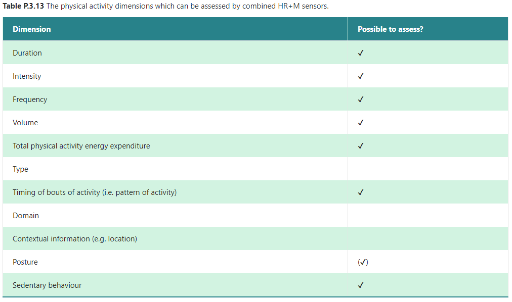
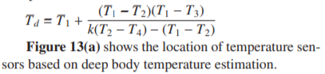
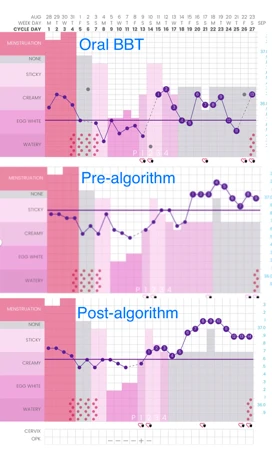
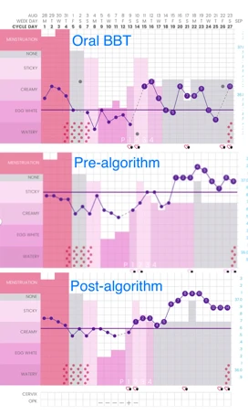
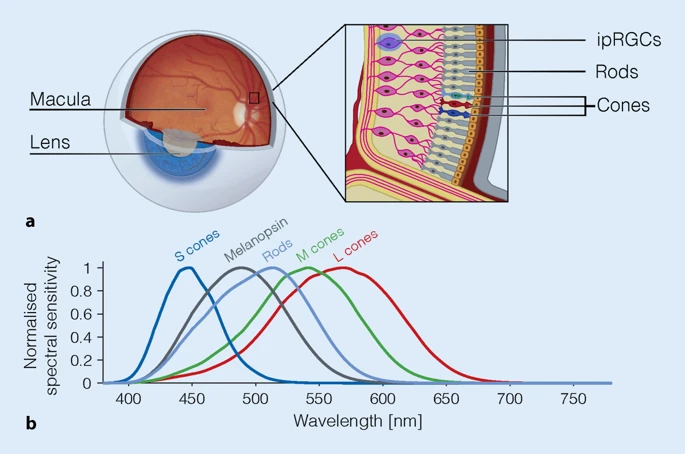
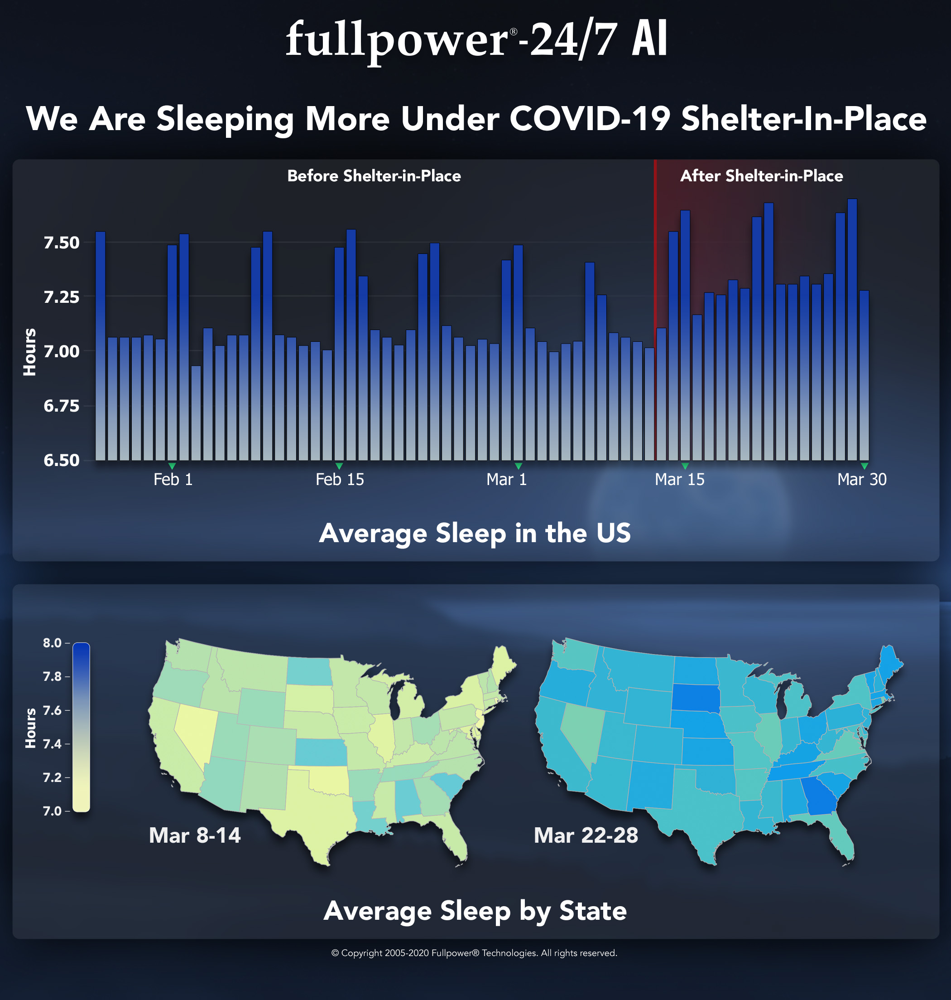
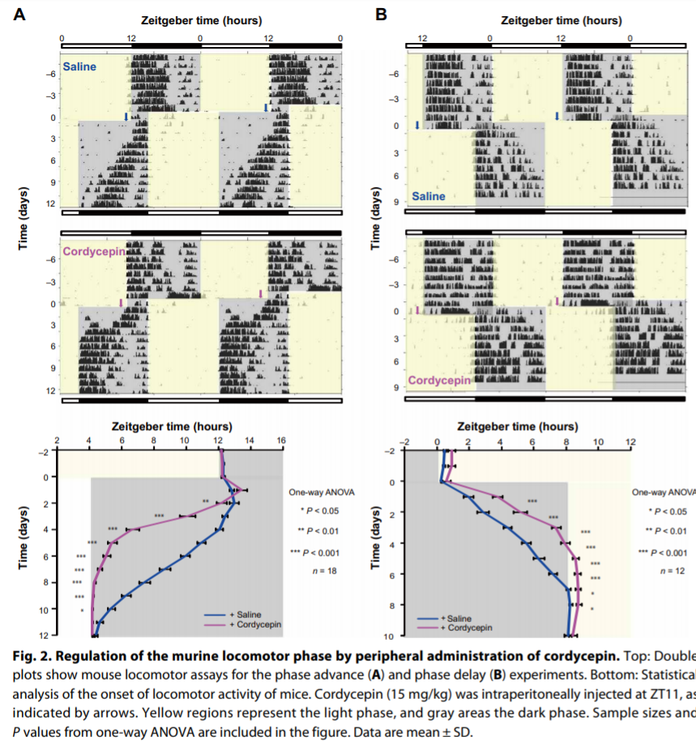
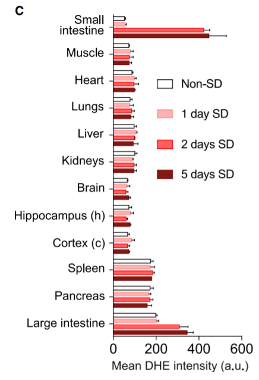
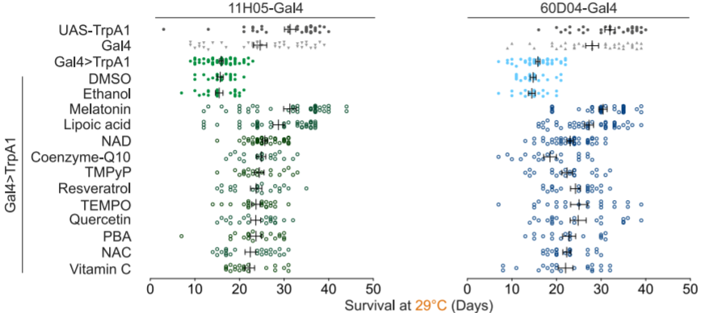

SleepNon24
Créée le samedi 24 août 2019
Paper draft
Foreword
This is a draft of a potential article for a work-in-progress therapy to manage non-24-sleep-wake-disorder (N24SWD). These procedures have not been vetted by the medical community nor reviewed by the scientific community.
Thus, it is NOT recommended to follow the therapeutic procedure outlined in "A new combined therapy", "Stage 1", "Stage 2" and "Preliminary results" sections, as they should be considered totally unreliable. At the time of this writing, this therapy produced little effect to improve the condition (another therapy not written here has provided significant effect, this draft will be updated in the future but for the moment it does not reflect the latest knowledge I have gotten from my partially working therapy).
However, the "Introduction" and "Current therapeutic approaches" section can be safely read and provide a review of the state-of-the-art knowledge on this and similar circadian rhythm disorders.
The rest of this document consists of unorganized notes and references, but you still may find them useful if you are interested in finding academic resources on various topics, just search for a specific term of interest (eg, if you are looking for the effect of the ketogenic diet on sleep and the circadian rhythm, search for "keto" which is a common shorthand for ketogenic).
A table of contents is also available as a button at the top left corner of the page, preferably use it to navigate throughout this quite long document.
Please also note that this document (and the additional bibliographies below) may be partly written in french (the author's native language).
This draft was written by Stephen Karl Larroque in 2019-2020.
Introduction
Sleep and circadian rhythm are highly conservated behaviors across all animals, and with some main components such as the suprachiasmatic nucleus in the hypothalamus, also called "master clock", regulating sleep by light (photic) inputs, and having precedence over all other peripheral clocks (Aschoff 198?), such as the pituitary gland which secretes melatonin, or insulin secreted by the liver and temperature modulation in the intestines. These structures are present in all vertebrates[???], which shows they are highly conservated in evolution and are thus serving critical homeostatic functions. Although both of these functions are still under active research to understand them comprehensively, we know that circadian rhythm's purpose is to allow for a living organism to be in synchrony with its environment: to be awake when it's possible to seek food, and to sleep otherwise to recover for the next day. As such, all living organisms rely on these two crucial functions to support their activities. Any disruption, or any abnormal sleep pattern, can therefore only be rare and significantly disruptive as this would cause the living organism to fit less with its environment, and thus decrease its survival chances if we follow darwinian principles.
For humans, we know very well how much sleep is healthy depending on age, with diminishing length with increased age [https://i.redd.it/ma3aj5nj81i31.png]. If the sleep duration is quite well defined, the bed time and wake up time are more variable, with some people being "early birds" (or "morning larks"), others "night owls", and others in-between. These chronotypes can be detected by using questionnaires such as the Morningness-Eveningness Questionnaire[55].
Besides the social isolation and "laziness" stigmata that sleep and circadian rhythm disorders may be associated with — a persistent myth despite the fact that motivation, alertness and performance are directly influenced by sleep and circadian rhythms[56,58] —, they can lead to several health complications, nearly all stemming from acute or chronic sleep deprivation: from reduction of attention, memory and performance in work settings with only a single night of sleep deprivation, to brain grey matter atrophies and gene modifications[???], and increased risks of accidents[58, ??? hospital workers accidents]. These effects are observed not only during experimental sleep deprivation, but also in settings where there is time to sleep but the whole schedule is shifting in rotation, which represents 15% of all full-time workers in the United States in 2009[59], such as hospital night shift workers [???], firefighters[59], polar antartica expeditions[61], submariners[60] and the NASA Mars Pathfinder and Rover staff[57, 58]. Interestingly, in this latter case, the workers were tasked with following an unnatural 24.65h schedule, to follow martian day-night cycle. The authors report that in 2004, the veteran workers of the Pathfinder mission, described as highly motivated and dedicated to their work, decided in "a rebellion" to stop it after only 1 month, describing the schedule as "broken"[58]. Although the study authors could later setup a strategy to help the workers better synchronize their sleep-wake schedule on the Rover mission, they continued to report an increasing fatigue, hinting at a reduced sleep efficiency despite sleeping theoretically sufficient hours[58]. This goes to show the difficulty for any human being to follow a non natural sleep schedule, with chronic sleep deprivation effects becoming unbearable after only a month, even for highly trained and dedicated workers.
Non-24-sleep-wake-disorder (N24SWD) is a circadian rhythm sleep-wake disorder (CRSWD) where the subject experiences a naturally and uncontrollably increasing shift in bed time and wake up time [44]. It can be diagnosed using various methods with different degrees of precision: from simple sleep logs where the patient simply writes the bedtime and wake up time, to polysomnographs, minimal temperature monitoring and salivary tests for dim-light melatonin onset (DLMO).[44] It is also possible to use actimetry, as it was shown to be an accurate enough measurement method.[46]
(TODO: add prevalence, risks, genetics, etc on N24SWD or circadian rhythm disorders if not available)
Circadian rhythm disorders are complex, as they involve both internal clock mechanisms and external environmental cues ("zeitgebers", which influence on sleep was only relatively recently recognized since 1978[2]). In her landmark paper, De Coursey discovered the Phase Response Curve (PRC), a model of the complex interactions between the internal clock and external cues that was shown to be highly conservated across evolution, across all animal taxons[2]. This curve was first devised for the response to light, but is now also including melatonin, in what is now called a dark-light cycle[??]. This cycle can be succinctly summarized as follows: light stimulation close before sleeping delays the sleep onset (bedtime), whereas light after mid sleep advances sleep offset (wake up time). Melatonin does the opposite: administration close to bed time will advance sleep onset, whereas administration after mid sleep will delay sleep offset. Administration of light or melatonin at any other time during the wakeful phase has little to no effect on the PRC[19].
However, although the PRC shape and behavior is conservated in all animals, the exact timing will change between species: nocturnal animals will have their PRC's tau point (the central point of the PRC shape, from which the external cues effects are distributed around — this point is usually at about the mid-time of the sleep phase) during the day, since they sleep during the day, rather than at night. Furthermore, this can change between individuals: some will have their tau value early (the early birds), others later (night owls), and those afflicted with circadian rhythm might have it set during incomfortable times, or even an ever moving tau time for the non 24 free running disorder. The importance of the PRC for the sleep regulation cannot be overstated: it was found that the timing of light exposure relative to the PRC accounted for about 71% of the inter-individual variability of the PRC adaptation to night shift work, suggesting that although the PRC is only one of the sleep regulator mechanism — another one being the sleep homeostasis, regulating sleep pressure, as in Borbély's two-process model —, it is most likely the most important mechanism regulating the temporality/synchronicity with the zeitgebers of the circadian rhythm[25]. Furthermore, interactions between sleep homesteostasis and the PRC were experimentally observed, further supporting Borbély's model[11, 26, 41].
It is well known that humans, and nearly all animals, have a circadian phase length tau that is slightly beyond 24h, for humans it's about 24.2h according to NIH[1]. It was repeatedly demonstrated experimentally that isolating a human subject from any environmental cues (including light/dark cycle but also noise and thermal variations, food intake and exercise) causes a loss of entrainment to these external cues and ultimately a desynchronization from the 24h day cycle, causing the subject to revert back to its natural internal clock cycle beyond 24h[1, 2]. In other words, it can be said that humans are naturally non24. The problem lies when there is an impossibility to entrain properly (ie, to be synchronized to the target time) to these external cues, and thus to follow a 24h day cycle. In other words, although anybody can function on a bigger than 24h cycle in the absence of external cues, non 24h can only function in such a way, regardless of external cues. A corollary is that advancing cues (light around wake-up time) and pertinent elimination of delaying cues when necessary (absence of light/increase of melatonin before bedtime) are of paramount importance for any human to entrain to a 24h day cycle.
Another source of variability in the PRC shape resides in the magnitude of the response to external cues (ie, the height of the PRC). Not only the magnitude depends on the intensity/dosage of the zeitgeber[43], it also varies inter-individually because of endogenous factors[12]. Furthermore, the response to advancing or delaying cues is asymmetrical: on average, humans have been shown to have a range of entrainment (ROE) — which is the range of day time that one can maintain — to have been estimated between about 23h to 28h[2]. The magnitude is also asymmetrical, with low intensity light suppressing melatonin (and thus producing a delaying effect)[10, last ref], whereas high intensity light is required in the morning to advance the phase[43]. In other words, humans have a much easier possibility of delaying — and living on an extended day longer than 24h — than to advance by reducing their day duration. For instance, to make children sleep earlier than their usual time, it is advised to advance by small increments of 15 minutes[??]. This is also evidenced by the etiology of non-24 disorder, for which only cases of longer days than 24h are known (daily phase delay), and no case of individuals with a too short day (daily phase advance). Czeisler CA hypothesized that subjects with delayed sleep disorder (DSPD) may have an even weaker response to advancing the PRC phase, such that delaying was almost the only possible route. They furthermore tested their hypothesis experimentally on 5 DSPD subjects by devising a chronotherapy involving a tau of 27h for one week, in other words a daily 3h shift, which suggests that indeed DSPD subjects more easily responded to delaying than advancing, similarly to what was observed also in healthy volunteers without a circadian phase disorder (see below), although more studies with randomized trials with a bigger sample size are needed to confirm.
As written by [2]: « Elegant experiments by the late John Mills and his co-workers (1978) demonstrated that the measured circadian rhythms in nearly all normal subjects whose scheduled sleep-wake and light-dark cycles were advanced by 8 hr actually delay shifted 16 hr around the clock before resynchronizing. This is exactly the result expected in those individuals whose capacity to phase advance has been exceeded. Further, after a 12 hr phase shift, they found that 90% of the partial adaptations proceeded by the phase delay route. Those results suggest to us that some normal individuals, without a PRC abnormality, might develop DSPS when forced to attempt an acute 6-8 hr phase advance (e.g., shift workers). Like Mills' normal subjects, some would be unable to achieve the shift by the phase advance route. However, unlike his subjects, who were living on a very strictly imposed schedule in temporal isolation, individuals living in society would also inadvertently prevent complete resynchronization via the phase delay route by "sleeping late" on leisure days (as in Fig. 4, days 1-20). Those episodes of late sleep might prevent their endogenous rhythms from drifting later and later around the clock, thereby effectively trapping the rhythms in a chronically inappropriate phase position (near its position before the imposed phase advance). »
Both the inter-individual variability of the PRC[12] and the hyper-sensitivity of DSPD and non-24 to delaying light cues[13] have now been observed experimentally, further supporting Czeisler et al's hypothesis.
Finally, a third source of variability is that the PRC shape is centered around the tau point, the mid sleep time, which is equal to the day cycle duration. Combined with the asymmetry in the PRC shape, this might make an absolute (but not relative) advancing an impossible feat for subjects with circadian phase disorders. For example, if a human is on average able to advance 30 min daily, depending on their own tau, a person might be unable to effetively advance: if the tau is 24.2 (24h and 12 minutes), then the advancing capacity exceeds the natural free running induced by the internal clock ; but if another person has a tau of 25h, with the same advancing capacity, then the maximal advancing capacity is only of 24h30, which exceeds a 24h day schedule, meaning that even with proper response to external cues, this individual cannot entrain to a 24h day, but only to a 24h30 day. Thus, the tau and magnitude of an individual's PRC are mathematically critical parameters for this individual to be able to entrain to a 24h day cycle. And indeed, non 24 free running disorder (N24) and DSPD were both recently shown to have a delayed tau (mean phase duration)[3, 4], confirming one of Czeisler CA et al's hypotheses[2]. Footnote: In the 2016 study, it was found that DSPD had a tau of about 24.5h, whereas N24 had more than 25h. This would suggest that N24 might have as a defining characteristic a longer tau than other circadian rhythm disorders. However, this study had a very low sample size, particularly for N24 which was only of 2 subjects. Furthermore, the 2013 study on DSPD patients only found an average tau of 25h, thus eliminating the apparent (but non statistically significative) difference found in the 2016 study.
Furthermore, DSPD were shown to have a delayed melatonin profile[18].
FIGURE 1 inspired/adapted from [2] to show each sources of variability in the PRC shape. Also where is sleep onset/offset.
FIGURE 1.5: unified model with both the PRC and the sleep homeostasis. Inspired by [11] (and maybe [2]):

FIGURE 1.6: see figs 1 and 3 of [15]

Thus, it is ALWAYS possible for a human to delay as well as advance, but advancing is always more limited compared to delaying. The corollary is that humans can modify their sleep onset/offset, simply by letting their natural clock free run.
TODO: rewrite sections as a review, with more exhaustive details
Gut microbiota and melatonin
TODO: gut microbiota is the major producer of melatonin, melatonin is broken down by the liver, microbiota bacteria synchronized with melatonin (hence melatonin can help with irritable bowel syndrome?), melatonin helpful for liver diseases such as NASH, melatonin mixup with glucose, misregulation of melatonin due to melatonin receptor type 2 mutation and highly predictive of obesity and diabetes and other metabolic syndromes.
Current therapeutic approaches
Several treatments were proposed for circadian rhythm disorders.
The pituitary gland is an important component of the sleep-wake rhythm in humans. It was shown through lesional studies to regulate the circadian rhythm, and hence got the nickname of "master clock".[47] It is influenced by both light and melatonin.[47] In blind non 24 subjects, lesions in the pituitary gland have been regularly observed[??]. This led to the hypothesis that this disorder may be caused by dysfunctions in the master clock. Hence, the two most pursued treatments for non 24 so far have been by modulating these two antagonistic signaling pathways, melatonin, the "darkness hormone" which is secreted in the absence of light, and light, which inhibits melatonin secretion.
Melatonin has historically been the first line of treatment for non 24 in blind people. It was shown to be effective for entrainment in up to 67% of the subjects.[45] However, since this is a natural hormone that is not patentable, no pharmaceutical industrial went through the process of validating melatonin through national institutions such as the USA Food And Drugs Administration, and thus melatonin is not officially recognized as a treatment for non 24, although there is good evidence this is the case.[44, 45] There is currently only one recognized drug treatment for non 24, which is Tasimelteon (commercial name Hetlioz),[44] with an entrainment rate of 20% in a randomized controlled study, which seems considerably lower than melatonin's entrainment rate.[45] Apart from these two drugs, there is currently not enough evidence for any other kind of treatment or therapies for non 24, according to the 2015 guidelines of the American Academy of Sleep Medicine (AASM).[44, 45] As pointed out by an excellent review, the AASM made their criteria more difficult in the latest revision of their guidelines, so that only treatments with reliably high confidence of effectiveness could be recommended, but that does not mean other therapies are ineffective, simply that there is not sufficient evidence.[45]
Light therapy was proposed as a way to advance the PRC. Increase in cognitive performance and attention was noted for night shift workers using a bright light (which definition of bright varies depending on the study) during their shift at night. However, light therapy has shown limitations: light cues have no effect on the circadian rhythm if outside of the PRC curves[19] (ie, only effect is around bedtime and wakeup time, during the individual's wake up period there is no effect), and furthermore sleep pressure can also reduce or nullify the effect of light[21]. Thus, it is important to both time correctly the light therapy according to the individual's PRC curve, and to ensure the individual is properly rested so that the light cue can be effectively processed to advance/delay the PRC.
An extension of the light therapy is the corollary dark therapy, which is to ensure that delaying light cues are minimized. Such a dark therapy usually involves either placing the individual in a dark room in the laboratory setting, as is often done to measure the natural DLMO and minimal temperature in order to qualify the circadian rhythm parameters such as its duration tau. Outside of the laboratory setting, experiments attempted to use accessories to help shift workers better adapt to their schedule, with significant success. Blue blockers glasses were shown to be efficient in improving the sleep efficiency and circadian rhythm delaying for night shift workers, and are now formally recommended by health bodies.[20] Although historically most studies have studies either light therapy or dark therapy, their combinations seem nowadays only natural since their complex interactions, by compounding or nullifying, provide an excellent mean to adjust one's circadian rhythm as shown in night shift workers[41].
Some have argued that the difference in the circadian rhythm might reflect an adaptation to a different timezone, and thus that moving the individual to a proper timezone would correct the chronotype. However, this was not supported by experiments, where the light exposure and occupation were explaining all the differences in the individuals chronotypes with no to little effect of the timezone.[17]
Another approach is chronotherapy. A naive chronotherapy commonly devised by non24 involves building a high sleep pressure by prior sleep deprivation, allowing to sleep at the target bedtime even though it is not in phase with the endogenous circadian rhythm and thus would mostly prevent any attempt to sleep during this high wakefulness period, bar for the high sleep pressure. This strategy is also employed by night shift workers[38, 41]. Needless to say, such strategies have very deleterious effects, not only in the long term, but also in the short term[??].
There are however more elaborate chronotherapy schemes that do not involve or limit sleep deprivation. A study on 5 DSPS patients found that chronotherapy was very effective to resynchronize the circadian rhythm faster to the target time by allowing free-running and even furthering the free-running to a higher tau (eg, follow a 27h day schedule instead of the endogenous 24.5h)[2]. All these patients were able to maintain their desired sleep schedules for months or even years after the therapy[2]. Despite the promises shown by chronotherapy in DSPS patients, a few authors raised concerns about the risk of modifying the tau parameter under the effect of artificial extension during chronotherapy[7], which stopped investigations into chronotherapy for circadian rhythm disorders since then. For instance, a case study reported the case of a DSPD patient transitioning to N24 after self-initiated adaptations in his lifestyle to accustom with his DSPD disorder[??]. This led to some suboptimal adaptations, such as practicing sport in the evening/night, which is known to negatively affect sleep efficiency when done this close to sleep onset[??]. This led some authors to argue this resulted in a regularly applied extended delay, ultimately causing a transition from DSPD to N24. This interpretation is arguable, as the patient did not follow a formal and controlled chronotherapy, but rather attempted to adapt his own schedule to his DSPD condition. Thus, the causality might be inversed: instead of the extended delay causing a switch to N24, it could be that the delay was caused by the DSPD transitioning to a N24. Thus, it can be debated whether these adaptations were caused by the DSPD condition, and whether a more appropriate and controlled chronotherapy would have instead enhanced his condition instead.
Nevertheless, these criticisms raise a new concept that was seldom, if never, studied before: the possibility to change the tau parameter (by reduction/advancing or by expansion/delaying) via a behavioral therapy. This concept can be further extended to any zeitgeber based therapy, and the question be more generally reframed as following: is the effect of zeitgebers cumulative over time, or is it fixed relatively to the baseline circadian rhythm? This is named the hypothesis of circadian plasticity, which is that zeitgebers can permanently affect the circadian period tau, beyond direct exposure. In other words: would forcing oneself to live longer or shorter days than the innate internal clock eventually lead to the internal clock adjusting to the new daylength?
Depending on the existence of this cumulative zeitgebers effects on the circadian period tau, two very interesting scenarios are possible:
- Either zeitgebers do not have a cumulative effect (ie, the tau parameter cannot be permanently changed),
- in which case chronotherapy and other zeitgebers are a safe way to move faster the sleep onset/offset and partially resynchronize with a desired schedule, thus increasing drastically the patient's quality of life by allowing some degree of control over the disorder. In practice, this would allow such an individual to reduce the timespan with a very incomfortable sleeping schedule by increasing the delaying step (eg, sleep 3 hours later than the day before, instead of the usual 1h for an individual with a 25h cycle, to "skip" dephased days faster) ; as well as increase the timespan in a desired sleeping schedule by advancing the PRC daily during this period (eg, sleep 30 minutes earlier everyday compared to the day before, such that an individual with an usual 25h cycle would live on a 24h30 cycle instead — dephasing only by 30 min daily instead of 1h, thus doubling the time spent in the range of the desired sleeping schedule).
- but then zeitgebers only have a fixed maximal capacity of phase delay/advance, which means that extreme cases of N24 or DSPD can likely not sufficiently phase advance to reach their ideal sleeping time.
- Either there is a cumulative effect, and hence the tau parameter can be changed, in which case:
- delay chronotherapy might worsen circadian rhythm disorders such as DSPD into N24, as delaying might progressively extend the tau parameter and thus worsen the condition[2,35], studies showing that bigger taus are associated with worsened quality of life in circadian rhythm disorders [??]. But such adverse effects would also be reversible, perhaps at the cost of more stringent and uncomfortable sleep controlling measures, but still they would be reversible.
- and more importantly, advance chronotherapy might be a potential curative treatment for circadian rhythm disorders: although arduous since the range of entrainment and effect for advancing is more limited in humans (max 1h, but usually much less), daily advance in the PRC would eventually result in advancing the tau parameter to the desired value, closer to 24h. This would be the only mechanism known to durably reduce the circadian rhythm cycle.
- The population that might suffer from non24 might be much wider than previously thought, as non24 may be behaviorally caused in this scenario. Indeed, if the tau parameter can be behaviorally or chemically changed, combined with the well-known fact that human's circadian rhythm is naturally above 24h and thus free-running, this would suggest that anybody could potentially acquire the non24 syndrome under specific conditions. Contrarywise, previous studies on variable night shift work found that some chronotypes, mostly the early birds, have more difficulties adjusting to changes in their sleep schedule[15, 27, 38]. A few studies on the NASA personnel explored the possibility to enforce a non24-like free-running schedule of 24.65 hours for 78 days, in order to assess the potential impact of future human cosmonauts who would go on a mission to Mars. These studies found that most of the personnel had major difficulties adjusting to this new schedule, with inefficient sleep even past the 78 days. Other studies simulating the adaptation to a martian days of 24.65 hours interestingly found that some participants could adapt to a non-24 hours day schedule, whereas others could not[65]. These studies however did not assess the initial chronotype of the participants[22, 23]. Indeed, it's known that the early bird chronotype might be partially determined genetically[63]. All of these preliminary evidences combined suggest that, in the case that the tau parameter is modifiable behaviorally or chemically, genetic mutations and predispositions are probably another contributing or discontributing factor to acquire non24. The early bird genotype might be a barrier preventing free-running and proper synchronization to zeitgebers, much like a genotype of zeitgebers hypersensitivity would on the contrary facilitate non24 acquisition by essentially making these subjects more susceptible to environmental factors[12, 13, 25, 28]. Furthermore, other genotypes may innately produce an increased tau, just as much as, in this hypothesis, behavioral adaptations might also delay the tau enough for entrainment to a 24h cycle being outside of the ROE[32]. In addition, sleep deprivation has been shown to modify the genotype by inducing genetic mutations[65, ??], hence specific lifestyles might induce genetic mutations causing or worsening circadian rhythm disorders such as non24. Thus, it is conceivable that there is a two-way interaction between genetic mutations and behavior/lifestyle, both influencing each other. And actually, these complex interactions between environmental and endogenous factors have already been suggested to explain the difficulties in adaptation of night shift workers[15, 41]. Further studies on these interactions might yield extraordinary insights into the physiopathology of circadian rhythm disorders.
FIGURE2: different scenarios of advance/delay impact on non-moving tau vs on moving tau, inspired by:

Despite the focus of most studies on the master clock, there is evidence that the sleep-wake rhythm is dictated not only by the master clock but by several pathways in the peripheral nervous system (ie, in the whole body).[47, 48, 49, 50] Indeed, there are several evidences of the implication of mistimed food intake impacting the circadian rhythm[51], which can in turn influence insulin sensitivity[52], and even the composition of the diet can cause disruptions in the circadian rhythm[53]. This can have dire consequences, as mistimed sleep, without direct sleep deprivation, can increase the risk for various metabolic diseases such as diabetes and even alter the human transcriptome. (TODO: extend and add refs, process refs in [54]).
A new combined therapy
Leveraging the natural tendency of humans to delay more easily, we here propose a new combined therapeutic strategy, aiming to at least enhance the individual's quality of life by teaching how to exert more control on the sleep schedule, while minimizing or avoiding altogether sleep deprivation, which can have lasting effects from the very first night of sleep deprivation[??]. This strategy involves both a chronotherapy to allow the subjects to learn how to exert some control on their internal clock, as well as ... therapy (luminotherapy, dark therapy, sound therapy?) to control external cues as needed, as well as self reporting using computerized tools to help the user both track and also follow through the whole process.
This strategy allows to test the two hypotheses of the tau adaptation, and get benefits in either cases: at worst, if the tau parameter cannot be changed, the strategy allows the individuals to exert more control on their PRC and thus sleep phases and quality of life via an individually adapted chronotherapy and sleep hygiene ; at best, it allows to reduce or might even eliminate the circadian rhythm disorder by progressively reducing the tau parameter until it gets closer to 24h to allow entrainment.
The strategy involves two stages:
- control of internal clock by extending/delaying the PRC (chronotherapy) + elimination/reduction of potentially influencing external cues → see chronotherapy below.
- stabilizing the internal clock by avoiding extension/delaying of the PRC + restoration/simulation of external cues as needed to complement the target PRC
Such a combined therapy was suggested as a very promising approach to investigate[2, 15], however it was never done before to this extent and data is lacking.
All the calculations below will use the wake up time as the reference point to estimate the DLMO and the circadian rhythm of the individuals, which was found to be an accurate proxy for the DLMO for both typical sleepers and individuals with DSPD, contrary to the bedtime which was not predictive of the DLMO in either[6, 14]. Furthermore, we will not follow current recommendations of various health organizations about the timing of melatonin administration, as they were shown to be ineffective, but rather use the latest evidence from research experiments:
«Although pharmacopoeias and the European food safety authority (EFSA) recommend administering melatonin 1–2 h before desired bedtime, several studies have shown that melatonin is not always effective if administered according to that recommendation. Crucial for optimal treatment of CRSD, melatonin and other treatments should be administered at a time related to individual circadian timing (typically assessed using the dim light melatonin onset (DLMO)). If not administered according to the individual patient's circadian timing, melatonin and other treatments may not only be ineffective, they may even result in contrary effects. Endogenous melatonin levels can be measured reliably in saliva collected at the patient's home. A clinically reliably DLMO can be calculated using a fixed threshold. Diary and polysomnographic sleep-onset time do not reliably predict DLMO or circadian timing in patients with CRSD. Knowing the patient's individual circadian timing by assessing DLMO can improve diagnosis and treatment of CRSD with melatonin as well as other therapies such as light or chronotherapy, and optimizing treatment timing will shorten the time required to achieve results.»[16]
Furthermore, moving the participant's sleep schedule directly to the target sleep schedule at once has been shown to be not only ineffective, but also harmful by causing sleep deprivation. In effect, although the participant might forcefully wake up at the required time by using a device like an alarm clock, the circadian rhythm will behind the walls slowly drift in a free-running fashion until attaining the target time, meanwhile the desynchrony between the sleep schedule and the internal circadian rhythm decreasing the sleep efficiency as evidenced by polysomnography and ultimately sleep deprivation, as observed in both normal sleepers and non24 patients[2 with footnote 36 and footnote 37].
TODO: justify using literature on dsps and night shift work disorder: sighted non24 is very rare or misdiagnosed so litterature sparse, it is arguable whether all circadian rhythm disorders have shared mechanisms, with hints indicating that's true because melatonin work for all and sleep is a very conservated mechanism so likely it's a very stable process throughout evolution with some inter species and inter individual variability.
Stage 1
Before starting the Stage 1 of this protocol, it is crucial for the participant to both get diagnosed properly by a specialist physician in circadian rhythm disorders, and to rest properly for at least 2 weeks by following his/her own sleep schedule. The latter might not be as easy as it sounds: chronic sleep deprivation causes a decrease in cognitive performance that is not perceived properly by the subject, which means that subjects that are sleep deprived, which is a common occurrence for persons with the non24 syndrome, will have more difficulties to know when they need to sleep and how to adapt their behavior to help inducing sleep (which is a big part of the Stage 1 process).[24, 29, 31] Hence, a period of stabilization in the sleep schedule (in the sense that the natural free-running sleep schedule is following to the participant's needs) is essential for the proposed therapy to have any efficiency. This "pre-protocol" period can be advantageously used to order the necessary equipment as well as put in place good practices such as systematically maintaining a sleep log with the help of applications such as Sleepmeter (more about that below). Also, participants should be cautioned that they may be left in a worse condition if they do not follow through the whole protocol (stages 1 and 2).
time management is crucial, but more difficult even for night shift workers: «It is common to feel like there is too much to do and not enough time, especially when working the night shift. Prioritize your sleep by blocking off that time first, then determine what else must get done, assign a time for those activities, and delegate or postpone other tasks. We do not routinely decide to pull all-nighters when working days; working nights is not the time for it either. Sleep should not be an afterthought.» http://sci-hub.tw/10.1097/CNQ.0000000000000152
Stage 1: Delaying phase chronotherapy to reach the target wake up time: The chronotherapy involves an alternating strategy on 2 days, for 8 days:
- delay on day 1: extend the sleep onset by 3 hours (ie, sleep 3 hours later than the usual, or can calculate 4h subtracted from the sleep offset/wake up time if this one is more stable). Sleep as much as optimally needed to feel rested (X hours), and wake up at the new wake up time W. Eg: usual sleep time is from 5am to 1pm, on day 1 the new sleep time will be from 8am to 4pm (optimal sleep time of 8h), but the individual wakes up at 3pm instead (and sleeps less than the optimal 8 hours).
- stabilize on day 2: sleep at W-X=O time until W time. Eg: the individual will sleep from 7am to 3pm, effectively having delayed by 2h.
- Adjust and repeat for all subsequent days, and write down the time in a sleep log after each day. Adjusting consists in reducing/extending the delay depending on sleep efficiency:
- if take time to sleep then too early, O time should be delayed.
- if having too many nightmares (indicating more REM sleep than non-REM sleep), or wake up too early, then slept too late. O time should be advanced.
- Hint: the temperature minimum is attained at the mid sleep time, thus when the individual is feeling colder, this might be a good hint that the PRC shape has begun.
- Stop this stage when the individual reaches a wake up time close to the target wake up time, with enough margin to account for a few days of continued delays. For this experiment, we advised 4 days of margin. Eg, if the individual's tau before the stage 1 was 24.5h, thus 30min delay each day, and the target wake up time was 9.00am, the stage 1 should stop when the individual wakes up at 7.00am, to allow for 4 days of delaying before reaching 9.00am. During this period, stage 2 will be started in order to attempt to maintain the individual's circadian rhythm in this phase. The number of days of margin can be adjusted depending on the amount of margin one wants to leave in order to adjust to stage 2.
FIGURE 3: summarizing stage 1
During the application of the chronotherapy, it is essential to control a maximum of external parameters:
- At wake-up:
- turn on bright lights (use a neon of white light — not yellow — for extended time and/or use luminotherapy lights for short time just after waking up)
- Can take melatonin supplement to help delay further (although the effect might be paradoxical — it may not delay but advance, the effect of melatonin might be desynchronized compared to light in circadian rhythm disorders, this is a hypothesis advanced by some authors and there is currently no evidence in favor or against it)
- Before (1-2h at least) bedtime:
- use blue and green light blockers glasses 2h before the planned sleeping time (such as Uvex Skypper S1933X or Uvex S0360X Ultra-spec 2000 [8] — it is also possible to precisely measure the light stimulation by using a spectrometer or new consumer-grade devices such as the Lys[9]).
- stay in a place with minimum to no light intensity. Even with blue and green light blockers, the light intensity can still impact the circadian rhythm. Indeed, it was shown that even lux as small as 2-3 (candle lit dinner) suppress melatonin production [10].
- avoid using electronic screens (except ebook readers with einks and no backlight). If really needed, set the backlight to the minimum, and use apps to turn the colors red, such as Twilight on Android. Any screen filter software that does not totally turn all colors to reddish is not filtering enough.
- use an eye night cap to block a maximum of light during sleeping
- go out of bed and do not go to the bed until it's the planned time to sleep (avoid working from bed! If you can't sleep, go out of your bed and come back half an hour later)
- use noise blocking ear plugs during sleeping
- turn off any sound or vibration notifications from phones and such
- avoid practicing sport before bedtime, prefer to practice after waking up, during the first part of the (relative) day.
- eat early at least 3h before bedtime, including beverages like coffee[30] or sugar drinks.
- Other advices can be found in: http://sci-hub.tw/10.1097/CNQ.0000000000000152
The maximum efficiency of this chronotherapy is a delay of 12h under 7 days (the 8th being for the final stabilization, which then should be followed by the strategy's stage 2, which is simply the continuation of this stabilization).
However, this efficiency can only be reached if the subject's internal clock can be entrained to a 27h day. DSPD patients were shown to be able to partially entrain[2], however, they did not fully entrain as shown by the reduced sleep efficiency in one of their subject towards the end of the chronotherapy delaying phase they used. In such a misentrainment case, the internal clock will revert to its natural tau[2] (eg, 24.2h in humans on average, for non-24 the delay can be longer from 0.5 to 1h30/day usually), thus a delay will still occur but reduced, which will in practice result in a reduced sleep duration, less efficient sleep and interruptions in the sleep (eg, waking up earlier than intended)[2]. However, when inducing an increased delay shifting, the free-running circadian rhythm might be bigger than the endogenous free-running rhythm without induction. For instance, in night shift workers, who were otherwise normal sleepers and thus probably with an average tau around 24.2h, it was observed that on average the circadian rhythm shift was about 1h, which would be a tau of 25h[41]. Our strategy tries to reduce this issue by allowing an alternating day of stabilization, whereas [2] chained the delays. It is also possible to adjust the number of delay hours by reducing it until the sleep efficiency is not impacted anymore.
Alternating days of delay and stabilization further provide a safeguard against the possibility of permanently extending the tau: by stabilizing, we try to ensure that the internal clock does not register the extension of tau as permanent but only as transient, as this was one of the raised concern about chronotherapies in circadian rhythm disorders[7].
For writing the time in a sleep log, we advise to use Sleepmeter Free combined with the Sleepmeter Widget by Squall Line Software[5], which are free tools on smartphones that simplifies the maintenance of a sleep log, with the additional benefit of being very precise: instead of writing the time at which you retrospectively think you went to sleep and woke up, the subject can simply tap a widget on the screen when going to sleep and when waking up. The software will then delimit the sleep times, with optionally a calculation of some offset time (eg, if the subject is a slow sleeper and takes 30 min before sleeping, or is drowsy in the morning and takes 20 min to wake up, it is possible to set up the software to automatically add or subtract such amount of time automatically from the "widget tap" times). Using such a software will allow the subject to both more precisely track its own sleep duration, timing and quality, but also provide an incentive for continuing the therapy (increasing therapy compliance). This can furthermore provide valuable data to the physicians and researchers, as sleep log data was shown to be highly predictive of the PRC, allowing to model it with 90% accuracy from sleep logs alone[6]. The digitalization of sleep logs also show great promise to allow for large-scale sleep data acquisition for scientific studies, as well as provide automated health guidance for the individual[62].
Napping was suggested to be advised to help in adaptation to zeitgebers by reducing sleep pressure and increase clock susceptibility to light[11], however this was not experimentally tested and there is evidence that napping reduces the sleep pressure and sleep duration during the bedtime sleep, making it more difficult by reducing sleep efficiency because of a lack of sleep pressure and slight sleep debt, which would otherwise ease falling asleep at the planned time[26, 39]. Also napping does not allow to cycle through all sleep stages in the same way that a full night of sleep does[40]. Furthermore, DSPS were found to have slower sleep pressure buildup compared to normal sleepers, and one can probably safely assume the same holds true for non24[15]. We thus disadvise napping in this phase unless required because of too much sleep deprivation (eg, because of a daily shift too big, in which case it should be reduced to allow for easier entrainment).
In any case, shifting might produce a more chaotic sleep schedule, as the forced behaviorally-induced shifting might not always be followed by a concrete shift in the circadian rhythm depending on various factors[33]. The participant should thus be prepared that this stage 1 might not be followed by a daily result, but should not be detracted from the overall result that the induced shifting produces (ie, the shifting should in the end be overall faster and allow the reaching of the target wake up time faster than by following the endogenous free-running circadian rhythm). In the worst case scenario, the participant will simply shift according to the endogenous free-running circadian rhythm, but at best, and with the help of environmental cues control such as light, the shift will be faster when following this protocol.
TODO: replace natural by endogenous
TODO: define list of custom hindrances and aids, hide others, and use only these. Can add new custom ones, I can aggregate them myself, will be interested to cover unforeseen cases. Also write sleep quality. And sleep holes.
Stage 2
Stage 2: environmental cues control and melatonin administration to advance phase
- Vitamin B12 cyanocobalamin 1000mcg once per day, everyday (eg, Solgar brand). Vitamin B12 was shown to resolve a few sighted non24 cases and allow entrainment to a 24h schedule[55]. More recent studies evidenced a potential mechanism for this effect, with the B12 potentiating the magnitude of zeitgebers effects on the PRC (ie, B12 allows both light and melatonin — whether endogenous or exogenous — to have more shifting effect — whether advancing or delaying — on the circadian rhythm)[34].
- For melatonin administration: use 1 pill every few days (not everyday) of instant release melatonin, dosed at 1.9mg. Instant release is VERY important. More details:
- The optimal time to take the medication should be at the DLMO point - 4 hours[15]. To calculate the DLMO point = (wake up time - optimal sleep duration - 2.5) mod 24 [14]. We subtract 2.5 as it is the average between the Lewy's PRC finding an average DLMO 2h before bedtime and more recent studies finding 3h before bedtime, but with the caveat that DLMO-to-bedtime is highly variable, with 60% of the individuals having more or less than 2-3h. Eg, if wake up time is 9am and the optimal sleep duration is 8 hours, the DLMO point will be at 9-8-2.5 = 10pm. From there, the optimal melatonin administration would be at 11-4 = 6pm. In practice, the melatonin should be taken between the optimal melatonin point and the DLMO, thus between 6pm and 10pm in our example, but NOT before 6pm, as then the melatonin would have little to no effect before this point in the PRC phase.
- Note that the bedtime, and DLMO, should not be calculated according to the target bedtime the subject would like, but rather, as suggested in previous reviews, according to the usual/expected bedtime if the subject follows the endogenous freerunning rhythm. The idea is to use melatonin as a tau shortener, in other words to advance the bedtime, and thus it should be adapted to the actual bedtime and not the wished one.
- In this protocol, the melatonin administration is NOT daily, but every few days as required: when the individual uses melatonin at the optimal point (or close after), the PRC will be advanced. There is no currently available model that can predict the amount of advance that will thus be effected to any individual, but it can amount to less than a hour to several hours. Thus, the individual should take the melatonin when required to stay in a "range of target times": if for example the target time is to be awake by 9am, and the melatonin advance the PRC by 2h with a single dose, then the individual can take the melatonin when the wake up time gets close to 9am, to shift back to 7am, and then refrain from melatonin administration for a few days until the individual's circadian rhythm gets gradually close to 9am again. This way, the individual will always wake up between 7am and 9am, by using melatonin administration only when necessary. We also suggest this might also have the beneficial side consequence of avoiding habituation lessening effects that might happen with continuous administration of melatonin. If done properly, the wake up time should be irrespective of the bed time, although the individual should feel more sleepy earlier than the days prior, following melatonin administration.
- TOADD (rewrite): about the dosage, melatonin was shown to work for some individuals with as little as 0.5mg
it's mentioned in the current AASM guidelines, and before I have read the original paper
so this suggests that the dosage does not matter
I used to take 5mg at first, then 3mg, now I use 1 or 1.5mg and it works just the same
nowadays I just use whatever is commercially available
the only thing you want to make sure is to use an instant release melatonin
not a "long release"
because you want it to trigger your sleep mode
yes I did not know that for a long time, it was my physician who told me and now that I did a more thorough review of the scientific literature and what is known about sleep and circadian rhythm, it makes perfect sense
if you take a long release melatonin, it won't help much to go to sleep at the time you want, and in the morning you will feel more sleepy, because the melatonin will still be in effect
long release melatonin is for those who take it as a relaxant
(and I used both before knowing about the difference, and I can confirm, the long release ones do not work for us)
- BEST CRITICAL ME: update melatonin intake and background using what I wrote here (June 2020): https://www.reddit.com/r/DSPD/comments/gug3ej/i_know_youre_all_awake_so_please_help_me_with/ (mirror:
- use night cap when you sleep
- use blue blocker glasses 3 hours at least before you go to sleep [20]
- use auditive blockers when you sleep
- as before, control other environmental cues/zeitgebers:
- eat at least 2/3 hours before bedtime
- do NOT stay in bed if it's not to sleep: train your body to fall asleep faster by not staying in bed if it's not for sleeping! behavioral programming
- exercise early in your day rather than later and avoid in the 3h before bedtime
- avoid drugs, including alcohol
- stick to your sleeping schedule: be rigorous with your sleeping schedule and hygiene: remember it is likely you have more sensitivity to delaying effects, thus you should be particularly careful to avoid anything that can delay your sleep (eg, evening/night time social events). Note however that social contacts and knowledge of clock time were found insufficient for entrainment, so although these can disrupt the sleeping efficiency, they are not sufficient to stick to a sleeping schedule[60].
- avoid watching moving images (ie, videos) before sleep, prefer reading on an e-ink ebook or at worst a smartphone screen with a reddish screen filter and minimal backlight (ie, Twilight app on Android). Avoid using a laptop screen. Indeed, laptop screens tend to backlight more lux (ie, to project more light) compared to a smartphone, because a smartphone's screen is smaller and also for energy economy reasons they tend to allow a lower amount of intensity at the minimal setting than do laptop screens.
- RECORD your sleep log with sleepmeter, including inputing when you used an accessory (night cap, blue blocker, etc)
- Optional: expose yourself to bright light (lux >= 3000) in the 4 hours following wake-up to induce more phase advance[43]. If your wake up time is during the day, you can expose yourself to sunlight (even if cloudy), but if not an artificial light with the appropriate lux intensity can be used. Note that most artificial lights can only project enough lux for phase advance at very close range. New devices such as the Luminettes are currently investigated to make the use of such artificial light therapy more comfortable and increase the rate of treatment compliance.
FIGURE 4: summarizing stage 2 (or merge with Figure 3 to have both on one panel)
If stage 2 works, you can continue using it as long as you want. If not, stage 1 can be done again in order to shift back close to the target wake up time.
For methods: Lovato, N., Micic, G., Gradisar, M., Ferguson, S. A., Burgess, H. J., Kennaway, D. J., & Lack, L. (2016). Can the circadian phase be estimated from self-reported sleep timing in patients with Delayed Sleep Wake Phase Disorder to guide timing of chronobiologic treatment?. Chronobiology international, 33(10), 1376-1390.
Preliminary results
This section describes work-in-progress results that have not been statistically tested, they are first-hand observations on a single case.
- Smartphone-based sleeping log solutions may provide a quite accurate ground to predict phase shifts (and thus may help the subject in planning the next weeks or months of sleep schedules).
- Accessories (sleep eye mask, ear plugs, blue blockers and blue light filters apps) seem to improve sleep efficiency (TODO: statistical test on difference in sleep length as a proxy for efficiency, else would need an actimeter or polysomnograph with and without).
- Time-restricted feeding (skipping evening meal) may increase perceived tiredness at natural time to sleep (which in turns contributes to sleep efficiency). It may also somewhat reduce the phase shift.
- Melatonin between 5 and 3 hours before calculated optimal bedtime (bedtime = 8 hours before last wakeup time) seems to have a similar, but stronger effect (to potentiate sensitivity to natural tiredness). It seems to phase advance bedtime, but not wakeup time (ie, the subject sleeps longer, but without any benefit, except as a "sleeping pill" when necessary).
- Stage 1 procedure seems to indeed help in cycling faster. But stage 2 does not seem to stabilize.
Bibliography
[1]: National Institute of Health (NIH) Sleep and Sleep Disorder’s Teacher’s Guide, Supplement Series Grade 9-12 https://science.education.nih.gov/supplements/nih_sleep_curr-supp.pdf , page 27
[2]: Czeisler, C. A., Richardson, G. S., Coleman, R. M., Zimmerman, J. C., Moore-Ede, M. C., Dement, W. C., & Weitzman, E. D. (1981). Chronotherapy: resetting the circadian clocks of patients with delayed sleep phase insomnia. Sleep, 4(1), 1-21. https://pubmed.ncbi.nlm.nih.gov/7232967/
[3]: Micic, G., De Bruyn, A., Lovato, N., Wright, H., Gradisar, M., Ferguson, S., ... & Lack, L. (2013). The endogenous circadian temperature period length (tau) in delayed sleep phase disorder compared to good sleepers. Journal of sleep research, 22(6), 617-624. https://pubmed.ncbi.nlm.nih.gov/23899423/
[4]: Micic, G., Lovato, N., Gradisar, M., Burgess, H. J., Ferguson, S. A., & Lack, L. (2016). Circadian melatonin and temperature taus in delayed sleep-wake phase disorder and non-24-hour sleep-wake rhythm disorder patients: An ultradian constant routine study. Journal of biological rhythms, 31(4), 387-405.
[5]: https://play.google.com/store/apps/details?id=com.squalllinesoftware.android.applications.sleepmeter.free&hl=en_US
[6]: Lovato, N., Micic, G., Gradisar, M., Ferguson, S. A., Burgess, H. J., Kennaway, D. J., & Lack, L. (2016). Can the circadian phase be estimated from self-reported sleep timing in patients with Delayed Sleep Wake Phase Disorder to guide timing of chronobiologic treatment?. Chronobiology international, 33(10), 1376-1390. https://www.ncbi.nlm.nih.gov/pubmed/27611743
[7]: Oren DA, Wehr TA. Hypernyctohemeral syndrome after chronotherapy for delayed sleep phase syndrome. N Engl J Med. 1992;327(24):1762. https://www.mdedge.com/psychiatry/article/63478/sleep-medicine/night-owls-reset-physiologic-clock-delayed-sleep-phase/page/0/[[https://www.mdedge.com/psychiatry/article/63478/sleep-medicine/night-owls-reset-physiologic-clock-delayed-sleep-phase/page/0/3|3]]
[8]: https://www.blublox.com/blogs/news/spectrum-test-results-for-leading-blue-light-glasses-brands-revealed
[9]: https://lystechnologies.co.uk/blogs/reflections/what-is-a-non-24-hour-sleep-wake-phase-disorder-and-what-can-be-done-to-treat-it
[10]: https://twitter.com/CGronfier/status/1118860771604168710 and Prayag, A. S., Najjar, R. P., & Gronfier, C. (2019). Melatonin suppression is exquisitely sensitive to light and primarily driven by melanopsin in humans. Journal of pineal research, 66(4), e12562. and Zeitzer, J. M., Dijk, D. J., Kronauer, R. E., Brown, E. N., & Czeisler, C. A. (2000). Sensitivity of the human circadian pacemaker to nocturnal light: melatonin phase resetting and suppression. The Journal of physiology, 526(3), 695-702. and Vartanian, G. V., Li, B. Y., Chervenak, A. P., Walch, O. J., Pack, W., Ala-Laurila, P., & Wong, K. Y. (2015). Melatonin suppression by light in humans is more sensitive than previously reported. Journal of biological rhythms, 30(4), 351-354.
[11]: Sleep homeostasis and the circadian clock: Do the circadian pacemaker and the sleep homeostat influence each other’s functioning? https://www.sciencedirect.com/science/article/pii/S2451994417300068 - Summary: sleep homeostatic process influences the circadian rhythm, the other way around there is more limited evidence we are not sure at all. TODO: read more fully, may find something in link with my hypothesis that bedtime != wake-up time change.
[12]: https://www.ncbi.nlm.nih.gov/pubmed/31138694
[13]: Watson, L. A., Phillips, A. J., Hosken, I. T., McGlashan, E. M., Anderson, C., Lack, L. C., ... & Cain, S. W. (2018). Increased sensitivity of the circadian system to light in delayed sleep–wake phase disorder. The Journal of physiology, 596(24), 6249-6261. https://www.ncbi.nlm.nih.gov/pubmed/30281150 (for DSPD) + Mémoire Sensibilité non-visuelle à la lumière et décalage du cycle éveil-sommeil par Christophe Moderie (in french, for non-24), https://pdfs.semanticscholar.org/2e24/1cade46b0c7ed28753dbb1685c7e8bfde204.pdf
[14]: The Relationship Between the Dim Light Melatonin Onset and Sleep on a Regular Schedule in Young Healthy Adults https://www.ncbi.nlm.nih.gov/pubmed/15600132 - "The DLMO occurred about 2 hours before bedtime and 14 hours after wake. Wake time and midpoint of sleep were significantly associated with the DLMO (r = 0.77, r = 0.68 respectively), but bedtime was not (r = 0.36). The possibility of predicting young healthy normally entrained people's DLMOs from their sleep times is discussed."
[15]: Diagnosis, Cause, and Treatment Approaches for Delayed Sleep-Wake Phase Disorder. https://www.ncbi.nlm.nih.gov/pubmed/27542884
[16]: Why the dim light melatonin onset (DLMO) should be measured before treatment of patients with circadian rhythm sleep disorders. Sleep medicine reviews. 2014. (Type: Clinical reviews). https://doi.org/10.1016/j.smrv.2013.12.001
[17]: evidence that light exposure and occupation can change the chronotype, removing the difference in geographical light exposition: «We therefore suggest that the age and occupation of our population increase the likelihood that these individuals will experience relatively little light exposure in the morning whilst encountering more light exposure later in the day, when light has a delaying effect upon the circadian system.» Chronotype and environmental light exposure in a student population., https://www.ncbi.nlm.nih.gov/pubmed/29913073
[18]: https://www.ncbi.nlm.nih.gov/pubmed/26149168
[19]: Daytime Exposure to Short- and Medium-Wavelength Light Did Not Improve Alertness and Neurobehavioral Performance. → no effect of light during daytime on performance (contrary to light administration during night): https://www.ncbi.nlm.nih.gov/pubmed/27474192 , this contradicts an earlier study with a slightly smaller sample size: https://www.ncbi.nlm.nih.gov/pubmed/14572122 but both agree they have no influence on melatonin secretion (and so apriori no influence on circadian rhythm PRC).
[20]: A compromise phase position for permanent night shift workers: circadian phase after two night shifts with scheduled sleep and light/dark exposure. https://www.ncbi.nlm.nih.gov/pubmed/16887753 and formally advised by: Working Time Society consensus statements: Evidence based interventions using light to improve circadian adaptation to working hours. https://www.ncbi.nlm.nih.gov/pubmed/30700675
[21]: https://www.sciencedirect.com/science/article/pii/S2451994417300068 Fig2 + explains sleep pressure: + BEST: when high sleep pressure, magnitude of light on PRC is reduced
«The strongest evidence of an influence of sleep homeostatic mechanisms on clock functioning comes from sleep deprivation experiments, demonstrating an attenuation of phase shifts of the circadian rhythm to light pulses when sleep homeostatic pressure is increased. The data suggest that the circadian clock is less susceptible to light when sleep pressure is high.»
→ important toadd: means that any chronotherapy requires that the subject feels rested, as sleep deprivation will unoptimally reduce the efficiency of both the therapy and of sleep quality. A corollary is that before starting the chronotherapy, the subject should first try to sleep for a few days following his/her natural cycle, and with as many hours as necessary to feel optimally rested. To this effect, a chart of the average sleep duration per age can be found in [??].
They suggest: «Adaptation to zeitgebers may be improved by introducing nap schedules to reduce sleep pressure, and through that increasing clock susceptibility to light.», but from my experience it just messes up things!
[22]: DeRoshia, Charles W.; Colletti, Laura C.; Mallis, Melissa M. (2008). "The Effects of the Mars Exploration Rovers (MER) Work Schedule Regime on Locomotor Activity Circadian Rhythms, Sleep and Fatigue" (PDF 10.85MB). NASA Ames Research Center. NASA/TM-2008-214560.
[23]: Barger, LK; Sullivan, JP; Vincent, AS; Fiedler, ER; McKenna, LM; Flynn-Evans, EE; Gilliland, K; Sipes, WE; Smith, PH; Brainard, GC; Lockley, SW (October 1, 2012). "Learning to live on a Mars day: fatigue countermeasures during the Phoenix Mars Lander mission". Sleep. 35 (10): 1423–35. doi:10.5665/sleep.2128. PMC 3443769. PMID 23024441.
[24]: https://www.ncbi.nlm.nih.gov/pubmed/30874565
[25]: Light-Dark PRC accounts for 71% of the circadian rhythm variability: https://www.ncbi.nlm.nih.gov/pubmed/29589871
[26]: BEST: evidence of interaction between circadian and homeostatic sleep processes, confirming Borbély's theory: «In naturalistic conditions, subjective and objective sleepiness and driving events are increased following night shifts, even during short (~30 minutes) commutes and exacerbated by an interaction between circadian phase and duration of wakefulness.», Sleepiness and driving events in shift workers: the impact of circadian and homeostatic factors., https://www.ncbi.nlm.nih.gov/pubmed/30882154
[27]: «Sleep duration among early-morning shift workers is substantially truncated due to their work schedules». https://www.ncbi.nlm.nih.gov/pubmed/20882266
[28]: «The variance in DLMO time, however, was greater in the late group (range 4.5 h) compared to the early group (range 2.4 h) perhaps due to greater effect of environmental influences in delayed sleep types or greater intrinsic instability in their circadian system.» Timing of sleep and its relationship with the endogenous melatonin rhythm. https://www.ncbi.nlm.nih.gov/pubmed/21188265
[29]: «Advanced circadian timing was associated with a number of subjective memory complaints and symptoms. By contrast, sleep fragmentation was linked to lowered perceptions of cognitive decline, and less concern about memory failures. As circadian disruption is apparent in both MCI and Alzheimer's disease, and plays a key role in cognitive function, our findings further support a circadian intervention as a potential therapeutic tool for cognitive decline.» → it might not be simply age that is responsible for cognitive decline, but more sleep deprivation, fragmentation etc due to misregulated circadian rhythm. https://www.ncbi.nlm.nih.gov/pubmed/30320584
[30]: Caffeine does not entrain the circadian clock but improves daytime alertness in blind patients with non-24-hour rhythms. https://www.ncbi.nlm.nih.gov/pubmed/25891543/
[31]: You won’t recognize it, but your brain on sleep loss is like your brain on booze. Researchers found that subjects who slept just six hours a night for 14 days (yes, that’s 2 weeks) had the cognitive wherewithal of someone with a 0.1% blood alcohol level. That’s legally drunk.
https://www.klova.com/blogs/the-daily-snooze/25-terrifying-side-effects-of-sleep-deprivation
http://www.bcmj.org/article/impact-sleep-deprivation-resident-physicians-physician-and-patient-safety-it-time-wake-call
[??]: You’ll incur some minor brain damage.
It’s not really as bad as it sounds, but researchers at Stanford University and Washington Medical School have found that just one night of bad sleep is enough to raise levels of amyloid beta - a substance which clumps together creating plaque in your brain that’s toxic to nerve cells. Also, a study in the journal SLEEP found that just one all-nighter resulted in signs of brain tissue loss. Study researcher Christian Benedict, of Uppsala University, said in a statement, “Our results indicate that a lack of sleep may promote neurodegenerative processes.”
sources in: https://www.klova.com/blogs/the-daily-snooze/25-terrifying-side-effects-of-sleep-deprivation
https://academic.oup.com/brain/article/140/8/2104/3933862
https://academic.oup.com/sleep/article/37/1/195/2453981
https://www.eurekalert.org/pub_releases/2013-12/uu-stp122913.php
[32]: «There is a strong genetic influence on the sleep-wake patterns of 12-year-old adolescents. Genes have a greater influence on sleep initiation and sleep maintenance and a smaller role in sleep timing, likely to be influenced by family environment.», thus accrediting the hypothesis that circadian disorders might be at least partially acquired. Genetic and environmental contributions to sleep-wake behavior in 12-year-old twins. https://www.ncbi.nlm.nih.gov/pubmed/24179306
[33]: BEST CRITICAL: Pre-screening questionnaire for BLIND non24: https://www.ncbi.nlm.nih.gov/pubmed/26951421
+ using hypnotics (sleeping pills) and stimulants (caffeine) not appropriate! + shifting can be a bit chaotic!
«The circadian basis of N24HSWD distinguishes it from other sleep-wake disorders, and therefore use of hypnotics and stimulants to address the sleep and sleepiness symptoms, respectively, is not appropriate.21 The pattern of sleep disruption experienced by patients with the disorder does not always present as a shift in sleep timing each day. A majority of individuals will attempt to maintain sleep at a socially normal time. As a result, some individuals will produce a sleep pattern with the nocturnal sleep episode expanding and contracting as they move in and out of phase and with the build up and pay-back of homeostatic sleep pressure.22 Due to the pleomorphic variation in patient's sleep timing, a review of sleep history may not reveal a clear cyclic pattern to indicate the presence of N24HSWD.23 These more subtle cyclic changes are termed “relative coordination” and often require an expert to review.»
[34]: BEST: test B12 1.5mg, might AMPLIFY the MAGNITUDE of light phase shifts! Just like the mechanism suggested by rats studies: https://www.ncbi.nlm.nih.gov/pubmed/8842380 and https://www.ncbi.nlm.nih.gov/pubmed/8698113 and human studies: https://www.ncbi.nlm.nih.gov/pubmed/7232967 (can't find vitamin B12? But idea that therapies can module magnitude of light effect on PRC curve maybe) and https://www.ncbi.nlm.nih.gov/pubmed/6622881 and https://www.ncbi.nlm.nih.gov/pubmed/2305167 and https://www.ncbi.nlm.nih.gov/pubmed/1759094 and
[??]: Melatonin, works for ALL circadian sleep phase disorders, not only non24
[35]: «However, recent evidence (J. Elliott, personal communication) indicates that PRC amplitude can actually be affected by prior conditions. It is therefore conceivable that recurrent phase shifts may contribute to the condition of DSPS.» → à force de phase shifter on devient dsps avec plus de facilités à phase delay que advance? et avec reduced env cues on devient non24?
[36]: BEST: « Elegant experiments by the late John Mills and his co-workers (1978) demonstrated that the measured circadian rhythms in nearly all normal subjects whose scheduled sleep-wake and light-dark cycles were advanced by 8 hr actually delay shifted 16 hr around the clock before resynchronizing. This is exactly the result expected in those individuals whose capacity to phase advance has been exceeded. Further, after a 12 hr phase shift, they found that 90% of the partial adaptations proceeded by the phase delay route. Those results suggest to us that some normal individuals, without a PRC abnormality, might develop DSPS when forced to attempt an acute 6-8 hr phase advance (e.g., shift workers). Like Mills' normal subjects, some would be unable to achieve the shift by the phase advance route. However, unlike his subjects, who were living on a very strictly imposed schedule in temporal isolation, individuals living in society would also inadvertently prevent complete resynchronization via the phase delay route by "sleeping late" on leisure days (as in Fig. 4, days 1-20). Those episodes of late sleep might prevent their endogenous rhythms from drifting later and later around the clock, thereby effectively trapping the rhythms in a chronically inappropriate phase position (near its position before the imposed phase advance).» https://www.ncbi.nlm.nih.gov/pubmed/7232967
[37]: «Note that when his scheduled sleep episodes were acutely advanced to the times he desired (from 9:00 p.m. to 7:00 a.m. on days 51 - 52), he spent almost all of both nights awake. His sleep efficiency was only 19.5% on night 51, rising to a mere 41.6% on night 52, notwithstanding the significant level of prior sleep deprivation at that point. This was also despite the factthat he was living in an environment free of time cues, unaware of the time at which we scheduled his activities. Such sleeplessness even under the favorable laboratory conditions of quiet isolation and absolute darkness verifies his reported difficulty sleeping at those desired hours.» https://www.ncbi.nlm.nih.gov/pubmed/7232967
[38]: Sleep strategies of night-shift nurses on days off: which ones are most adaptive?, 2014, https://www.frontiersin.org/articles/10.3389/fneur.2014.00277/full - my summary on reddit: https://www.reddit.com/r/Nightshift/comments/gezng0/should_i_change_my_sleep_schedule_whenever_i_get/fq1aa64
[39]: https://www.researchgate.net/publication/8001986_The_Nighttime_Nap_Strategies_for_Improving_Night_Shift_Work_in_Workplace
[40]: Other advices can be found in: http://sci-hub.tw/10.1097/CNQ.0000000000000152
[41]: Is there an optimal sleep-wake pattern in shift work, 1998 https://www.jstor.org/stable/40966833?seq=1#page_scan_tab_contents
[42]: (empty unused ref, placeholder after deduplicating other refs)
[43]: brighter intensity (lux) of light in the 4h after wake up produce a bigger phase advance → the window to use light for advancing is quite large + the light intensity has an effect on the magnitude of the advancing effect: Kozaki, T., Toda, N., Noguchi, H., & Yasukouchi, A. (2011). Effects of different light intensities in the morning on dim light melatonin onset. Journal of physiological anthropology, 30(3), 97-102. https://www.ncbi.nlm.nih.gov/pubmed/21636952
[44]: AASM CRSWD clinical practice guidelines 2015 https://aasm.org/clinical-resources/practice-standards/practice-guidelines/crswd-intrinsic/ and http://sleepeducation.org/docs/default-document-library/crswd-draft-executive-summary.pdf?sfvrsn=2
[45]: BEST: plus interpretation of these guidelines (eg, non recommendation does not mean they should not be tried) and other infos: Circadian-Based Therapies for Circadian Rhythm Sleep-Wake Disorders https://www.ncbi.nlm.nih.gov/pmc/articles/PMC5156320/
[46]: actigraphy for diagnosis, AASM guidelines: https://pubmed.ncbi.nlm.nih.gov/29991437/
[47]: Dragoi, Cristina Manuela & Morosan, Elena & Dumitrescu, Ion-Bogdan & Nicolae, Alina & Arsene, Andreea & Arsene, & Drăgănescu, Doina & Lupuleasa, Dumitru & Ioniţă, Ana & Pantea Stoian, Anca & Nicolae, Camelia & Rizzo, Manfredi & Magdalena, Mititelu. (2019). INSIGHTS INTO CHRONONUTRITION: THE INNERMOST INTERPLAY AMONGST NUTRITION, METABOLISM AND THE CIRCADIAN CLOCK, IN THE CONTEXT OF EPIGENETIC REPROGRAMMING. FARMACIA. 67. 4. 10.31925/farmacia.2019.4.2. https://www.researchgate.net/profile/Mititelu_Magdalena/publication/334391438_INSIGHTS_INTO_CHRONONUTRITION_THE_INNERMOST_INTERPLAY_AMONGST_NUTRITION_METABOLISM_AND_THE_CIRCADIAN_CLOCK_IN_THE_CONTEXT_OF_EPIGENETIC_REPROGRAMMING/links/5d271e6a299bf1547cac5ace/INSIGHTS-INTO-CHRONONUTRITION-THE-INNERMOST-INTERPLAY-AMONGST-NUTRITION-METABOLISM-AND-THE-CIRCADIAN-CLOCK-IN-THE-CONTEXT-OF-EPIGENETIC-REPROGRAMMING.pdf
[48]: Asher, G., & Sassone-Corsi, P. (2015). Time for food: the intimate interplay between nutrition, metabolism, and the circadian clock. Cell, 161(1), 84-92. Review.
[49]: Yanling, X., Lili, C., Qingming, T., Jiajia, Z., Guangjin, C., Mengru, X., & Shaoling, Y. (2019). New insights into the circadian rhythm and its related diseases. Frontiers in physiology, 10, 682.
[50]: Challet, E. (2019). The circadian regulation of food intake. Nature Reviews Endocrinology, 15(7), 393-405. Review.
[51]: Depner, C. M., Melanson, E. L., McHill, A. W., & Wright, K. P. (2018). Mistimed food intake and sleep alters 24-hour time-of-day patterns of the human plasma proteome. Proceedings of the National Academy of Sciences, 115(23), E5390-E5399.
[52]: Stenvers, D. J., Scheer, F. A., Schrauwen, P., la Fleur, S. E., & Kalsbeek, A. (2019). Circadian clocks and insulin resistance. Nature Reviews Endocrinology, 15(2), 75-89. Review.
[53]: Branecky, K. L., Niswender, K. D., & Pendergast, J. S. (2015). Disruption of daily rhythms by high-fat diet is reversible. PloS one, 10(9), e0137970.
[54]: TOPROCESS: mistimed sleep impact on health: https://www.pnas.org/content/106/11/4453.short and https://onlinelibrary.wiley.com/doi/full/10.1038/oby.2009.264 and https://diabetes.diabetesjournals.org/content/64/4/1073.short and https://www.pnas.org/content/111/6/E682.short and https://onlinelibrary.wiley.com/doi/full/10.1111/jsr.12307 and https://cdn.elifesciences.org/articles/06253/elife-06253-v2.pdf and https://www.sciencedirect.com/science/article/pii/S0076687914000287
[55]: Sack, R. L., Auckley, D., Auger, R. R., Carskadon, M. A., Wright Jr, K. P., Vitiello, M. V., & Zhdanova, I. V. (2007). Circadian rhythm sleep disorders: part II, advanced sleep phase disorder, delayed sleep phase disorder, free-running disorder, and irregular sleep-wake rhythm. An American Academy of Sleep Medicine Review. Sleep, 30(11), 1484-1501. https://www.ncbi.nlm.nih.gov/pmc/articles/PMC2082099/
[56]: Hull, J. T., Wright Jr, K. P., & Czeisler, C. A. (2003). The influence of subjective alertness and motivation on human performance independent of circadian and homeostatic regulation. Journal of biological rhythms, 18(4), 329-338.
[57]: DeRoshia, Charles W.; Colletti, Laura C.; Mallis, Melissa M. (2008). "The Effects of the Mars Exploration Rovers (MER) Work Schedule Regime on Locomotor Activity Circadian Rhythms, Sleep and Fatigue" (PDF 10.85MB). NASA Ames Research Center. NASA/TM-2008-214560. https://ntrs.nasa.gov/archive/nasa/casi.ntrs.nasa.gov/20100031099.pdf
[58]: Barger, L. K., Sullivan, J. P., Vincent, A. S., Fiedler, E. R., McKenna, L. M., Flynn-Evans, E. E., ... & Lockley, S. W. (2012). Learning to live on a Mars day: fatigue countermeasures during the Phoenix Mars Lander mission. Sleep, 35(10), 1423-1435. https://www.ncbi.nlm.nih.gov/pubmed/23024441 : "The authors attributed this result to the high motivation of the crew, although motivation has limited ability to override circadian and homeostatic regulation of alertness and performance and is, in fact, subject to these influences itself."
[59]: TOPROCESS: https://www.ncbi.nlm.nih.gov/pubmed/19268039/
[60]: The authors found that in crew members living on the 18-h duty cycle, the endogenous rhythm of melatonin showed an average period of 24.35 h (n = 12, SD = 0.18 h). These data indicate that social contacts and knowledge of clock time are insufficient for entrainment to a 24-h period in personnel living by an 18-h rest-activity cycle aboard a submarine. https://www.ncbi.nlm.nih.gov/pubmed/10452330/
[61]: https://www.ncbi.nlm.nih.gov/pubmed/17655924/
[62]: https://journals.sagepub.com/doi/pdf/10.1177/0748730414565665 and https://www.ncbi.nlm.nih.gov/pubmed/26411343 and https://mhealth.jmir.org/2019/5/e13421/ and https://www.researchgate.net/publication/50346192_Development_of_an_Online_Sleep_Diary_for_Physician_and_Patient_Use
[63]: genetics, early bird vs night owl (DSPD): Jones SE, Tyrrell J, Wood AR, et al. Genome-Wide Association Analyses in 128,266 Individuals Identifies New Morningness and Sleep Duration Loci. PLoS Genet. 2016 Aug 5;12(8). https://www.ncbi.nlm.nih.gov/pubmed/27494321 + Genome-wide association analyses of chronotype in 697,828 individuals provides insights into circadian rhythms, Jones et al, 2019, Nature Communications https://www.ncbi.nlm.nih.gov/pubmed/30696823 + Circadian Polymorphisms in Night Owls, in Bipolars, and in Non-24-Hour Sleep Cycles https://www.ncbi.nlm.nih.gov/pmc/articles/PMC4225198/
[64]: http://www.pnas.org/content/early/2013/02/20/1217154110
[65]: Circadian Misalignment and Health, 2014 https://pubmed.ncbi.nlm.nih.gov/24892891/ "In a forced desynchrony protocol to simulate the experience of living on mars, individuals were assigned to a 24 hour day or a 24.6 hour day for 25 days. Interestingly, some individuals were capable of entraining their circadian rhythms and others were not (Gronfier, Wright, Kronauer, & Czeisler, 2007; Wright, Hughes, Kronauer, Dijk, & Czeisler, 2001). Results indicated that those who were non-entrained had poorer sleep quality, shorter sleep duration, and had lower leptin during wakefulness. Results from a later study also demonstrated decreased leptin and higher glucose response to meals despite higher insulin production associated with this misalignment (Scheer, Hilton, Mantzoros, & Shea, 2009). Most recently, a study compared 3 days of phase advance to three days of phase delay (21 hour day versus a 27 hour day), with a 4 week wash out period in between the two conditions (Gonnissen, Hursel, Rutters, Martens, & Westerterp-Plantenga, 2012). Results demonstrated that in the phase delay condition, total sleep time was related to levels of insulin and insulin resistance. In a later analysis, it was determined that specifically, decreased REM in the second half of the night was predictive of changes in cortisol, insulin and insulin resistance (Gonnissen et al., 2013). Since REM is modulated by the circadian clock, this suggests a role of circadian misalignment in the metabolic changes reported in this study."
Supplementary bibliography (to process)
TOREAD: Borbely's two-process model:
https://onlinelibrary.wiley.com/doi/full/10.1111/jsr.12371
https://www.ncbi.nlm.nih.gov/pubmed/7185792
https://www.ncbi.nlm.nih.gov/pmc/articles/PMC5675465/
https://www.sciencedirect.com/science/article/pii/S2451994417300068 Fig2 + explains sleep pressure: + BEST: when high sleep pressure, magnitude of light on PRC is reduced
«The strongest evidence of an influence of sleep homeostatic mechanisms on clock functioning comes from sleep deprivation experiments, demonstrating an attenuation of phase shifts of the circadian rhythm to light pulses when sleep homeostatic pressure is increased. The data suggest that the circadian clock is less susceptible to light when sleep pressure is high.»
→ important toadd: means that any chronotherapy requires that the subject feels rested, as sleep deprivation will unoptimally reduce the efficiency of both the therapy and of sleep quality. A corollary is that before starting the chronotherapy, the subject should first try to sleep for a few days following his/her natural cycle, and with as many hours as necessary to feel optimally rested. To this effect, a chart of the average sleep duration per age can be found in [??].
They suggest: «Adaptation to zeitgebers may be improved by introducing nap schedules to reduce sleep pressure, and through that increasing clock susceptibility to light.», but from my experience it just messes up things!
Also ref for sleep pressure = homeostatic regulation of sleep: «Moreover, loss of sleep is followed by increased sleep indicating some kind of homeostatic regulation of sleep.»
https://books.google.be/books?id=ev0rfZf1x6UC&pg=PA172&lpg=PA172&dq=borbely+model+adenosine&source=bl&ots=UDRDP-aKxI&sig=ACfU3U2h9Jkhev6liC5vzGg657gOYF6DPQ&hl=fr&sa=X&ved=2ahUKEwiX0sC39KDkAhUIY1AKHYEhAY4Q6AEwD3oECAgQAQ#v=onepage&q=borbely%20model%20adenosine&f=false
https://lecerveau.mcgill.ca/flash/capsules/outil_bleu24.html
Sleep pressure concept from experiment: Dijk and Czeisler,1995 - but poorly understood, lacking data.
Sleep debt stems from Borbely's work, or more precisely a homeostatic debt initially termed.
Essentially, Borbely's model is that there are two sleep phases: the circadian sleep phase, modelled by the PRC, and the homeostatic sleep phase. The interaction of both is modelled by Borbely's. But the homeostatic sleep phase is poorly understood, apart from the fact that sleep deprivation, in other words a higher sleep pressure, leads to a lowered response to light. Thus, the sleep depriving strategy to resynchronize is not appropriate, and even reduces the chances in succeeding a delay shift.
B12 use cyanocobalamin, can be converted to both forms of B12 (methylcobalamin or adenosylcobalamin): https://www.healthline.com/nutrition/methylcobalamin-vs-cyanocobalamin#bottom-line
EAR PLUGS + can use white noise machine: https://noisyworld.org/foam-wax-silicone-earplugs/ and https://noisyworld.org/best-earplugs-for-sleeping/
There are thus lots of complex interactions in various processes pertaining to sleep, it is not simply a single process. Hence, there are lots of parameters, which interactions and effects are not entirely elucidated to this day, but we have already good evidence to think that they are useful for sleep regulation and potentially control.
Author to read: Rajaratnam SM https://www.ncbi.nlm.nih.gov/pubmed/?term=Rajaratnam%20SMW%5BAuthor%5D&cauthor=true&cauthor_uid=31123831
- DSPD:
BEST GREATER sensitivity to light in DSPD! https://www.ncbi.nlm.nih.gov/pubmed/30281150
BEST: interindividual variability of PRC now proven! https://www.ncbi.nlm.nih.gov/pubmed/31138694
BEST: «Current treatment approaches focus on correcting the circadian delay; however, there is a lack of data investigating combined therapies for treatment of DSWPD.» → exactly what my approach does. Diagnosis, Cause, and Treatment Approaches for Delayed Sleep-Wake Phase Disorder. https://www.ncbi.nlm.nih.gov/pubmed/27542884
«Approximately 10% of patients with chronic insomnia are reported to have DSWPD, suggesting the requirement of strict diagnostic criteria to differentiate DSWPD from sleep onset insomnia.»
«Current treatment options have short-term efficacy, but relapse to a delayed sleep time is likely to occur if patients are noncompliant.»
Table 1 limitations of sleep logs → using a tool like sleepmeter allows to reduce or eliminate altogether the subjectivity in reporting
tau = circadian period, about 24.15h according to them
Figure 2: «In an individual with DSWPD (B), DLMO occurs later than in a normal sleeper (A) and is potentially influenced by hypersensitivity to evening light, increased evening light exposure, and decreased morning light exposure. A delay in the phase of the circadian pacemaker and sleep-wake timing has been reported in patients with DSWPD, manifesting as a longer interval between CBTmin and sleep offset time, compared with normal sleepers (A). [...] In healthy sleepers, the temperature minimum during sleep occurs w2 hours before sleep offset, whereas in DSWPD the temperature minimum has been reported to occur w4 hours before sleep offset.»
BEST: DSPD have slower homeostatic sleep pressure buildup, they feel less. «Based on this association, dysregulation of the homeostatic sleep process may be an underlying mechanism that contributes to later sleep onset times in patients with DSWPD. As shown by Uchiyama and colleagues,56,57 sleep propensity during wake differs between patients with DSWPD and controls following sleep restriction, with patients with DSWPD accumulating homeostatic sleep drive at a slower rate compared with controls. In combination with slower homeostatic sleep drive accumulation, it has also been theorized that DSWPD symptoms may be influenced by slower dissipation of sleep pressure. Studies have reported that patients with DSWPD have longer habitual total sleep times compared with normal sleepers.»
«Nos résultats suggèrent qu’une phase circadienne en délai, une augmentation plus lente du besoin de dormir et une sensibilité circadienne à la lumière accrue contribuent à la plainte d’un horaire de sommeil trop tardif.», mémoire Sensibilité non-visuelle à la lumière et décalage du cycle éveil-sommeil par Christophe Moderie, https://pdfs.semanticscholar.org/2e24/1cade46b0c7ed28753dbb1685c7e8bfde204.pdf
Delayed sleep phase disorder risk is associated with absenteeism and impaired functioning. https://www.ncbi.nlm.nih.gov/pubmed/29073375
«Individuals with DSWPD who have more delayed sleep and a greater phase angle also have more irregular sleep. This suggests that it is not delayed sleep timing per se that drives poor functional outcomes in DSWPD, but rather the timing of sleep relative to circadian phase and resultant irregular sleep patterns.», Sleep regularity is associated with sleep-wake and circadian timing, and mediates daytime function in Delayed Sleep-Wake Phase Disorder., https://www.ncbi.nlm.nih.gov/pubmed/31132578
- Sleep and autism review:
BEST: Sleep patterns predictive of daytime challenging behavior in individuals with low-functioning autism. (predictive in 81% subjects!) https://www.ncbi.nlm.nih.gov/pubmed/29197172
BEST: unstable sleep autists have more difficult symptoms: Behaviorally-determined sleep phenotypes are robustly associated with adaptive functioning in individuals with low functioning autism. https://www.ncbi.nlm.nih.gov/pubmed/29079761
BEST: New genes linking autism and sleep disorders: https://www.spectrumnews.org/news/sleep-struggles-autistic-people-may-genetic-basis/ + https://www.ncbi.nlm.nih.gov/pubmed/30973326 "There’s a theory that autism is a biological [circadian] rhythm disorder, but there’s very little research in terms of genetics to validate that […] Some of these insomnia genes, such as FOXP1, have been directly linked to autism. […] Autistic children are nearly twice as likely as their unaffected siblings to carry mutations that impact one of the sleep genes, and 2.5 times as likely as children in the general population. They are 1.5 times as likely as their siblings to have mutations that affect an insomnia gene. And they are 1.7 times as likely as children in the general population to have a deletion in one of these genes. […] Together the studies suggest that alterations to pathways involved in circadian rhythms may underlie the sleep problems seen in autism."
- Melatonin:
Melatonin advances the circadian timing of EEG sleep and directly facilitates sleep without altering its duration in extended sleep opportunities in humans. https://www.ncbi.nlm.nih.gov/pubmed/15459246
BEST: melatonin optimal administration timing: «4 hours before DLMO induces a maximal phase advance (Fig. 3C), whereas melatonin administration 12 to 15 hours after DLMO or up to 4 hours after waking is reported to induce maximal phase delays.80 A meta-analysis conducted in 2010 by Geijlswijk and colleagues81 investigating the efficacy of melatonin for DSWPD indicated that, compared with placebo, melatonin treatment advances endogenous melatonin onset by, on average, 1.18 hours, decreases SOL by 23 minutes, and advances sleep onset by 0.67 hours. Although this meta-analysis did not take dosage of melatonin into consideration, others have shown that a small dose of 0.3 to 0.5 mg is as effective as 3 mg for advancing sleep onset.» https://www.ncbi.nlm.nih.gov/pubmed/27542884
BEST: «Although pharmacopoeias and the European food safety authority (EFSA) recommend administering melatonin 1–2 h before desired bedtime, several studies have shown that melatonin is not always effective if administered according to that recommendation. Crucial for optimal treatment of CRSD, melatonin and other treatments should be administered at a time related to individual circadian timing (typically assessed using the dim light melatonin onset (DLMO)). If not administered according to the individual patient's circadian timing, melatonin and other treatments may not only be ineffective, they may even result in contrary effects. Endogenous melatonin levels can be measured reliably in saliva collected at the patient's home. A clinically reliably DLMO can be calculated using a fixed threshold. Diary and polysomnographic sleep-onset time do not reliably predict DLMO or circadian timing in patients with CRSD. Knowing the patient's individual circadian timing by assessing DLMO can improve diagnosis and treatment of CRSD with melatonin as well as other therapies such as light or chronotherapy, and optimizing treatment timing will shorten the time required to achieve results.» https://www.sciencedirect.com/science/article/abs/pii/S1087079213001135
BEST: dim light melatonin onset (DLMO) predicted by wake time and midpoint of sleep, but not bedtime. ME: so wake time (sleep offset) better to predict real bedtime and circadian rhythm than bedtime (sleep onset). «The DLMO occurred about 2 hours before bedtime and 14 hours after wake. Wake time and midpoint of sleep were significantly associated with the DLMO (r = 0.77, r = 0.68 respectively), but bedtime was not (r = 0.36). The possibility of predicting young healthy normally entrained people's DLMOs from their sleep times is discussed.», The relationship between the dim light melatonin onset and sleep on a regular schedule in young healthy adults., https://www.ncbi.nlm.nih.gov/pubmed/15600132
NOTE ME: all these parameters can be assumed to be on adults with an average sleeping duration of 8h (hence 14h after wake up = 2h before bedtime). Thus melatonin should be administered 4+2h = 6h before bedtime! Totally different from what is prescribed! But more precise calculation since wake up time more predictive of dlmo would be: time of optimal melatonin administration = (wakeuptime+(24-optimalsleepduration(8h?)-2)-4)mod(24)
DLMO for objective analysis of sleep: https://www.ncbi.nlm.nih.gov/pubmed/16884842 and https://onlinelibrary.wiley.com/doi/pdf/10.1111/jsr.12030
Summary: DLMO determination through objective measurements from saliva is better to do before treatment to optimize the treatment, but it's less adequate for n24 since it's constantly delaying.
BEST: melatonin levels normal for DSPD except 3h delay and diminished initial surge of melatonin secretion (maybe because of light hypersensitivity?) «DSPD patients had significantly later timed melatonin profiles that were delayed by approximately 3 h compared to normal sleepers, and there were no notable differences in the relative duration of secretion between groups. However, melatonin secretion between dim-light melatonin onset (DLMO) and acrophase was less prominent in DSPD patients compared to good sleepers, who showed a more acute initial surge of melatonin following the DLMO. Although the regulatory role of melatonin is unknown, abnormal melatonin profiles have been linked to psychiatric and neurological disorders (e.g., major depression, obsessive compulsive disorder, Parkinson disease). These results therefore suggest that in addition to a delayed endogenous circadian rhythm, a diminished initial surge of melatonin secretion following DLMO may contribute to the etiology of DSPD.», Nocturnal Melatonin Profiles in Patients with Delayed Sleep-Wake Phase Disorder and Control Sleepers., https://www.ncbi.nlm.nih.gov/pubmed/26149168
BEST: «DSWPD patients exhibited 31.5% greater phase delay shifts than healthy controls. In both groups, a later initial melatonin phase was associated with a greater magnitude phase shift», Increased sensitivity of the circadian system to light in delayed sleep-wake phase disorder. https://www.ncbi.nlm.nih.gov/pubmed/30281150
→ BEST ME: Thus DSPD are more sensitivy to light phase delay shifts (31.5%!), less to melatonin surge secretion, and have slower sleep buildup (maybe due to less melatonin secretion) compared to normal sleepers. Also maybe why strong melatonin with immediate release is better, do not take long release melatonin (useless since duration is not different between controls and dspd). Since the PRC can be asymmetrical, the higher sensitivity to phase delay light (ie, closer to bedtime) gives no indication about light phase advance sensitivity, which might be lower than for good sleepers.
- Chronotypes:
«The variance in DLMO time, however, was greater in the late group (range 4.5 h) compared to the early group (range 2.4 h) perhaps due to greater effect of environmental influences in delayed sleep types or greater intrinsic instability in their circadian system.» Timing of sleep and its relationship with the endogenous melatonin rhythm. https://www.ncbi.nlm.nih.gov/pubmed/21188265
«Falling asleep at work at least once a week occurs in 32%-36% of shift workers. Risk of occupational accidents is at least 60% higher for non-day shift workers. Shift workers also have higher rates of cardiometabolic diseases and mood disturbances. Road and workplace accidents related to excessive sleepiness, to which shift work is a significant contributor, are estimated to cost $71-$93 billion per annum in the United States. There is growing evidence that understanding the interindividual variability in sleep-wake responses to shift work will help detect and manage workers vulnerable to the health consequences of shift work.» Sleep loss and circadian disruption in shift work: health burden and management. https://www.ncbi.nlm.nih.gov/pubmed/24138359
BEST: Daytime Exposure to Short- and Medium-Wavelength Light Did Not Improve Alertness and Neurobehavioral Performance. → no effect of light during daytime on performance (contrary to light administration during night): https://www.ncbi.nlm.nih.gov/pubmed/27474192 , this contradicts an earlier study with a slightly smaller sample size: https://www.ncbi.nlm.nih.gov/pubmed/14572122 but both agree they have no influence on melatonin secretion (and so apriori no influence on circadian rhythm PRC).
ME: there are at least 3 known different sleep rhythms: homeostatic, circadian and PRC (light-dark cycle with melatonin)
circadian DSPD vs non-circadian DSPD (fake DSPD or bad sleep hygiene DSPD): circadian DSPD are more subject to depressive disorders, and half DSPD are non-circadian!!! https://www.ncbi.nlm.nih.gov/pubmed/28364473
Badly designed study, there was no adaptation of the schedule to the DSPD real schedule, they just provided the melatonin to be taken x hours before the target bedtime, but without accounting for how the underlying circadian rhythm would adapt, hence the circadian rhythm was not moved, their only result was because of melatonin hypnotic effects: https://www.ncbi.nlm.nih.gov/pubmed/29912983
Circadian rhythm metabolites not so cyclic (only 17%), so might be more complex than previously thought: Circadian and wake-dependent changes in human plasma polar metabolites during prolonged wakefulness: A preliminary analysis. https://www.ncbi.nlm.nih.gov/pubmed/30872634
- light and night shift workers
«A substantial proportion (10%-22%) of patients with insomnia initiate sleep at too early a circadian phase, implicating a circadian etiology for their insomnia. Outpatient circadian phase assessments should be considered to improve differential diagnoses in insomnia and to inform the development of appropriately timed circadian-based treatments.» → thus the distinction between DSPD and insomnia being based on circadian cycle disorder for DSPD but not insomnia seems at least partially unfounded: https://www.ncbi.nlm.nih.gov/pubmed/29029340
«Although healthcare workers perceive themselves to be less alert on the first night shift compared to subsequent night shifts, objective performance is equally impaired on subsequent nights.» → although the first sleep deprivation is felt as the worst, habituation to sleep deprivation does NOT enhance cognitive performance, as it stays constantly reduced compared to no sleep deprived performance. https://www.ncbi.nlm.nih.gov/pubmed/30874565
BEST: light therapy effect on PRC! confirmation of inter-individual variability of the PRC in humans, and in fact it accounts for 71% of the variability in adaptation to changes of circadian rhythm! «There is substantial inter-individual variability in the way the circadian clock responds to changing shift cycles. The mechanisms underlying this variability are not well understood. We tested the hypothesis that light-dark exposure is a significant contributor to this variability; when combined with diurnal preference, the relative timing of light exposure accounted for 71% of individual variability in circadian phase response to night shift work.», Temporal dynamics of circadian phase shifting response to consecutive night shifts in healthcare workers: role of light-dark exposure., https://www.ncbi.nlm.nih.gov/pubmed/29589871
«Of the 416 hospital workers who participated, two in five (40.9%) screened positive for a sleep disorder and 21.6% screened positive for depression or anxiety. After multivariable adjustment, screening positive for a sleep disorder was associated with 83% increased incidence of adverse safety outcomes. Screening positive for depression or anxiety increased the risk by 63%. Sleep disorders and mood disorders were independently associated with adverse outcomes and contributed additively to risk.» Sleep disorders, depression and anxiety are associated with adverse safety outcomes in healthcare workers: A prospective cohort study., https://www.ncbi.nlm.nih.gov/pubmed/30069960
BEST: Shiftwork Disorder Screening Questionnaire https://www.ncbi.nlm.nih.gov/pubmed/23204612
BEST: new objective measure of sleep and circadian rhythm: ocular: «infrared reflectance oculography was used to collect ocular measures of sleepiness: positive and negative amplitude/velocity ratio (PosAVR, NegAVR), mean blink total duration (BTD), the percentage of eye closure (%TEC), and a composite score of sleepiness levels (Johns Drowsiness Scale; JDS).», «The study demonstrated that objective ocular measures of sleepiness are sensitive to circadian rhythm misalignment in shift workers.» https://www.ncbi.nlm.nih.gov/pubmed/26094925
BEST: evidence that light exposure and occupation can change the chronotype, removing the difference in geographical light exposition: «We therefore suggest that the age and occupation of our population increase the likelihood that these individuals will experience relatively little light exposure in the morning whilst encountering more light exposure later in the day, when light has a delaying effect upon the circadian system.» Chronotype and environmental light exposure in a student population., https://www.ncbi.nlm.nih.gov/pubmed/29913073
BEST: light exposure spectral definition: Spectral responses of the human circadian system depend on the irradiance and duration of exposure to light. https://www.ncbi.nlm.nih.gov/pubmed/20463367 complements earlier study "Action Spectrum for Melatonin Regulation in Humans: Evidence for a Novel Circadian Photoreceptor" 2001
- TBI - Traumatic Brain Injury (potential link to disorders of consciousness DOC)
tbi have less melatonin production in the evening: Sleep disturbance and melatonin levels following traumatic brain injury. https://www.ncbi.nlm.nih.gov/pubmed/20498441
but tbi have no dlmo onset difference, so the difference might lie in the slow melatonin buildup, similarly to DSPD: The effect of traumatic brain injury on the timing of sleep. https://www.ncbi.nlm.nih.gov/pubmed/15865324
cognitive behavior therapy in tbi: https://www.ncbi.nlm.nih.gov/pubmed/28400181
«These findings are based on a small sample and can be considered hypothesis generating for future clinical studies.» https://www.ncbi.nlm.nih.gov/pubmed/28420282
80% of TBI have sleep issues: «These findings confirm the experience of changes to sleep after TBI and may at least in part account for the reported increased daytime sleepiness in this population. Sleep disturbance should be addressed during rehabilitation.» https://www.ncbi.nlm.nih.gov/pubmed/16442985 and confirmed by: https://www.ncbi.nlm.nih.gov/pubmed/23549523 and also Sleep Disturbances in Traumatic Brain Injury: A Meta-Analysis. https://www.ncbi.nlm.nih.gov/pubmed/26564384
Brain lesion correlates of fatigue in individuals with traumatic brain injury. https://www.ncbi.nlm.nih.gov/pubmed/26957190
TBI, PTSD and sleep disorders review: https://www.ncbi.nlm.nih.gov/pubmed/26164549
- Sleep deprivation and cognitive functions
Cross-sectional analysis of sleep-promoting and wake-promoting drug use on health, fatigue-related error, and near-crashes in police officers. https://www.ncbi.nlm.nih.gov/pubmed/30232109
«Advanced circadian timing was associated with a number of subjective memory complaints and symptoms. By contrast, sleep fragmentation was linked to lowered perceptions of cognitive decline, and less concern about memory failures. As circadian disruption is apparent in both MCI and Alzheimer's disease, and plays a key role in cognitive function, our findings further support a circadian intervention as a potential therapeutic tool for cognitive decline.» → it might not be simply age that is responsible for cognitive decline, but more sleep deprivation, fragmentation etc due to misregulated circadian rhythm. https://www.ncbi.nlm.nih.gov/pubmed/30320584
Sleep hygiene: «An e-mail delivered CBT for sleep-health program for college students: effects on sleep quality and depression symptoms.» https://www.ncbi.nlm.nih.gov/pubmed/21677898
BEST: about cognitive behavioral therapy for insomnia (a kind of structured chronotherapy): «In an insomnia outpatient sample, SE and depressive symptoms improved significantly after a CBT-I group intervention. All chronotypes benefited from sleep improvement, but those with greater eveningness and/or less sleep improvement experienced less reduction in depressive symptom severity. This suggests that evening preference and insomnia symptoms may have distinct relationships with mood, raising the possibility that the effect of CBT-I on depressive symptoms could be enhanced by assessing and addressing circadian factors.» Chronotype and Improved Sleep Efficiency Independently Predict Depressive Symptom Reduction after Group Cognitive Behavioral Therapy for Insomnia. https://www.ncbi.nlm.nih.gov/pubmed/25845891
→ BEST ME: thus, sleep hygiene has limited efficiency in helping DSPD patients to get more sleep duration or quality. Thus, sleep hygiene should mostly consist in avoiding external cues zeitgebers that can adversely affect attempts to follow a chronotherapy.
«However, the magnitude of the masked priming effect, which can be taken as an index of automaticity of lexical processing, increased following sleep loss. These findings suggest that while no evidence of impairment to lexical access was observed after sleep loss, an increase in automatic processing may occur as a consequence of compensatory mechanism» https://www.ncbi.nlm.nih.gov/pubmed/16489999
BEST: «Although impairment of daytime functioning is a symptom of many sleep disorders, there are limited data on their nature for some patient groups. The role of the circadian system on impaired functioning, specifically the wake maintenance zone (WMZ)-a ∼3-h window of reduced sleep propensity that occurs shortly before the onset of melatonin synthesis-has received little attention. [...] Performance in the 3 hours before the onset of melatonin secretion (i.e., the expected WMZ) was significantly improved compared to performance during a 3-hour block earlier in the biological day, despite a longer time awake. The improvement during WMZ was most prominent after extended wakefulness (i.e., day 2 of the CR).» → ME: might be why n24 have so much difficulty sleeping, the only time when they feel at their performance peak is just before they need to sleep, and since sleep pressure builds up more slowly, might be more difficult to sleep (eg, stop working when in the "zone"). https://www.ncbi.nlm.nih.gov/pubmed/23585751
Personal sleep debt and daytime sleepiness mediate the relationship between sleep and mental health outcomes in young adults. https://www.ncbi.nlm.nih.gov/pubmed/29790238
«Mediation analyses indicated that morningness-eveningness affected daytime sleepiness and substance use both directly and indirectly through all proposed sleep-related mediators. However, the effect of morningness-eveningness on depressive mood was entirely indirect and was accounted for more by poor sleep than by sleep debt or bedtime irregularity.» Morningness-eveningness and daytime functioning in university students: the mediating role of sleep characteristics., https://www.ncbi.nlm.nih.gov/pubmed/27758010
- Animal model
idem for temperature
- genetic:
- other drugs:
https://www.ncbi.nlm.nih.gov/pubmed/25204464
https://www.ncbi.nlm.nih.gov/pubmed/26466871
BEST: ME: avoid recreational drug use, such as nicotine, alcohol and cannabis, as they were associated with poorer sleep quality: Risky drug use and effects on sleep quality and daytime sleepiness. https://www.ncbi.nlm.nih.gov/pubmed/26010431
BEST: MDMA may increase tau by lengthening the activity phase. Acute MDMA administration alters the distribution and circadian rhythm of wheel running activity in the rat. https://www.ncbi.nlm.nih.gov/pubmed/20816766
- depression
BEST: Parents' anxiety is correlated with child's higher night-to-night variability. A possible lead to a behavioral cause of circadian rhythm derived disorders. The Association Between Anxiety Symptoms and Sleep in School-Aged Children: A Combined Insight From the Children's Sleep Habits Questionnaire and Actigraphy. https://www.ncbi.nlm.nih.gov/pubmed/27254114
- heart
- BEST: Dark therapy is necessary: Hypersensitivity to light inhibition of melatonin in the evening, in [15]:
- "In one study published investigating the potential hypersensitivity to evening light exposure in DSWPD, patients with DSWPD and controls were exposed to 1000 lux of light 2 hours before the peak in melatonin secretion, and showed a greater suppression in melatonin production in patients with DSWPD (71%) compared with healthy sleepers (56%).53 Most recently, in a preliminary study by Cain and colleagues54 in which participants were exposed to regular room light (200 lux) for 3 hours before habitual bedtime, greater melatonin suppression was observed in patients with DSWPD (n 5 4) compared with controls (n 5 5) (unpublished abstract)." → not far fetched to think non24 may have the same issue.
- + chronotherapy not controlled, high relapse rate, does not work (it works to delay faster, particularly when combined with ketogenic diet, but not to stabilize): "Prescribed sleep scheduling is used to correct a delay in bed and wake times. First described by Czeisler and colleagues,42 prescribed sleep scheduling involves delaying an individual’s sleep episode incrementally to further delay the patient’s bedtime until reaching the desired bedtime (Fig. 3B). Once reached, the patient is asked to rigorously maintain the new sleep-wake schedule. Although studies in adolescents with subclinical DSWPD75 and case reports have shown positive results,42 there are currently no published controlled trials that have shown efficacy for this treatment approach.76 Findings from one study indicate that prescribed sleep scheduling is associated with high relapse rates,77 whereas another reports the development of free-running CRSWDs in a patient with DSWPD after the sleep scheduling intervention.7"
- BEST CRITICAL TOADD: dosage of melatonin interacts with/changes optimal phase advance timing: ref 80 says: "The optimal administration time for advances and delays is later for the lower dose of melatonin. When each dose of melatonin is given at its optimal time, both yield similarly sized advances and delays." https://academic.oup.com/jcem/article/95/7/3325/2596406
- ME: "Also interestingly, the optimal time depends on the dosage of melatonin (and I guess the individual's sensitivity to melatonin). With 3mg (stronger dose), you can take it 2h before DLMO, whereas for 0.5mg (lower dose) it had the most effect when taken 4h before DLMO. And interestingly again, when each dose was taken at their respective optimal point, the amount of phase advance was the same (a bit more than 1h, similarly to van Geijlswijk's paper)."
- ref 81: melatonin works for DSPD and phase advance 1.18h: https://www.ncbi.nlm.nih.gov/pmc/articles/PMC2982730/ and can see the same in https://academic.oup.com/jcem/article/95/7/3325/2596406
- BEST: melatonin indeed phase shifts without increasing melatonin production duration, and it doesn't last, so there is no carry-over effect on subsequent days. In other words, the melatonin effect is absolute, it can phase shift (eg, 1.18h on average in DSPD) but not more than that, and also it doesn't change other 24-hour oscillators such as reproductive hormones (showing that melatonin alone is not enough for peripheral clocks entrainment!): "Melatonin phase-shifts human circadian rhythms with no evidence of changes in the duration of endogenous melatonin secretion or the 24-hour production of reproductive hormones." https://www.ncbi.nlm.nih.gov/pubmed/12970302
Additional notes to test/add in the paper
- important also for other disorders: night shift sleep disorder https://www.webmd.com/sleep-disorders/features/night-shift-sleep#1 euieie prevalence: 2-5% https://www.ncbi.nlm.nih.gov/pubmed/25246026 and more accidents (see refs above), tbi, age, etc. Potentially pervasive and underestimated health issue.
- Pas que circadian disorder mais aussi shift worker littérature riche, and inversely, insights into circadian rhythm disorders development could help also for shift workers and jet lag.
- Stabilization, à l'approche on réduit et in vise 1h avant l'heure visée pour avoir de la marge.
- Stage 2 Melatonin et vit b12 et lumière programme avec smart plug
- Cost effective solutions with off-the-shelf or free tools.
- Uvex lunettes, tested with spectrogram
- Chrono therapy in Circadian rhythm has been dropped since then, but it's very promising and we think mostly safe if done properly (avoid extended period of increseased delaying, max 1 week but this is arbitrary).
- Décalé plus facilement donc faut hygiène de sommeil plus strict plus fort propension
- That's why sleeping too early, trying to conform for non24 will create a chaotic sleeping schedule the next days, because in addition to sleep pressure and sleep debt created by sleep deprivation or inefficiency, the clock will continue free running, at the default rate, which might be different from usual, and maybe even tampered by the attempts to wake up earlier.
- Strategy progressive entrainment on augmente décalage petit à petit car ça shift tau
- Findings for disorders would also help for shift workers.
- We predict there will be more and more disorders including n24 with more shift works
- How to know your current rhythm : temperature min at mid sleep time, if take time to sleep then too early, if wake up too early then slept too late.
- Naps are authorized although seems better without. But not on day 2 stabilizing
- Nightmares rem sleep at the end
- W real wake up time adjust else revert to natural, make it adaptive
- Compounding tau effect and slowing down progressively to shift tau
- It is likely N24, and CRSWD in general, are multifactorial diseases, seeing the heterogeneity of the responses to treatment (some being treatable with light/dark therapy, others with melatonin, others with B12 vitamin, etc. but not all subjects respond to the same treatment).
- CRSWD - circadian rhythm sleep-wake disorders, as named by the 2015 US guidelines - are not only sleep disorders, but also wakefulness disorders, as is implied by the name. This means that not only these subjects have issues with their sleep, but also during their wakeful time, and are often found to use wakefulness complement such as modafinil off-label or nootropics.
- new hypothesis: ketogenic diet (vegetarian to avoid worse health outcomes), combined with intermittent fasting (skip meals = time-restricted feeding, eat in the morning and skip evening), see detailed advices at: https://www.reddit.com/r/N24/comments/e27vqn/carnivore_miracle/fb2nvvl/ and https://www.reddit.com/r/N24/comments/ef716l/feel_like_i_am_unable_to_progress_in_life/fbyyqq2?utm_source=share&utm_medium=web2x and https://www.reddit.com/r/N24/comments/ef716l/feel_like_i_am_unable_to_progress_in_life/fbz6abn?utm_source=share&utm_medium=web2x
Good recent lay public article, keto (low-carb) can help with insulin management, for diabetics and obese (several studies!): https://www.nytimes.com/2020/01/02/style/self-care/keto-diet-explained-benefits.html
If keto works, hypothesis is either that insulin signaling has more impact on circadian rhythm than previously thought, with some people such as non24 being particularly sensitive, maybe in particular it's pre-diabetic non24 people that are more sensitive? Or it can be because of gut dysbiosis, maybe candida albicans overgrowth that is stunted after some weeks of ketosis?
Beware, very low carb may starve bacteria and in fact promote candida albicans overgrowth, because candida albicans has a mitochondria and thus can feed off from ketones, so better to have low carb (not very low)? https://www.reddit.com/r/ketoscience/comments/8zbiwu/does_ketogenic_diet_make_candida_better_or_worse/e2i319u/ and https://digestivehealthinstitute.org/2015/04/09/dietary-control-candida-overgrowth/ - also this last link explains why too low carb will diminish/disable the immunity system, so actually it's very bad overall ,plus there is no evidence that apart in immunodepressive people, candida albicans can cause any chronic subtle issues (chronic candidiasis, or candida hypersensitivity), it's only proven to cause big issues and only in immunodepressed individuals, so if keto works for some non24, it's likely not because of "starving" candida albicans contrary to what alternative medicine proponents may claim: https://sciencebasedmedicine.org/candida-and-fake-illnesses/
If candida albicans, or in general gut dysbiosis, is the culprit for some non24, diagnosis from gut samples and probiotics may help then.
"Hyperglycemia itself predisposes hyperglycemic patients to infection by pathogens including Candida albicans." https://digestivehealthinstitute.org/2015/04/09/dietary-control-candida-overgrowth/ and http://www.ncbi.nlm.nih.gov/pubmed/2407580?hc_location=ufi (bonus: https://www.ncbi.nlm.nih.gov/pubmed/3084140?hc_location=ufi)
"Stanford’s Dr. Gardner also says he sees one common misconception about keto: eating too much protein. Most amino acids in protein foods can be converted into glucose in the body, undermining efforts to keep carb intake low. “It drives me nuts that people don’t get it,” he said when he sees people eat, for instance, steak after steak." so carnivore diet != ketogenic https://www.nytimes.com/2020/01/02/style/self-care/keto-diet-explained-benefits.html
"It’s crucial, doctors say, to consult with a dietitian or physician, have cholesterol levels regularly checked, and replenish the fluids and sodium lost by increased urination and the severe restriction of carbohydrates. If not, within two to four days of beginning the diet, that depletion can bring on the “keto flu” — symptoms like dizziness, poor sleep and fatigue in some people." “Carbohydrates have a lot of nutrients that can help us maintain our body function,” said Dr. Prado. On the diet, some people experience “keto breath,” a halitosis likely caused by the production of acetone, which is one of the ketone bodies.
- eating may have more importance than previously thought
- evidence this may be a multifactorial disease: non-24 is a class of a wide variety of etiologies, as there are multiple co-dependent systems at multiple scales that are necessary for entrainment. https://www.researchgate.net/profile/Mititelu_Magdalena/publication/334391438_INSIGHTS_INTO_CHRONONUTRITION_THE_INNERMOST_INTERPLAY_AMONGST_NUTRITION_METABOLISM_AND_THE_CIRCADIAN_CLOCK_IN_THE_CONTEXT_OF_EPIGENETIC_REPROGRAMMING/links/5d271e6a299bf1547cac5ace/INSIGHTS-INTO-CHRONONUTRITION-THE-INNERMOST-INTERPLAY-AMONGST-NUTRITION-METABOLISM-AND-THE-CIRCADIAN-CLOCK-IN-THE-CONTEXT-OF-EPIGENETIC-REPROGRAMMING.pdf
- melatonin more a drug to make you feel tiredness that you may otherwise ignore, because n24ers are used to feel sleep deprived and to still function, so it's harder to recognize the signs of tiredness and the optimal bed time.
- new hypothesis: some form of n24 may be linked with metabolic syndrome, particularly diabetes. Maybe the same people for whom the ketogenic diet works?
- coffee effect on wakefulness, alternative to modafinil (at least 6h before melatonin uptake)
- BEST: UV (ultra-violet) light effect on circadian rhythm? The circadian activity rhythm is reset by nanowatt pulses of ultraviolet light (in flies) https://royalsocietypublishing.[[https://royalsocietypublishing.org/doi/pdf/10.1098/rspb.2018.1288|org]][[/doi/pdf/10.1098/rspb.2018.1288]]
- BEST: Episodic impairment of consciousness: Notably, wake, NREM and REM sleep are not to be seen as discreet all-or-nothing states of being, but rather their intrinsic components may rapidly oscillate and recombine in hybrid states of pathological (sleep disorders) or simply unusual (parasomnias) consciousness misfits [20]. https://www.sciencedirect.com/science/article/pii/S1010660X16000045
- food and circadian rhythm and other zeitgebers:
- Circadian clock useless if not sync with env + in case if conflicting input between clocks, light will always have precedence (aschoff, 1981): Mammalian Photoentrainment: Results, Methods, and Approaches https://www.sciencedirect.com/science/article/pii/S0076687905930371
- Each organ has its own clock, for guts it's food https://www.sciencedirect.com/science/article/pii/B9780444520029000425
- sleep associated with fasting state, so fasting state triggers (or at least promote) sleep (find source, one of the reviews)
- Sleep better and earlier when temperature low. Can we manipulate that? Eg by food and digest and rest mechanism? https://www.sciencedirect.com/science/article/pii/B9780128093245027723
- Biological Clock - an overview https://www.sciencedirect.com/topics/neuroscience/biological-clock
- ketogenic diet and epilepsy and circadian rhythm: https://www.ncbi.nlm.nih.gov/pmc/articles/PMC2651887/
- "This study demonstrates how a ketogenic diet strongly and specifically influences the endogenous clock and the circadian physiology of two different peripheral tissues: liver and intestine. Sleep-wake cycle, changes in body temperature, and hormone blood levels are just few daily patterns governed by the endogenous clock. Circadian (from the Latin “circa” = around, and “die” = day) rhythms are involved in sustaining important biological processes and their alteration, such as during shift-work or frequent transoceanic flights, can drastically perturb our physiology and health. Virtually, all the tissues of our body contain an internal clock, which synchronizes the specific tissue physiology to stimuli coming from the external world. Metabolic homeostasis and circadian clock functions are profoundly linked. Time of food and its composition, such as a western high fat diet, has been shown to affect the liver endogenous clock, impinging on its circadian rhythmicity both transcriptionally and metabolically. However, little is known about how the intestinal clock is affected by food and how different peripheral clocks specifically interpret a nutritional stress. [...] Genome-wide analysis showed that PPAR-alpha target genes displayed a specific daily rhythmicity in the intestine upon ketogenic diet. Intriguingly, beta-hydroxyl-butyrate, an important metabolite produced by the activation of the ketogenic biochemical pathway, started to oscillate in the serum and the intestine with the same profile of PPAR-alpha target genes." https://www.hfsp.org/hfsp-news-events/nutrition-and-circadian-rhythms-how-ketogenic-diet-specifically-affects-endogenous and https://www.cell.com/cell-metabolism/pdfExtended/S1550-4131(17)30500-4 and lay public summary BEST: differential effect on intestine and liver, one is phase advanced, the other delayed): Ketogenic diet rewires circadian clock, Claire Greenhill, Nature Reviews Endocrinology https://www.nature.com/articles/nrendo.2017.129
- BEST: ketogenic diet in sleep of epileptic children: shorten sleep but without reducing sleep quality (only stage 2 is decreased), decrease daytime sleep (naps/drowsiness), increases attention and increase REM sleep -> decrease total sleep time but actually improves sleep quality https://onlinelibrary.wiley.com/doi/full/10.1111/j.1528-1167.2006.00834.x — seems like the only study done about the strict ketogenic diet on humans about the circadian rhythm and sleep (all the others are on mice)
- "A ketogenic diet and fasting induce time-of-day-dependent hypothermia in mice. A ketogenic diet affects the expression of circadian genes in the mouse liver." https://www.sciencedirect.com/science/article/pii/S221154631300020X
- BEST: ketogenic diet produces a phase advance + prc tau duration shortening: "Circadian expression of PAI-1 mRNA was phase-advanced for 4.7, 7.9, and 7.8 hours in the heart, kidney, and adipose tissues, respectively, as well as that of circadian genes mPer2 and DBP in KD mice, suggesting that peripheral clocks were phase-advanced by ketosis despite feeding ad libitum under a periodic light-dark cycle. The circadian clock that regulates behavioral activity rhythms was also phase-advanced, and its free-running period was significantly shortened in KD mice." Ketogenic Diet Disrupts the Circadian Clock and Increases Hypofibrinolytic Risk by Inducing Expression of Plasminogen Activator Inhibitor-1, Katsutaka Oishi et al, 2009 https://www.ahajournals.org/doi/pdf/10.1161/ATVBAHA.109.190140
- BEST: multiple testimonies from humans of a similar effect as observed in animals: https://www.reddit.com/r/keto/comments/2z0v4e/my_circadian_rhythm_is_different_in_keto_am_i/ + in particular: https://www.reddit.com/r/keto/comments/2z0v4e/my_circadian_rhythm_is_different_in_keto_am_i/cpep5ot/ and https://www.patreon.com/posts/13783706 and https://www.patreon.com/posts/13723551
- BEST: eat big meals at a specific time each day (STRICT time-restricted feeding + bonus points if it's ketogenic diet) "food-entrainable oscillator (FEO) kickstarts circadian rhythms. Rodent studies have shown that timed feeding, regardless of the actual time, consistently realigns the circadian expression of numerous genes (eg, Polidarova et al., 2011 and Sherman et al., 2012). [...] I feel guilty summarizing so much research so briefly, but for the sake of our sanity, the major finding of this part was: 1) bigger meals entrained peripheral circadian clocks better than smaller ones; and 2) they became more entrained to the time of the biggest meal." https://www.patreon.com/posts/13723551
- but ketogenic diet phase delays circadian rhythm in liver: https://www.semanticscholar.org/paper/Ketogenic-diet-delays-the-phase-of-circadian-and-in-Genzer-Dadon/f24d10cc565ad0993c42f826fbfe9249395c1e71
- ME SUMMARY THEORY OF MECHANISM: differential effect of keto on liver (switching off) and intestines (over expressing) suggest that this somehow blocks insulin signalling and put an emphasis on time of food intake, so it goes with my hypothesis of non24 responding to ketogenic diet are pre-diabetics. And ketogenic diet is known to help for diabetes, reduces medication intake. + insulin inhibits melatonin, so ketogenic inhibiting insulin also indirectly lets melatonin activates fully.
- find source: can appear at birth, or at adolescence, or after traumatic incident or illness. Or blindness.
- ketogenic diet and circadian rhythm: from comments in: https://www.patreon.com/posts/13723551 and https://www.patreon.com/posts/13783706
- Combination of starvation interval and food volume determines the phase of liver circadian rhythm in Per2::Luc knock-in mice under two meals per day feeding. https://www.ncbi.nlm.nih.gov/pubmed/20847299
- Phase shifts in circadian peripheral clocks caused by exercise are dependent on the feeding schedule in PER2::LUC mice. https://www.ncbi.nlm.nih.gov/pubmed/27123825
- Impairment of Circadian Rhythms in Peripheral Clocks by Constant Light Is Partially Reversed by Scheduled Feeding or Exercise. https://www.ncbi.nlm.nih.gov/pubmed/26467286
- Low-carbohydrate, high-protein diet affects rhythmic expression of gluconeogenic regulatory and circadian clock genes https://www.ncbi.nlm.nih.gov/pubmed/22823864
- BEST: time-restricted feeding + ketogenic diet: Timed high-fat diet resets circadian metabolism and prevents obesity https://www.ncbi.nlm.nih.gov/pubmed/22593546
- Hepatic, duodenal, and colonic circadian clocks differ in their persistence under conditions of constant light and in their entrainment by restricted feeding https://www.ncbi.nlm.nih.gov/pubmed/21452916
- BEST: ketogenic diet phase advances and shorten free-running tau period: Ketogenic diet disrupts the circadian clock and increases hypofibrinolytic risk by inducing expression of plasminogen activator inhibitor-1. https://www.ncbi.nlm.nih.gov/pubmed/19628783 : "The circadian clock that regulates behavioral activity rhythms was also phase-advanced, and its free-running period was significantly shortened in KD mice."
- BEST: clinical guidelines 2019 for ketogenic diet: "NLA Scientific Statement: Review of current evidence and clinical recommendations on the effects of lowcarbohydrate and very-low-carbohydrate (including ketogenic) diets for the management of body weight and other cardiometabolic risk factors: A scientific statement from the National Lipid Association Nutrition and Lifestyle Task Force" https://www.lipidjournal.com/article/S1933-2874(19)30267-3/pdf and https://doi.org/10.1016/j.jacl.2019.08.003
- increased risks if eating saturated fats. But reduction of risks (compared to normal diet) if high unsaturated fat/low saturated fat
- Increased risk if too low carbs or too high carbs. But may be rather linked to saturated fats and lack of vegetables rather than carbs content itself (they raise the question themselves in the paper).
- may increase carbohydrates count to reduce risks, also easier to maintain
- keto appears to reduce hunger
- more proteins -> less weight loss
- should do a blood test (lipid/lipoprotein assessment) before and after switching to ketogenic diet to identify extreme responses
- can reduce use of diabetes medication, and for that no need to be in ketosis, can do a flexible ketogenic diet with some carbohydrates (although they do not describe whether there is a gradation, ie, less carbs leads to more medication reduction? They write near the end it's one of the open questions, p.707)
- mediterranean diet improves all profiles, but does not apriori lead to medication reduction for diabetes
- may induce unfavorable gut microbiota changes
- can't do strict carnivore ketogenic 0 carbs diet for too long, max should be 2-6 months, then patient should be transitioned to a more sustainable and less risky diet such as mediterranean, or simply flexible keto with max 150g/day of carbs and high unsaturated fats/low saturated fats, such as with vegetables, fruits, whole-grains and legumes. (Both are advised in paper)
- keto diets challenge current established dietetary guidelines and knowledge, as it looks to be beneficiary contrary to the apparently ill-advised food restrictions.
- BEST: Also ADA consensus: https://www.diabetes.co.uk/news/2019/apr/landmark-us-consensus-recommends-low-carb-diet-in-diabetes-management-91667065.html + https://care.diabetesjournals.org/content/42/5/731
- https://www.dietdoctor.com/ada-2018-very-low-carbohydrate-diets-for-diabetes
- EASD also: https://www.lchf-rd.com/2018/12/18/low-carb-diet-in-2019-american-diabetes-association-standards-of-care/
- BEST: shows that strict keto (20-50g of (wet) carbs per day) is more efficient to manage diabetes: https://www.lchf-rd.com/2019/04/23/ada-includes-use-of-a-very-low-carb-keto-eating-pattern-in-new-report/
- https://www.atkins.com/how-it-works/library/articles/american-diabetes-association-reverses-itself-on-low-carb-diets
- high carb can cause diabetes? https://www.thedailybeast.com/the-heart-associations-junk-science-diet + AHA seal of approval polemic: https://en.wikipedia.org/wiki/American_Heart_Association#Criticisms
- "The amount of carbohydrate intake required for optimal health in humans is unknown. Although the recommended dietary allowance for carbohydrate for adults without diabetes (19 years and older) is 130 g/day and is determined in part by the brain’s requirement for glucose, this energy requirement can be fulfilled by the body’s metabolic processes, which include glycogenolysis, gluconeogenesis (via metabolism of the glycerol component of fat or gluconeogenic amino acids in protein), and/or ketogenesis in the setting of very low dietary carbohydrate intake (49)." + https://care.diabetesjournals.org/content/42/5/731
- types of carbohydrates: starches, sugars and fibers: https://www.diabetes.org/nutrition/understanding-carbs
- BEST: ketogenic diet (low-carb diet), evidence based recommendations by experts (maybe useful for NAFLD): "People with high cholesterol should eliminate carbs, not saturated fat, study suggests [...] An international team of experts on heart disease and diet say there's no evidence that a low-saturated fat diet reduces cholesterol in people with familial hypercholesterolemia." https://www.sciencedaily.com/releases/2020/07/200706113955.htm and original ref: http://dx.doi.org/10.1136/bmjebm-2020-111412 + https://www.sciencedaily.com/releases/2016/12/161202094340.htm
- Low-fat diets benefits are confounded with increase in vegetables and fruits consumption: a low-fat diet commensurate with an increase in fruit, vegetable and grain servings reduced death following breast cancer, slowed diabetes progression and prevented coronary heart disease. https://www.sciencedaily.com/releases/2019/09/190904090302.htm
- Biggest yearly (twice a year) experiment on circadian rhythm misalignment: daylight saving time, 24% increase in heart attacks the next day just for a 1h shift (lost, in spring), and 21% reduction in heart attacks in autumn when gaining 1h, but also same rates for car crashes, and suicide rates, but also lots of genese changes in immune system, with a 4h restricted sleep, 70% reduction in natural killer cells. Link is so strong that WHO classified nighttime shift work as a probable carcinogen: https://youtu.be/5MuIMqhT8DM?t=533 and for WHO/International Agency for Research on Cancer https://www.esmo.org/Oncology-News/Night-Shift-Work-Classified-as-Probably-Carcinogenic-to-Humans and https://www.thelancet.com/journals/lanonc/article/PIIS1470-2045(19)30455-3/fulltext and https://www.thelancet.com/journals/lanonc/article/PIIS1470-2045(19)30578-9/fulltext - interesting fun fact, an Oxford study thought the evidence was based on bad scientific practice, but in fact the study itself got it wrong: http://www.hazards.org/cancer/graveyardshift.htm + why we have stronger evidence in humans about breast cancers than other types of cancers such as prostate? Because night shift work is primarily by women: "Getting it right on health impacts of night working is important. The number of UK workers who regularly work through the night has risen dramatically, with the rise far more marked in women than men" - IARC classification dates back to 2007, but was updated in 2019 (same conclusion with more data and stronger evidence).
- "Finally, the higher incidence of cancer could be caused, in part, by light during the night shift. Light suppresses the secretion of the neurohormone melatonin which is an antioxidant." -> melatonin supplementation and blue blocker glasses may reduce the cancer (and immunodepressive) incidence + 20 years of studies and experiments on circadian realignment + protocol for partial alignment: https://www.cdc.gov/niosh/nioshtic-2/20045415.html Practical circadian interventions for night shift work, Eastman CI - "primary proposed mechanism for a possible shift work effect on breast cancer risk is also by hormonal perturbations" http://www.hazards.org/cancer/graveyardshift.htm - "The results provide further evidence that night shiftwork may increase the risk for breast cancer and suggest that the largest impact on risk is associated with the most disruptive shifts." - Echoing a concern raised separately by both Schernhammer and Stevens, Hansen said in the years after cessation of exposure, the passage of time “attenuates or fully eliminates” previously observed risks. (ME: so if we start to freerun and sleep according to our circadian rhythm, over time the risk decreases as the hormonal perturbations gradually level out).
- half life of caffeine is 2.5-10h https://nourishbalancethrive.com/blog/2018/06/08/why-your-ketogenic-diet-isnt-working-part-2-sleep-and-circadian-rhythm/
- melatonin inhibits insulin, hence not good to eat in the evening: https://www.ketonutrition.org/blog/2018/8/24/time-restricted-feeding-for-your-circadian-rhythm (combine with this study for sources on glucose levels increased later in the day/evening/night if the meal is taken later in the day): https://www.ncbi.nlm.nih.gov/pmc/articles/PMC2651887/
- TOADD REF: sleep disorders and suicidality: https://www.ncbi.nlm.nih.gov/pmc/articles/PMC5609851/
- keto microbiota? https://link.springer.com/article/10.1007/s11154-019-09518-8
- time-restricted feeding and circadian rhythm: https://intermittentdieter.com/how-fasting-and-keto-affect-sleep-and-energy/ and https://www.ncbi.nlm.nih.gov/pubmed/27304506 with app tracking: https://www.ncbi.nlm.nih.gov/pubmed/26411343
- BEST: insulin inhibiting melatonin: https://www.ncbi.nlm.nih.gov/pubmed/23535335
- Risk: ketogenic diet stunts growth, or even lead to, a loss of muscle mass: https://www.patreon.com/posts/29988113
- BESTREF TOADD: video extract refs from ted talk, very good summary about sleep deprivation: https://www.youtube.com/watch?v=5MuIMqhT8DM
- BEST ME: initial idea back: shortening of tau + phase advance, use anything possible to do that, so can combine food and light for example, maybe multiple zeitgebers control has a cumulative effect? (ie, controlling food + controlling light = 2x phase advance and tau shortening than food or light alone).
- Postprandial sleepiness (tiredness after eating, particularly at lunch, and particularly with high-carb diet/meal), is attributable to the effect of proteins increasing levels of tryptophan and then serotonin, which itself promotes melatonin, the sleep hormone. In addition, carbohydrates help assimilation of tryptophan into serotonin. So a ketogenic diet is likely to increase vigilance, at the expense of mood issues, but may be alleviated maybe by complemeting with 5-HTP complement (but beware of serotoninergic syndrome, which is deadly!). See Postprandial sleepiness section below for more details and sources.
- Scanning the horizon: towards transparent and reproducible neuroimaging research, Poldrack et al, Nature Reviews 2017 https://www.ncbi.nlm.nih.gov/pmc/articles/PMC6910649/ , mentions GWAS statistical issues (genome-wide association studies, most of them are wrong!) - so the genes identified for non24 in blinded are not necessarily valid given the small sample size and thus power...
- REF TOADD: ultraviolet A light may play a role in circadian rhythm resetting, so it's not only light density but also radiations: Negelspach, D. C., Kaladchibachi, S., & Fernandez, F. (2018). The circadian activity rhythm is reset by nanowatt pulses of ultraviolet light. Proceedings of the Royal Society B: Biological Sciences, 285(1884), 20181288.
- Skin has its own rhythm: https://www.sciencedaily.com/releases/2019/10/191016133015.htm
- BESTREFS: Insulin resistance and circadian clocks: for the moment, there is evidence that circadian rhythm misalignment can influence/worsen metabolic syndrome, but not the other way around (limited evidence in 2nd paper). But if ketogenic diet works, it's some evidence of metabolic syndrome -> circadian rhythm misalignment! Best would be to confirm prediabetes in non24 subjects for whom ketogenic diet helps.
- Circadian clocks and insulin resistance, Nature reviews, https://www.nature.com/articles/s41574-018-0122-1
- The Role of Circadian Rhythms in the Hypertension of Diabetes Mellitus and the Metabolic Syndrome https://link.springer.com/article/10.1007/s11906-018-0843-5 - that's evidence in humans
- The endogenous circadian clock programs animals to eat at certain times of the 24-hour day: What if we ignore the clock? https://www.sciencedirect.com/science/article/abs/pii/S0031938418301938
- TOADD ME: It is conceivable that a family history of metabolic syndromes (obesity, diabetes, potentially alzheimer disease [use reviews refs from WP]) may predispose some individuals to develop a circadian rhythm disorder, including non-24.
- comorbidity with psychiatric disorders: "Relatively rare in sighted patients, it may be associated with delayed sleep-wake rhythm disorder or psychiatric disorders.", Non-24-Hour Sleep-Wake Rhythm Disorder in Sighted and Blind Patients https://www.ncbi.nlm.nih.gov/pubmed/26568125 (Uchiyama review on non24 in sighted and blind, same as in Hayakawa T, Uchiyama M, Kamei Y, et al. Clinical analyses of sighted patients with non-24-h sleep wake syndrome: a study of 57 consecutively diagnosed cases. Sleep 2005;28(8):949.)
- Tasimelteon done phase 3 trial: Lockley SW, Dressman MA, Licamele L, et al. Tasimelteon for non-24-hour sleep-wake disorder in totally blind people (SET and RESET): two multicentre, randomised, double-masked, placebo-controlled phase 3 trials. Lancet. 2015 Oct 31;386(10005):1754-64. + Hida A, Kitamura S, Katayose Y, et al. Screening of clock gene polymorphisms demonstrates association of a PER3 polymorphism with morningness-eveningness preference and circadian rhythm sleep disorder. Sci Rep. 2014 Sep 9;4:6309.
- Duffy JF, Cain SW, Chang AM, et al. Sex difference in the near-24-hour intrinsic period of the human circadian timing system. Proc Natl Acad Sci U S A. 2011;13;108 Suppl 3:15602-8.
- Modafinil! Vigilance agent: Lee D, Shin WC. Forced entrainment by using light therapy, modafinil and melatonin in a sighted patient with non-24-hour sleep-wake disorder. Sleep Med. 2015 Feb;16(2):305-7.
- TOREAD: https://rarediseases.org/rare-diseases/non-24-hour-sleep-wake-disorder/ and its sources "Organisms have evolved mechanisms to time their cellular and metabolic processes to anticipate this daily rhythm. As a result, within nearly all cells of the human body there is a biological clock based on a cycle of DNA and protein synthesis. Clock gene activity has been found within white blood cells and cells of the heart, brain, liver and many other tissues." + "N24 occurs in 55-70% of completely blind people, but also occurs in an unknown number of sighted people." + mention Idiopathic hypersomnia (the inverse of non24)
- Hereditary genetics: https://rarediseases.org/rare-diseases/non-24-hour-sleep-wake-disorder/
- "There is increasing evidence of a genetic component to N24. In most cases it is not a simple inherited genetic condition (Medelian inheritance). Most patients with N24 do not have parents or close relatives with the condition."
- "However, there do seem to be several genetic factors which can predispose someone to the development of N24.
- ME: that's FALSE, at least two cases of hereditary non24 (me and goocy, both from father)
- Hereditary of sleep disorders up to 40%: AHA statement https://www.ahajournals.org/doi/10.1161/CIR.0000000000000659
- "Genetic factors can influence sleep either directly by controlling sleep disorders or indirectly through modulation of risk factors such as obesity."
- "Heritability of sleep behaviors varies but is estimated to be ≈40%.21 Genetic studies have identified variants associated with OSA.22 Data suggest genetic control of interindividual variability in circadian rhythms, with variants in clock genes such as CRY1 and CRY2 being of particular interest.23–25"
- BEST REF: confirmation that constraining to conventional schedules will lead to irregular sleep! "Individuals with DSWPD who have more delayed sleep and a greater phase angle also have more irregular sleep. This suggests that it is not delayed sleep timing per se that drives poor functional outcomes in DSWPD, but rather the timing of sleep relative to circadian phase and resultant irregular sleep patterns." where phase angle = difference between DLMO and desired bedtime). https://www.sciencedirect.com/science/article/abs/pii/S1389945718304908 and https://www.reddit.com/r/DSPD/comments/eqeax0/anyone_know_what_a_phase_angle_is/ + Besides that, there are different approaches to calculate DLMO more accurately. For example, based on the lowest body temperature time (you need to have device which gonna check and log your body temp) + 2h = DLMOff - average sleep duration - 1h = DLMOn. + ME: and I suspect that the "irregular sleep wake disorder" is simply non24 or DSPD that try to stick to unnatural rhythm - FALSE: for some non24 constrained to a non-natural schedule, yes that's the case but only transiently, but there are real cases of irregular sleep wake disorder where it's their natural rhythm, and it's totally different from non24!
- ME TOADD: 2 or 3 weeks after beginning of sleep log recording, during vacation had lots of sunlight, had to drive, but still slept later and later everyday and even had to nap during the day, so proof that high lighting does NOT work for me! But Goocy did work!
- REF: video sleep experts debunk sleep myths (good summary, for normal sleepers mostly but applies to non24 with some adaptation): https://www.youtube.com/watch?v=owMlmhvik_0
- BESTREF: circadian DSPD vs non-circadian DSPD: half of DSPD have a circadian misalignment, and half do not. It is likely the half with circadian misalignment are the ones with most of the clock genes mutations and that are resistant to therapies and lifestyle based interventions: https://www.ncbi.nlm.nih.gov/pubmed/28364473
- Here is a very interesting study on 182 DSPD patients which found that half of them had no circadian rhythm misalignment (non-circadian DSPD), whereas those who had a misalignment (circadian DSPD) were more prone to depression. This may explain why some articles such as this one may get written. Hopefully, future research should take into account the difference between circadian DSPD (ie, natural rhythm) and non-circadian DSPD (ie, acquired by behavior).
- https://www.reddit.com/r/DSPD/comments/euj1lt/study_half_of_the_people_diagnosed_with_dspd_do/
- BESTREFS psychiatric misdiagnoses: psychiatric misdiagnosis of a non24 case (+ psychiatric symptoms disappeared after entrainment, showing how sleep deprivation can worsen the mental health): "Case study: psychiatric misdiagnosis of non-24-hours sleep-wake schedule disorder resolved by melatonin." https://www.ncbi.nlm.nih.gov/pubmed/16292119 and another case where mild depression and anxiety were consecutive to sleep disorder and resolved when sleep disorder was treated: https://europepmc.org/article/med/29458698 - and psychiatric misdiagnosis of DSPD as mood disorder and ADHD, symptoms overlapping: http://medical-case-reports.imedpub.com/a-case-report-on-delayed-sleep-phase-disorder-in-an-adolescent-misdiagnosisand-symptom-overlap-with-mood-disorder-and-attention-de.php?aid=9988 + Circadian Disruption in Psychiatric Disorders (review by Jones & Benca, 2015) + Meehl’s Checklist of Schizotypic Signs, 1964 with "night-owl" as a symptome of schizotypic!
- BESTREF for intro + danger: Science of Circadian Rhythms, An Issue of Sleep Medicine Clinics, 2015
- "Consequences of Circadian Disruption on Cardiometabolic Health" → link between metabolic diseases (diabetes, obesity etc) and non24 or shift work
- "Consequences of Circadian Disruption on Neurologic Health" → sleep-wake cycle is the most robust output rhythm of the circadian system, is significantly affected by neurodegenerative disorders, and may precede them by decades. Emerging evidence suggests that circadian disruption (ie, non24, shift work) may be a risk factor for these neurologic disorders.
- "jet lag and shift work disorders"
- BEST ME (check in CRSWD guidelines): BTW let me add also that actigraphy (such as fitbit or hospitals' ones, but they're not that different) and temperature measurements can be used to diagnose. In fact, activemeter + temperature min/max + salivatory dim light melatonin onset are probably the best measures possible of the circadian rhythtm.
- IMPORTANT TOADD: find paper on dose dependent response of light therapy, goocy had to use stronger light to be synchronized, mention that in the paper. UPDATE: found! See section about Melanopsin.
- BEST ME: in discussion, propose there are several types of etiologies of non24, and each etiology has a different response to treatments: hyporesponse to light indicates a good response to strong light therapy, mistimed endogenous melatonin may indicate exogenous melatonin, and insulin hormone missignalling, potentially with insulin resistance and metabolic syndromes predisposition, may indicate the ketogenic diet to favor intestine's rhythm (regulated by food) over the liver's (regulated by insulin).
- ME: good blue light filters also reduce luminosity, both go hand in hand. When blue light quantity and luminosity are both reduced enough, iris should be adapted to see in the dark, with looking at the electronic screen for an extended period having no impact.
- BESTREFS: Sleep Deprivation refs to read: https://www.reddit.com/r/N24/comments/eqecuw/tired/fftd0a7/
- Poor recovery sleep after sleep deprivation in delayed sleep phase syndrome https://onlinelibrary.wiley.com/doi/full/10.1046/j.1440-1819.1999.00481.x
- Sleep deprivation and a non–24-h working schedule lead to extensive alterations in physiology and behavior, 2019, https://www.fasebj.org/doi/10.1096/fj.201802727R
- It's not on a non24, it's a normal sleeper trying to do a non24 shift work schedule, so it's a shift work disorder study: "The results show that although the subjects could sleep during the schedule, their sleepiness increased significantly." → see also NASA experiment
- Sleep Deprivation: A Cause of Psychotic Disorganization, 1970 https://www.jstor.org/stable/2776001?seq=1 - hallucinations and stuff are now confirmed effect of sleep deprivation without any link with personality or underlying psychiatric disorder
- BEST TOREAD: 2017 Nobel Prize in Medicine was awarded to a team doing research on the genetic and physiological origins of circadian rhythms and chronotypes: "3 scientists just won the Nobel Prize for discovering how body clocks are regulated — here's why that's such a big deal" + "body clock" + "your entire body, down to your cells" https://www.businessinsider.fr/us/hall-rosbash-young-nobel-prize-physiology-medicine-circadian-clock-2017-10 - about PER gene (same as modulated with ketogenic diet) and https://www.reddit.com/r/DSPD/comments/eygseh/do_most_people_not_believe_you/fgrvlzp/
- BEST misdiagnosis of non24 as psychiatric disorder (and somatization and stress and insomnia bs): https://www.reddit.com/r/N24/comments/eqecuw/tired/ffpn3fc/?context=8&depth=9 and https://www.reddit.com/r/N24/comments/e3v4e4/should_i_just_end_it/fb1nxrj/
- Melanopsin eye receptors: "En 2002, Dr David Berson de l'Université Brow aux USA, a découvert le chaînon manquant des mécanismes de régulation de l'horloge biologique: les cellules ganglionnaires de la rétine interne (devant les bâtonnets et les cônes) contiennent un pigment photosensible appelé ‘mélanopsine'. Ce récepteur nouvellement découvert s'associait parfaitement avec le «spectre d'action» de la lumière bleue. Maintenant que les scientifiques ont identifié la mélanopsine, ils ont pu retracer ses projections via le tractus rétino-hypothalamique au SCN dans l'hypothalamus et d'autres zones dans le cerveau. (1) Cette découverte signifie que les yeux transmettent aussi la lumière mais à travers un système non visuel et les études comparant le système visuel et le système non visuel montrent que la piste de la lumière bleue sur la mélanopsine était non seulement responsable de la régulation de notre système circadien, mais également du système responsable de la vigilance." https://www.psio.com/fr/recherche-melatonine.html
- "Des molécules hautement efficaces avec un degré de spécification pour la conversion d'énergie sont connues comme les « photo récepteurs ». Ceci inclus les molécules photo pigment, comme la chlorophylle qui est importante dans la photosynthèse des plantes. Les cônes et les bâtonnets sont quant à eux les « photo récepteurs » de la rétine déterminants pour la fonction visuelle. La melanopsine trouvée dans les cellules ganglionnaires de la rétine est, quant à elle, responsable de la régulation de l'horloge biologique.
"Les cellules ganglionnaire de la rétine, par exemple, fournissent l'information sur la luminance de l'environnement au système de régulation des rythmes circadiens et règle par ailleurs le réflex pupillaire. La mélanopsine absorbe la lumière via un chromophore rétine-aldéhyde ce qui conduit à une modification du potentiel membranaire via une cascade de signalisation avec des G-protéines. La glande pinéale quant à elle contient la pinopsin, un photorécepteur similaire qui est sensible à 470 nm qui est exclusivement exprimé dans cet organe et non exprimé dans la rétine ou ailleurs dans le cerveau. C'est grâce à la pinopsin que le pacemaker circadien contrôle la production de mélatonine indépendamment des voies visuelles (cônes et bâtonnets)."
" A ce propos, l'hémoglobine semble remporter la palme des « photoaccepteurs » les plus sensibles dans des tissus aussi variés que les cellules neurales, les fibroblastes et les cellules de l'épithélium. Présents dans les globules rouges, on soupçonne d'autres « photoaccepteurs » intermédiaires avec l'hémoglobine notamment la myoglobine et le cytochrome-C oxydase mais aussi le cytochrome-B oxydase, la superoxyde dismutase, l'oxyde nitrique synthase, la guanylase cyclase et les cryptochromes. Ceci se complique par le fait que la correspondance entre une simple longueur d'onde et une cible moléculaire unique n'est pas directe."
- blue light increase serotonin (vigilance) https://www.psio.com/pdf/pro/How-to-increase-serotonin-in-the-human-brain.pdf
- green light for pain https://www.psio.com/fr/recherche-lumiere-verte.html
- psio audiovisual blue light therapy (also includes pulsed light which has 50% less pulses but as much effect on melatonin according to a study they did): https://www.psio.com/fr/recherche-melatonine.html
- blue light therapy glasses:
- BEST: DSPD luminettes: https://www.reddit.com/r/DSPD/comments/8d0wbe/i_cured_myself/ - stopped using it because too much phase advance at some point (so it's longitudinally additive) and restarted whenever needed. So instead of seeking entrainment, alternative is to use phase advance devices/therapies to gradually shift towards an ideal time, and reuse whenever needed.
- N24 re-timer: https://www.reddit.com/r/N24/comments/8bw67q/how_my_non24_treatment_has_allowed_me_to_sleep/ (suboptimal because light placed down the eyes)
- Luminettes and Psio are the only ones with specific clinical trial studies showing they work better than placebo in inhibiting melatonin (and indirectly phase advancing). Others such as Ayo or Re-timer are founded on blue light studies but not specific to these glasses. https://www.lefigaro.fr/lifestyle/2016/01/12/30001-20160112ARTFIG00220-luminette-et-psio-des-lunettes-au-service-du-bien-etre.php
- Body clock = peripheral circadian clocks: https://www.geneticlifehacks.com/how-natural-supplements-can-change-circadian-gene-expression/ - supplements affecting circadian clock gene expression, with references (but experimental research)
- BEST: high-carb diet (and low-protein) may break circadian rhythm: "Our results suggested that low intake energy ratio of proteins and high intake energy ratio of carbohydrates, skipping intake of the staple foods at breakfast, and excessive intake amount of the staple foods at lunch and dinner may be associated with poor sleep-wake regularity.", Relationship of dietary factors and habits with sleep-wake regularity, https://search.informit.com.au/documentSummary;dn=507546060116986;res=IELAPA
- BEST: sleep loss and metabolic syndromes: (no definitive conclusion but there are hints and potential mechanisms)
- Sleep loss: a novel risk factor for insulin resistance and Type 2 diabetes (and weight gain), https://journals.physiology.org/doi/full/10.1152/japplphysiol.00660.2005
- Short Sleep Duration and Weight Gain: A Systematic Review https://onlinelibrary.wiley.com/doi/full/10.1038/oby.2007.118
- Mortality associated with short sleep duration: The evidence, the possible mechanisms, and the future (clinical review): https://www.sciencedirect.com/science/article/abs/pii/S1087079209000720
- Sleep duration and mortality: a systematic review and meta-analysis https://onlinelibrary.wiley.com/doi/full/10.1111/j.1365-2869.2008.00732.x
- In US, Non-24 is considered a disability (see disability act): https://www.circadiansleepdisorders.org/docs/N24-QandA.php (for non-24) and https://www.circadiansleepdisorders.org/docs/DSPD-QandA.php (for DSPD) and https://en.wikipedia.org/wiki/Ableism and internalized ableism https://link.springer.com/chapter/10.1057/9780230245181_2
- "They further indicate that REM sleep, being under strong circadian control, boosts working memory performance according to genotype in a time-of-day dependent manner. Finally, our data provide first evidence that slow wave sleep and NREM sleep delta activity, majorly regulated by sleep homeostatic mechanisms, is linked to working memory independent of the timing of the sleep episode within the 24-h cycle. [...] The quantity and quality of sleep majorly depends on its timing." https://www.ncbi.nlm.nih.gov/pmc/articles/PMC4249976/
- "As a result, I cannot work a set time schedule since my sleep cycle is constantly on the move. I cannot predict when I will be awake and when I will be asleep. I've been through treatment but it was not effective, so I'm stuck with this disorder. I would give anything to fix my health, but unfortunately my body won't cooperate. [...] Non-24 makes your sleep schedule unpredictable day-to-day. You might get up 1+ hours later than the day before, but professional and social functions (the ones you don't miss) will interfere with your normal sleep patterns and fragment your sleep. Unlike DSPS, you can't ask for something like a late shift. With non-24, one day might need to be a late shift, another might need to be an early shift, and maybe another you'll be sleeping from 9 AM - 5 PM, all on short notice. [...] The accommodations you want are something along the lines of (a) give me flexibility in the hours that I work; (b) don't confuse tiredness for lack of professionalism; and (c) excuse me from non-essential functions if I am too tired to attend. I think that the current understanding of sleep disorders is too immature to overcome the inherent biases and misguided beliefs of ordinary people when it comes to a conceptually confusing and rare disorder. [...] It may be emotionally draining to explain your disorder, which is probably very private to you, only for your needs to be disregarded. With that said, I think it would be a good idea to disclose this if and when you start getting complaints for sleeping at work, or something related to your sleep. [...] Non-24 is the analog to shift-work disorder after all." https://www.reddit.com/r/legaladvice/comments/2nu2zr/is_my_accommodation_reasonable_according_to_the/ and https://www.sleepfoundation.org/non-24-sleep-wake-disorder/living-managing/maintaining-socialwork-life and https://www.inc.com/wanda-thibodeaux/a-new-group-of-people-is-claiming-discrimination-at-work-and-science-says-theyre-right.html - ME: only teleworking is a sustainable accomodation for this disorder...
- IMPORTANT TO ADD: more than half of blind people have non24, it's extremely frequent for them, but extremely rare for sighted individals. Also different mechanism. https://rarediseases.org/rare-diseases/non-24-hour-sleep-wake-disorder/
- IMPORTANT: strict ketogenic diet (0 net carbs), follow ketogenic diet for epilepsy recipes, NOT low-carbs/keto for sports or weight loss or others, it's not the same! You need to really have 0 carbs!
- IMPORTANT: About whether people with CRSWD who sleep according to their own natural rhythm will still have health issues independently of sleep deprivation: not much research, since these disorders are relatively rare (except for blind people, but they have other confounding factors), but according to icd-10, "Unless they also have another sleep disorder, the quality of their sleep is usually normal." https://icd.codes/icd10cm/G4724
- "In 84% cases, diabetes wasn’t the only cause of unfitness (comorbidities, vascular complications…). [...] Our results suggest that several employees with diabetes seemed to be restricted from certain jobs or couldn’t maintain their jobs. Most often, the occupational practitioners decisions were not solely justified by the diabetes but by the coexistence of complications or comorbidities. This last argument, associated with an increased risk to be on sick leave for a long period, stresses the importance of the preventive actions in diabetes. However, the prejudice of a higher risk of occupational accidents due to diabetics seems unfounded." https://orbi.uliege.be/handle/2268/147301
- basics of chronobiology: https://www.em-consulte.com/en/article/112914
- CRSWD != insomnia, because the individual can sleep very fast when sleeping on their own natural schedule. Also if melatonin has any effect, probably not insomnia since melatonin does not help in inducing sleep: https://en.wikipedia.org/wiki/Insomnia#Medications - Wikipedia may have outdated info, a 2015 review finds evidence of melatonin helping to reduce the sleep onset for primary insomnia: Evidence for the efficacy of melatonin in the treatment of primary adult sleep disorders, Auld F et al
- BEST REF biology of melatonin and sleep and circadian rhythm consolidation stabilizer theory role of melatonin: "Melatonin is synthesized from tryptophan via 5-hydroxytryptophan and 5-hydroxytryptamine (serotonin). [...] In humans melatonin is metabolized, ~70% to 6-sulphatoxy melatonin (aMT6s), primarily within the liver, by 6-hydroxylation, followed by sulfate conjugation (with some species variations). A number of minor metabolites are also formed, including the glucuronide conjugate. N1-acetyl-N2-formyl-5-methoxykynuramine and N1-acetyl-5-methoxy-kynuramine, were initially reported as brain metabolites (1, 16) but have proved difficult to detect in plasma or urine except after administration of exogenous melatonin (17). Exogenous oral fast release or intravenous melatonin has a short metabolic half-life (20 to 60 min, depending on author and species), with a large hepatic first pass effect and a biphasic elimination pattern (18). Slow release/prolonged release/surge sustained preparations are of course designed to extend the time of high circulating melatonin [e.g., (19)]. It has low bioavailability in general although transmucosal administration increases bioavailability (20). A critical feature of exogenous melatonin with regard to its clinical uses is its very low toxicity and lack of addictive properties (21, 22)." https://www.frontiersin.org/articles/10.3389/fendo.2019.00391/full by Josephine Arendt!! Who has shown that endogenous melatonin production does not decrease with exogenous melatonin intake (no brain chemical habituation) - see also potential link with ketogenic diet: https://old.reddit.com/r/N24/comments/f5jrk8/has_anyone_tried_vitamin_b12_supplements/fi6fv7k/
- BEST TOREAD: differential effect of melatonin on circadian rhythm (chronobiology) C and Borbély's homeostatic process S: https://www.reddit.com/r/DSPD/comments/f5el6s/i_finally_got_total_control_over_my_sleep/fi9x0r1/?context=3 and https://www.lesswrong.com/posts/E4cKD9iTWHaE7f3AJ/melatonin-much-more-than-you-wanted-to-know "Melatonin works on both systems. It has a weak “hypnotic” effect on Process S, making you immediately sleepier when you take it. It also has a stronger “chronobiotic” effect on the circadian rhythm, shifting what time of day your body considers sleep to be a good idea." (mirror:
- Contrary to common beliefs, marijuana (cannabis/THC) is not a hypnotic, it does not help with sleep disorders: https://www.inverse.com/mind-body/weed-for-sleep-guide-cannabis-for-better-rest
- BEST: reduced DMN resting-state connectivity in night owls when scanned early in the morning: https://www.inverse.com/article/53324-night-owls-morning-larks-study + https://www.ncbi.nlm.nih.gov/pubmed/30763951 - BUT difference clusters are very tiny, and no correlation of connectivity with time of day and chronotype, looks more like spurious results to me, there is certainly a change of connectivity but more in attentional networks, hence why the spurious results when looking at DMN since it's connected. Hence, DMN connectivity of different chronotypes is apriori the same IMO, so both can be used as controls, no need to screen for morningness-eveningness.
- non-24 and bipolar disorder origin: "A pleiotropy between non-24-hour rhythms and bipolar disorder was hypothesized by the late Franz Halberg almost 50 years ago,63 with the suggestion that circadian desynchronization or malsynchronization causes the mood disturbances. […] There was little or no association of bipolar disorder with non-24-hour sleep-wake cycles (Table 3)." https://www.ncbi.nlm.nih.gov/pmc/articles/PMC4225198/
- BEST: why treatments may not work + melatonin has very different effect with same dosage depending on the individual (inter-individual variability) + Short Term vs Long Term Success: https://www.circadiansleepdisorders.org/info/treatment_issues.php
- BEST: master thesis light hyposensitivity combined with process S (somnolence or fatigue buildup) slow to build up as the cause for sighted non-24: https://papyrus.bib.umontreal.ca/xmlui/handle/1866/19156?locale-attribute=fr
- "Desynchrony of this rhythmicity seems to be implicated in several pathologic conditions, including tumorigenesis and progression of cancer. In 2007, the International Agency for Research on Cancer (IARC) categorized "shiftwork that involves circadian disruption [as] probably carcinogenic to humans" (Group 2A in the IARC classification system of carcinogenic potency of an agent) (Painting, Firefighting, and Shiftwork; IARC; 2007)." https://www.ncbi.nlm.nih.gov/pubmed/22811066/
- Health in a 24-h society, Arendt et al, Lancet 2001: "sleepiness surpasses alcohol and drugs as the greatest identifiable and preventable cause of accidents in all modes of transport. Industrial accidents associated with night work are common, perhaps the most famous being Chernobyl, Three Mile Island, and Bhopal." https://www.ncbi.nlm.nih.gov/pubmed/11583769/
- "The main causes of cobalamin deficiency are related to inadequate intake of animal products, autoimmune gastritis, pancreatic insufficiency, terminal ileum disease, syndrome of intestinal bacterial overgrowth [candida albicans?]. Relative deficiency may be seen in excessive binding of vitamin B12 to transcobalamin I.", Neurological disorders in vitamin B12 deficiency, 2019 https://www.ncbi.nlm.nih.gov/pubmed/31094486
- BEST TOADD: insulin resistance, diabetes type 2, circadian rhythm and melatonin receptor mutation link (circadian syndrome):
- Melatonin Effects on Glucose Metabolism: Time To Unlock the Controversy, 2020, Arendt et al https://www.ncbi.nlm.nih.gov/pubmed/31901302
- BEST: Late dinner impairs glucose tolerance in MTNR1B risk allele carriers: A randomized, cross-over study, 2018 "The concurrence of meal timing with elevated endogenous melatonin concentrations resulted in impaired glucose tolerance. This effect was stronger in MTNR1B risk-carriers than in non-carriers. Furthermore, eating late significantly impaired glucose tolerance only in risk-carriers and not in the non-risk carriers. The interaction of dinner timing with MTNR1B supports a causal role of endogenous melatonin in the impairment of glucose tolerance. These results suggest that moving the dinner to an earlier time may result in better glucose tolerance specially in MTNR1B carriers."
- Involvement of melatonin MT2 receptor mutants in type 2 diabetes development, 2013: "rs10830963 variant located in the intron of the MTNR1B gene" https://www.ncbi.nlm.nih.gov/pubmed/24005634
- Tired of diabetes genetics? Circadian rhythms and diabetes: the MTNR1B story?, Nagorny & Lyssenko, 2012 (review): "Circadian rhythms are ubiquitous in biological systems and regulate metabolic processes throughout the body. Misalliance of these circadian rhythms and the systems they regulate has a profound impact on hormone levels and increases risk of developing metabolic diseases. Melatonin, a hormone secreted by the pineal gland, is one of the major signaling molecules used by the master circadian oscillator to entrain downstream circadian rhythms. Several recent genetic studies have pointed out that a common variant in the gene that encodes the melatonin receptor 2 (MTNR1B) is associated with impaired glucose homeostasis, reduced insulin secretion, and an increased risk of developing type 2 diabetes."
- Minireview: Toward the establishment of a link between melatonin and glucose homeostasis: association of melatonin MT2 receptor variants with type 2 diabetes. 2013 https://www.ncbi.nlm.nih.gov/pubmed/23798576
- Melatonin receptors in diabetes: a potential new therapeutical target? 2014 https://www.ncbi.nlm.nih.gov/pubmed/25160745 "Remarkably, it was also suggested that genetic variations within MTNR1B disordered β-cells function directly, i.e. insulin secretion. This indicated the functional link between MT2 and T2D risk at the protein level, and it may represent the prevailing pathomechanism for how impaired melatonin signaling causes metabolic disorders and increases the T2D risk. It is speculated that melatonin and its receptors may be a new therapeutic avenue in diabetes."
- BEST: meta-analysis: "MTNR1B rs10830963", Effects of MTNR1B genetic variants on the risk of type 2 diabetes mellitus: A meta-analysis, Shen & Jin, 2019
- BEST: Associations between chronotype, MTNR1B genotype and risk of type 2 diabetes in UK Biobank, 2020 https://www.ncbi.nlm.nih.gov/pubmed/31623012 : "Our findings suggest that the MTNR1B G risk allele and late chronotype increase the risk of T2D. The association between late chronotype and higher risk of T2D appears to vary across MTNR1B rs10830963 genotypes."
- Assessment of MTNR1B Type 2 Diabetes Genetic Risk Modification by Shift Work and Morningness-Eveningness Preference in the UK Biobank, Diabetes, 2020
- hence keto! But current hypothesis is that melatonin receptor mutation -> increased T2DM risk, but can be the opposite, or both at the same time, they simultaneously reinforce together!
- NO! MDPI, predatory publisher! melatonin biology: "Melatonin, N-acetyl-5-methoxytryptamine, is an indole mainly synthesized from tryptophan in the pineal gland and secreted exclusively during the night in all the animals reported to date. While the pineal gland is the major source responsible for this night rise, it is not at all the exclusive production site and many other tissues and organs produce melatonin as well. Likewise, melatonin is not restricted to vertebrates, as its presence has been reported in almost all the phyla from protozoa to mammals. Melatonin displays a large set of functions including adaptation to light: dark cycles, free radical scavenging ability, antioxidant enzyme modulation, immunomodulatory actions or differentiation⁻proliferation regulatory effects, among others. However, in addition to those important functions, this evolutionary 'ancient' molecule still hides further tools with important cellular implications.", Melatonin Uptake by Cells: An Answer to Its Relationship with Glucose?, Mayo et al, Molecules, 2018 https://www.ncbi.nlm.nih.gov/pubmed/30103453 and https://www.ncbi.nlm.nih.gov/pubmed/31803142
- melatonin biology in all cells (via mitochondria): "Melatonin is a well-known, nighttime-produced indole found in bacteria, eukaryotic unicellulars, animals or vascular plants. In vertebrates, melatonin is the major product of the pineal gland, which accounts for its increase in serum during the dark phase, but it is also produced by many other organs and cell types. Such a wide distribution is consistent with its multiple and well-described functions which include from the circadian regulation and adaptation to seasonal variations to immunomodulatory and oncostatic actions in different types of tumors. The discovery of its antioxidant properties in the early 1990s opened a new field of potential protective functions in multiple tissues. A special mention should be made regarding the nervous system, where the indole is considered a major neuroprotector. Furthermore, mitochondria appear as one of the most important targets for the indole's protective actions." Melatonin transport into mitochondria, Mayo et al, 2017 https://www.ncbi.nlm.nih.gov/pubmed/28828619 : "Since melatonin readily crosses the physiological barriers, such as the blood-testis barrier, and has a very low toxicity, it appears as an excellent candidate in the prevention and/or treatment of the multiple male reproductive dysfunctions associated with various pathologies." + combine with "mitochondria melatonin production" https://www.ncbi.nlm.nih.gov/pmc/articles/PMC7211589/
- melatonin biology: Melatonin and male reproductive health: relevance of darkness and antioxidant properties. 2015 https://www.ncbi.nlm.nih.gov/pubmed/25941822/
- melatonin biology: melatonin is anti-cancerigen: Melatonin, immune function and cancer. 2011 https://www.ncbi.nlm.nih.gov/pubmed/22074586/
- "Diets are currently characterized by elevated sugar intake, mainly due to the increased consumption of processed sweetened foods and drinks during the last 40 years. Diet is the main source of advanced glycation endproducts (AGEs). These are toxic compounds formed during the Maillard reaction, which takes place both in vivo, in tissues and fluids under physiological conditions, favored by sugar intake, and ex vivo during food preparation such as baking, cooking, frying or storage. Protein glycation occurs slowly and continuously through life, driving AGE accumulation in tissues during aging. For this reason, AGEs have been proposed as a risk factor in the pathogenesis of diet-related diseases such as diabetes, insulin resistance, cardiovascular diseases, kidney injury, and age-related and neurodegenerative diseases." https://www.ncbi.nlm.nih.gov/pubmed/32041293
- "Melatonin (MT), an indole formed enzymatically from L-trytophan (Trp), was first discovered in the bovine pineal gland in 1958 by Lerner et al. Melatonin is the most versatile and ubiquitous hormonal molecule produced not only in the pineal gland but also in various other tissues of invertebrates and vertebrates, particularly in the gastrointestinal tract (GIT). This review focuses on the localization, production, metabolism and the functions of MT in GIT and the duodenal unit (liver, biliary routes and pancreas), where multi-step biosynthetic pathways of this indole, similar to those in pinealocytes, have been identified." https://www.ncbi.nlm.nih.gov/pubmed/17928638
- "Melatonin,N-acetyl-5-methoxytryptamine, is a hormonal product of the pineal gland. Its synthesis is higher at night than during the day in all vertebrates including man. Once melatonin is produced in the pineal gland it is quickly released into the vascular system. The rapid release of melatonin is generally believed to relate to its high lipophilicity which allows it to readily pass through the membrane of the pinealocytes and the endothelial cells which line the capillaries. The result of the nocturnal synthesis and secretion of melatonin is high blood levels at night. Also because of its highly lipophilic nature, melatonin from the blood readily escapes into every other bodily fluid and all cells in the body. Until recently it was generally thought that melatonin's action in the organism depended on its exclusive interaction with specific receptors on cells located in discrete locations. Certainly, the interactions of melatonin with these membrane-bound receptors are believed to mediate the endocrine and circadian rhythm effects of melatonin. It was recently discovered, however, that melatonin's primary action may not depend on the previously described membrane receptors. We have found that melatonin is a very potent hydroxyl radical scavenger; free radicals and the hydroxyl radical in particular, because of its very high reactivity, can be extremely damaging to macromolecules in cells. Compared to glutathione and mannitol, two well known free radical scavengers, melatonin is a more powerful scavenger and affords protection of molecules, especially DNA, from oxidative damage. Melatonin's extremely high diffusibility is important for its scavenging action because this feature allows it to enter all cells and every subcellular compartment. Whereas the free radical quenching activity of melatonin does not require a receptor, we also have evidence that it may be bound in the nucleus thereby providing on-site protection to DNA. Besides scavenging the highly toxic hydroxyl radical, melatonin also stimulates glutathione peroxidase activity which metabolizes the precursor of the hydroxyl radical, hydrogen peroxide, to water. Thus, melatonin has at least two means to protect the cell from oxidative damage, i.e., it breaks down hydrogen peroxide to harmless water and, in the event any hydroxyl radicals are formed, melatonin scavenges them. Melatonin may be the premier molecule to protect the organism from oxidative damage." https://www.ncbi.nlm.nih.gov/pubmed/8136717
- " After oral application of tryptophan, the plasma melatonin increases in dose-dependent manner both in intact and pinealectomized animals, indicating that extrapineal sources such as GIT rather than pineal gland are the major producers of this indole. In the upper portion of GIT, melatonin exhibits a wide spectrum of activities such as circadian entrainment, free radicals scavenging activity, protection of mucosa against various irritants and healing of various GIT lesions such as stomatitis, esophagitis, gastritis and peptic ulcer." https://www.ncbi.nlm.nih.gov/pubmed/18212399
- "These results indicate that the pineal gland of the trout releases the methoxyindoles 5-MTOL, 5-MIAA, and 5-MT in addition to melatonin. The release appears to be only partly light dependent." https://www.ncbi.nlm.nih.gov/pubmed/8812361
- Genetic variants in MTNR1B affecting insulin secretion, 2010 https://www.ncbi.nlm.nih.gov/pubmed/20597807
- Circadian disruption and remedial interventions: effects and interventions for jet lag for athletic peak performance, 2012: "In this review, we describe the underlying genetic and physiological mechanisms controlling the circadian clock and its inherent ability to adapt to external conditions on a daily basis. We then examine the fundamentals of the various adaptation stimuli, such as light, chronobiotics (e.g. melatonin), exercise, and diet and meal timing, with particular emphasis on their suitability as strategies for competing athletes on the international circuit. These stimuli can be artificially manipulated to produce phase shifts in the circadian rhythm to promote adaptation in the optimum direction, but care must be taken to apply them at the correct time and dose, as the effects produced on the circadian rhythm follow a phase-response curve, with pronounced shifts in direction at different times. Light is the strongest realigning stimulus and careful timing of light exposure and avoidance can promote adjustment. Chronobiotics such as melatonin can also be used to realign the circadian clock but, as well as timing and dosage issues, there are also concerns as to its legal status in different countries and with the World Anti-Doping Agency. Experimental data concerning the effects of food intake and exercise timing on jet lag is limited to date in humans, and more research is required before firm guidelines can be stated"
- BEST: Impact of circadian disruption on glucose metabolism: implications for type 2 diabetes, Mason et al, 2020 (review): "We next discuss the impact of circadian disruptions on glucose control and type 2 diabetes. Given the concurrent high prevalence of type 2 diabetes and circadian disruption, understanding the mechanisms underlying the impact of circadian disruption on glucose metabolism may aid in improving glycaemic control."
- BEST: Common type 2 diabetes risk variant in MTNR1B worsens the deleterious effect of melatonin on glucose tolerance in humans, Garaulet et al, 2015 : "The aim of this study was to investigate whether this MTNR1B variant influenced the effect of melatonin (5mg) on glucose tolerance assessed by an oral glucose tolerance test (OGTT; 75 g) at different times of the day (morning and evening) as compared to a placebo."
- SUMMARY: MTNR1B expression in carriers of the rs10830963 variant have increases in glucose tolerance when concomittant with melatonin (exogenous). A previous study by the same group has shown that daytime exogenous melatonin intake increased both glucose intolerance and insulin resistance. The effect is strong, this genetic variant explains 25% of the variance of glucose profile. Even in normal-weight and nondiabetic participants. This genetic variant may promote progression from normal to a prediabetic state.
- "Genome-wide-association studies (GWAS) have found an association between MTNR1B rs10830963 and increased fasting plasma glucose levels and T2D risk [1, 2, 6]. Follow-up studies confirmed this association with T2D risk [7–9]. However, although the genetic association of rs10830963 with T2D risk is now established, the functional impact of this MTNR1B variant on glucose control is poorly characterized"
- "Importantly, among more than 60 variants associated with T2D and/or glycemic traits, the common MTNR1B risk variant rs10830963 had the most significant adverse influence on the disposition index, a product of both insulin secretion and insulin sensitivity, as estimated by an oral glucose tolerance test (OGTT) [12]."
- "Despite GWAS have provided robust evidence for an association of the common MTNR1B risk variant with glycemic traits, the magnitude of its effect is small. Notably, all the metabolic assessments in these GWAS were performed during daytime hours when endogenous melatonin concentrations were very low or absent [13]."
- "A new approach to investigate the role of melatonin and the MTNR1B diabetes risk variant in glucose metabolism could be to test the effect of exogenous melatonin administration during the daytime on glucose metabolism between carriers and non-carriers of the MTNR1B risk variant. The aim of the current study was to assess whether MTNR1B rs10830963 influences the magnitude of effect of exogenous melatonin administration on glucose tolerance at different times of the day (morning and evening), as compared to placebo administration."
- "This would imply that the risk allele carriers have a gain-of-function phenotype, a hypothesis supported by the current results in which risk carriers showed an intensification of the deleterious effect of melatonin on glucose tolerance."
- BEST: "Previous data from our group has already demonstrated that daytime administration of melatonin diminishes glucose tolerance and increases estimates of insulin resistance in humans, both in the morning and in the evening." Ref: Methods for monitoring the functional status of the circadian system in dietary surveys studies: application criteria and interpretation of results. (review), Garaulet M, Madrid JA, 2015. https://www.ncbi.nlm.nih.gov/pubmed/25719796
- "The current data revealed a common variant that increased this deleterious effect of melatonin on glucose AUC by 6 fold as compared to that in the non-carriers.The relative risk of the genetic variant in glucose AUC was exceptionally large for genetic studies. These findings further support the integral link between melatonin and glucose tolerance."
- "Plasma melatonin concentration has one of the most robust day/night rhythms of all hormones, with high levels during the night and near-undetectable levels during the day [13]." Melatonin, sleep, and circadian rhythms., Czeisler et al, 2005
- "The rs10830963-G allele has recently been implicated in the transition of normoglycemia to a state of impaired fasting glucose [23]. It has been postulated that this particular variant promotes the progression from a normal to a prediabetic state rather than the progression from a prediabetic to a diabetic state [23]. Further interventional studies in shift workers will help to determine whether changing the timing of food intake to avoid concurrent exposure to melatonin can improve glucose tolerance."
- "The strong effect and high prevalence of this genetic variant (MAF: ~30%; thus, 51% are carriers among a population of European ancestry), as well as the common use of melatonin supplementation (over-the-counter or by prescription), make our findings particularly relevant for clinical practice, not only for treatment but also for preventive purposes. Regarding the use of exogenous melatonin, identifying individuals with the rs10830963-G allele may be helpful to provide personalized recommendations about the relative timing of food consumption and melatonin administration."
- "In conclusion, we show that the MTNR1B risk variant worsens the effect of melatonin on glucose tolerance in humans."
- Significant difference in glucose tolerance profile in the morning, but we can see from the figures that with an appropriate statistical test, in the evening there should be a statistical difference too.
- IMPORTANT: this study is on CG carriers (and female rugby performers), not even on GG!
- See also time-restricted feeding and circadian rhythm below (with studies showing that timing of food intake influences weight gain without any dietary composition changes - likely because of melatonin at least in part).
- BEST: Impact of Common Diabetes Risk Variant in MTNR1B on Sleep, Circadian, and Melatonin Physiology. Lane et al, Diabetes, 2016 : "The risk of type 2 diabetes (T2D) is increased by abnormalities in sleep quantity and quality, circadian alignment, and melatonin regulation. A common genetic variant in a receptor for the circadian-regulated hormone melatonin (MTNR1B) is associated with increased fasting blood glucose and risk of T2D, but whether sleep or circadian disruption mediates this risk is unknown. We aimed to test if MTNR1B diabetes risk variant rs10830963 associates with measures of sleep or circadian physiology in intensive in-laboratory protocols (n = 58-96) or cross-sectional studies with sleep quantity and quality and timing measures from self-report (n = 4,307-10,332), actigraphy (n = 1,513), or polysomnography (n = 3,021). In the in-laboratory studies, we found a significant association with a substantially longer duration of elevated melatonin levels (41 min) and delayed circadian phase of dim-light melatonin offset (1.37 h), partially mediated through delayed offset of melatonin synthesis. Furthermore, increased T2D risk in MTNR1B risk allele carriers was more pronounced in early risers versus late risers as determined by 7 days of actigraphy. Our results provide the surprising insight that the MTNR1B risk allele influences dynamics of melatonin secretion, generating a novel hypothesis that the MTNR1B risk allele may extend the duration of endogenous melatonin production later into the morning and that early waking may magnify the diabetes risk conferred by the risk allele." → early risers = DSPD who try to conform to standard schedule. How can I be sure? Because they have delayed melatonin production late into the morning but still wake up early!
- "In humans, the release of melatonin occurs concurrent with overnight fasting during sleep. Elevated melatonin levels during an oral glucose load during the day causes impaired glucose tolerance (6,10)."
- "Common variants in MTNR1B associate with increased risk of T2D, fasting blood glucose (FBG) levels (7,8), and lower glucose-stimulated insulin secretion in individuals without diabetes (11). Functional studies have established that MTNR1B rs10830963 is the likely causal variant (12). Strong independent association of rare, loss-of-function variants in MTNR1B with increased risk of T2D further implicates MTNR1B as the most likely causal gene in the region (13)."
- BEST: " In the in-laboratory studies, we found significant associations between MTNR1B diabetes risk variant rs10830963G and timing of the melatonin rhythm: an allelic dose-dependent delayed DLMOff by 1 h and 22 min (β = 1.36 h, 95% CI 0.28–2.44, N = 95, P = 0.015, r2 = 19%) and a longer duration of elevated melatonin levels by 41 min during constant routine protocols (defined as the difference between DLMO and DLMOff) (β = 41 min, 95% CI 4.2–78, N = 94, P = 0.032, r2 = 2.5%). This association is driven by the delay in DLMOff, as we did not see an association with DLMO (P = 0.236) (Table 2 and Fig. 1)."
- BEST: Fig 1, CG have delayed DLMOff and duration of melatonin secretion time, but for GG it's even worse!
- "We then asked if melatonin synthesis offset accounts for the relationship between rs10830963 and delayed DLMOff. A suggestive association of the risk allele with delayed melatonin synthesis offset (β = 1.05 h, 95% CI −0.17 to −2.28, N = 82, P = 0.097) was observed, and after conditioning on melatonin synthesis offset, the effect of rs10830963 on DLMOff was halved (βconditional = 0.65 h, 95% CI −0.066 to 1.366, P = 0.079, PANOVA < 0.001), suggesting partial mediation. Additional adjustment for season of study had no effect (data not shown). We tested if chronotype or sleep timing contributes to the association between rs10830963 and DLMOff. We found significant mediation by sleep timing (bedtime 82.3%, P = 0.05; midpoint 84.4%, P = 0.04; wake time 85.9%, P = 0.05; chronotype (MEQ) 47.7%, P = 0.13), although a small portion of the effect is independent of sleep timing. The relationship between rs10830963 and melatonin duration is not mediated by sleep duration (P = 0.24)."
- BEST: "Objectively measured sleep timing (7-day actigraphy) significantly modified the effect of rs10830963 on T2D risk, such that earlier sleep timing in combination with the G allele carries an increased risk compared with later sleep timing. In analyses of participants of European descent stratified by median bedtime, midpoint, and wake time, a significant association between rs10830963 genotype and T2D was seen in early sleep timing, but not in late sleep timing (bedtime ≥23:12), independent of sleep duration. Thus, the effect of rs10830963 on risk of T2D may be modified by sleep timing, with risk allele carriers with earlier sleep timing at an increased risk."
- BEST: for DSPD who are sleeping very late, light exposure would inhibit the end of the melatonin profile: "We hypothesized that a common T2D risk variant in MTNR1B would be associated with melatonin, sleep, or circadian traits. We found the MTNR1B diabetes risk variant (rs10830963G) was associated with a later melatonin offset and a longer duration of elevated melatonin levels in highly controlled laboratory studies. Furthermore, we demonstrated that the increased T2D risk in rs10830963G carriers is more pronounced in early sleep timing and almost absent in late sleep timing, in which an extended morning melatonin profile would be obscured by the later rise time. Thus, taken together, our data suggest that MTNR1B rs10830963G extends the duration of melatonin production later into the morning, and waking up earlier in the morning magnifies the diabetes risk with MTNR1B genotype."
- "Delayed DLMOff and a longer duration of melatonin in risk allele carriers may result in an increased risk for food intake to coincide with elevated melatonin levels in the morning, leading to decreased glucose tolerance and possibly elevated diabetes risk. Consistently, risk allele carriers with earlier sleep timing have an increased T2D risk, possibly due to concomitant food intake and elevated melatonin levels in the morning. In addition to the adverse effects of an increase in melatonin levels into daytime, a reduction in nighttime melatonin signaling also appears to be deleterious. Reduced nighttime melatonin signaling, either by MTNR1B receptor rare loss-of-function variants (13) or reduced nighttime melatonin levels (5), is associated with an increased risk of T2D."
- "The impact of MTNR1B rs10830963G on DLMOff is significantly mediated by sleep timing, suggesting that MTNR1B variation may influence DLMOff through changes in sleep timing or that MTNR1B variation may influence sleep timing through changes in the timing of the melatonin profile. No significant associations with other sleep and circadian traits were observed, consistent with previous studies of narrower scope showing no MTNR1B risk allele effect on self-reported sleep disturbances (41,42)."
- SUMMARY: DSPD people who try to wake up (and eat) early (and who most like have this genetic variant of melatonin receptors) are at increased risk of developing diabetes! So skip breakfast, or wake up later. This is one of the risks of DSPD (aside from chronic sleep deprivation). It may be true for anyone eating during melatonin secretion, but delayed from the night into mornings and magnified deleterious effect for carriers of this gene variant as shown in rugby sportswomen study.
- IDEA ME: that's why melatonin therapy is not enough, but light therapy at wake up is super important, to inhibit melatonin production (ie, reduce melatonin synthesis duration and thus advance DLMOff).
- Link with study on DSPD finding that they have longer duration of melatonin and later DLMO
- TODO: find study on children and adolescents, they often are DSPD, so it's natural in fact!
- BEST CRITICAL: Genetic study on non-24 and dspd: only 3 non-24 + 1 possible non-24, and they still could do genetic analysis (but limited to a few specific genes): https://pubmed.ncbi.nlm.nih.gov/25395965/ and https://www.circadiansleepdisorders.org/info/N24genes.php
- BEST CRITICAL: Genes found for DSPD (including non-24, who were later resequenced from the DSPD pool after looking at actimetry data): MTNR1B rs10830962, CRY2 rs11605924, RORA rs12443044, NFIL3 rs2482705, and RORC rs3828057 associations with the DSPS phenotype
- does not mention diabetes, but MTNR1B is associated!
- These genes were ARNTL, BHLHE40, BHLHE41, CLOCK, CRY1, CRY2, CSNK1D, CSNK1E, DBP, NFIL3, NPAS2, NR1D1, PER1, PER2, and PER3. Although the 36 samples from DSPS cases and controls resequenced proved too few for DSPS case-control contrasts, resequencing of BHLHE40 produced observations relevant to non-24-hour circadian phenotypes and bipolar disorder.
- uses Haploview Hapmap 3 software https://www.ncbi.nlm.nih.gov/pmc/articles/PMC4225198/#B46
- for non-24: BHLHE40, including rs34883305, rs34870629, rs74439275, and rs3750275 (all n=37, Beta=0.99, SEBeta=0.18, p=4.58E-09, Bonferroni p=2.95E-06) as well as rs908078 (p=1.53E-07, Bonferroni p=9.87E-05), rs11130215, rs1104976, rs2271566, and rs6790630
- Table 2. All three participants with definite non-24-hour cycles (Figure 1) were heterozygous for the C (minor) allele of rs908078, as was the participant with a possible non-24-hour component and 6 with delayed 24-hour rhythms. None of 28 participants out of 45 without the C allele had any suspicion of a non-24-hour component (Rs=0.560, p=0.006), though some such were seen with extended genotyping.
- "There was little or no association of bipolar disorder with non-24-hour sleep-wake cycles (Table 3)."
- We failed in our meta-analysis to replicate other reported associations of phase delay with PER2 rs2304672,54 or rs7221412 near PER1,28 and we did not replicate the reported CLOCK rs 1801260 interaction with GNB3 rs5443.
- The role of specific alleles in non-24-hour rhythms and DSPS could be explored in cell cultures, which display delaying and free-running circadian rhythms related to the donor's phenotype.22,26,59,60 For example, over-expression of BHLHE40 produced phase delays in cell cultures.
- Adverse Events Associated with Melatonin for the Treatment of Primary or Secondary Sleep Disorders: A Systematic Review, 2020
- Pharmacotherapies for sleep disturbances in dementia. Cochrane systematic review, 2016. "From the studies we identified for this review, we found no evidence that melatonin (up to 10mg) helped sleep problems in patients with moderate to severe dementia due to Alzheimer Disease."
- BEST: book summarizing latest findings (2020) in the genetics of chronotypes such as DSPD: Neurological modulation of sleep, 2020: https://books.google.be/books?id=RnPKDwAAQBAJ&pg=PA58&lpg=PA58&dq=whole+genome+small+sample+size+how+to+analyze&source=bl&ots=ftPQA3xXaH&sig=ACfU3U3S6R03872xQcTPeYWcfDakNkkcTg&hl=fr&sa=X&ved=2ahUKEwj488ud2eXnAhXG8qQKHZxUB_E4ChDoATACegQICRAB#v=onepage&q=whole%20genome%20small%20sample%20size%20how%20to%20analyze&f=false - section Genetics of Sleep, also explain that genetic analyses and public biobanks have helped make tremendous progress! + GWAS of Chronotype (summarizes all big studies but says should be interpreted with caution) + page 62 interactions of both genetic and environment cause sleep disorders (first sentence of page 62) + link between sleep duration and depression on same page + no link between shift work and type 2 diabetes
- BEST TOSEE: translin, linking sleep disorders and metabolic syndromes in fruit flies: https://www.sciencedaily.com/releases/2016/03/160324133839.htm
- Intermittent fasting / time-restricted feeding and circadian rhythm:
- BAD PREDATORY JOURNAL: Eating Jet Lag: A Marker of the Variability in Meal Timing and Its Association with Body Mass Index, Nutrients, 2019: "The timing of food intake has been associated with obesity and adverse metabolic outcomes, independently of the amount or content of food intake and activity level." https://www.ncbi.nlm.nih.gov/pubmed/31817568
- BEST: Timing of food intake: Sounding the alarm about metabolic impairments? A systematic review, Beccuti et al, 2017 https://www.ncbi.nlm.nih.gov/pubmed/28928073 : "Growing evidence points to an association between timing of food intake and obesity in humans, raising the question if when to eat matters as much as what and how much to eat. Based on the new definition of obesity as a chronobiological disease, an unusual or late meal timing represent a circadian chronodisruption, leading to metabolic impairments. Preliminary data from cross-sectional and experimental studies suggest that changes in meal timing can influence obesity and success of weight loss therapy, independently from total energy intake, dietary composition and estimated energy expenditure. A systematic review of observational and experimental studies in humans was conducted to explore the link between time of food ingestion, obesity and metabolic alterations. Results confirm that eating time is relevant for obesity and metabolism: observational and experimental studies found an association between meal timing, weight gain, hyperglycemia and diabetes mellitus with benefits deriving from an early intake of food in the day in a wide range of individuals. Herein clinical, future perspectives of chronoprevention and chronotherapy of obesity and type 2 diabetes are also provided. In conclusion, meal timing appears as a new potential target in weight control strategies, and therapeutic strategies should consider this contributor in the prevention of obesity."
- Review: Circadian Rhythms in Diet-Induced Obesity, Engin et al, 2017 : "Consequently, disruption of clock genes results in dyslipidemia, insulin resistance and obesity. Modifying the time of feeding alone can greatly affect body weight. Changes in the circadian clock are associated with temporal alterations in feeding behavior and increased weight gain. Thus, shift work is associated with increased risk for obesity, diabetes and cardio-vascular diseases as a result of unusual eating time and disruption of circadian rhythm."
- Timing of food intake predicts weight loss effectiveness, 2013 https://pubmed.ncbi.nlm.nih.gov/23357955/
- BEST: timed feeding of dense food can change circadian rhythm, by suprachiasmatic nucleus (SCN), same region producing melatonin: Dopamine Signaling in the Suprachiasmatic Nucleus Enables Weight Gain Associated with Hedonic Feeding, Grippo et al, 2020 "The neuronal mechanism by which the consumption of energy-dense food restructures the timing of feeding is poorly understood. Here, we demonstrate that dopaminergic signaling within the suprachiasmatic nucleus (SCN), the central circadian pacemaker, disrupts the timing of feeding, resulting in overconsumption of food. D1 dopamine receptor (Drd1)-null mice are resistant to diet-induced obesity, metabolic disease, and circadian disruption associated with energy-dense diets. Conversely, genetic rescue of Drd1 expression within the SCN restores diet-induced overconsumption, weight gain, and obesogenic symptoms."
- BAD PREDATORY JOURNAL: The Association between Chronotype and Dietary Pattern among Adults: A Scoping Review, Mazri et al, 2019 : "This scoping review demonstrates that evening-type individuals are mostly engaged with unhealthy dietary habits related to obesity and were thus hampered in the case of weight loss interventions. Hence, this review has identified several dietary aspects that can be addressed in the development of a personalised chrono-nutrition weight loss intervention."
- Social Jet Lag Associates Negatively with the Adherence to the Mediterranean Diet and Body Mass Index among Young Adults, Nutrients, 2019 : "Our results revealed that individuals with greater social jet lag showed lower adherence to the Mediterranean diet and had a higher BMI. Among the habits that characterized the Mediterranean dietary pattern, we observed that higher social jet lag was significantly associated with a lower intake of fruits and vegetables, as well as skipping breakfast."
- Naturalistic, multimethod exploratory study of sleep duration and quality as predictors of dysregulated eating in youth with overweight and obesity Andrea B. Goldschmidt, E. Whitney Evans, Jared M. Saletin, Katie O’Sullivan, Dorit Koren, Scott G. Engel, Alissa Haedt-Matt https://www.sciencedirect.com/science/article/abs/pii/S0195666319305823
- using smartphone apps to conduct the study!
- BEST REVIEW: Keeping Up with the Clock: Circadian Disruption and Obesity Risk, 2017 https://pubmed.ncbi.nlm.nih.gov/27620394/
- Mentions melatonin receptor's interaction with glucose: "In spite of these advantages, it is important to note that melatonin supplementation has been shown to acutely impair glucose tolerance,77 with this effect possibly modified by genetic variants in MTNR1B."
- "Given the link between timing of food intake and obesity/metabolic risk, the feeding schedule can be manipulated to enhance weight control and metabolic health. Support for this concept arises from a weight loss intervention in women with metabolic syndrome, which showed that a high-calorie breakfast compared to a high-calorie dinner resulted in greater weight loss, and improved metabolic profile."
- BEST: when to practice sport to phase advance: in the morning! "In spite of the indisputable benefits of increased physical activity in weight management, adequate timing of exercise should be cautiously considered based on its phase-shifting ability. Exercise during the daytime and nighttime advances and delays circadian rhythms, respectively, by modulating melatonin onset."
- BEST CRUCIAL: melatonin/carbs mixup, tested directly, both genetically and in relation to carbs intake and with sleep duration: "Sleeping within the individual circadian window can ensure that sleep needs are met and may protect from weight gain. Indeed, short sleepers who extend their sleep time to a healthy duration (7-8 hours), manifest reduced weight and lower fat deposition compared to those maintaining short sleep.82 Also, timing and content of food intake, physical activity, and sleep may be modulated to counteract genetic circadian backgrounds and genetic variants that predispose to obesity." ref: https://www.ncbi.nlm.nih.gov/pubmed/26084345/
- "circadian-related variants (CLOCK-rs1801260, CRY2-rs11605924, MTNR1B-rs1387153, MTNR1B-rs10830963, NR1D1-rs2314339) and cardiometabolic traits (fasting glucose [FG], HOMA-insulin resistance, BMI, waist circumference, and HDL-cholesterol)"
- "We observed significant associations between relative macronutrient intakes and glycemic traits and short sleep duration (<7 h) and higher FG and replicated known MTNR1B associations with glycemic traits. No interactions were evident after accounting for multiple comparisons. However, we observed nominally significant interactions (all P < 0.01) between carbohydrate intake and MTNR1B-rs1387153 for FG with a 0.003 mmol/L higher FG with each additional 1% carbohydrate intake in the presence of the T allele, between sleep duration and CRY2-rs11605924 for HDL-cholesterol with a 0.010 mmol/L higher HDL-cholesterol with each additional hour of sleep in the presence of the A allele, and between long sleep duration (≥9 h) and MTNR1B-rs1387153 for BMI with a 0.60 kg/m(2) higher BMI with long sleep duration in the presence of the T allele relative to normal sleep duration (≥7 to <9 h)."
- "Our results suggest that lower carbohydrate intake and normal sleep duration may ameliorate cardiometabolic abnormalities conferred by common circadian-related genetic variants."
- ME: although there are several showing a mixup between melatonin and carbs, it's just that this one shows there is a dose-dependent effect, so reducing the quantity of carbs (eg, by drinking 0% drinks or water) should help.
- BEST: Forbidden sleep zone due to dopamine, 1-4h before sleeping: https://www.reddit.com/r/DSPD/comments/ds92ht/i_sometimes_feel_a_spike_in_alertness_with_a/
- "As the day goes on, and energy winds down, the SCN compensates for this by sending a stronger alertness signal to the brain and body. This alertness signal reaches a peak in the two hours just before bedtime. This zone of maximum alertness is known as the “forbidden zone for sleep” since the alertness signal makes sleep nearly impossible during that zone." https://rarediseases.org/rare-diseases/non-24-hour-sleep-wake-disorder/
- BEST REF: https://www.sciencedaily.com/releases/2008/08/080819213033.htm and https://doi.org/10.1523/JNEUROSCI.1443-08.2008 Volkow, N. D., Wang, G. J., Telang, F., Fowler, J. S., Logan, J., Wong, C., ... & Ferré, S. (2008). Sleep deprivation decreases binding of [11C] raclopride to dopamine D2/D3 receptors in the human brain. Journal of Neuroscience, 28(34), 8454-8461.
- "we postulate that dopamine increases after sleep deprivation is a mechanism by which the brain maintains arousal as the drive to sleep increases but one that is insufficient to counteract behavioral and cognitive impairment."
- SUMMARY: dopamine increases before sleep for those who are sleep deprived! So the more sleep deprived people are, the harder for them to sleep (hence why it can worsen circadian rhythm disorders, and eg increase the delay period from 30min to 1h for non-24). This is a vicious cycle, since non-24 and DSPD causes people to be sleep deprived when they try to conform to a schedule. Hence, they should first try to follow their natural rhythm, to reduce this and other confounding effect on their sleep.
- My take: https://www.reddit.com/r/N24/comments/fauke4/forbidden_sleep_zone_dopamine_is_why_the_more/ (mirror: .\_Forbidden sleep zone__ Dopamine is why the more sleep deprived you are, the harder it will be to sleep _ N24.pdf)
- BEST REF: Wake Maintenance Zones (there are 2 here), impacted by circadian rhythm: "The alerting effect of the wake maintenance zone during 40 hours of sleep deprivation", 2018 https://www.ncbi.nlm.nih.gov/pubmed/30030487
- "Under entrained conditions, the accumulation of homeostatic sleep pressure in the evening is opposed by a strong circadian arousal signal prior to the dim light melatonin onset, called the Wake Maintenance Zone (WMZ). [...] Participants improved in cognitive response inhibition during WMZ1 (13.5 h awake) and sustained attention during WMZ2 (37.5 h awake), but not in higher executive function tests. [...] EEG power reductions coincided during WMZ1 with stable subjective sleepiness and sustained attention. During WMZ2, EEG power reductions were more pronounced and coincided with improved sustained attention. Our results suggest the circadian arousal signal in the evening differently modulates cognitive functions and EEG power depending on the duration of prior wakefulness."
- "However, sleep pressure does not linearly increase over time5, even after extended wakefulness by partial or total sleep deprivation (as reviewed by Schmidt et al.6)." A time to think: circadian rhythms in human cognition. Schmidt C, Collette F, Cajochen C, Peigneux P, Cogn Neuropsychol. 2007 Oct; 24(7):755-89.
- BEST PROTOCOLS: "Instead, sleep propensity (the tendency to fall asleep) is also modulated by a circadian process. The circadian component (Process C) regulates the endogenous circadian rhythm of sleep-wake regulation across 24 hours1 and is governed by the biological clock in the suprachiasmatic nucleus of the hypothalamus (SCN)7. Both processes interact with each other and can only be determined separately by means of specialized protocols such as the forced desynchrony protocol8 or nap paradigms9."
- "When analyzing the circadian impact on sleep propensity under these conditions, the circadian drive for sleep is very low in the early evening before bedtime, shortly before the secretion onset of the pineal hormone melatonin8. At first glance, this may seem counterintuitive, because it implies a high circadian drive for alertness in the evening8–12. Yet, it was shown that the circadian arousal signal in the early evening leads to higher subjective and objective alertness and is thus opposing the accumulated homeostatic sleep pressure - a phenomenon called the ‘wake maintenance zone’ (WMZ) or ‘forbidden zone of sleep’5,9,11."
- "Cognitive performance, as well as subjective and objective alertness, is also high during the WMZ in the evening15–24. Significant performance improvements of sustained attention occur during the WMZ, both after a normal duration of prior wakefulness as well as after sleep deprivation16. Better working memory performance during the WMZ has been linked to sleep-dependent higher hypothalamic activation as assessed in the Blood Oxygenation Level Dependent (BOLD) response of the MRI after a normal duration of prior wakefulness, but not after very low or very high sleep pressure conditions25. These studies suggest a differential impact on cognitive performance during the WMZ, depending on the duration of prior wakefulness."
- Figure 2 h) is highly suggestive:

- BEST: hint at differential effect and processes between sleep onset and wake up onset per my hypothesis: "Sleep during the baseline night was compared to sleep during the recovery night (see also Table S4). Participants had (as expected) significantly shorter sleep onset latency (SOL) and a significantly longer total sleep time (TST) in the recovery night (SOL: F1,9 = 8.152, p = 0.018; TST: F1,9 = 5.070, p = 0.049). During the recovery night participants had also significantly more deep sleep (stage N3; F1,12 = 59.252, p < 0.001) than during the baseline night. This occurred at the cost of significantly less light sleep (stage N1: F1,12 = 20.894, p = 0.001; and stage N2: F1,10 = 19.271, p = 0.001). Deep sleep latency was also significantly shorter, whereas wakefulness after sleep onset (WASO), sleep efficiency (SE), REM sleep latency and REM sleep showed no significant differences between baseline and recovery night (N3 onset latency: F1,22 = 30.753, p < 0.001; WASO: F1,10 = 1.266, p = 0.286; SE: F1,10 = 1.010, p = 0.338; REM sleep latency: F1,12 = 0.802, p = 0.388; REM sleep: F1,11 = 0.441, p = 0.520)."
- BEST REF: Circadian pacemaker interferes with sleep onset at specific times each day: role in insomnia. 1987 https://www.ncbi.nlm.nih.gov/pubmed/3605382/
- Study on 15 non-24! And it's useful for normal sleepers, hence shows that findings on non-24 are interesting more generally to advance our fundamental understanding of sleep underlying processes
- "The analysis indicates that the distribution of sleep onsets during free run is bimodal, with one peak at the temperature trough and, contrary to previous reports, a second peak 9-10 h later."
- "This would imply that normally entrained individuals should experience a peak of sleep tendency in the midafternoon and a zone of minimal sleep tendency approximately 1-3 h before habitual bedtime ."
- ME: sleep is naturally bimodal, so that's why it can give the impression to people that biphasic sleep or even polyphasic sleep can be good for them, but it's an illusion, it's only due to postprandial sleepiness due to shot of glucose. But so for people with a circadian rhythm disorder, it is likely to see a bimodal sleep develop, and it makes it more difficult to identify which one is the nap time and which is the full night one.
- BESTREF TOREAD: Ultrashort sleep-waking schedule. III. 'Gates' and 'forbidden zones' for sleep. 1986 https://www.ncbi.nlm.nih.gov/pubmed/2420557/
- " In each there was a bimodal distribution of sleepiness: a major nocturnal sleepiness crest and a secondary mid-afternoon sleepiness peak. These were separated by a 'forbidden zone' for sleep centred at around 20.00-22.00 h."
- "The onset of the nocturnal sleep period (the sleep gate) was found to be a discrete event occurring as an 'all or none' phenomenon." → ultradian cycles!
- BEST INTRO: "Across species, the drive to maintain a regular sleep–wake cycle is profound. Disruption of the sleep–wake cycle adversely affects an individual's daily performance, safety, and health (Colten and Altevogt, 2006). The public health implications of sleep deprivation (SD) are enormous and include the deleterious health consequences of SD, which is associated with risks for a wide variety of medical conditions (e.g., hypertension, obesity, diabetes, depression, and compromised immunological function) (Colten and Altevogt, 2006). SD also accounts for 20% of all serious car accidents, which is equivalent to those attributed to alcohol (Connor et al., 2002). Accidents associated with SD are partially attributed to fatigue related performance failures (Colten and Altevogt, 2006). Indeed, SD adversely affects cognitive performance interfering with attention and reaction time (Durmer and Dinges, 2005). This can impair judgment and decision making (Durmer and Dinges, 2005). The mechanisms associated with impaired cognitive function with SD are poorly understood." Colten HR, Altevogt BM, eds (2006) Sleep disorders and sleep deprivation: an unmet public health problem, Extent and health consequences of chronic sleep loss and sleep disorders (National Academies of Science, Washington, DC), pp 67–166.
- "The public health burden of chronic sleep loss and sleep disorders is immense. [...] The available workforce of healthcare providers [in America] is not sufficient to diagnose and treat individuals with sleep disorders."
- interdisciplinary field (p23)
- https://fr.m.wikipedia.org/wiki/Michel_Siffre
- Time passes quicker for non-24:
- "En effet, certaines de ses périodes de sommeil n'étaient pas de simples siestes, comme il le croyait, mais de véritables nuits, ce qui l'avait amené à perdre totalement le compte des jours. De plus, les informations transmises en surface ont montré que ses cycles se décalaient chaque jour d'environ 30 minutes. Son horloge biologique faisait donc un tour complet en 24 heures et demie, ce qui correspond à la moyenne observée dans l'espèce humaine. À la fin de sa première expérience « hors du temps », il prenait son petit déjeuner vers 19 h et se couchait en fin de matinée[2]."
- https://www.nytimes.com/1989/05/24/us/after-130-days-of-cave-life-a-return-to-glare-of-the-sun.html Stefania Follini
- "to help researchers learn how people could be affected by the long solitude of interplanetary travel."
- "In the absence of night, day or timepieces, Miss Follini's menstrual cycle stopped and her sleep-wake cycle changed radically. She tended to stay up 20 to 25 hours at a time, sleeping about 10 hours. Researchers believe her muscle tone and the level of calcium in her bones is lower, that her immune system is depressed and that she is able to concentrate more deeply." Despite doing calisthenics and judo workouts!
- "Time Passed Quickly. Without the sun and other people, time passed quickly for Miss Follini. She believed that two months had passed instead of four and was shocked when Maurizio Montalbini, the experiment coordinator, notified her by computer that the experiment was almost over."
- Earlier experiments: 1938 Mammoth Caves experiment: https://www.psychdegrees.org/weird-sleep-experiments/
- SUMMARY: comorbidities include menstrual cycle changes (but she was a normal sleeper, not sure it applies to non-24 where presumably all cycles are modified, instead of just the circadian one by environment - but it's debatable whether other cycles were modified too, as was the menstrual cycle for example), calcium and muscle loss, immune system depression.
- SUMMARY2: time perception changes for non-24, time passes more quickly. It's really like living in a parallel dimension. Another factor making it more difficult to maintain relationships (since time passes more slowly for them).
- DLMO salivatory sampling is the gold standard
- Two purposes of circadian rhythm assesment: quantifying misalignment + precise timing of therapies: "Assessment of circadian rhythms in clinical practice can serve several functions; the most important of these is the ability to determine the extent of circadian disruption or the misalignment of circadian rhythms with the external environment. Another practical reason is to precisely time circadian-based treatments such as bright light exposure and exogenous melatonin administration."
- ME: dopamine and wake maintenance zone: even worse for ADHD + ADHD may be mostly due to a circadian rhythm disorder (DSPD? although I know some non24) for a subset: https://www.reddit.com/r/DSPD/comments/fcv8gm/is_adhd_and_dspd_often_comorbid_mirror/
- BEST REF: Comorbidities: ADHD and circadian rhythm disorders: Adult attention-deficit hyperactivity disorder is associated with alterations in circadian rhythms at the behavioural, endocrine and molecular levels, Nature, 2011 https://www.nature.com/articles/mp2011149
- Clinical guidelines: melatonin is helpful to improve all parameters of sleep for ADHD children, but effect on cognition may take some time: https://bestbets.org/bets/bet.php?id=1749
- ME: Vitamin B12 and circadian rhythm: https://www.reddit.com/r/N24/comments/f5jrk8/has_anyone_tried_vitamin_b12_supplements/fi6f9im?utm_source=share&utm_medium=web2x
- TOREAD: depression and circadian rhythm, no interaction it seems? Chronic social defeat stress suppresses locomotor activity but does not affect the free-running circadian period of the activity rhythm in mice https://www.sciencedirect.com/science/article/pii/S2451994418300026
- Sleep inertia and long naps:
- BEST TOREAD: Comparing the cardiac autonomic activity profile of daytime naps and nighttime sleep https://www.sciencedirect.com/science/article/pii/S2451994417300172
- "Longer daytime naps, with both SWS and REM, may provide similar cardiovascular benefits as nocturnal sleep."
- → naps are the best strategy for people with circadian disorder and chronic sleep deprivation! https://www.reddit.com/r/N24/comments/fgdyxa/another_hint_that_napping_may_be_the_best/
- Time to wake up: reactive countermeasures to sleep inertia (They seem to argue in favour of short naps.)
- The short-term benefits of brief and long naps following nocturnal sleep restriction. (30-minute nap vs 10-minute nap)
- Post-sleep inertia performance benefits of longer naps in simulated nightwork and extended operations. (“On this basis, we would recommend that a nap opportunity of 40–60 min is preferable when performance needs to be sustained for several hours.”)
- ME: Thank you VERY much for these studies that nicely complement the one I posted! Indeed sleep inertia isn't tackled in the study, but I guess it's because the setup and goal is different, the nap duration (up to 2h in the study I posted) is significantly longer than in these studies (max 60 min in the third study).
- BEST TOREAD: Comparing the cardiac autonomic activity profile of daytime naps and nighttime sleep https://www.sciencedirect.com/science/article/pii/S2451994417300172
- TOREAD: Sleep inertia: current insights, 2019 https://www.ncbi.nlm.nih.gov/pmc/articles/PMC6710480/
- "these decrements in performance are exaggerated by prior sleep loss and the time of day in which a person awakens."
- ME: So it may not be only the nap duration but also the chronic sleep deprivation AND the misalignment with the circadian rhythm that causes sleep inertia
- BEST: confirmation that chronic sleep deprivation causes sleep inertia: Chronic sleep restriction greatly magnifies performance decrements immediately after awakening. Sleep. 2019 https://www.ncbi.nlm.nih.gov/pubmed/30722039
- "These impairments in performance during sleep inertia occurred after only chronic exposure to sleep restriction and were even worse after awakenings during the biological nighttime. Interestingly, despite differences in objective performance, there were no significant differences between groups in subjective levels of sleepiness during sleep inertia. [Chronic sleep deprivation] worsens sleep inertia, especially for awakenings during the biological night."
- IMPORTANT ME SUMMARY: chronic sleep deprivation worsen circadian misalignment at least via 2 known processes: by increasing sleep inertia (ie, difficulty to wake up and sustain high cognitive performance), and by raising dopamine levels and thus countering the homeostatic sleep pressure process S and hence making it more difficult to fall asleep. The combination of both makes it extremely difficult to both fall asleep and wake up at a regular time.
Wearables monitoring devices
Academic resources
- BEST: Core Body Temperature accurate measurement, probably the best non-invasive estimator of circadian (and other) rhythm:
- Only 3 validated (accurate) measurement approaches, the only one self-administerable being rectal:
- BEST REVIEW: https://www.gssiweb.org/en/sports-science-exchange/Article/monitoring-internal-body-temperature#articleTopic_3
- BEST REVIEW: Only limitation of rectal: may have a delay to show sudden change in temperature! Bladder temperature is better for neuro: https://journals.lww.com/nursing/Fulltext/2010/12000/Which_core_body_temperature_measurement_method_is.7.aspx
- Auricular temperature not accurate:
- Oral not great but prefer sublingual + these articles show the average temperature difference with core/rectal temperature:
- https://www.microlife.com/magazine/fever/how-to-measure-body-temperature-correctly
- https://www.researchgate.net/publication/8107409_Core_temperature_measurement_Methods_and_current_insights
- https://www.microlife.com/magazine/fever/responsibility-starts-with-temperature-measurement
- "Measuring body temperature can save lives"
- brain core temperature and is appropriate for circadian rhythm studies according to the authors. https://ieeexplore.ieee.org/abstract/document/4461898
- Only 3 validated (accurate) measurement approaches, the only one self-administerable being rectal:
- multi-site surface sensors better to estimate core body temperature: https://www.maximintegrated.com/en/design/technical-documents/app-notes/7/7069.html
- Current Developments in Wearable Thermometers https://www.jstage.jst.go.jp/article/abe/7/0/7_7_88/_article/-char/ja/
- Development of an improved wearable device for core body temperature monitoring based on the dual heat flux principle https://iopscience.iop.org/article/10.1088/1361-6579/aa5f43/pdf
- BEST BIAS: Effect of fixing material on skin-contact temperature measurement by wearable sensor https://ieeexplore.ieee.org/abstract/document/4575037
- BEST: for circadian rhythm studies too: A Wearable Thermometry for Core Body Temperature Measurement and Its Experimental Verification https://ieeexplore.ieee.org/abstract/document/7415966
- BEST: with equations: https://www.researchgate.net/publication/260753633_Continuous_Core_Body_Temperature_Estimation_Via_Surface_Temperature_Measurements_Using_Wearable_Sensors_Is_it_Feasible
- "The limitation of thermometer pills is that taking in cold water and/or food can affect readings." https://www.premax.co/us/blog/wearable-sports-performance-analytics-a-new-world
- texas instruments wireless temperature sensor + european and american standards for temperature measurements devices: https://www.digikey.be/fr/articles/build-a-reliable-battery-powered-clinical-grade-wireless-thermometer-for-continuous-monitoring
- BEST: lipids (triglycerides) modulate up to 30% of the temperature profile's amplitude and stability, and hence big predictor of circadian rhythm: Temperature as a Circadian Marker in Older Human Subjects: Relationship to Metabolic Syndrome and Diabetes https://pubmed.ncbi.nlm.nih.gov/29264535/ — strict ketogenic diet!
- BEST: AASM 2018 clinical guidelines recommend the use of actigraphy for diagnosis of CRSWD + confirm that actigraphy is complementary to sleep logs, not a replacement:
- Use of Actigraphy for the Evaluation of Sleep Disorders and Circadian Rhythm Sleep-Wake Disorders: An American Academy of Sleep Medicine Clinical Practice Guideline, 2018, https://pubmed.ncbi.nlm.nih.gov/29991437/ "We suggest that clinicians use actigraphy in the assessment of adult patients with circadian rhythm sleep-wake disorder."
- Use of Actigraphy for the Evaluation of Sleep Disorders and Circadian Rhythm Sleep-Wake Disorders: An American Academy of Sleep Medicine Systematic Review, Meta-Analysis, and GRADE Assessment, 2018, https://pubmed.ncbi.nlm.nih.gov/29991438/
- "These data demonstrate that actigraphy provides consistent objective data that is often unique from patient-reported sleep logs for some sleep parameters in adult and pediatric patients with suspected or diagnosed insomnia, circadian rhythm sleep-wake disorders, sleep-disordered breathing, central disorders of hypersomnolence, and adults with insufficient sleep syndrome." (hypersomnia too = central disorders of hypersomnolence)
- BEST: actigraphy: auto method to detect SPT window (ie, when sleep starts and ends), then can use their other tools to detect sleep stage: Estimating sleep parameters using an accelerometer without sleep diary https://www.nature.com/articles/s41598-018-31266-z
- "Wrist-worn raw-data accelerometers are increasingly used for the assessment of physical activity in large population studies such as the Whitehall II study or mega-cohorts such as UK Biobank1,2,3. The decision to use raw-data accelerometers is motivated by the improved comparability of output across different sensor brands4,5, and better control over all steps in data processing6. Accelerometers are commonly worn for 24 hours per day, thus providing information over the day and night; making them potentially valuable for sleep research." using GGIR R package
- "A major challenge in accelerometer-based sleep measurement is to derive sleep parameters without additional information from sleep diaries1,3,7. Standard methods for sleep detection based on conventional accelerometers (actigraphy) involves asking the participant to record their time in bed, sleep onset, and waking up time8,9,10. In a previous paper we developed a method to detect sleep guided by sleep diary records11. However, the increasing use of accelerometry in studies worldwide without sleep diaries necessitates the development of novel methods to derive indicators of sleep behaviour, in the absence of sleep diary records. A crucial step is the detection of the sleep period time window (SPT-window), which is the time window starting at sleep onset and ending when waking up after the last sleep episode of the night. Once the SPT-window can be detected without a diary, our previously published method can be used to detect sleep episodes within this window11."
- comparison of actigraphy with polysomnography (PSG) gold standard: "SPT-window duration was estimated for the left wrist within 2 hours for the majority of individuals (75%) but deviated by more than 2 hours in seven individuals, six of which had a sleep disorder, as shown in Fig. 3 (right wrist: 81%, five, and four, respectively)." - not that much better than the Oura ring in fact
- BEST: sourcecode available in GGIR: "Both SPT-window detection algorithms are implemented and available in open source R package GGIR version 1.5-23 (https://cran.r-project.org/web/packages/GGIR/)18, see the software’s documentation on input arguments ‘loglocation’ and ‘def.noc.sleep’ for further details on the use of L5 ± 6 and HDCZA."
- BEST ACTIGRAPHY METHODS REFS 4,5,6:
- 4. Rowlands AV, Yates T, Davies M, Khunti K, Edwardson CL. Raw Accelerometer Data Analysis with GGIR R-package: Does Accelerometer Brand Matter? Med. Sci. Sports Exerc. 2016;48:1935–41. doi: 10.1249/MSS.0000000000000978. [PubMed] [CrossRef] [Google Scholar]
- Rowlands AV, et al. Accelerometer-assessed Physical Activity in Epidemiology: Are Monitors Equivalent? Med. Sci. Sports Exerc. 2018;50:257–265. doi: 10.1249/MSS.0000000000001435. [PubMed] [CrossRef] [Google Scholar]
- van Hees VT, et al. Challenges and Opportunities for Harmonizing Research Methodology: Raw Accelerometry. Methods Inf. Med. 2016;55:525–532. doi: 10.3414/ME15-05-0013. [PubMed] [CrossRef] [Google Scholar]
- Use non-dominant wrist, more accurate
- BEST PACKAGES:
- ACTIGRAPHY ANALYSIS PACKAGES: GGIR (R package, with auto-detection of start and end of sleep window), pyActigraphy (by Liege CRC), SleepPy (ref paper JOSS) - example of full analysis: https://github.com/ChildMindInstitute/Healthy-Brain-Network-wearable-evaluation - Actigraphy Analysis Toolbox in MATLAB (direct link - with auto detection of start and end of sleep window - better than others according to paper and fit for disturbed circadian rhythms and fragmented sleep such as PTSD)
- BESTTUTO: https://cran.r-project.org/web/packages/GGIR/vignettes/GGIR.html (includes AX3 and AX6), with video and 2019 overview paper tutorials!
- More tutos for AX3: https://www.youtube.com/user/openmovementncl and https://github.com/digitalinteraction/openmovement/wiki/AX3
- Spectrometer light analysis packages: Lucas Toolbox: Lucas, R.J.; Peirson, S.N.; Berson, D.M.; Brown, T.M.; Cooper, H.M.; Czeisler, C.A.; Figueiro, M.G.; Gamlin, P.D.; Lockley, S.W.; O’Hagan, J.B. Measuring and using light in the melanopsin age. Trends Neurosci. 2014, 37, 1–9. as used in https://www.researchgate.net/publication/340603112_Accuracy_of_the_GENEActiv_Device_for_Measuring_Light_Exposure_in_Sleep_and_Circadian_Research
- Heart rate variability analysis:
- https://www.kubios.com/hrv-standard/ (freeware)
- or software used by Francesco
- Best methods paper: https://www.frontiersin.org/articles/10.3389/fpsyg.2017.00213/full Recommended by: https://www.researchgate.net/post/Could_anyone_recommend_a_validated_device_to_measure_heart_rate_variability_Preferably_a_portable_device
- On Android: https://play.google.com/store/apps/details?id=com.hrvfit.ithlete or https://play.google.com/store/apps/details?id=com.cardiomood.android.expert (validation study: https://pubmed.ncbi.nlm.nih.gov/24511344/)
- OpenSignals (r)evolution https://biosignalsplux.com/index.php/software - free software but not opensource (but modular architecture so can support third-party devices and cross-platform including Android) - BUT HRV analysis add-on is 400€ https://plux.info/22-software
- patented analysis of autonomic system: https://nervexpress.net/
- ACTIGRAPHY ANALYSIS PACKAGES: GGIR (R package, with auto-detection of start and end of sleep window), pyActigraphy (by Liege CRC), SleepPy (ref paper JOSS) - example of full analysis: https://github.com/ChildMindInstitute/Healthy-Brain-Network-wearable-evaluation - Actigraphy Analysis Toolbox in MATLAB (direct link - with auto detection of start and end of sleep window - better than others according to paper and fit for disturbed circadian rhythms and fragmented sleep such as PTSD)
- BEST: Sleep Deprivation Alters Body Temperature Dynamics to Mild Cooling and Heating Not Sweating Threshold in Women, 1998 https://pubmed.ncbi.nlm.nih.gov/9485537/
- Fast decrease in temperature following sleep deprivation! "Sleep deprivation alters thermoregulatory responses. We used control of skin temperature to produce mild thermal challenge, both cool (32 degrees C) and warm (38 degrees C), and recorded esophageal and rectal temperatures, sweat rate and forearm blood flow in six healthy young women at rest. We discovered that after one night of sleep deprivation (1) both mean esophageal and rectal temperatures were reduced, (2) the mean threshold for sweating was not altered, and (3) there was no direct indication that skin blood flow was set at different levels with skin temperature neutral or cool. Peripheral vasodilation was attenuated when skin temperature was held at 38 degrees C. Following this period of mild hyperthermia, esophageal and rectal temperatures decreased much more rapidly in sleep-deprived subjects when skin temperature was cooled and held constant at 32 degrees C. We conclude that sleep-deprived women lose heat rapidly in response to a mild cooling stimulus. Sleep-deprived humans may be more vulnerable to heat loss with reduced ability to warm even at temperatures thought to be associated with thermal comfort."
- BEST: polysomnography = combination of multiple devices: "PSG tests are the ultimate proving ground as they capture as much data as possible: brain activity with electroencephalogram (EEG), eye patterns, muscle movement, and two types of heart rate data from electrocardiogram (ECG) and photoplethysmography (PPG)." https://ouraring.com/oura-validation-psg
- BEST REF & METHODS: on reliability and accuracy of thermometers relatively to core body temperature: Rubia-Rubia, J., Arias, A., Sierra, A., & Aguirre-Jaime, A. (2011). Measurement of body temperature in adult patients: comparative study of accuracy, reliability and validity of different devices. International Journal of Nursing Studies, 48(7), 872–880. doi: https://doi.org/10.1016/j.ijnurstu.2010.11.003
- "For an error of ±0.2 °C and concordance with respect to fever, the gallium-in-glass thermometer gave the best results. The largest area under the receiver operating characteristic (ROC) curve is obtained by the digital axillar thermometer with probe (0.988 ± 0.007). The minimum difference between readings was given by the infrared ear thermometer, in comparison with the core temperature (−0.1 ± 0.3 °C)."
- "The compact digital axillar thermometer and the digital thermometer with probe obtained the highest overall valuation score." → armpit measurement by contact is a very good measure site for core body temperature! Better than infrared!
- "If we only evaluate the aspects of validity, reliability, accuracy and external influence, the best thermometer would be the gallium-in-glass after 12 min. The gallium-in-glass thermometer is less accurate after only 5 min in comparison with the reading taken after being placed for 12 min. If we add the evaluation of waste production, ease-of-use, speed, durability, security, patient comfort and costs, the thermometers that obtain the highest score are the compact digital and digital with probe in right axilla."
- "We find that some of the factors studied do have an influence on differences in readings, but not with all thermometers, so a reliable reading from different kinds of thermometer will depend on minimising the particular factors that affect them."
- BEST for DOC: "Although we believe that it might have some influence on the difference in readings, the dominant arm of patients does not reach statistical significance, either in studies revised, or in ours. Male sex, weight, age and consciousness are factors contributing to an increase in the difference in the temperature measured in the pulmonary artery in most thermometers, although we were unable to find a satisfactory explanation for this phenomenon. Although one study (Giuliano et al., 1999) found no correlation between ambient temperature and the differences in the temperature measured, we did find one when using digital probe and infrared ear in oral equivalency thermometers, in that the differences in the readings increased at lower ambient temperature, which is surprising when one takes into account the different anatomical situations of the readings affected by this factor. We feel, however, that it is a factor which has to be taken more into consideration, when measuring the body temperature, since a change in the ambient temperature of 5C during the day for examples, could give a difference in the reading of between 0.3C and 0.9C."
- No unequivocally best thermometer, but there are better thermometers: "As there is no core temperature as a fever reference, we chose three arbitrary temperatures as a standard for analysing validity. We expected the different thermometers to give similar results for all of these references, but no single thermometer turned out to be the most valid for each reference core temperature by the area under the ROC curve; and the false negatives, positive predictive value and the specificity also fluctuate for the same thermometers. These results cannot be compared with the results of similar studies, in which such an analysis is not conducted. We could consider the compact digital axillar thermometer with probe as the most valid, although the heterogeneity of the validity parameters of each thermometer, dependent on the core temperature chosen as a reference, makes an unequivocal choice impossible."
- "The assessment of reliability varies from one study to another. The non-statistical significance of the differences of readings between thermometers and observers (Farnell et al., 2005), the intra-observer reproducibility using repetitions of the measurements based on variance analysis (Giuliano et al., 1999), the magnitude of the difference between readings according to the standard deviation (Erickson and Kirklin, 1993) or the correlation between readings as a measure of agreement (Myny et al., 2005) are all used as the criteria of agreement. All of these ways of assessing reliability are inadequate as the differences between readings may not reach statistical significance while still being substantial. The typical deviation of these differences only indicates their symmetrical dispersion in 68% of the sample and it is impossible for simultaneous measurements taken with similar instruments not to show a high degree of correlation." → any thermometer will correlate with others. The question is which one is closer to core body temperature, and there is no definite answer, because there is no single core body temperature...
- Infra-red sensors are the worst... "the lowest degree of agreement is presented by the ear and the infrared frontal thermometers, while all the rest are acceptable on this point [...] When we use the ‘‘fever’’ and ‘‘no fever’’ classification of readings, according to the cut-off points for each thermometer in comparison with the core reference temperature, the concordance between readings on the same thermometer, intra-observer concordance and concordance between observers is poor for the infrared thermometers and adequate for all the rest."
- BEST REVIEW: combine with https://www.gssiweb.org/en/sports-science-exchange/Article/monitoring-internal-body-temperature#articleTopic_5
- DHF (dual heat flux or DHFM, at least 4 sensors, not just 2) and ZHF (zero heat flux) are promising but not validated yet, only rectal temperature is.
- Predictive technologies from heartbeat or fusion sensor are promising (quick review of models in the article).
- "The DHFM calculates internal body temperature based on the heat flow from the human body into a thermometer using at least four temperature sensors (Huang et al., 2016; 2017). Feng et al. (2017) reported that the difference of measured temperature between the DHFM and sublingual temperature was 0.13 ± 0.22°C at rest and 1.36 ± 0.44°C during exercise, while Huang et al. (2016) compared the DHFM to aural temperature. However, both the sublingual and aural temperature methods are not validated and are not the gold standard of internal body temperature assessment, and these studies have therefore not successfully demonstrated validation of the DHFM method."
- "Common themes among published models include environmental temperature and humidity, skin temperature, and heart rate sensing requirements (Fiala et al., 2012; Kim & Lee, 2016; Niedermann et al., 2014; Richmond et al., 2015; Xu et al., 2013). The simplest models rely on only one or two measurements (Kim & Lee, 2016; Xu et al., 2013)."
- "More recently, models which consider a more integrative approach to thermal physiology have emerged. These models rely on the interactions between physiological systems to reduce the requirements for multiple sensors and assumptions. Principally, among these models are those which rely on sequential heart rate measurements to represent the strong interaction between the cardiovascular and thermoregulatory systems (Buller et al., 2013; 2018; Laxminarayan et al., 2018)." → core body temperature approximation from heart rate, see also:
- "These authors demonstrated that ZHF tracked internal body temperature as measured by esophageal temperature with almost no time delay during exercise (the ZHF temperature - esophageal temperature = -0.05 ± 0.18°C) and recovery (the ZHF temperature - esophageal temperature = -0.01 ± 0.20°C) (Teunissen et al., 2011). However, internal body temperature did not exceed 38.5°C in this study as well; thus, the validity of higher internal body temperature measurement by ZHF remains to be tested."
- "In addition to the DHFM and ZHF methods, Ota et al. (2017) demonstrated a 3D printed “earable” smart device to measure internal body temperature with an integrated bone conduction hearing aid."
- See also:
- individualized measure of temperature, mixing heart rate and skin temperature: "we developed a mathematical model that describes the relationships between Tc and noninvasive measurements of an individual’s physical activity, heart rate, and skin temperature, and two environmental variables (ambient temperature and relative humidity). A Kalman filter adapts the model parameters to each individual and provides real-time personalized Tc estimates." https://www.ncbi.nlm.nih.gov/pmc/articles/PMC6032092/
- BEST: Predicting body temperature from heart rate only (ECTemp - temperature heart rate) is possible: https://www.ncbi.nlm.nih.gov/pmc/articles/PMC6567444/
- BEST REF: Evaluation of Commercial, Wireless Dermal Thermometers for Surrogate Measurements of Core Temperature, 2019 https://pubmed.ncbi.nlm.nih.gov/30882250/
- "All dermal thermometers rendered lower average temperatures than Terumo c405 (Feversmart -0.70 ± 0.65 °C; iThermonitor -0.77 ± 0.53 °C, Quest Temp Sitter -1.18 ± 0.66 °C, and Thermochron iButton -0.87 ± 0.65 °C). Sensitivity of the dermal thermometers for detecting core temperatures ≥38.0 °C was low, ranging from 0.33 to 0.6, but improved to 0.60 to 0.80 after adjusting temperatures by the methods' average deviation from rectal temperature. The results from the dermal thermometers tested here showed an insufficient correlation to core temperature to be used for core temperature monitoring in clinical research and practice. Unfortunately, other options for non-invasive temperature measurements are few. The two thermometers with the least unsatisfactory performance profile in our evaluations were the Feversmart and iThermonitor systems."
- Ingestible pill vs oesophagal temperature vs rectal temperature: https://apps.dtic.mil/dtic/tr/fulltext/u2/a328003.pdf
- "if you’re interested in looking at circadian rhythm, the core temperature begins falling shortly before typical bedtime but the wrist skin temperature would actually be rising because the main cooling mechanism is pumping the blood from the core to the extremities. Core temperature would be the most useful but as mentioned above hard to get. In research studies, the distal-proximal skin temperature gradient (ie hand-trunk difference) is used to get a proxy measure of circadian rhythm (brief review paper http://www.chronobiology.ch/wp-content/uploads/publications/2001_16.pdf 27)." https://forum.quantifiedself.com/t/wearable-body-temperature-tool/676/13
- "From this viewpoint, an ear-inserted thermometer is not a good choice because its measurements are evidently influenced by the ambient environment. The infrared tympanic thermometer is able to reflect internal change but is sensitive to its positioning." https://www.hindawi.com/journals/js/2016/4828093/ - such as for example Earable...
- BEST: zero-heat-flux/zero-heat-flow and double-heat-flux are resilient to ambient temperature: "One good alternative to the invasive methods is the zero-heat-flux method [2], which was improved by Togawa’s group [3] and implemented in the CoreTemp medical device (Terumo, Tokyo, Japan). It showed good agreement with distal esophageal temperature [4] and pulmonary blood temperature [5]. Developed with an inlaid heater, this device is considered to be stable (robust to changes in the ambient environment) and sensitive [5]." https://www.hindawi.com/journals/js/2016/4828093/ linking to: https://link.springer.com/article/10.1007%2Fs005400300026
- BEST REF: Evaluation of Commercial, Wireless Dermal Thermometers for Surrogate Measurements of Core Temperature, 2019 https://pubmed.ncbi.nlm.nih.gov/30882250/
- "All dermal thermometers rendered lower average temperatures than Terumo c405 (Feversmart -0.70 ± 0.65 °C; iThermonitor -0.77 ± 0.53 °C, Quest Temp Sitter -1.18 ± 0.66 °C, and Thermochron iButton -0.87 ± 0.65 °C). Sensitivity of the dermal thermometers for detecting core temperatures ≥38.0 °C was low, ranging from 0.33 to 0.6, but improved to 0.60 to 0.80 after adjusting temperatures by the methods' average deviation from rectal temperature. The results from the dermal thermometers tested here showed an insufficient correlation to core temperature to be used for core temperature monitoring in clinical research and practice. Unfortunately, other options for non-invasive temperature measurements are few. The two thermometers with the least unsatisfactory performance profile in our evaluations were the Feversmart and iThermonitor systems."
- digital clinical thermometer: Terumo c405
- BEST REF definition of zero-heat-flux ZHF and dual-heat-flux DHF: Continuous Core Body Temperature Estimation via SURFACE Temperature Measurements using Wearable Sensors, Is it Feasible? https://cps.iisc.ac.in/wp-content/uploads/2017/10/BIODEVICES_2014_42.pdf
- "One of the earliest efforts to develop a sensor for core body temperature measurement from surface measurements has been based on zero heat flow method (Fox, Solman, Isaacs & MacDonald 1973). The method uses a heater to create a zone of zero heat flux such that the skin temperature under the sensor reaches the core temperature. Studies have shown the effectiveness of this method except during exceptional rapid cooling or heating as the response time is around 15 to 20 minutes when applied to forehead (Togawa 1985). There have been other attempts to evaluate the effectiveness of this scheme for different applications (Zeiner et.al. 2010) (Teunissen et.al. 2011). However, the use of a heating element creates problems for applications which involve mobility and require low power consumption. New technique which does not involve the use of heater and is based on a double sensor has been reported for monitoring heat strains (Gunga et.al. 2008) and also for space applications (Gunga et.al. 2009). The design uses two temperature sensors separated by an insulating layer whose thermal conductivity is known. By measuring the skin temperature and the temperature at the upper sensor and knowing the thermal conductivity of human tissue, the core temperature can be calculated. However, this technique still requires the correct knowledge of the thermal conductivity of the epidermal tissues where the sensor is placed. Another solution has been proposed using two heat flow channels in parallel (Kitamura, Zhu, Chen & Nemoto 2010). This work avoids the dependence on knowledge of the thermal properties of tissue below the sensor. Its performance has been compared to the zero heat flux method. Further work has been presented to improve the response time (Sim, Lee, Baek & Park 2012). These present interesting ideas for use in continuous monitoring applications."
- "Another important aspect that has not been studied so far is the use at a measurement site other than the forehead. If the sensor can be used at a location between the abdomen and chest, it can be coupled with other vital parameter measurements on a single sensing device. However, the layer of adipose tissues is significantly lesser for neonates and hence data obtained on adults and neonates could vary."
- "Another very important aspect for future work is to develop a good model incorporating multiple tissue layers and blood perfusion using Penne’s Bioheat equations instead of simple heat transfer models. It could be interesting if some of the parameters can be learnt from data obtained through continuous measurements and be able to predict conditions like increased blood perfusion due to exposure to cold and compensate for differences in core temperature measurements. It would also help in validating the assumption that the effective thermal resistance of tissue below the sensor is same for both parallel heat flow channels."
- Infrared skin temperature is -1°C compared to core temperature using an ingested e-pill! https://academic.oup.com/ajcn/article/90/5/1124/4598066
- BEST STUDY: TEMPERATURE MONITORING WITH ZERO HEAT FLUX TECHNOLOGY IN COMPARISON WITH THERMOCOUPLE NEEDLE PROBE DURING SELECTIVE HYPOTHERMIA, Mohammad Fazel Bakhsheshi et al, 2018
- "ZHF thermometry’s ability to measure temperature up to a depth of approximately 2 cm makes it a useful non-invasive tool for brain temperature monitoring.[6, 7]"
- For consciousness preservation: "Hypothermia (brain temperature < 35°C) shows great promise to minimize neural damage in patients with cardiopulmonary arrest and traumatic head injuries.[1, 2] However, cooling the whole body below 33-34°C can induce severe complications.[3] Arrhythmia, infection and primary coagulopathy are the most commonly noted complications.[3] We have developed a Selective Brain Cooling (SBC) approach which can be initiated early after injury, induces rapid cooling and maintains the target brain temperature over an extended period of time before slowly rewarming without significantly affecting the core body temperature.[4] In our experiments, brain temperature was measured invasively by inserting a thermocouple probe into the brain parenchyma, which measured brain temperature accurately but is invasive, making it unsuitable for most patients. Invasive intracranial probe also can have complications such as intracranial hemorrhage or hematoma and infection.[5]"
- zero-heat-flux works better where skull thickness is thinnest and there is cerebral tissue (no air or fluid) at 2cm below (can check on CT scan or MRI): "Several factors contributed to this discrepancy. One factor was the skull thickness which was the thinnest at location #2 as verified by CT images (Fig. 1). Second, at location #2, the region underneath the Bair HuggerTM sensor was all brain tissue without the presence of air in the sinuses or extracranial tissue. The error in the Bair HuggerTM sensor is caused by admixture of brain tissue, air and extracranial tissue in its monitoring region. This could explain the greater temperature difference between the intracranial thermocouple probe and Bair HuggerTM sensor at location #1 and #3."
- "The difference between a positive patient outcome and a complicated recovery can be a matter of degrees. Unintended perioperative hypothermia is a frequent, yet preventable, complication of surgery. It can increase the rate of surgical site infection (SSI),¹ extend recovery time² and length of stay,¹ and increase mortality rates.³" https://www.bairhugger.com/3M/en_CA/bair-hugger-ca/
- Wrist temperature more robust to predict circadian rhythm than actigraphy: "As wrist temperature rhythms were not affected by participants’ movements, this supports the usefulness of wrist temperature in more comprehensive and accurate sleep analysis. Lastly, novel two sleep detection algorithms are proposed; one is built solely on wrist temperature, while the other uses features from both wrist temperature and accelerometry. While the wrist temperature alone algorithm performed better than the Mi Band for OAWD, using both data sources showed increases in sleep detection accuracy for all participants it was tested with. Preliminary results show that the wrist temperature has the potential to play a valuable role in better identification and understanding or sleep, including for people with movement-related sleep disorders." Monitoring Circadian Rhythm and Sleep Patterns Using Wrist-worn Temperature and 3-axis Accelerometer Sensors: A Study with Healthy Younger Adults, Healthy Older Adults, and People Living with Dementia, Jing Wei, PhD Thesis at the University of Waterloo, 2019 - also made this paper: https://eudl.eu/pdf/10.4108/eai.20-5-2019.2282879
- "Our results demonstrate that our algorithm is able to detect wrist temperature increase onset, which appears to occur at the same time for the same person. We also show that temperature increase onset varies between people as does overall temperature patterns between people."
- "Many people believe in the proverb "Early to bed and early to rise, makes a man healthy, wealthy, and wise". However, according to chronobiology [12], not everyone is genetically suited to the "early to bed and early to rise" lifestyle. In fact, the definition of "early" varies between person to person due to different circadian rhythms. Therefore, it follows that a better sense of our own circadian rhythms could help us manage our sleep/wake times accordingly to get better sleep."
- "Recently, wrist temperature has been shown to be an effective alternative to measuring Core Body Temperature (CBT), which is the current circadian rhythm phase marker gold standard."
- "Wrist temperature has been shown to increase at night before people fall asleep and drop drastically when people wake up [14]." JA Sarabia, MA Rol, P Mendiola, and JA Madrid. 2008. Circadian rhythm of wrist temperature in normal-living subjects: A candidate of new index of the circadian system. Physiology & behavior 95, 4 (2008), 570–580
- "Wrist temperature increase onset (i.e., where the body starts preparing for sleep) has also been shown to be highly correlative to Dim Light Melatonin Onset (DLMO), another circadian phase marker gold standard [11]. Compared to CBT and DLMO, which are done with rectal measurements and saliva analysis respectively, measuring wrist temperature is unobtrusive, convenient, and can be done continuously." 11 = Elisabet Ortiz-Tudela, Antonio Martinez-Nicolas, Manuel Campos, María Ángeles Rol, and Juan Antonio Madrid. 2010. A new integrated variable based on thermometry, actimetry and body position (TAP) to evaluate circadian system status in humans. PLoS computational biology 6, 11 (2010), e1000996.
- "Ortiz et. al. (2014) proposed a method that integrates temperature and accelerometer sensor data together to determine circadian phase."
- BEST: combining Axivity AX3 + iButton for temperature near the radial artery of the wrist for circadian rhythm detection via temperature profile: "As there are no available open-data wristbands with a temperature sensor that can measure the temperature of radial artery location, we built our own wristband by modifying a off-the-shelf accelerometer data logger Axivity AX3 sensor (Axivity, York, UK; 100Hz, ±8д, weight: 9g) to include an iButton DS1922L temperature sensor (Maxim, Dallas, US), as can be seen in Figure 1. We 3D printed a holder for the iButton and attached the sensor to the inside of the Axivity wristband. The DS1922L samples data every 5 minutes with resolution of 0.0625℃and sensitivity of 0.5℃. When the participant is wearing the wristband, the temperature sensor stays on the underside of the participant’s wrist and therefore measures the temperature near the radial artery of the wrist."


- "With the rapid development of mobile technology, many commercial smart wristbands or smart watches have developed some form of sleep monitoring. Fitbit and Apple Watch estimate users’ sleep quality based on body movement and heart rate. While these biometrics are useful in evaluating sleep duration, they are an "external observation" of sleep; they can only tell you about how you slept. In other words, current wearables can tell you that you had a bad sleep but as they cannot monitor circadian rhythms, therefore cannot help align your sleep/wake times to match your body’s ideal times with respect to biological processes. In addition, as most sleep detection is based on accelerometer sensors and supervised learning algorithms, existing works [6] suggest that sleep/wake status can be better detected with a personalized algorithm that aligns with our own sleep habits and needs."
- "Recently, researchers built their own sleep monitoring systems based on programmable commercial Android Wear wristbands [5, 15] by using sensors such as microphones and light sensors to fuse data together and determine light/deep sleep stages. However, there is still little research (e.g., [2, 8]) that have tried to use an integrated single wearable to measure circadian phase indicators and no commercially available wearables exist."
- "The sleep/wake time from the sleep journal was used as ground truth; however, when participants reported that they forgot to record their sleep/wake time or experienced insomnia, sleep/wake times were extracted from accelerometer data"
- BEST: 2°C to 5°C of difference between lowest (wake-up) and highest (bedtime) temperatures depending on the participant! For wrist temperature. And very stable intra-individually, but 0.5 standard deviation across subjects.
- METHOD: "While wrist temperature trends are influenced by circadian rhythms, the wrist region is also exposed to many external factors. For example, the ambient temperature will influence the skin temperature; entering from outside to inside can cause substantial changes in wrist temperature. Factors such as these can "mask" circadian-driven trends of the wrist temperature. Therefore, we needed to create an algorithm that can use a person’s past data to estimate the time of onset of rising wrist temperature, as this mitigates changes from extraneous factors. To achieve this, we averaged wrist temperature for 24-hours (from 3PM to 3PM) for every three days based on timestamps provided by the sensor. Then, we extracted the elevated temperature period (i.e., the person’s sleep period) using the algorithm described in [16] and identified the dip point from the beginning of that period. As shown in our previous work [16], when people delay their sleep, a second and sometimes third dip appears in the rising temperature before sleep onset. In order to identify the first dip point (i.e., the initial rising wrist temperature indicating the body preparing for sleep), we searched for the dip point at one hour, two hours and three hours prior to the onset of sleep, which was taken as the beginning of the stable high-temperature that indicates when a person is asleep. We used findpeaks() in Matlab 2015a to find the dip that had the lowest temperature within each time range. This enabled us to find up to three different dips within one to three hours for the averaged temperature pattern for every three days. For each participant we found the dips for the 14 days of data, after which we calculated the average dip time for the first dip. This average time was considered to be the wrist temperature increase onset for each individual; namely, the start of temperature increase caused by circadian rhythm that indicates the body preparing for sleep." → can't work for non24 because it changes all the time, but the third dip is very interesting!
- "Regarding sleep quality, people who might be experiencing sleep disturbance score 8 or higher on the PSQI [4]. A visual comparison of participants’ temperature differences and PSQI scores suggests that there is no correlation between sleep/awake temperature difference and sleep quality"
- "It can be observed that sleep occurred when temperature was elevated and temperature remains relatively stable throughout sleep. The wrist temperature started to rise at different time for the late and early participants. For the late sleeper, onset was around 10:10 PM, while the onset for the early sleep occurred at around 8:10 PM. In addition, both participants’ wrist temperature patterns show a less-smooth temperature increase when they went to sleep late."
 → linear correlation between time of temperature onset and sleep onset: the later the temperature onset, later will be the sleep onset.
→ linear correlation between time of temperature onset and sleep onset: the later the temperature onset, later will be the sleep onset.- ME: Conclusion: temperature is undoutedly the most useful sensor for circadian rhythm analysis and prediction.
- High body temperature (heatstroke) https://www.cigna.com/individuals-families/health-wellness/hw/medical-tests/body-temperature-hw198785
- "For the purposes of clinical electrodiagnostic laboratory and other physiatry applications, the performance of the infrared thermometers is equal to or superior to that of the traditionally used thermistor." Three Types of Skin-Surface Thermometers, A Comparison of Reliability, Validity, and Responsiveness https://journals.lww.com/ajpmr/Abstract/2006/07000/Three_Types_of_Skin_Surface_Thermometers__A.1.aspx - tested on lots of limbs and sites
- Using 2 Axivity AX3 on wrist and leg (thigh) allows to recognize any activity to 97% accuracy: https://www.researchgate.net/publication/326431615_A_Dual-Accelerometer_System_for_Classifying_Physical_Activity_in_Children_and_Adults and https://www.nature.com/articles/s41366-019-0352-x
- Axivity AX3 recommended for Parkinson detection: https://www.ncbi.nlm.nih.gov/pmc/articles/PMC4788909/
- Tested 73 devices
- Within the wearable devices group, the Mobility Lab sensors from Ambulatory Parkinson’s Disease Monitoring (APDM), Physilog®, StepWatch 3, TriTrac RT3 Triaxial accelerometer, McRoberts DynaPort, and Axivity (AX3) were classified as ‘recommended’. Within the non-wearable devices group, the Nintendo Wii Balance Board and GAITRite® gait analysis system were classified as ‘recommended’. Within the hybrid devices group only the Kinesia® system was classified as ‘recommended’.
- Combining data (fusioning) from multiple sensor (eg, heart rate and motion accelerometer = HR + M) reduces error and bias of measurement!
- "The measurement errors from the two methods are not positively correlated; they may even (ideally) be negatively correlated [7]. At lower levels of intensity, heart rate is less accurate at estimating energy expenditure; this is the level that accelerometers generally have low error. Conversely, activities performed at moderate-to-vigorous intensity, especially biomechanically diverse activities, are assessed with great uncertainty with accelerometry but are measured well with heart rate monitoring. Activities not measured well by waist-mounted accelerometers such as cycling, walking on incline, carrying weights and activities involving predominantly upper-body work are also captured by heart rate monitoring [6, 27]." https://dapa-toolkit.mrc.ac.uk/physical-activity/objective-methods/combined-sensors
- 
- Red light for PPG is better than green light, penetrates 10x deeper into the skin tissues: https://www.linkedin.com/pulse/going-red-green-sameer-sontakey (as used in Biostrap)
- BESTTUTO: comparison of temperature sensors (except zero-heat-flux): https://www.maximintegrated.com/en/design/blog/choosing-the-best-type-of-temperature-sensor.html
- BEST REF: Relationship Between Core Temperature, Skin Temperature, and Heat Flux During Exercise in Heat, 2013 https://pubmed.ncbi.nlm.nih.gov/23775374/ (and linked by Aidlab)
- BEST REF: how to choose a good ECG wearable for research: https://www.researchgate.net/post/Could_anyone_recommend_a_validated_device_to_measure_heart_rate_variability_Preferably_a_portable_device
- 250 Hz sampling frequency is considered low, so need much higher! Should be minimum 500 Hz based on guidelines, and provide raw data!
- "I also suggest to not rely on any device that automatically gives you HRV analyses. Instead, process and edit your recorded signal in some well known and easy to use software such as Kubios and ARTiiFACT and then work on the HRV indexes. Also, pay attention to the sampling rate of the portable device that shouldn't be less than 500 Hz based on the guidelines."
- "For analysis, try Kubios: http://www.kubios.com. Their software is fairly easy to use, and not too expensive. Kubios' limitation is that it doesn't allow you analyze movement or respiration data, it just does HRV. Many people use Kubios for their HRV analysis and process their movement and respiration recordings in Matlab. There are other programs out there that do it all, but they a significantly more expensive."
- "The older free Kubios software would allow import of ECG data, the new free software only allows import of R-R interval data. But the new PAID version ($329) also includes some useful added features, such as "ECG derived respiration "."
- "If you haven't already read it, there is an excellent 2017 article by Laborde, Mosely and Thayer called "Heart Rate Variability and Cardiac Vagal Tone in Psychophysiological Research – Recommendations for Experiment Planning, Data Analysis, and Data Reporting"
...It's the most thorough and helpful article I've EVER read about HRV. HRV is one of those measures that seems fairly straightforward until you start delving into it more carefully. They've done a great job of sorting through the various issues and providing solid recommendations that will hopefully lead to better studies and more consistent methodology."
- BEST REF: consumer-grade single-lead ECG (AliveCor KardiaMobile 1-lead) nearly equivalent to 12-lead ECG for most purposes (except complex cardiologic phenomenon): Diagnostic Accuracy of a Smartphone-Operated, Single-Lead Electrocardiography Device for Detection of Rhythm and Conduction Abnormalities in Primary Care, 2019 https://www.annfammed.org/content/17/5/403 + combine with Accuracy of a Smartwatch Based Single-Lead Electrocardiogram Device in Detection of Atrial Fibrillation, Heart, 2020 https://pubmed.ncbi.nlm.nih.gov/31911507/
- "The 1L-ECG as assessed by cardiologists had a sensitivity and specificity for any rhythm abnormality of 90.9% (95% CI, 78.3%-97.5%) and 93.5% (95% CI, 88.7%-96.7%) and for any conduction abnormality of 46.4% (95% CI, 27.5%-66.1%) and 100% (95% CI, 98.0%-100%). CONCLUSIONS In a primary care population, a smartphone-operated, 1L-ECG device showed excellent diagnostic accuracy for AF/AFL and good diagnostic accuracy for other rhythm abnormalities. The 1L-ECG device was less sensitive for conduction abnormalities."
- Complement with ref: single-lead ECG with consumer-grade Polar H10 has similar RR measurements (and hence HRV) than a medical ECG, hence single-lead ECG can be accurate enough: https://www.researchgate.net/publication/336832539_Validity_of_a_Smartphone_Application_and_Chest_Strap_for_Recording_RR_Intervals_at_Rest_in_Athletes
- "High similarity with P value varying between .97 and 1.0 in both positions was found. The correlation coefficient of the heart-rate-variability indexes was perfect (r = 1.0; P = .00) for all variables. The constant error, standard error of estimation, and limits of agreement between ECG and the smartphone app were considered small."
- BEST REF: NICE clinical guidelines: Lead-I ECG devices for detecting symptomatic atrial fibrillation using single time point testing in primary care, May 2019 https://www.nice.org.uk/guidance/dg35
- Combine with its briefing about AliveCor KardiaMobile (with details on how to use it in therapy): https://www.nice.org.uk/advice/mib35
- Summary: single-lead ECG can be useful but should NOT be considered sufficient for clinical care and diagnosis.
- BEST REF to complement: https://medium.com/@timofeilipsky/single-lead-ecg-informativity-for-wearable-application-5dc24b13881c (mirror:
- BEST: "It is known that only three projections (not lying in the same plane) are required to provide an unambiguous description of any vector. Thus, the classical 12-lead ECG provides a lot of redundant information. This redundancy is used for detailed characterization of the heart’s chambers functioning and the individual signal phases visualization for medical purposes."
- "However, not only the signal peaks carry useful information, but also their slopes. This can be easily verified by taking the first derivative of the signals (which characterizes their slope)."

- BEST: this article shows how to use a 12-electrode monitor and derive specific patterns with 1-lead monitor, using simple maths!

- BEST REF: see this more technical review on the same concept: https://pubmed.ncbi.nlm.nih.gov/23708809/
- BEST REF: Reconstruction of 12-lead ECG Using a Single-patch Device, 2017, DOI: 10.3414/ME16-01-0067 https://www.thieme-connect.com/products/ejournals/abstract/10.3414/ME16-01-0067
- "Therefore, three sensing electrodes and one ground electrode (forming a square) placed below the clavicle on the left were determined to be suitable for ensuring good reconstruction performance. Conclusions: Since the interelectrode distance was determined to be 5 cm, the suggested approach can be implemented in a single-patch device, which should allow for the continuous monitoring of the standard 12-lead ECG without requiring limb contact, both in daily life and in clinical practice."
- ME: So it's not with single-lead, it's 3-lead + 1 ground, and it's enough to reconstruct 12-lead! Using the mathematical approach outlined in the Medium article and combining the artificial neural network (ANN) approach outlined in this paper here to find patterns, it may be possible to also reconstruct 12-lead ECG from a single lead (but with some loss and approximations of course because the solutions will be degenerate/multiple, it's an inverse problem)
- Kardia and atrial fibrillation, reliable at home detector: https://www.medpagetoday.com/blogs/skeptical-cardiologist/79849
- TOSEE: AliveCor KardiaMobile 6L, $150 for a 6-lead ECG/EKG without wires nor patches! Sampling rate 300 Hz but no storage. https://www.alivecor.com/kardiamobile6l
- BAD ECG: Copycats of cheap and unreliable chinese portable ECG (still good for the price but now old technology and unreliable, clearly not clinical-grade): ECG PM10/FL10 by GimaItaly or Contec or FaceLake https://www.amazon.fr/gp/product/B01DVVNOHA/ref=ppx_yo_dt_b_asin_title_o09_s01 and http://www.contecmed.com/index.php?option=com_docman&task=cat_view&gid=107&Itemid=590 and https://www.amazon.com/Facelake-Portable-Monitor-Bluetooth-Android/dp/B07BX7DK7C - but original manufacturer is the chinese Emay LTD https://www.emayltd.com/index.php/Home/Index/download.html
- BAD ECG: SonoHealth = copycat of PM10 but rebranded (they say they added their own more accurate software, but hardly any evidence of improvement of accuracy): https://www.medpagetoday.com/blogs/skeptical-cardiologist/82158
- BAD ECG: same device as SonoHealth and PM10, but here sold at $99 and claimed to be FDA approved! A real scam! https://www.theheartcheck.com/preorders.html → look at the picture here of the FL10, it's exactly the same (even the OS version TIME10S): https://www.amazon.com/Facelake-Portable-Monitor-Bluetooth-Android/dp/B07BX7DK7C
- Review: https://www.ndsu.edu/pubweb/~grier/Comparison-handheld-ECG-EKG.html (includes an old version of AliveCor Kardia which was already recommended at the time and they were already a leader in updating the technology of handheld ECG)
- "I encountered some issues with the first units I obtained, but the earlier problems appear to have been resolved with later units and their updates. Without going into details, I consider it a good and useful device."
- BEST: Actigraphy vs commercial sleep tracker smartwatches: https://www.sleepwell.clinic/ditch-the-sleep-tracker (mirror:
- "Actigraphs measure data in 1 minute intervals whereas this other equipment does so in ten minute intervals. That means for any given period of sleep, an actigraph will provide ten times more data points than other sleep trackers. In other words, an actigraph is 10 times more sensitive than commercially available sleep trackers.
The algorithms underpinning the analysis of the raw data of commercial wearable sleep trackers are proprietary and have not been made publicly available. So it is not possible to ascertain their validity. The lack of transparency of the algorithms used by such devices, the limited sampling rate in comparison to actigraphy (10 times less sensitive than actigraphy), and the absence of validation against the gold standard of sleep measurement (polysomnography), suggests that the claims of commercially available devices that they can measure sleep, are questionable."
- BEST: orthosomnia, a new kind of insomnia due to wearables: "But the problems with wearable sleep trackers are even more troubling. A new category of insomnia (orthosomnia) which is directly attributable to the increasingly widespread use of sleep trackers, was identified in 2017.
We are likely to see more people presenting with self-generated sleep problems as a result of using wearable sleep trackers that cannot accurately discriminate stages of sleep and are poor at detecting periods of wakefulness after sleep onset. That the algorithms used for data analysis are not available for scrutiny and have not been validated against polysomnography, means that we cannot recommend the use of sleep trackers.
[...]
That the algorithms used for data analysis are not available for scrutiny and have not been validated against polysomnography, means that we cannot recommend the use of sleep trackers. Not only do they generate inaccurate and unverifiable data, they have the potential to increase anxiety about sleep and lead people to adopt unhelpful sleep behaviours as they strive for ever better sleep data. One example is spending more time in bed to achieve longer sleep times, a strategy which is unfortunately likely to exacerbate insomnia.
Good sleepers just sleep. They don’t measure or obsess about their sleep performance."
- Ref: Glazer Baron, K.; Abbott, S.; Jao, N.; Manalo, N.; Mullen, R. (2017). Orthosomnia: Are Some Patients Taking the Quantified Self Too Far? J Clin Sleep Med. 2017;13(2):351-354.
- ME: plus most smartwatches are unfit to capture sleep data for crswds such as non24 as they expect sleep to occur at night, although some smartwatches work for non24 according to anecdotal reports (such as the fitbit or the oura ring). Also this does not replace a manual sleep log such as sleepmeter with its widget on Android, which is much more accurate if used adequately.
- BEST REVIEW: Current Advances in Wearable Health Technology: A Review, March 2018 https://www.eplabdigest.com/articles/Current-Advances-Wearable-Health-Technology-Review
- "Some of the smart devices use photoplethysmographic (PPG) technology used by conventional pulse oximeters to measure heartbeat. The current focus of these companies is to develop more robust PPG-based algorithms for detection of atrial fibrillation (AF), that will be as accurate as ECG-based algorithms."
- Continuous ECG monitoring (with less leads) better than Holter ECG: "A multicenter, randomized control trial (RCT) comparing MCT to loop monitors showed that the arrhythmia detection or exclusion rate was 88% with MCT vs 75% with loop monitors."
- "The Zio Patch has shown a higher arrhythmia detection rate when compared to 24-hour Holter (96 vs 61 arrhythmic events; P<0.001).3 Also, the results of the Early Prolonged Ambulatory Cardiac Monitoring in Stroke (EPACS) study, comparing the Zio Patch with 24-hour Holter monitoring in cryptogenic stroke patients, were recently presented at the 3rd European Stroke Organisation Conference (ESOC) 2017. Teo et al showed that AF was detected in 16.3% of patients in the patch group compared with only 2.1% in the standard Holter group (odds ratio of 8.9 95% confidence interval, 1.1-6.0; P=0.047).4 The Zio XT, MCOT Patch™, ePatch™, and SEEQ MCT are approved by the U.S. Food and Drug Administration (FDA), and Zio XT, ePatch™ and SEEQ MCT have received the CE Mark for use in the European Union."
- "More recently, Qardio launched their new device, QardioCore, for continuous EKG outpatient monitoring. Equipped with powerful sensors that record 20 million data points, the device is worn as a chest strap, with no wires and no need for patches or gel. It is a three-lead wireless continuous EKG monitor with Bluetooth transmission of data to a smartphone/watch app (iOS only), which can be viewed and analyzed in real time by the user or their doctor. Besides heart rate, it can record several other biomarkers, such as respiratory rate, skin temperature, and posture changes. It was FDA approved in January 2017." - WRONG: it's a single-lead ECG, not 3-leads: https://twitter.com/getqardio/status/1014435119451574272
- ECG = EKG (german spelling): http://neurosky.com/2015/05/ecg-vs-ekg-whats-the-difference/
- "Due to lack of substantial evidence showing the overall clinical benefit of these new devices, Holter monitors, event monitors, and implantable loop recorders continue to remain the gold standard for diagnosis of arrhythmias."
- "More recently, technological advancements have allowed users to generate rhythm strips from their smartphones or smartwatches. This system uses an external case (that acts as electrodes when touched by the right or left hand of the user) and a downloadable application on a smartphone, which together form an “event monitor.” The cardiac electrical signal is converted to an ultrasound FM sound signal, and the application in the smartphone then demodulates the signal to a digital EKG tracing. The EKG is generated in real time, and can be stored and instantaneously transmitted by the phone to a secure server for further analysis.
- BEST: difference between continuous ECG monitoring and on-touch ECG monitors such as KardiaMobile: "However, this device system has its own limitations like AliveCor. Tracings tend to have more baseline artifacts than standard 12-lead EKGs, making accurate recording and documentation of ventricular rhythms such as monomorphic VT or polymorphic VT very difficult at times.12 Another limitation of such device systems is that the patient must be able to activate the smartphone for an event to be recorded. Therefore, its utility in patients with very transient symptoms is questionable. Implantable loop recorders or event monitors remain the gold standard in such cases."
- Can still be useful for atrial fibrillation detection: "AF screening using frequent intermittent short EKG recordings at home has shown increased sensitivity for AF detection (STROKESTOP study).13 Therefore, these smartphone event monitors can prove to be very convenient, effective, and user-friendly tools for AF screening in the future."
- BEST: PPG with smartphone app using camera and LED is clinically reliable enough to detect some heart issues! "Several downloadable applications have been developed (both for iOS and Android users) for smartphones that use PPG-based algorithms to detect atrial fibrillation or normal sinus rhythm. These applications do not require external hardware, and use only the phone’s camera and light. The user puts his right index or second finger on the sensor, and the signal recorded is then processed through an app with built-in algorithms for AF detection. McManus et al demonstrated excellent specificity (0.975), sensitivity (0.962), and accuracy (0.968) using an iPhone 4S camera and algorithm.14 Chan et al also compared the Cardiio Rhythm smartphone PPG application with the AliveCor automated algorithm, and found a sensitivity of 92.9% for PPG technology (higher than that of the AliveCor automated algorithm) as well as a specificity of 97.7% for PPG technology (comparable with AliveCor). However, the positive predictive value of PPG technology was lower (53.1% vs 76.9%) than the AliveCor automated algorithm.15 The PPG technology also has its own limitations; for example, it cannot differentiate between frequent atrial premature beats or atrial arrhythmias, which may lead to false diagnoses of atrial fibrillation. Furthermore, in 2016, McManus et al demonstrated that an enhanced smartphone app could accurately discriminate pulse recordings during AF from sinus rhythm, premature atrial contractions (accuracy of 0.955), and premature ventricular contractions (accuracy of 0.960).16" → Apps: Cardiio Rhythm, PULSE-SMART, Unnamed custom McManus's app
- Limitations of PPG measures analyzed with DNN such as in the Apple Watch: "PPG-based technology has been extended to wearables such as smartwatches. A recent poster presentation at HRS 2017 by Sanchez et al showed that the Cardiogram app for the Apple Watch accurately distinguished pulse recordings during AF from those obtained during normal sinus rhythm (using deep neural network [DNN] based algorithms).17 Oster and Clifford reported that AF detection accuracies of PPG-based technology using DNN algorithms rapidly declines to 70-80% with the addition of typical amounts of noise observed in the real ambulatory settings.18 However, Shashikumar et al proposed a new model using the Simband (Samsung),19 in which they applied a continuous wavelet transform to the PPG data, and a convolutional neural network (CNN) algorithm was derived to detect AF. Combining the output of the CNN with features calculated based on beat-to beat variability and signal quality significantly improved AF detection accuracy, and also provided additional discriminatory power to DNN algorithms to separate out noise from AF data.20"
- Future technologies: Earlobe PPG sensor, skin patch with no battery (using body's energy?)
- "Smartphone monitors and patches have the potential to replace traditional event and Holter monitors for diagnostic purposes. Similarly, PPG-based AF detection can serve as excellent screening tools. However, these device systems and apps need to be further validated in larger randomized studies in order for wide acceptance among physicians. For now, their use is mostly limited to screening for arrhythmias (such as AF) in apparently healthy individuals."
- Complement with this review on PPG from 2015: https://www.revmed.ch/RMS/2015/RMS-N-476/Nouveaux-outils-pour-le-diagnostic-d-arythmies and http://www.automesure.com/Pages/smartphone-rythme-cardiaque.html
- "Le Smartphone se trouve ainsi doté d’une fonction de pulsomètre et le signal est affiché sous forme d’un « pseudo électrocardiogramme ». Mais attention il ne s’agit que des indications du passage du sang au niveau alors qu’aucun signal électrique n’est enregistré. Cela ne reflète donc pas l’activité électrique du coeur, celle que l’on cherche à analyser en cas de troubles du rythme cardiaque. Ces applications sont donc peu fiables. De plus des artéfacts liés au mouvement du doigt appliqué contre la source de lecture peuvent être faussement interprétés comme des arythmies. Par ailleurs, des extrasystoles, ne générant pas un pouls efficace, ne seront pas visualisées par cette méthode. Au total, il ne faut pas utiliser ces applicatifs dans un but médical."
- See also: https://www.heartrhythmjournal.com/article/S1547-5271(12)01527-5/fulltext
- Holter monitor tutorials:
- ECG reading and usage tutorials:
- https://litfl.com/ecg-rule-of-fours/
- https://litfl.com/killer-ecg-patterns/
- https://litfl.com/ecg-rate-interpretation/
- BESTTUTO: with an ECG simulator and a quiz: https://www.skillstat.com/tools/ecg-simulator
- Electrodes placement tutorial: https://www.heartelearning.org/labyrinths?id=47895
- https://www.medicalnewstoday.com/articles/235710#normal-resting-heart-rate
- maintain a log of events/symptoms and minimize electronic devices interference: https://medicompinc.com/can-cannot-expect-wearing-heart-event-monitor/
- BEST REF: review of differences between various ECG monitors types: Ambulatory ECG monitoring in the age of smartphones, 2019 https://www.ccjm.org/content/86/7/483
- Recap of different devices in Figure 1 : Holter monitor, (post-)event recorders, external loop recorders, implantable loop recorders, mobile cardiac (outpatient) telemetry, leadless and wireless ECG patch monitors, handheld ECG (KardiaMobile), smartwatch.
- Explains medical indications
- BEST SUMMARY: Table 3 comparison of pros and cons
- "Full-disclosure recording is necessary to assess the overall burden of an arrhythmia, which is frequently important in making treatment decisions, risk-stratifying, and assessing response to therapy. In contrast, patient- or arrhythmia-activated devices are best used when the goal is simply to establish the presence of an arrhythmia.
- see also: for cardiac event recorder: https://www.heart.org/en/health-topics/arrhythmia/prevention--treatment-of-arrhythmia/cardiac-event-recorder or for mobile cardiac outpatient telemetry: https://www.eplabdigest.com/articles/Current-Advances-Wearable-Health-Technology-Review

- Smartwatches heart rate detection (ECG or PPG, most often PPG):
- BEST: https://pubmed.ncbi.nlm.nih.gov/30855232/ "Accuracy of Consumer Wearable Heart Rate Measurement During an Ecologically Valid 24-Hour Period: Intraindividual Validation Study"
- Single subject longitudinal study, but: "The Apple Watch 3 and the Fitbit Charge 2 provided acceptable heart rate accuracy (<±10%) across the 24 hour and during each activity, except for the Apple Watch 3 during the daily activities condition."
- multiple devices, ok for most: https://pubmed.ncbi.nlm.nih.gov/28302596/
- Clinical study: Accuracy of commercially available heart rate monitors in athletes: a prospective study, 2019 http://cdt.amegroups.com/article/view/26754/25185
- "All subjects wore a three lead ECG and Polar H7 chest strap monitor and two different randomly assigned wrist worn HR monitors. These included the Apple Watch III, Fitbit Iconic, Garmin Vivosmart HR, and Tom Tom Spark 3."
- "The Polar H7 chest strap was the most accurate, and the Apple Watch was superior among watches. For endurance athletes and their coaches, a chest strap device or Apple Watch may be the best choice for guiding workouts and performance."
- BEST: explanation of how Maxim HSP 2.0 can acquire ECG (and not just heart rate, and separately from PPG) from the wrist: https://www.maximintegrated.com/en/design/blog/do-not-go-breaking-your-heart-to-add-ECG-to-your-wearable.html (mirror:
- BEST: https://pubmed.ncbi.nlm.nih.gov/30855232/ "Accuracy of Consumer Wearable Heart Rate Measurement During an Ecologically Valid 24-Hour Period: Intraindividual Validation Study"
- Variable agreement between wearable heart rate monitors during exercise in cystic fibrosis, 2019 https://openres.ersjournals.com/content/5/4/00006-2019
- "We assessed the agreement of heart rate recordings obtained using the Fitbit Charge HR™, Polar® H7 heart rate sensor and Masimo SET® Rad-5v pulse oximeter with the three-lead ECG during continuous and interval exercise."
- https://www.theatlantic.com/technology/archive/2019/02/the-apple-watch-ekgs-hidden-purpose/573385/
- https://www.sciencedaily.com/releases/2018/11/181112191648.htm
- Why PPG wearables use an accelerometer: to detect and regress out motion artifacts: Wearable Electronic Devices Monitor Vital Signs, Activity Level, and More, by Jan-Hein Broeders https://www.analog.com/media/en/analog-dialogue/volume-48/number-4/articles/wearable-electronic-devices.pdf
- Wearable sensor system for multi-lead ECG measurement, IEEE, 2017 https://ieeexplore.ieee.org/document/7936026 - only 3-leads ECG
- BEST REF: review: The electrocardiogram endeavour: from the Holter single-lead recordings to multilead wearable devices supported by computational machine learning algorithms, European Society of Cardiology, 2019 https://doi.org/10.1093/europace/euz249
- "shedding light in recent progress made in multilead ECG systems and wearable devices, with emphasis on the promising role of the artificial intelligence and computational techniques in the detection of cardiac abnormalities."
- BEST REF: guidelines: 2017 ISHNE-HRS Expert Consensus Statement on Ambulatory ECG and External Cardiac Monitoring/Telemetry, Heart Rhythm, 2017 https://pubmed.ncbi.nlm.nih.gov/28495301/ - cited in review above
- Ambulatory ECG = AECG: "The rhythm information derived from the large variety of AECG recording systems can often lead to appropriate and patient-specific medical and interventional management."
- "Ideally, all AECG devices should use the classic 12-lead electrocardiographic architecture. However, because of technological and financial issues, only a minority of AECG monitors have 12-lead capability."
- "As the above-mentioned consensus document also points out, many AECGs use EASI reduced-lead systems, as an alternative to both the commonly used 5-electrode monitoring system and the traditional 12-lead ECG monitoring devices. The EASI 12-lead ECG is derived from a set of four recording electrodes and one reference electrode. It uses the E, A, and I electrodes from the Frank lead system and adds an ‘S’ electrode at the top of the mid sternum, along with a body reference electrode to provide orthogonally oriented signals.2" → 5-lead EASI = 12-lead ECG reconstructed orthogonally (as explained here)
- "An AECG recorded with torso placement of the extremity electrodes cannot be considered equivalent to the standard ECG for all purposes, and should not be used interchangeably with a standard ECG for serial comparison."
- "It is obvious that recorders using only one or a limited number of leads are not able to reliably record any episodes of ischaemia with accompanying ST-segment changes. All previous recorders, either external or implantable, have contributed excellent diagnostic services in the investigation of episodes of paroxysmal arrhythmia or unexplained syncope. Wearable ECG monitoring patches using two closely spaced electrodes, provide 1- or 2-lead recordings, for several days, thus increasing the diagnostic yield of arrhythmia detection. However, the performance of single-lead devices is limited by the lower voltage amplitude of the recorded ECG, thus impairing accurate recognition of the arrhythmia type and origin. In the same context, external loop recorders record a single-lead ECG without providing information on the precise orientation of P, QRS, and T waves as well as on changes of ST segment.1"
- artifacts in ECG: "Here, we can distinguish two main categories that lead to more or less the same problem. The first category relates to body movements, appropriate skin preparation for skin electrode placement and, more generally, the functionality of the electrodes. All of the above are capable of generating deviations that make interpretation difficult, while these artefacts are not infrequently perceived incorrectly as arrhythmias. The second category of artefacts is associated with deficient contact between the electrodes and the skin. Bad skin–electrode contact is quite likely to cause pseudopauses to appear on the recording, while pacemaker spikes may disappear. Larger portions of an ECG, such as the QRS complex, are also often distorted.4,5"
- Holter is not perfect either: "Of course, this older modality, which is traditionally called Holter monitoring, cannot reliably detect a large percentage of paroxysmal events associated with either arrhythmias or myocardial ischaemia, since their detection requires a longer period of recording and/or a higher resolution tracing.6,7"
- "It is also important to note that supraventricular arrhythmias, which are based on atrial activity, or arrhythmological problems associated with the length of the PQ or QT interval, are often not detected by recordings that use a limited number of electrodes.8,9"
- "The majority of ischaemic attacks—especially in certain categories of patient, such as diabetics—are known to occur without pain, asymptomatic or minimally symptomatic, and the reliable recording of ST changes would of course be particularly useful if they were associated with only mild or atypical symptoms. Unfortunately, continuous electrocardiographic monitoring equipment that has only one, three or five ECG leads usually proves insufficient and is not very reliable when it comes to ST-segment changes."
- "Wearable AECG monitoring devices capable of continuous recording for two or more weeks, with 12 or 15 leads, will contribute decisively to the diagnostic possibilities in patients with paroxysmal heart episodes of arrhythmia and/or ischaemia."
- SUMMARY: single-lead sufficient for arrhythmias detection, but 12-leads minimum necessary for ischemia (useful for diabetics) but 15-leads is preferable (even with 15-leads, only 58% chance of detecting some kinds of ischemia!). 5-leads not enough for ischemia. But EASI 5-electrodes = 12-leads ECG, so maybe this is sufficient? - combined with fibricheck's existence, so a single-lead ECG can detect both arrhythmias and fibrial atrillation, but not ischemias.
- BEST CRITICAL TOSEE: 12-lead ECG synthesis from reduced-leads ECG:
- wearable ECG in dogs to detect arrhythmias: http://www.savvy.si/f/docs/Professional-opinion/MIPRO2016_ECG_in_Dogs.pdf
- BEST: "Evaluation of the ECG recordings was performed with NevroEKG software (Jožef Stefan Institute, Clinical Centre Ljubljana). The software can also extract the respiration rate based on the amplitude changes of QRS complexes [15]."
- BEST CRITICAL: "The system used in this report has no wires, smaller number of electrodes, and the ability to synthesize the multi-lead ECG [20, 21, 23]. The NevroEKG software enables quick and easy analysis of instantaneous heart rate and rhythm, as well as average heart rate during sampled periods. Additionally, the NevroEKG enables good overview of the recording so that any changes of the rhythm, heart rate or duration of the waves can be promptly noticed, even if the arrhythmias are intermittent [2, 16]." — refs 20 and 21 are amazing!!!
- BEST CRITICAL: Synthesis of the 12-lead Electrocardiogram From Differential Leads, Trobec & Tomasic, 2011 https://pubmed.ncbi.nlm.nih.gov/21768013/ — 12-leads ECG reconstructed from only 3-leads ECG that are proximal! And with accuracy outperforming EASI 5-lead to 12-lead ECG!
- "To determine the optimal number of differential leads, the syntheses for two, three, and four differential leads were calculated. The analysis shows that 3 is the optimal number of differential leads for practical applications. Because of the proximity of the differential electrodes, the proposed approach offers an opportunity for the synthesis of a standard 12-lead ECG with wireless electrodes."
- "The algorithm has been evaluated on ninety-nine multichannel ECGs measured on thirty healthy subjects and thirty-five patients scheduled for elective cardiac surgery. It is shown that the algorithm significantly outperforms the synthesis based on the EASI lead system with medians of correlation coefficients greater than 0.954 for all twelve standard leads."
- "The conventional 12-lead ECG is obtained from ten electrodes placed strategically on the patient's body."
- "Possibly the most promising type of wearable ECG device is that using wireless electrodes (WEs) [2], [3] that enables the minimal use of wires on the body and consequently maximal wearing comfort. A WE enables the measurement and transmission of only local potential differences, i.e. bipolar measurements, from two closely placed skin electrodes. A number of WEs can constitute a body wireless sensor network (BWSN), eliminating the need for additional wires and therefore improving their applicability [2]. The measurements thus form a limited lead system that can potentially be used for reconstruction of the 12-lead ECG."
- "Existing limited lead systems [4] can be divided into two groups – lead systems that use a subset of the 12-lead ECG set of leads, and systems that use special leads. The most widely studied limited lead system is the EASI system [5], which is commercially available from Philips Medical Systems. In this system, four special electrodes and a single ground electrode are applied at predefined positions on the body surface. Another device that also exploits predefined positioning is the trans-telephonic system [6] that measures lead “I” from the standard 12-lead ECG plus two special bipolar leads. A further promising lead system is “eigenleads” [7], which is closely related to the development of smart textiles [8] and enables bipolar lead measurements acquired from distant recording sites on the body surface. Even though there have been attempts to use neural networks for synthesis of the 12-lead ECG [9], the predominant strategy is to estimate a transformation matrix [10] that can be universal, i.e. applicable to every person, or personalized."
- BEST: free placement of electrodes opens lots of new possibilities: "In order to obtain the best synthesis, positions and transformation matrices both have to be personalized, since every human body is unique. One of the advantages of WEs is that their positions can be completely arbitrary, which enables maximal personalization of the recording sites." — WE = wireless electrode
- "Although not attempting to synthesize a 12-lead ECG, those studies showed that Signal/Noise is acceptable for all bipolar leads measured at an inter-electrode distance of at least 5cm."
- "We have demonstrated that just three WEs suffice for the reliable synthesis of the 12-lead ECG. This result confirms the assumption that a single fixed-location dipole provides an adequate representation of a heart’s electrical activity."
- The paper describes the algorithm to place the 3 electrodes and synthesize 12-leads ECG.
- BEST CRITICAL: Synthesis of the 12-lead Electrocardiogram From Differential Leads, Trobec & Tomasic, 2011 https://pubmed.ncbi.nlm.nih.gov/21768013/ — 12-leads ECG reconstructed from only 3-leads ECG that are proximal! And with accuracy outperforming EASI 5-lead to 12-lead ECG!
- wearable ECG in dogs to detect arrhythmias: http://www.savvy.si/f/docs/Professional-opinion/MIPRO2016_ECG_in_Dogs.pdf

- Same authors: Multivariate Linear Regression based Synthesis of 12-lead ECG from Three Bipolar Leads, 2010 https://www.researchgate.net/publication/221334419_Multivariate_Linear_Regression_based_Synthesis_of_12-lead_ECG_from_Three_Bipolar_Leads
- "Two presented test cases show that a linear combination of only three bipolar leads, each obtained from two electrodes on a distance of 5 cm, suffices for a reliable synthesis of a standard 12-lead ECG."
- BEST REVIEW: same authors: Electrocardiographic Systems With Reduced Numbers of Leads - Synthesis of the 12-lead ECG, Tomasic & Trobec, 2014 https://pubmed.ncbi.nlm.nih.gov/23708809/
- "The presented theoretical and experimental justifications for the synthesis show that it is not necessary to measure a large number of leads directly, because the standard 12-lead ECG and arbitrary additional leads can be synthesized. Various approaches to evaluating the synthesized 12-lead ECG are defined and explained, and a number of systems that synthesize 12-lead ECG are presented as they were introduced in the literature. We cover the developments and improvements from the 1940s to the present day. The systems are classified on the basis of the synthesis method used, the approach to the evaluation of the synthesized ECG (depending on the measurement sites used), and on the number and types of leads employed."
- "The leads of such a device do not have to be a subset of the standard 12-lead ECG. Furthermore, there are systems that employ more than eight leads, with some of them having more than 100 leads. ECGs produced by systems that employ more than 24 leads are referred to as multichannel ECGs (MECGs)."
- reduced-lead sets (same placement as 12-lead ECG but with less leads) vs special leads (custom placement): "The systems with reduced numbers of leads that synthesize a 12-lead ECG are often called “derived 12-lead ECG systems” [4]. These systems can be divided into two classes: systems that employ subsets of the leads from a 12-lead ECG, referred to as “reduced-lead sets” [4], and systems that use special leads."
- "Since 1968, many derived 12-lead ECG systems have been investigated. Only recently, however, novel measurement technologies and systems have emerged that significantly improve the acquisition of ECG recordings and the quality of the synthesized 12-lead ECG. The electrode positions are selected in such a way that they acquire the maximum amount of “information” about the heart’s electrical activity."
- "The main aim of all new devices is to acquire the maximum amount of information about the heart’s electrical activity while using the minimum number of electrodes [7]."
- "As most electrocardiographic diagnostic knowledge has been accumulated and described mainly on the basis of the 12-lead ECG, it is useful for any system with a reduced number of leads to be able to synthesize a 12-lead ECG."
- "Even though there have been attempts to use neural networks for the purpose of this synthesis [8], the most common strategy is to construct a linear transformation [9] (most often described as a matrix) that can be universal, i.e., applicable to any person, or personalized."
- "Therefore, the 12-lead ECG system has eight truly independent and four redundant leads. The basic idea behind all derived 12-lead ECG systems is thus to synthesize the 12-lead ECG from less than eight independent leads." — hence why D-Heart has a 8-leads mode!
- "an understanding developed that although electrode systems might look orthogonal, this does not necessarily imply the mutual orthogonality of the lead vectors [18]. Such systems that were not measuring leads with lead vectors in precisely orthogonal directions, and of the same length, are referred to as “uncorrected orthogonal lead systems.” The most important step that advanced the assessment of electrocardiographic leads was the Frank image space [17]."
- "Compared with the majority of other derived 12-lead ECG systems, the EASI system is less sensitive to artifacts that are a consequence of body movement, since the measurement sites are located exclusively on the torso. Accurate positioning of the electrodes is relatively easy since the recording locations are at prominent anatomical landmarks."
- "The detection efficiencies of the EASI system were found to be equivalent to the standard 12-lead ECG for the detection of acute ischemia [76]–[80], acute MI [81], and prior MI [74], [76], [78], [82]."
- "On the basis of all the tests, the authors concluded that the synthesized 12-lead ECG is, in general, very accurate, while being slightly sensitive to small positional variations of the mobile device. More importantly, they note that the observed errors in the synthesized 12-lead ECG are not diagnostically significant."
- "Another promising lead system with special leads is closely related to the development of smart textiles [86]. Smart textiles integrate the measurement devices, wires, and electrodes into clothing, thereby enabling the convenient acquisition of ECG recordings. A drawback of these devices is that the measurements obtained are susceptible to noise and artifacts caused by the movement of the electrodes. The lead system named “Eigenleads” [66] attempts to resolve the imperfections in smart textiles by employing principal component analysis, a multivariate statistical technique, to identify the measurement sites at which the signal-to-noise ratio is a maximum."
- BEST SUMMARY: "The systems with reduced numbers of leads employ universal or personalized synthesis, but all use universal measurement sites (i.e., universal electrode positions). The only exception is the system of DLs that enables person-specific WE positions. The systems of DLs and of eigenleads are the only two that make use of a statistical method for deriving the electrode positions. All the other systems presented use a subset of the conventional 12-lead ECG lead set, or attempt to guess the optimum electrode positions by seeking to make leads orthogonal and less susceptible to electrode misplacement, and/or seeking to make the system as easy to use as possible." — in other words, only derived-leads (DL) systems and eigenleads have a strong statistical foundation!
- BEST METHOD: how the universal transform matrix is usually calculated: "The 12-lead ECG and the leads used for the synthesis are simultaneously measured on each person. Equally long segments, or average beats, from the measurements taken from different persons are concatenated to form all-embracing measurements that are used as the inputs for the linear-regression algorithm, which results in a linear transformation that is potentially applicable to every person. The obtained measurements can also be used for training the ANN, which results in a universal ANN that can be used to synthesize a 12-lead ECG that is applicable for every person. There are two further methods of universal synthesis, but they are only applicable in combination with linear regression. One is to form the universal transformation coefficients as the mean of the transformation coefficients obtained for each person. The other method is a generalization of the search method. Instead of assuming the best combination of parameters to be the one that produces the best synthesized ECG for a particular person, the chosen coefficients are those that result in the best synthesis, on average, over all the considered measurements."
- ME: KardiaMobile is likely using a similar synthesizing algorithm to convert 3 electrodes to 6 leads.
- BEST: ECG synthesis from separate wearable bipolar electrodes, Farotto et al, IEEE, 2015 http://150.162.46.34:8080/embc-2015/papers/13130273.pdf
- "we investigate the feasibility of synthesizing a 3-lead ECG signal from 3 separate wearable and wireless patches. We also investigate the effect of their orientation on the synthesized signal. We conduct an experiment on healthy subjects and show the ability of this method to provide a similar ECG signal to the reference, in terms of matching the overall signal pattern. However, a more detailed study would be needed in order to investigate the ability of this method to identify critical conditions for vulnerable subjects."
- "A wearable ECG patch contains wireless Short Distance Bipolar Electrodes (SDBE) which measure the ECG signal from two closely placed skin electrodes. Previous studies investigated the optimal location and intra electrode distance for such a patch [6],[7]. These studies showed that a 5cm distance between electrodes provided acceptable signal-to-noise ratio."
- "However, these studies did not consider the synthesis of ECG from separate patches, which introduces many challenges that are not covered by acquiring ECG from body potential maps. These include the fact that the separate patches are not normally connected to a common reference, and can have issues with synchronization. In addition to that, patches normally have a battery which poses limits on both recording time and sampling rates used. The aim of this study is to investigate the synthesis of a 3-lead ECG from 3 separate wireless patches using a linear reconstruction method. Positive results would confirm the applicability of the methodology to real home-monitoring situations."
- BEST METHOD: needs a 12-lead ECG to calibrate but after it's fine: "For data processing purposes, MATLAB (MathWorks Inc.) was used. Each signal was filtered (3rd order Butterworth filter, bandwidth 0.1-40 Hz). Signals from the patches were then down-sampled to 100 Hz in order to have all data at the same sampling frequency. The signals were then manually synchronized and segmented in two parts: the first 10% was used to derive a linear relationship between the standard ECG and the data from the patches; the rest 90% was used for quality evaluation. Using linear regression, the standard ECG constitutes the target for the synthesis, as following: Where ECGk indicates the k lead from the standard ECG; Cross-correlation [%] indicates the error; i indicates the signal from patch i, indicates the coefficient for patch i and it is estimated using the least-squares method for every lead k."
- BEST REVIEW: even 12-leads ECG has issues! Einthoven's Triangle: Lead Errors and an Algorithm for Solution, 2005 https://pubmed.ncbi.nlm.nih.gov/15711423/
- "The three bipolar leads (I, II, and III) of the 12-lead electrocardiogram are subject to technical errors that not only confound interpretation but may lead to faulty clinical actions. While some errors are readily recognized, even experienced electrocardiographers overlook others. This paper reviews the nature of limb lead errors and offers what we think is a generally useful method to deduce the observed, but erroneous, lead configurations."
- PREDATORY: Medical-Grade ECG Sensor for Long-Term Monitoring, 2020, MDPI https://pubmed.ncbi.nlm.nih.gov/32197444/ - uses Savvy ECG http://www.savvy.si/en/Savvy_1/
- Studied by Trobec & Tomasic in 2016!!! http://www.savvy.si/f/docs/V_medijih_2/Biosensors2016_Poster.pdf - but seems to be single-lead, not 12-leads synthesis
- PREDATORY: Optimal Lead Position in Patch-Type Monitoring Sensors for Reconstructing 12-Lead ECG Signals With Universal Transformation Coefficient, 2020, MDPI https://pubmed.ncbi.nlm.nih.gov/32053945/
- A Telemedicine application: ECG data from wireless body sensors on a Smartphone, Tomasic & Trobec, 2011 https://www.researchgate.net/publication/221412921_A_Telemedicine_application_ECG_data_from_wireless_body_sensors_on_a_Smartphone
- quite early in the domain! "We use a wireless bipolar body electrode to record ECG wirelessly coupled with the advantages of existing portable smart devices to display the real-time data from the electrode. Additionally, from three wireless bipolar body electrodes the standard 12- lead ECG can be reconstructed and displayed, and stored for further analyses."
- BEST TOSEE: Estimating the Universal Positions of Wireless Body Electrodes for Measuring Cardiac Electrical Activity, Tomasic & Trobec, 2013 https://www.researchgate.net/publication/255706639_Estimating_the_Universal_Positions_of_Wireless_Body_Electrodes_for_Measuring_Cardiac_Electrical_Activity
- Can the Regression Trees Be Used to Model Relation Between ECG Leads? Tomasic & Trobec, https://eudl.eu/pdf/10.1007/978-3-319-47063-4_50
- Future: wearable human energy harvesting devices?
- Review of wearable thermoelectric energy harvesting: From body temperature to electronic systems https://www.sciencedirect.com/science/article/abs/pii/S0306261919317568
- Wearable Autonomous Wireless Electro-encephalography System Fully Powered by Human Body Heat https://ieeexplore.ieee.org/abstract/document/4716675
- Human-powered wearables (IBM 1996) https://ieeexplore.ieee.org/abstract/document/5387209
- Future: wearable continuous sweat sensor?
- Wearable Sensors for Biochemical Sweat Analysis, June 2019 https://www.annualreviews.org/doi/full/10.1146/annurev-anchem-061318-114910
- "Sweat is a largely unexplored biofluid that contains many important biomarkers ranging from electrolytes and metabolites to proteins, cytokines, antigens, and exogenous drugs. The eccrine and apocrine glands produce and excrete sweat through microscale pores on the epidermal surface, offering a noninvasive means for capturing and probing biomarkers that reflect hydration state, fatigue, nutrition, and physiological changes. Recent advances in skin-interfaced wearable sensors capable of real-time in situ sweat collection and analytics provide capabilities for continuous biochemical monitoring in an ambulatory mode of operation."
- "A resulting surge in academic and industrial research in this area aimed at tracking body movements (7, 8), temperature (9, 10), cardiac activity [electrocardiography, ECG (11, 12)], brain processes [electroencephalography, EEG (13)], muscle contractions [electromyography, EMG (14, 15)], electrical and thermal properties (16), hemodynamics (17, 18), blood pressure (12), and others. Although these biophysical parameters provide invaluable insights into physiological status, they lack direct information on dynamic biochemical and metabolic processes."
- Wearable Sensors for Biochemical Sweat Analysis, June 2019 https://www.annualreviews.org/doi/full/10.1146/annurev-anchem-061318-114910
- Future: next-gen ECG sensors:
- Field Effect Transistors and Magnetic Tunneling Junction sensors https://itbrief.com.au/story/new-wearable-devices-to-diagnose-medical-conditions-such-as-preeclampsia-epilepsy-and-heart-attacks
- http://hifes.nus.edu.sg/
- graphene sensor? Includes core body temperature (from tympan/ears - but not infrared, from skin contact) https://www.oatext.com/graphene-sensor-for-smart-phone-based-continuous-monitoring-of-ecg-signals.php
- smartpad ecg https://web.mit.edu/2.75/projects/IEEE_EMBS_2008_Chen.pdf (2008, old news)
- Search terms:
- Atrial fibrillation stats in USA: https://www.jnj.com/media-center/press-releases/new-late-breaking-study-finds-wearable-electrocardiogram-ecg-monitoring-patch-can-detect-atrial-fibrillation-earlier-and-more-efficiently-than-routine-care
- BEST: Sleep stages prediction with actigraphy using an Apple Watch (Series 2 and 3), with a publicly disclosed method: Sleep stage prediction with raw acceleration and photoplethysmography heart rate data derived from a consumer wearable device, 2019 https://academic.oup.com/sleep/article/42/12/zsz180/5549536
- "This study demonstrates, for the first time, the ability to analyze raw acceleration and heart rate data from a ubiquitous wearable device with accepted, disclosed mathematical methods to improve accuracy of sleep and sleep stage prediction."
- Code to access the raw accelerometer and PPG data from the Apple Watch: https://github.com/ojwalch/sleep_accel
- Apple Watch has a 50 Hz sampling rate for accelerometer/actigraphy, quite good! Just half of AX3! "In general, data were sampled at approximately 50 Hz, with two exceptions: (1) motion was sampled at 20 Hz for the first two subjects due to battery life concerns and (2) occasionally, short windows of time with missing data would occur, likely due to server-side issues during the real-time sleep night data collection. Less than 3% of the total recording time was affected in this way, and interpolation was used to estimate counts during missing time points."
- PPG sampling rate is much worse: "Heart rate was measured by PPG from the Apple Watch and returned in beats per minute sampled every several seconds. This signal was interpolated to have a value for every 1 second, smoothed and filtered to amplify periods of high change by convolving with a difference of Gaussians filter (σ 1 = 120 seconds, σ 2 = 600 seconds)."
- Very interesting "clock proxy" analysis, using steps and activity profiling as a proxy of the subject's circadian rhythm instead of light as is done usually in models (and likely temperature would be even better). Original model accounting for light: A simple model of the humancircadian pacemaker, 1999: https://pubmed.ncbi.nlm.nih.gov/10643750/
- BEST: review by Czeisler of this model and others, using core body temperature to estimate the underlying circadian rhythm! Predicts intermittent pulse light as effective for circadian rhythm shifting + internal stiffness parameter (difficult to discriminate between low and high, maybe there are both in humans?) + predicted that light exposure would be heightened in the evening during phase delay part of the PRC: https://doi.org/10.1177/074873099129000876
- "Close examination of the figures in Patricia DeCoursey’s (1959) thesis from the University of Wisconsin, in which she described for the first time the PRC to light for a mammal, reveals that each time she administered a light pulse that elicited a shift of circadian phase in the flying squirrel, she also elicited a change in circadian period." → circadian plasticity. But it's temporary, no memory, hence it's short-term plasticity, not long-term.
- "In the present volume, Beersma et al. formalize these observations into the concept of a period response curve (Beersma et al., 1999). [...] In addition to the conventional effects of light in shifting phase, they allow light to change the intrinsic period of the circadian pacemaker. Their simulation results suggest that the combined effect of change in phase and a change in period allow a more precise timing of the circadian pacemaker to events in the outside world."
- "Likewise, since changes in phase are automatically associated with the changes in period, the notion of changing period and phase is an intrinsic part of these current dynamic models of the human circadian pacemaker. The work of Beersma and colleagues suggests that building models in which these two variables may change independently will increase the dynamic adaptation of the pacemaker to the external environment (Beersma et al., 1999). Their work poses the interesting question of whether adapting current models that implicitly define the relations between changes in phase and changes in period will yield better descriptions of the human circadian system and its adaptation to light or whether new models should be entertained in which the dynamics of the period change and dynamics of the phase change can be manipulated independently. Further study will be required to resolve this issue."
- Code for sleep stages classifiers from Apple Watch series 2 and 3 (in Python!): https://github.com/ojwalch/sleep_classifiers
- Personalized Sleep Parameters Estimation from Actigraphy: A Machine Learning Approach, Nature Science of Sleep, 2019 https://www.ncbi.nlm.nih.gov/pmc/articles/PMC6912004/
- https://github.com/mattragoza/asva
- https://github.com/dipetkov/actigraph.sleepr
- Raphael Vallat - Hard to wake up? The cerebral correlates of sleep inertia assessed using combined behavioral, EEG and fMRI measures — also makes the pingouin module for python
- Multiscale adaptive analysis of circadian rhythms and intradaily variability: Application to actigraphy time series in acute insomnia subjects https://journals.plos.org/plosone/article?id=10.1371/journal.pone.0181762
- "Circadian rhythms become less dominant and less regular with chronic-degenerative disease, such that to accurately assess these pathological conditions it is important to quantify not only periodic characteristics but also more irregular aspects of the corresponding time series. Novel data-adaptive techniques, such as singular spectrum analysis (SSA), allow for the decomposition of experimental time series, in a model-free way, into a trend, quasiperiodic components and noise fluctuations. We compared SSA with the traditional techniques of cosinor analysis and intradaily variability using 1-week continuous actigraphy data in young adults with acute insomnia and healthy age-matched controls. The findings suggest a small but significant delay in circadian components in the subjects with acute insomnia, i.e. a larger acrophase, and alterations in the day-to-day variability of acrophase and amplitude. The power of the ultradian components follows a fractal 1/f power law for controls, whereas for those with acute insomnia this power law breaks down because of an increased variability at the 90min time scale, reminiscent of Kleitman’s basic rest-activity (BRAC) cycles. This suggests that for healthy sleepers attention and activity can be sustained at whatever time scale required by circumstances, whereas for those with acute insomnia this capacity may be impaired and these individuals need to rest or switch activities in order to stay focused. Traditional methods of circadian rhythm analysis are unable to detect the more subtle effects of day-to-day variability and ultradian rhythm fragmentation at the specific 90min time scale."
- With source code in refs
- BEST CRITICAL TOCODE: model-free prediction of the underlying circadian rhythm from actigraphy. Can quantify intradaily variability and delay in circadian rhythm. May work also for non24, and may be adaptable to temperature maybe? Would be great helpful info to know how the day/next night sleep is going to go. See figure 4:

- "The traditional method to analyse circadian rhythms is cosinor analysis, which quantifies the 24-hour (24h), and other periodic cycles, by means of examining the degree of “fit” between the data and a user-defined model consisting of a superposition of cosine functions [21, 22]. However, experimental data where the statistical properties vary over time (non-stationary data), such as having a dominant trend [23–25], or time-varying amplitudes, frequencies or phases [26–28], are much harder or impossible to describe using models based on these periodic functions. Another disadvantage of the cosinor method is that it is unable to detect rhythm fragmentation. With this in mind, the traditional approach, particularly for the analysis of actigraphy data, has been the measure of intradaily variability (IV), which is not model-based and hence is a nonparametric method. IV quantifies the frequency and the importance of transitions between periods of rest and activity, and for historical reasons is generally applied to hourly clustered data [2, 29, 30]. Although qualitatively different, the cosinor method and the IV method can be seen as complementary, where the focus of the former is the characterization of the 24h periodic aspects of the data, whereas the latter assesses the degree of rhythm fragmentation. Recently, more specialized techniques have been developed to study circadian rhythms (see Ref. [31] for a review). In particular, wavelets have been used to study circadian rhythms of nonstationary data [27, 28]. Wavelets however are, as with cosinor analysis, model based in the sense that the results obtained may depend on the particular wavelet basis function selected by the user. While continuous wavelet transforms may need an explicit prior detrending, discrete wavelet transforms are more effective in extracting time series components." → review of methods to model the circadian rhythm from actigraphy data: Procedures for numerical analysis of circadian rhythms, 2007: http://www.ncbi.nlm.nih.gov/pubmed/23710111
- https://github.com/travisszucs/ssa-research
- An evaluation of cardio-respiratory and movement features with respect to sleep stage classification, Willemen et al → shows that cardio-respiratory and actigraphy can be used for sleep stages scoring
- BEST: multimodal method for accurate sleep scoring with wearables: Automating sleep stage classification using wireless, wearable sensors, 2019 https://www.nature.com/articles/s41746-019-0210-1
- "Polysomnography (PSG) is the current gold standard in high-resolution sleep monitoring; however, this method is obtrusive, expensive, and time-consuming. Conversely, commercially available wrist monitors such as ActiWatch can monitor sleep for multiple days and at low cost, but often overestimate sleep and cannot differentiate between sleep stages, such as rapid eye movement (REM) and non-REM. Wireless wearable sensors are a promising alternative for their portability and access to high-resolution data for customizable analytics. We present a multimodal sensor system measuring hand acceleration, electrocardiography, and distal skin temperature that outperforms the ActiWatch, detecting wake and sleep with a recall of 74.4% and 90.0%, respectively, as well as wake, non-REM, and REM with recall of 73.3%, 59.0%, and 56.0%, respectively. This approach will enable clinicians and researchers to more easily, accurately, and inexpensively assess long-term sleep patterns, diagnose sleep disorders, and monitor risk factors for disease in both laboratory and home settings."
- "The proposed wearable sensor set was composed of the BioStampRC (MC10, Inc.; Lexington, MA) and the Thermochron iButton (DS1922L-F5; Maxim Integrated Products, San Jose, CA, USA)."
- "Two BioStampRC sensors, placed at the same orientation, collected tri-axial acceleration bilaterally at the wrist (sampling frequency of 62.5 Hz). Three BioStampRC sensors collected ECG at the chest (sampling frequency of 1000 Hz). Although these are single-lead ECG devices, we placed three sensors to create redundancy in the event of noisy signals or movement artifact from any one sensor throughout the night. Eight iButton sensors collected skin temperature (sampling frequency of 1/60 Hz), with four placed distally at the back of each hand and below the medial malleolus of each ankle, and four placed proximally at the forehead, chest, abdomen, and right inner thigh in accordance with placement described in Krauchi et al.35 Data from the BioStampRC and iButton sensors were stored on the device and later offloaded for analysis."
- Dynamics and Ultradian Structure of Human Sleep in Real Life, 2018 https://www.sciencedirect.com/science/article/pii/S0960982217315889
- https://github.com/wadpac/SleepStageClassification Classification of sleep stages using accelerometer data in python
- Efficacy of consumer-grade sleep tracking devices:
- "According to Johns Hopkins Medicine, regardless of which tool you use to track your sleep, most of these devices track the same kind of sleep data: sleep duration, sleep quality, sleep phases, and environmental and lifestyle factors." https://www.inverse.com/innovation/how-tech-saved-sleep — mentions the Oura ring and Sleepmat
- "They all rely on manual user input to make sure your details are accurate. They're not perfect. Because these at-home devices aren't connected to your brain and can't see the chemical signals you emit during sleep (though you could shell out a couple hundred dollars for an at-home EEG to do it,) they rely on these types of information to develop the picture of your night's sleep."
- "Petteri Lahtela, CEO and co-founder of Oura, has said that reaching the accuracy of EEGs from the comfort of home was the company's goal."
- “They don’t measure sleep directly,” says Schwartz. "[But] the tracker will give you something to reflect on."
- "According to Johns Hopkins Medicine, regardless of which tool you use to track your sleep, most of these devices track the same kind of sleep data: sleep duration, sleep quality, sleep phases, and environmental and lifestyle factors." https://www.inverse.com/innovation/how-tech-saved-sleep — mentions the Oura ring and Sleepmat
- BEST: Thermocron iButton for human skin temperature:
- BEST STUDY: https://www.researchgate.net/publication/40033570_The_validity_of_wireless_iButtonsR_and_thermistors_for_human_skin_temperature_measurement
- "both devices displayed very high validity correlation with the reference thermometer (r > 0.999). Prior to correction, the mean bias was +0.121 ◦C for iButtons and +0.045 ◦C for thermistors. Upon calibration correction the mean bias for iButtons and thermistors was not significantly different from zero bias. Interestingly, the typical error of the estimate of iButtons (0.043 ◦C) was 1.5 times less than that of thermistors (0.062 ◦C), demonstrating iButtons lower random error."
- "however, thermistor responses gave readings that were always closer to ambient temperature than those given by iButtons , suggesting potential thermistor drift towards environmental conditions." → BEST: thermistors used in AX3 and AX6 thus are more reliably reflecting ambient temperature than skin temperature, so they are good sensors for ambient temperature even when worn at the same body site as the iButton.
- "The device examined in the present study is the latest highcapacity model of wireless Thermochron iButton data logger (DS1922L: figure 1). The iButtonR devices were originally designed to monitor temperature-sensitive consignments during transport and have been utilized in relatively few scientific studies."
- "The manufacturer’s specifications for the DS1922L state that this latest model will now function throughout the full human thermo-physiological range. DS1922L provides digitized readouts, with a user-determined resolution, set at the time of programming the devices, of either 0.5 ◦C or 0.0625 ◦C."
- "Currently, the only foreseeable disadvantage with the iButton system is that temperature readings can only be viewed once the device has finished logging data." → so wireless iButton means that we don't need to be connected during logging, but it doesn't mean that the transfer can be done wirelessly unfortunately...
- "This evidence indicates that iButtonsR could be particularly valuable with regard to the continuous monitoring of Tsk under free-living and ambulatory conditions (Rutkove et al 2007), with relevance in many scientific fields, including environmental physiology, exercise physiology, sleep and circadian rhythm research (Lichtenbelt et al 2006)." — Tsk = Temperature of skin
- "Furthermore, iButtonsR may be viable for the Tsk monitoring of clinical populations, as certain patient groups do not comply well with the extensive wiring associated with skin thermocouples and thermistors, e.g. patients with neurodegenerative disorders, such as Alzheimer’s dementia or Parkinson’s disease as well as pediatric groups (Lichtenbelt et al 2006). The iButtonR method may also prove valuable to the medical field for peri-operative temperature monitoring (Rajek et al 1999). iButtonsR are easy to sterilize and they are wireless, both attributes being advantageous for surgical applications, as they would not hinder the surgical procedure (Rajek et al 1999)."
- "To our knowledge, there has been only one previous study which attempted to provide a preliminary evaluation of an earlier iButtonR model for scientific research on humans (Lichtenbelt et al 2006). This older model of iButtonR did not function through the full human thermo-physiological range however, and the evaluation (Lichtenbelt et al 2006) did not include a full battery of validity statistics nor were comparative assessments during exercise included."
- "Trials began with participants applying a rectal thermistor probe (YSI Series 400, Henley Medical Supplies Ltd, Herts., UK), in privacy, 10 cm beyond the external anal sphincter in order to monitor rectal core temperature continuously under all conditions, purely as a safety precaution."
- "The iButtonsR and thermistors were affixed to the skin using the same strip of adhesive, water-resistant, medical-grade tape (Hypafix, BSN Medical GmbH, Hamburg, Germany), with a separation of approximately 1 cm. An additional strip of tape was placed directly below the thermistors’ sensor heads, attaching 5 cm of wiring from each thermistor to the skin at each site. This precaution was taken to try to minimize movement of the thermistors and ideally prevent detachment. In accordance with ISO-standard 9886 (2004), mean Tsk was measured at 14 equally weighted body locations under the passive, seated exposure conditions, as represented by the following equation"
- body sites for measurement of Tsk (skin temperature) on page 100, both at rest and exercise (different sites). Forehead was a site in both.
- BEST METHOD: to compare accuracy between one measurement device and a reference device (can be used to compare Greenteg CORE as reference with iButton, to see if iButton is a good proxy - or comparison can be also done on the resulting predicted circadian rhythm, so either on the raw data as is or on the output/goal as done for study on brain temperature): "Proportional error in the data was also examined to verify homoscedasticity, with data treatment and the statistical methods utilized, employed accordingly (Atkinson and Nevill 1998). According to the BSI and ISO, a method is considered to show good repeatability if (I) the agreement with the reference is not significantly different from zero and (II) 95% of the differences observed lie within 1.96 s (the 95% LoA) of the mean difference (Altman and Bland 1983, Bland and Altman 1986, British Standards Institution 1987, Mantha et al 2000). If a method meets these two criteria, it can be considered suitable for interchangeable usage with the reference. However, a more informed decision may be made from a composite assessment of a battery of validity statistics: very low bias, high correlation, low typical error, narrow 95% LoA and a low CV demonstrates good agreement between methods."
- "Encouraging though is recent evidence indicating that infrared thermometry may hold promise as a reference method for Tsk measurement (Giansanti and Maccioni 2007)."
- " It is also possible that the two devices respond to occlusion by tape differently. However, although occlusion by tape can alter the skin micro-environment and affect heat transfer (Buono and Ulrich 1998), the conditions were the same for both devices, so response differences due to taping are highly unlikely. The iButtons and thermistors were both taped to the skin with the same section of tape and were within 1 cm of one another at each site. Although there has been criticism of utilizing ‘covered’ temperature sensors (Buono and Ulrich 1998), the acrylic rings utilized in previous studies to keep the sensors ‘uncovered’ are no longer commercially available and in manufacturing one’s own replica of these acrylic rings, there is always the risk of a loss of good thermal contact, which is less of a worry with proper taping. To clarify any existing uncertainties as to which measurement technique provides readings closer to a true value, a future study could compare iButtons and thermistors with a device which might perform better during human Tsk applications, such as an infrared thermometer (Giansanti and Maccioni 2007)."
- "These findings indicate that wireless iButtonsR provide a valid alternative for Tsk as well as general temperature measurement during laboratory and field investigations particularly when Tsk measurement using other currently available methods may prove problematic."
- BEST STUDY: iButtons for the estimation of the circadian rhythm: https://eudl.eu/pdf/10.4108/eai.20-5-2019.2282879
- Combine with: BEST REF: Evaluation of Commercial, Wireless Dermal Thermometers for Surrogate Measurements of Core Temperature, 2019 https://pubmed.ncbi.nlm.nih.gov/30882250/
- "All dermal thermometers rendered lower average temperatures than Terumo c405 (Feversmart -0.70 ± 0.65 °C; iThermonitor -0.77 ± 0.53 °C, Quest Temp Sitter -1.18 ± 0.66 °C, and Thermochron iButton -0.87 ± 0.65 °C). Sensitivity of the dermal thermometers for detecting core temperatures ≥38.0 °C was low, ranging from 0.33 to 0.6, but improved to 0.60 to 0.80 after adjusting temperatures by the methods' average deviation from rectal temperature. The results from the dermal thermometers tested here showed an insufficient correlation to core temperature to be used for core temperature monitoring in clinical research and practice. Unfortunately, other options for non-invasive temperature measurements are few. The two thermometers with the least unsatisfactory performance profile in our evaluations were the Feversmart and iThermonitor systems."
- BEST STUDY: Evaluation of wireless determination of skin temperature using iButtons, van Marken Lichtenbelt et al, 2006 https://doi.org/10.1016/j.physbeh.2006.04.026
- BEST CRITICAL: sensor is the smaller size face (top side), where there are markings. On the larger face (bottom side) is the battery, which insulates so changes in temperature are not caught up as fast as the iButton can. "The sensor is located towards the top of the iButton and the battery towards the bottom. [...] The iButton has a top side with smooth edges and a bottom side with a protruding edge. Since the manufacturer does not provide information about which side can best be placed on the surface of interest, an experiment was performed in which the time responses of both sides were compared. [...] There was a significantly different response of the two sets of iButtons to the gradual temperature increase of the hot plate and the subsequent instant cold exposure. Upon contact with the hot plate, the iButtons with the top side facing the object were significantly warmer for the first 4 min than those with the bottom side against the object (Fig. 3). During exposure to the cold object the ‘top-side’ iButtons were significantly cooler during a 5-min period. We conclude that the top side has a faster response to thermal changes when placed on hard and flat surfaces. The difference between the bottom and top side thermal response may in part have been caused by the locations of the battery (towards the bottom) and the sensor (towards the top)." -- but both sides will eventually reflect the real temperature, but the top side is faster to catch up on sudden temperature changes than the bottom side, likely because the battery may partially insulate.
- another confirmation: "Simply touching a 1-Wire® probe to the DS1921H reveals the surrounding temperature in the range of 15–46°C, with an accuracy of ±1°C and resolution of 0.125°C." Current Developments in Wearable Thermometers, 2018 https://www.jstage.jst.go.jp/article/abe/7/0/7_7_88/_pdf — ie, it's the same side to transfer data on the bluedot receiver and to sense temperature.
- Also tested on 14 body sites on human skin and sudden ambient temperature change: "Thus, the iButtons appear to react slower than thermocouples. The differences were clearly smaller in the hot environment compared to the cold situation. Overall, the mean skin temperature determined using the 14 iButtons differed 0.3 ± 0.65 °C from the temperature determined using the 14 thermocouples. The mean skin temperature estimated using four versus 14 thermocouples according to ISO 9886 revealed a difference of 0.4 °C. This indicates that the difference between iButtons and thermocouples is in the same range as the difference between using four or 14 thermocouples to assess skin temperature. [...] The temperature yielded by the thermocouples was closer to ambient temperature than the iButton temperature (Fig. 4). [...] Thus, the temperature differences between the thermocouples and iButtons are larger soon after ambient condition changes. The thermal inertia delays the response, and errors up to 1 °C may occur under realistic circumstances."
- exercise not necessary for circadian rhythm + causal link between core body temperature and circadian rhythm: "The 24-h rhythm in core body temperature is the result of differential 24-h rhythms in heat production and heat loss. It has been demonstrated that under strictly controlled so-called ‘constant routine’ conditions, in which subjects remain awake in a fixed semi-supine condition without physical activity and with food and drinks taken in small portions throughout the day and night, the core temperature rhythm remains. Furthermore, the core temperature rhythm has been shown to result mostly from the circadian rhythm in heat loss, and to a lesser extent from changes in heat production [12]. Dry heat loss is caused by increased skin blood flow, allowing the dissipation of heat from the warm blood to the cooler environment. Although the iButton is not suitable for core body temperature assessment in humans, the assessment of temperature at multiple sites of the skin provides a reliable estimate of heat loss [12,13], suggesting a role for the iButton in long-term studies on the circadian variation in skin temperature and heat-loss which is responsible for an important part of the circadian variation in core body temperature."
- "The value of skin temperature assessment extends to sleep research, because endogenous skin warming, which results from increased skin blood flow, is functionally linked to sleep propensity. In addition, exogenous skin warming in the thermoneutral, comfortable range has a strong impact on sleep propensity [7,14,15]. Therefore, the feasibility of using multiple iButtons in skin temperature studies on circadian rhythms and sleep performed outside the laboratory was investigated."
- Use 2 sensors: proximal AND distal sensors, 2 sensor, and the difference will show when is the circadian rhythm. TODO CRITICAL: find again other study explaining why proximal vs distal explains the circadian rhythm (because of heat evaporation etc): "the distal to proximal skin temperature gradient (DPG) is shown on a separate axis. Note that the marked and simultaneous nocturnal elevation of both proximal and distal temperature hardly ever occurs during wakefulness, indicative of a different thermoregulatory state during the sleep period. Note furthermore the negative correlation between activity level and skin temperatures, which is quite the reverse of the documented positive association of activity level and core body temperature."
- BEST METHOD: to clean up noise (denoising) of temperature data from home/wild settings, on humans at home and for circadian rhythm prediction: "In contrast to most laboratory assessments, it seldom happens that field assessments are free of artefacts. Therefore an automated artefact rejection procedure was applied to exclude extreme drops and rises in temperature. Because of the bimodal rather than normal distribution of the temperature data, no artefact rejection was applied to exclude data more than two or three standard deviations from the mean, but rather a three-step nonparametric method. [...] the three-step artefact rejection procedure resulted in far fewer noisy distal and proximal curves, whereas the variability was maintained. Firstly, the rate of change (ROC) of all subsequent single channel data points was calculated, their quartiles Q25 and Q75, and their interquartile distance (IQRROC). Any data point with a rate of change exceeding 1 time the interquartile distance from Q25 or Q75 was removed. This step resulted in the rejection of very fast drops or increases in temperature. Secondly, in the resulting restricted raw data, the quartiles Q25 and Q75 and their interquartile distance (IQRLEVEL) were calculated. Any data point with a level exceeding 1 time the interquartile distance from Q25 or Q75 was removed. This step resulted in the rejection of very low temperatures. Thirdly, the resulting gaps in the single channels were interpolated linearly followed by an 11-point rectangular smoothing."
- Prefer locations that are flat: "These locations were used because for long-term recordings the slightly larger area of the flat side gives a better fixation when taped onto the skin."
- BEST CRITICAL: sensor is the smaller size face (top side), where there are markings. On the larger face (bottom side) is the battery, which insulates so changes in temperature are not caught up as fast as the iButton can. "The sensor is located towards the top of the iButton and the battery towards the bottom. [...] The iButton has a top side with smooth edges and a bottom side with a protruding edge. Since the manufacturer does not provide information about which side can best be placed on the surface of interest, an experiment was performed in which the time responses of both sides were compared. [...] There was a significantly different response of the two sets of iButtons to the gradual temperature increase of the hot plate and the subsequent instant cold exposure. Upon contact with the hot plate, the iButtons with the top side facing the object were significantly warmer for the first 4 min than those with the bottom side against the object (Fig. 3). During exposure to the cold object the ‘top-side’ iButtons were significantly cooler during a 5-min period. We conclude that the top side has a faster response to thermal changes when placed on hard and flat surfaces. The difference between the bottom and top side thermal response may in part have been caused by the locations of the battery (towards the bottom) and the sensor (towards the top)." -- but both sides will eventually reflect the real temperature, but the top side is faster to catch up on sudden temperature changes than the bottom side, likely because the battery may partially insulate.
- Accuracy of Thermocron iButtons for ambient temperature: https://www.researchgate.net/publication/227676214_Evaluation_of_a_low-cost_temperature_measurement_system_for_environmental_applications
- BEST STUDY: https://www.researchgate.net/publication/40033570_The_validity_of_wireless_iButtonsR_and_thermistors_for_human_skin_temperature_measurement
- Evaluation of mean skin temperature formulas by infrared thermography, 1997 https://europepmc.org/article/med/9429341
- "In many sites, the local skin temperature did not coincide with the regional average skin temperature."
- "We conclude that calculation of a reliable mean skin temperature must involve more than seven skin temperature measurement sites regardless of ambient temperature."
- ME: no wonder skin temperature is not a good proxy for core body temperature, it varies locally and is not even reflecting the regional average skin temperature! And need more than seven skin temperature sites!
- A Thermal Camera based Continuous Body Temperature Measurement System http://openaccess.thecvf.com/content_ICCVW_2019/papers/CVPM/Lin_A_Thermal_Camera_Based_Continuous_Body_Temperature_Measurement_System_ICCVW_2019_paper.pdf
- Temperature screening for COVID-19: useless: https://cadth.ca/sites/default/files/covid-19/ha0004-non-contact-ir-temperature-screening-final.pdf
- But still oura ring is being used!
- Thermal comfort to dynamically regulate HVAC systems: https://par.nsf.gov/servlets/purl/10110326
- Automated collection of heat stress data in livestock: new technologies and opportunities, 2018 https://academic.oup.com/tas/article/2/3/319/4999824
- "Body temperature is among the most economically important phenotypes in livestock animals as it is tied to health, reproductive success, and productivity (St-Pierre et al., 2003; Duff and Galyean, 2007). Heat stress was estimated result in $1.7 to 2.4 billion in losses in the livestock industry in 2003 (St-Pierre et al., 2003), which is likely an underestimate of today’s losses."
- "Rectal temperature is among the mostly commonly used measurement of body temperature. Additional indicators of heat stress include respiration rate (Collier et al., 2006), sweating rate (Dikmen et al., 2014), and blood flow measurement (Honig et al., 2016). These types of measurements are very labor intensive to collect."
- "Multiple vaginal thermosensor technologies have been used in cattle, including iButtons (Maxim Integrated, San Jose, CA) and Hobo (Onset Co.) sensors. These devices can log considerable amounts of data but lack the ability to transmit the data wirelessly. Examples of side-by-side applications were conducted previously (Dikmen et al., 2014)."
- https://tectales.com/wearables-sensors/sensor-fusion-device-for-non-contact-measurement-of-vital-signs.html
- https://www.checkupnewsroom.com/7-types-of-thermometers-and-to-what-degree-you-should-trust-them/ and https://www.checkupnewsroom.com/7-fever-myths-every-parent-should-know/
My reviews
- ME: Wearable continuous thermometer ranking: double-heat-flux on chest > zero-heat-flux on chest > armpit with contact (NTC?) thermometer > zero-heat-flux on wrist >? infra-red sensor on chest or forehead > infra-red sensor on wrist/arm > skin temperature on fingers.
- ME: wearable light sensor (spectrometer) ranking: Daysimeter-S > Daysimeter-D >> Actiwatch Spectrum Plus (Photopic + RGB light sensing) > Axivity AX3/6 (Photopic) = GENEActiv (Photopic)
- ME: wearable ECG sensor ranking: 12-leads ECG (a bit better, but lots of redundant info with 3-leads) > 3-leads ECG with wet electrodes (sticky patches) >> 1-lead ECG with wet electrodes > 1-lead ECG with chest strap >> 1-lead ECG on wrist >> Heart rate (no real-time QRS ECG) on wrist > heart rate on finger (using oura ring or app). Chest strap is less good than wet or dry electrodes, but it's more reusable (so for long longitudinal study it's better).
- My review: use new inexpensive smartwatches with continuous surface temperature measurements for COVID-19 such as Ticwris GTS: https://www.reddit.com/r/DSPD/comments/gj2plc/who_here_is_diagnosed_by_a_doctor_and_how_much/fqojeeq?utm_source=share&utm_medium=web2x - bottom line: this is not accurate for absolute temperature measurements (so not for illnesses), but what matters for CRSWD is the variation throughout the day, so if the relative measures are coherent (ie, varying to reflect the core body temperature) then it's sufficient to determine Tmax and Tmin, and hence estimate the DLMO and optimal timing of intake of melatonin and light therapy and when to sleep/wake up. TODO: plot Tmin over several days/weeks to see if it correlates with wake up time or mid-sleep time point. See also: https://www.youtube.com/watch?v=2JTFlbkDCNU and https://www.youtube.com/watch?v=O4IBSGUFxSA (comment from author: temperature is not obviously false) or this other watch: https://www.youtube.com/watch?v=jZHv3GSMfwo
- My review for medical-grade devices with long continuous monitoring (24h+):
- Total: 6 wearable devices + digital sleep log with SleepMeter and its widget + maybe smartphone sound recording app to record noise or Do I Snore Or Grind?
- AxivityAX6: Actigraphy (accelerometer + gyroscope) and photopic light sensor (lux light intensity) and ambient temperature. Axivity AX6 from OpenMovement is best for actigraphy. Validation (for AX3): UK BioBank and https://eudl.eu/pdf/10.4108/eai.20-5-2019.2282879
- Wrist skin temperature: One pre-calibrated Maxim Thermochron iButton DS1922L, to add onto the AX6. Validation (for AX3): https://eudl.eu/pdf/10.4108/eai.20-5-2019.2282879
- buy also DS9490R and DS1402D-DR8+ to connect to computer to download data through USB. If DS1922L becomes unavailable, buy the update DS1925L but it's not calibrated by american regulation offices and the sampling resolution is lower, only one sample every 5 minutes (instead of 1 every second for DS1922L - but in practice we set 1 sample per minute to have long enough storage and battery - about 5.6 days).
- RGB light sensing + Photopic light sensing on eye level (for glasses blue blocker and luminette, hence evaluation of both light therapy and dark therapy effects): Daysimeter-S if possible (to measure effect of blue blocker sunglasses - should ask them if it fits behind glasses!). Validation: https://www.ncbi.nlm.nih.gov/pmc/articles/PMC3892948/
- GreenTeg CORE dual-heat-flux core body temperature 2cm below skin (DHF being the evolution of zero-heat-flux ZHF that consumes less energy): zero-heat-flux sensor for deep sensing of core body temperature if possible on the chest. Validation: lots of refs but this one stands out: TEMPERATURE MONITORING WITH ZERO HEAT FLUX TECHNOLOGY IN COMPARISON WITH THERMOCOUPLE NEEDLE PROBE DURING SELECTIVE HYPOTHERMIA, Mohammad Fazel Bakhsheshi et al, 2018
- a 1-lead or 3-lead ECG (1-lead Aidlab? Would include breathing rate and infra-red skin temperature - or MAX-ECG-MONITOR or MoveSense). Validation: ?
- TOSEE: maybe in the future but for specific acquisitions, not continuous: AliveCor KardiaMobile 6L, $150 for a 6-lead ECG/EKG without wires nor patches! Sampling rate 300 Hz but no storage. https://www.alivecor.com/kardiamobile6l - see video, can even use on left ankle or knee (instead of left pointing finger), which likely increases the precision! And FDA approved in 2019: https://healthtechinsider.com/2019/05/23/fda-gives-the-nod-for-alivecors-6-lead-ecg/
- Alternatives for other use cases:
- BEST: D-Heart multi-leads (8 to 12-Leads) ECG: https://healthtechinsider.com/2019/10/15/dheart-video/ - more reliable than Aidlab (or even AliveCor KardiaMobile 6L) but only 8h of recording (which is way more than KardiaMobile)
- Actigraphy with light sensor and skin temperature alternative: GENEActiv Sleep easy all-in-one, analysis software is included, good choice for most but not wireless and cannot buy directly on website (probably only B2B although it's not specified)
- plus also genetics study so can check all mutations of clock genes
- this will be the longest longitudinal study on an individual with a circadian rhythm disorder. It will also be the most data rich, with 5 wearable devices, digital sleep log and genetics. I document my whole life. Similar self-study as the long MyConnectome dataset. http://myconnectome.org/wp/
- BEST IDEA: to calibrate light sensor, use light therapy device at measured distance. Luminette >= v2 is perfect because can do 500 lux and 1000 lux, perfect for AX3 and AX6 which are limited to 3-1000 lux. Should redo this as a calibration step once every month, to check for evolution (and degradation?) of the light sensor (assuming the Luminette light production is constant). Usually, calibration is only done on 1000 lux, but with both 500 and 1000 lux we can check the gradient is linear which is even better (2 points calibration). Could even do 3 points calibration with 1500 lux but AX3 is limited to 1000 lux max. See also https://www.researchgate.net/publication/275039677_Comparison_and_Correction_of_the_Light_Sensor_Output_from_48_Wearable_Light_Exposure_Devices_by_Using_a_Side-by-Side_Field_Calibration_Method
- "Without calibration the sensor can only be used qualitatively due to part variations; That is, comparison between devices is not possible. This is mainly because the sensor output is effected by the light attenuation of its particular enclosure, but also due to the variability of the sensor component. Some level of calibration is essential if the output is to be used quantitavely and to allow comparison between devices. The calibration must take into account the non-linear aspect of the logarithmic sensor and this should use the equation below which approximates the lux level at the sensor surface. A reasonable calibration can then be achieved by applying a coefficient to the approximated lux to take into account the linear attenuation of the enclosure."
- https://axivity.com/userguides/ax3/settings/#additional-sensors
- BEST: accelerometer/actigraphy calibration and processing steps done by UK BioBank: https://biobankaccanalysis.readthedocs.io/en/latest/methods.html
- if you want to find professional grade wearables, look up if they are configurable, in particular the sampling rate. This is often a difference between consumer grade product and professional grade, the latter are much more configurable and reliable, and this allows for a wider range of applications because decreasing the sampling rate allows for a longer battery and logging period.
- Total: 6 wearable devices + digital sleep log with SleepMeter and its widget + maybe smartphone sound recording app to record noise or Do I Snore Or Grind?
Clinical-grade continuous monitoring wearable devices list
Foreword (how to read this list)
This is a list of wearable devices with clinical-grade precision for continuous monitoring of vital parameters, the most important one for circadian rhythm disorders being temperature (which is also the least researched kind of sensor unfortunately, very difficult to non-invasively measure core body temperature).
The devices are NOT listed in any particular order. They are not all clinical-grade, but even if so, some are good consumer-grade devices (such as the Oura ring) that can still provide useful information for an affordable price.
The best devices in my opinion, that are both fit for clinical-grade uses and provide the most value for an affordable price, are tagged as "BEST: name of device". Indeed, devices such as continuous Holter ECG monitors used to cost $1000 in 2011, but technology progressed very fast and multi-leads devices are available for a much affordable price nowadays.
I have built this list along the way during my searches. Hence, it is not neatly ordered. I tried to separate the devices in broad categories, but the devices may not always fit, as they can have overlapping features (eg, a wrist wearable with both ECG and an accelerometer, which makes it fit for actigraphy if the sampling rate is high enough).
See the section above My Reviews for the devices I chose for my study.
This was written in the end of May 2020/beginning of June 2020, so I expect the devices list to change in the future, as the technology of wearables is evolving very fast, each year. But you can expect the big players such as AliveCor/Kardia to stay.
My criteria
What I need for my longitudinal study of CRSWD:
- required: temperature measurement, ECG/PPG (heart measure), continuous monitoring 24h and more if possible, if possible real-time measurements (ie, not once per 10 minutes but each cardiac beat with the real shape), chest strap or at least biceps/arm band strap (and not finger nor wrist, because ambient events and temperature such as washing hands changes the temperature of hands-worn wearables), battery at least 2 days with a single charge but more (a week) is preferred, raw data access (very important for accurate post-processing on computer as they do for the UK BioBank for example), affordable for a non institutional buyer (<500 euros for one device)
- optional but very wished: bluetooth/wireless data communication, android app, data export, actigraph/accelerometer, zero-heat-flux temperature for deep skin temperature closer to core body temperature (instead of infrared temperature sensor)
- TO AVOID: any device where the raw data is not stored on-device and not accessible directly from the device connected to a computer (eg, if it requires a cloud website to download the data). An example is mybasis.com in 2013 which is now down and hence the data is not fetchable anymore even if you still own the device, and a modern example is Aidlab.
- Best reviews:
- https://www.eplabdigest.com/articles/Current-Advances-Wearable-Health-Technology-Review
- The biggest differences between a clinical-grade device and a consumer-grade one is the sampling rate, the accuracy and the access to raw data, as described in https://www.sleepwell.clinic/ditch-the-sleep-tracker for actigraphy and https://www.researchgate.net/post/Could_anyone_recommend_a_validated_device_to_measure_heart_rate_variability_Preferably_a_portable_device for ECG — for example Fitbit and such smartwatches are out of the question, not enough accuracy (only capture heart rate, no ECG, no temperature, no raw data - same for actigraphy).
- Lower quality (more consumer-grade than clinical-grade devices) but still interesting list: https://www.mobihealthnews.com/content/seven-ways-health-consumers-are-tracking-their-sleep
- BESTTUTO: For professional hospital ECG, but too expensive for our use case, but still interesting review to know what are the important technical features to discriminate and how ECG work: https://www.usamedicalsurgical.com/blog/ekg-ecg-machine-buyers-guide/ (mirror: https://web.archive.org/web/20200513092221/https://www.usamedicalsurgical.com/blog/ekg-ecg-machine-buyers-guide/ )
- https://www.dovepress.com/smartphone-electrocardiogram-monitoring-current-perspectives-peer-reviewed-fulltext-article-AHCT
- Review of consumer-grade wearables such as FitBit: https://www.ncbi.nlm.nih.gov/pmc/articles/PMC6021794/
- "Accuracy Issue as Future Research Direction
- BEST REVIEW: to understand the technologies available for temperature monitoring, but don't trust what is said about specific devices, most are dead or not medically validated: Current Developments in Wearable Thermometers, 2018 https://www.jstage.jst.go.jp/article/abe/7/0/7_7_88/_pdf
- Explains fundamentals of body temperature + the major technologies behind most thermometers, with technical pros and cons and the equations.
- "Temperature, one of the oldest diagnostic parameters, is an important indicator of human health and disease, both in everyday life and in the context of medical care. Measurement of body temperature is easy and accurate. The mercury glass thermometer is popular and shows remarkable reliability. However, safety of the mercury thermometer is inadequate, which has led to the development and popularity of electronic thermometers that use a thermistor."
- "Clinically, fever is a simple index of temperature change. Although change in temperature represents fundamental information, continuous monitoring of body temperature and data processing are inconvenient. Most devices provide only intermittent temperature monitoring."
- BEST CRITICAL: "Body temperature can be divided into core and skin surface temperature (Fig. 1). Mammals, including humans, are homoeothermic; i.e., they require an almost constant internal body temperature. Core temperature is defined as the temperature of the hypothalamus, which is the regulatory center of the body."

- "Researchers estimate core temperature by taking measurements in the auditory canal, esophagus, and stomach, but rectal temperature is a more accurate method of estimating hypothalamic temperature."
- BEST CRITICAL: link between core body temperature and circadian rhythm: "The core temperature is regulated by the thermoregulatory system with its center being the hypothalamus. By means of vasomotor, sweat and evaporation, this system is capable of maintaining the core temperature within a narrow range. Fluctuation of the core temperature obeys the circadian rhythm and shows the lowest value in the early morning and a peak in the afternoon or early evening with a difference about 1°C." → See also: https://doi.org/10.1016/j.physbeh.2006.04.026
- "The temperature of the skin of the trunk usually varies between 33.5 and 36.9°C. The temperature of the skin surface is lower over superficial veins than over superficial arteries. It is also lower over protruding and markedly curved parts such as the nose, ears, fingers and toes."
- "The mercury glass thermometer is popular and shows remarkable reliability. However, safety of the mercury thermometer is inadequate, which has led to the development and popularity of electronic thermometers that use a thermistor."
- "Clinically, fever is a simple index of temperature change. Although change in temperature represents fundamental information, continuous monitoring of body temperature and data processing are inconvenient. Most devices provide only intermittent temperature monitoring."
- "Body temperature can be divided into core and skin surface temperature (Fig. 1). Mammals, including humans, are homoeothermic; i.e., they require an almost constant internal body temperature. Core temperature is defined as the temperature of the hypothalamus, which is the regulatory center of the body. Researchers estimate core temperature by taking measurements in the auditory canal, esophagus, and stomach, but rectal temperature is a more accurate method of estimating hypothalamic temperature." → suprachiasmatic nucleus is in the hypothalamus! Hence light effect should be directly visible if can acquire core body temperature!
- "Chez les mammifères, dont l'homme, la glande pinéale a perdu cette fonction photoréceptrice et seules les cellules de la rétine contribuent à la perception de la luminosité ambiante5. Cette information est traitée par le noyau suprachiasmatique de l'hypothalamus qui orchestre la régulation circadienne. Au sein de ce qu'on appelle le système photoneuroendocrine6, la glande pinéale ne joue donc qu'un rôle de transduction qui convertit le rythme imposé par le noyau suprachiasmatique en message hormonal endocrinien, via la sécrétion de l'hormone mélatonine5. La production de mélatonine est contrôlée par une voie rétino-hypothalamo (noyau suprachiasmatique)-médullaire (noyaux intermédio-latéraux)-pinéal via le ganglion cervical supérieur. La lumière inhibe la libération sanguine de la mélatonine. La mélatonine est libérée ainsi la nuit et concourt à adapter l'organisme au cycle nycthéméral (jour/nuit). La glande pinéale étant localisée en dehors de la barrière hémato-encéphalique7, la mélatonine va donc se distribuer dans l'ensemble du corps." → pineal gland is outside of hypothalamus and SCN is in hypothalamus, not pineal gland. But they work together, the pineal gland releases melatonin based on SCN outputs. Only the SCN is photoreceptive, the pineal gland only follows. https://fr.wikipedia.org/w/index.php?title=Glande_pin%C3%A9ale&oldid=171851054
- "The core temperature is regulated by the thermoregulatory system with its center being the hypothalamus. By means of vasomotor, sweat and evaporation, this system is capable of maintaining the core temperature within a narrow range. Fluctuation of the core temperature obeys the circadian rhythm and shows the lowest value in the early morning and a peak in the afternoon or early evening with a difference about 1°C."
- "The temperature of the skin of the trunk usually varies between 33.5 and 36.9°C. The temperature of the skin surface is lower over superficial veins than over superficial arteries. It is also lower over protruding and markedly curved parts such as the nose, ears, fingers and toes."
- "The advantage of measuring skin temperature is the ease of access for the thermometer. However, the skin is located at the boundary of media with different temperatures. Moreover, fairly marked temperature gradients may develop, both in the tissue and in the environment, due to airflow, thermal radiation, sweating, skin blood flow and coverage by cloth. Though the skin temperature is heterogeneous and vulnerable to ambient environment, it could still be a plausible index reflecting the change of core temperature according to the site of measurement and the level of activity [1]. The skin temperature correlates to the core temperature by the thermoregulatory system as the main path to conduct heat exchange with the environment. Hence, under thermoneutral situation, the skin temperature on the sites, e.g. the upper thorax or the axilla, with relatively less influence by ambient environment, may be capable to reflect the change of core temperature [2]."
- "Basal body temperature (BBT) is defined as body temperature under basal conditions at rest; i.e., the lowest temperature of the body during a 24-h period. When metabolism is minimal, minimal heat is produced. Continuous monitoring of body temperature during sleep would allow determination of the true BBT, and female rhythm can be readily evaluated. Temperature shift is a good biological indicator that ovulation has taken place. The waking body temperature is low during menstruation and remains so until ovulation. After ovulation, the temperature increases by 0.8–1.0°C. An accurate digital thermometer is required to monitor BBT. Rhythmical studies generally involve intermittent use of a digital thermometer."
- "Continuous measurement of skin temperature at the axilla is as good as episodic axillary temperature measurement [3]."
- "Temperature detection can be classified into two types: contact and noncontact measurements. Contact thermometers such as thermistors, and integrated circuits (ICs) measure the average temperature between the sensor and the skin surface. In contrast, non-contact sensors such as thermopiles and pyrosensors measure the intensity of thermal radiation received from a known or calculated area on the surface."
- "Most temperature monitoring is intermittent. In general monitoring applications such as checking for fever, intermittent temperature monitoring using contact and radiation thermometers is common. A probe in contact with the skin surface allows continuous temperature monitoring. Radiation thermometers facilitate non-contact measurement of skin temperature. The emissivity of the surface of the object should be considered to enhance measurement accuracy."
- "Sites of temperature monitoring, whether continuous or intermittent, are dependent on the patient and their clinical condition. In surgical procedures, short and minimally invasive procedures may only require intermittent measurement, whereas a patient under general anesthesia requires continuous temperature monitoring."
- "Sites of temperature monitoring include the skin axilla), esophagus, nasopharynx, tympanic membrane, blood, bladder/urine, and rectum. The skin is the most widely accepted site for temperature monitoring but provides unreliable measurements of the core body temperature. Tympanic probes measure brain temperature via the external carotid artery. However, the probe must be placed perfectly on the tympanic membrane. Nasopharyngeal probes that measure core temperature using respiratory gas can cause epistaxis. Rectal and bladder probes measure core body temperature with relatively easy access. However, the response is delayed if the core temperature changes rapidly. Pulmonary arterial catheters also measure the core temperature, but the technique is invasive. Esophageal probes are commonly used to measure core temperature under anesthesia. The probe, which is inserted via the mouth into the distal third of the esophagus, can also be used to monitor the heart beat and sound."
- BEST method to calculate absolte temperature from NTC thermistor raw value: "A thermistor is a semiconductor-resistive temperature sensor made from sintered oxides of various metals. In the clinical context, negative temperature coefficient (NTC) thermistors are commonly used as they exhibit a proportional decrease in resistance with an increase in temperature. Typically, the temperature coefficient of an NTC thermistor is approximately 0.04/K"
- "Typically, thermistor temperature coefficients are non-linear over their operating range, which means that the coefficient itself varies somewhat with temperature. A coefficient is highest at the lowest temperature, and decreases as temperature increases. Thermistor measurement circuits must be linearized to cover large temperature ranges. [...] The best linearization is obtained by laying the inflation in the middle of the operation temperature target. The resistance of the paralleled resistor can then be calculated with minimum error."
- "The best linearization is obtained by laying the inflation in the middle of the operation temperature target. The resistance of the paralleled resistor can then be calculated with minimum error."
- BEST method equation to calculate absolute temperature from infrared thermometers: "The surface temperature of the object can be found from an empirical relation between V and Tobj or from a calibration table. This ambient temperature must be compensated using calibration data to obtain the correct object temperature."
- "The radiation temperature sensors that are typically used in wearable thermometers are thermopiles or pyroelectric sensors."
- "The main advantage of a thermopile is stability, as it has the same response to incoming radiant energy regardless of wavelength within the range 0.3–20 μm. The main disadvantage is that it has a comparatively slow speed of response, dependent upon the mass of the thermocouple elements and the rate at which heat is transferred from the hot to cold junctions."
- "Wearable sensors have undergone substantial development over the past decade, mostly in the context of health-care applications via transduction of physiological parameters such as heart rate, respiratory rate, skin temperature and body motion [5–9]."
- Mentions Tempdrop, iButtons, iFever, iSense, FeverFrida, STEMP (dead project, see the indiegogo page), TempTraq.
- "Temperature monitoring is included because relatively easy constriction of Micro Electro Mechanical Systems works. Moreover, temperature sensors are relatively easy to fabricate."
- "Wearable and attachable thermometers are popular for monitoring neonates and infants, and for measuring basal temperature. The purpose of such thermometers is monitoring of the skin surface temperature. Simple devices are attached to the head or axilla. In contrast, basal temperature monitoring devices allow continuous recording of temperature at night."
- "Commercially available thermometers comprise a touchable temperature sensor (either a precision NTC thermistor or a semiconductor sensor), and a Bluetooth wireless transmitter. In most cases, data are collected by a smartphone or tablet. Graphical and tabular views of the data are presented by suitable applications. Temperature is automatically captured daily, and a chart is generated monthly. The client can access the raw data at any time to gain a better understanding of body temperature during periods of sleep. In some devices, data are transferred and securely stored in the cloud."
- "Continuous monitoring of body temperature during the menstrual cycle is commonly performed in daily life. The BBT decreases at the end of the luteal phase."
- "The BBT in-ear thermometer [15] comprises an earbud thermistor that collects temperature data in the ear canal. The soft silicone material enables the device to fit in the ear canal. Approximately 5 min is required for the sensor to reach equilibrium at room temperature, while approximately 20 min is required at lower temperatures."
- "Simply touching a 1-Wire® probe to the DS1921H reveals the surrounding temperature in the range of 15–46°C, with an accuracy of ±1°C and resolution of 0.125°C." Current Developments in Wearable Thermometers, 2018 https://www.jstage.jst.go.jp/article/abe/7/0/7_7_88/_pdf
- "Therefore, use of the wireless iButtons® device is a valid means of measuring human skin temperature during laboratory and field investigations, particularly when skin temperature measurement using other currently available methods may prove problematic. As mentioned above, the skin temperature fluctuates according to the influences of external and endogenous thermoregulatory systems. However, on the basis of published studies and data using wearable thermometers [18,19], with appropriate installation, the skin temperature reflects the change in core temperature."
- "Three types of adhesive thermometer are available: a small wearable device with an adhesive plaster that is reusable several times, tattoo temperature sensors and disposable sensors. The advantage of an adhesive thermometer lies in its ease of handling and the fact that it can be peeled off easily; its disadvantage is that repeated application and removal of the adhesive material may irritate the skin of neonates."
- "Wearable electrical patches were first developed using plastic materials, and consisted of analog front-end electronics and a low-power microprocessor with a built-in radio. The current through the microprocessor varies from a few microamperes with the radio switched off to a few milliamperes with the radio switched on [8, 20, 21]."
- "Other wirelessly powered patch devices have been developed using thick films [21]. Thick-film electrodes are screen-printed on fabric using planar-fashionable circuit board (P-PCB) technology, in which stainless steel powder is added to reduce both contact impedance and motion artifacts. A programmable gain and bandwidth amplifier is implemented to accommodate various dynamic ranges of vital signals. The sensor must be flexible enough to contact the skin. The flexible printed circuit board can easily monitor vital signs but is too stiff to attach directly to the skin. Thus, a soft adhesive patch is applied between the circuit board and the skin. This type of structure is used in commercially available electrical patches."
- "The medical-grade adhesive similar to that found in high-quality bandages is safe for children and sensitive skin, even when worn for hours or days (5–7 days is recommended)."
- "Temporary transfer tattoo temperature monitor. The novel hybrid fabrication techniques and electronic materials pioneered by Rogers et al. [25–27] have enabled development of advanced electronic devices that can contact the epidermis for measurement of physiological parameters including skin temperature. The sensor circuit is mounted on a biocompatible material, such as artificial skin."
- Future thermometers: "Register-based temperature sensors such as platinum resistors are used [25]. These sensors are 50 µm wide, or about half the width of the average human hair, and are made of either thin wavy gold wires or silicon membranes mounted on an ultra-thin rubbery sheet that is perforated to help the skin breathe and behave naturally. The sensors adhere to human skin and measure temperatures with millikelvin precision. The prototypes of these devices showed the capability of gathering clinically useful data such as blood flow and skin hydration level with extremely high sensitivity."
- Standards: "The temperature accuracy of ±0.1°C meets the ASTM E1112 performance standard."
- ZHF (zero-heat-flux): "Wearable deep body thermometers. Deep body thermometers (DBTs) have been developed to monitor core temperature non-invasively, and were originally proposed in the 1970s by Fox and Solman [36] based on the zero-heat-flow principle. A cutaneous probe is heated to an extent that no temperature gradient exists inside the probe, so that no heat will flow into the probe from the skin and thus no heat will flow from inside the body to the skin. The deep body temperature will then be equal to the value measured by the probe. This method was subsequently improved by Nemoto and Togawa, and Terumo Co. (Tokyo, Japan) [37]. The thermometer fabricated by Terumo has been approved for use as a medical device by the Pharmaceuticals and Medical Devices Agency (PMDA) of Japan and has been shown to correlate well with blood temperature during cardiopulmonary surgery [38]. This thermometer uses a heater to compensate for heat flow, and its use as a wearable device is problematic due to insufficient power for longterm use."
- BEST METHODS: DHFM (dual-heat-flux) equations to calculate temperature from 4 sensors, very simple! "To develop a wearable DBT, the dual heat-flux method (DHFM) has been used. DHFM, which is a relatively new method that calculates the DBT based on the heat flux inside a probe, was originally proposed by Kitamura et al. [39]. The double heat path inside the probe enables calculation of the DBT by the temperature sensors. A substrate material with four embedded temperature sensors comprises the core of the probe. The substrate material has physical properties similar to those of skin and, when attached to the skin, most of the heat flow from the core body due to the difference between the DBT and the skin temperature will flow into the substrate material. Additionally, under a heat isolation peripheral boundary condition, heat will flow longitudinally. Since the two heat paths (T1–T3, T2–T4) are located transversely close to each other, the thermal resistors in the skin layer of the two heat paths are the same, and thus the DBT can be calculated from the measurements of the four sensors (T1–T4) using the equation below, where k (= R1/R2) is the ratio of heat resistors inside the probes within the two heat paths."
- 
- "A comparative study was performed with reference to a deep body thermometer (CoreTemp, CM-210, Terumo, Tokyo Japan). CoreTemp measures tissue temperature below 10 mm of skin surface and is used as a standard thermometer for monitoring deep body temperature. The prototype of DHFM device provided measurements with a difference of less than 0.1°C compared to the reference thermometer. However, a urethane sponge cover must be used. Huang et al. improved this method by means of theoretical simulation and experimental validation [40–42]. Removal of the external heater markedly reduces the power consumption of the device and thus facilitates its use as a wearable sensor. We have tested the basic performance of this device in practical terms [43] [Fig. 12 (b)]."
- BEST standards for temperature monitoring: "Most devices meet clinical accuracy standards, such as ISO 80601-2-56 and ASTM E1112. Devices are considered to be in agreement if they meet the clinically meaningful recommendations of mean differences of ±0.5°C and limits of agreement of ±1.0°C [44]. We note that ISO standard and ASTM assume that the clinical accuracy of clinical thermometer can be sufficiently determined under laboratory condition, and tests do not include the characteristics of the patient and the environment. Thus, we evaluate the clinical accuracy in clinical practice."
- "Although paste-on sensors are inexpensive and allow physicians to monitor patients as they move freely, these devices cannot monitor changes across the skin. Moreover, they irritate the skin, which affects its natural responses. While infrared cameras permit high-precision temperature measurements across the skin, they require patients to maintain a stable posture. Next-generation temporary tattoo thermometers are promising. In the future, thermometers that can wirelessly broadcast their measurements will likely be developed. Furthermore, wearable deep body thermometer is promising technology to monitor circadian rhythms and mental stress in daily life. The development of a device with clinically acceptable accuracy will become an issue in the future."
- BEST REVIEW: Dataset of 362 clinical-grade wearable devices for continuous monitoring, done in 2019 and published in 2020: https://www.ncbi.nlm.nih.gov/pmc/articles/PMC6931114/ + https://pubmed.ncbi.nlm.nih.gov/31778885/ + https://dataverse.no/dataset.xhtml?persistentId=doi:10.18710/QXMY88
- Also reviews the different capabilities and limitations
- BEST CRITICAL: "Approximately 30% of the device families provide the user access to the source data. However, only 16% allow the transfer of data through direct communication with the device (i.e., without using a proprietary cloud-based service)." → Most devices do NOT allow direct access to the raw data, and require a connection to a cloud service, which renders the device unusable and prematurely obsolete if the cloud service is down, as shows the defunct mybasis.com !
- BEST CRITICAL: few wearables are medically validated: "Few systems have a Conformité Européene (CE) marking class II or above, or approval from the US Food and Drug Administration (FDA)"
- BEST CRITICAL: most wearables use non standard proprietary data transfer protocol, which is bad! "Few systems use the standardized Bluetooth Low Energy GATT profile for wireless transfer of health data"
- TODO: read other findings
Actigraphy and light sensor devices
For sleep studies, actigraphy should be combined with a light sensor to measure the ambient light the user is exposed to, this can provide critical information. Two ways of having light sensors: on the wrist with the accelerometer (actigraphy) component, which is more affordable but much less precise, or close to the head (pendant or pin or best being close to the eyes) for best results. There are also two kinds of light sensors: photopic/lux (to measure light intensity) which is the most common and affordable, and RGB/spectrometer which measures colors spectrum but is much more expensive and less common in wearables.
- BEST: GENEActiv Sleep actigraphy https://www.activinsights.com/actigraphy/geneactiv-sleep/ retails around 160 pounds: https://www.researchgate.net/post/What_is_the_cost_of_ActiGraphR_GT3X_Accelerometer
- Pros: temperature (contact, not infra-red), 3 axis actigraph, long battery (24 days, 45 days @ 10Hz; 7 days @ 100Hz), data export, clinical-grade precision, light detection > 100 lux (photopic = light level only), price ok: 230€ without skin temperature (but with light sensor), 350€ with skin temperature: https://www.activinsights.com/wp-content/uploads/2014/03/2015-Price-List.pdf
- Cons: wristband, no wireless, no ECG nor heart rate, docking station required
- BEST REF: Accuracy of the GENEActiv Device for Measuring Light Exposure in Sleep and Circadian Research https://www.researchgate.net/publication/340603112_Accuracy_of_the_GENEActiv_Device_for_Measuring_Light_Exposure_in_Sleep_and_Circadian_Research
- "The GENEActiv output had a strong linear relationship with photopic illuminance. However, the devices consistently under-reported photopic illuminance, especially below 100 lux. Accuracy below 100 lux depended on the light source, with lower accuracy and higher variability under fluorescent lighting. The device’s accuracy was also tested using light sources of varying spectral composition, which indicated that the device tends to under-report photopic illuminance for green light sources and over-report for red light sources. Furthermore, measures of photopic illuminance were impacted by infrared light exposure." → this is because the spectral range is too big (400-1100nm), Axivity AX3/6 should not have this issue since it's calibrated under a shorter range similar to human eyes (450-650nm)
- Complement with calibration with outside light: Comparison and Correction of the Light Sensor Output from 48 Wearable Light Exposure Devices by Using a Side-by-Side Field Calibration Method https://www.researchgate.net/publication/275039677_Comparison_and_Correction_of_the_Light_Sensor_Output_from_48_Wearable_Light_Exposure_Devices_by_Using_a_Side-by-Side_Field_Calibration_Method
- https://www.researchgate.net/publication/275058322_The_validity_of_the_GENEActiv_wrist-worn_accelerometer_for_measuring_adult_sedentary_time_in_free_living
- "Women felt the GENEActiv (94.7 %) and SenseWear Mini (90.0 %) were easier to wear and preferred the placement (68.4, 80 % respectively) as compared to the ActiGraph (42.9, 47.6 % respectively)." for 24h monitoring https://www.ncbi.nlm.nih.gov/pmc/articles/PMC4518514/
- Accelerometer-assessed Physical Activity in Epidemiology: Are Monitors Equivalent? "GENEActiv and Axivity data processed in GGIR are largely equivalent. If GENEActiv or Axivity is compared with the ActiGraph, time spent within intensity cut points has good agreement." https://pubmed.ncbi.nlm.nih.gov/28976493/
- GGIR R library was initially made for GENEActiv trackers initially.
- Light sensor accuracy?
- < 30 lux capable as shown in this study: https://mhealth.jmir.org/2020/4/e14306/
- BEST: Axivity AX3 or AX6 actigraphy, only 109 pounds (but without strap but it costs 10 pounds more) without VAT: https://axivity.com/product/ax3 and https://pubmed.ncbi.nlm.nih.gov/28976493/ and https://axivity.com/product/wrist-band
- Pros: 3 axis accelerometer actigraph, ambiant temperature (not skin temperature), light sensor (photopic = light level only), ambient temperature (not skin), inexpensive price, long battery (30 days at 12.5 Hz or 14 days at 100Hz), easy connectivity (micro USB - no need for docking station), opensource, waterproof (including swimming)
- Cons: lower light accuracy... But it's there at least.
- Exist in 6 axis accelerometer actigraph (with rotation in addition to translation) with AX6! That's the first time I see that! https://axivity.com/product/ax6
- Pros: 34 days at 50 Hz 3 axis or 7 days at 100 Hz with 6 axis! Or 140 days at 12.5 Hz!, light sensor better than GENEActiv because no infrared impact so better calibrated but smaller lux range and no resolution info (470-650 nm vs 400-1100 nm, 3-1000 lux vs 0-3000 lux, no resolution info vs 5 lux but check Broadcom APDS9007 sensor it's the one used in AX3/6 - according to sensor doc it's 3-70K lux!)
- Cons: no RGB/chroma light (but it's very rare)
- BEST REF: SMART IDEA! Combine with iButton fixated on the wristband on radial artery to get skin temperature! or can use a zero-heat-flux sensor such as GreenTeg gSENSE - Wei, J., & Boger, J. (2019). You are how you sleep: Personalized sleep monitoring based on wrist temperature and accelerometer data. In 13th EAI International Conference on Pervasive Computing Technologies for Healthcare-Demos and Posters. European Alliance for Innovation (EAI). https://eudl.eu/pdf/10.4108/eai.20-5-2019.2282879
- BEST METHOD: "Ortiz et. al. (2014) proposed a method that integrates temperature and accelerometer sensor data together to determine circadian phase. They calculated several phase markers by combining accemetry data and wrist temperature data using non-parametric methods. Specifically, by comparing the phase calculated from wrist temperature and the phase of DLMO, they found that wrist temperature can effectively predict circadian phase."
- "our study aims to develop an integrated wristband that uses machine learning to evaluate sleep based on each individual’s circadian rhythms."
- "As there are no available open-data wristbands with a temperature sensor that can measure the temperature of radial artery location, we built our own wristband by modifying a off-the-shelf accelerometer data logger Axivity AX3 sensor (Axivity, York, UK; 100Hz, ±8д, weight: 9g) to include an iButton DS1922L temperature sensor (Maxim, Dallas, US), as can be seen in Figure 1."
- BEST: well-validated, used by most researchers and particularly in UK BioBank, hence if using AX3 or AX6, can use UK BioBank as a huge controls dataset! Or to test my algorithm to find potential undiagnosed non24!
- Was chosen for UK BioBank because it's one of the only few to provide really raw actigraphy data: https://link.springer.com/article/10.1007/s40520-016-0604-8
- "The UK Biobank favoured the AX3 device over the others as it provides raw un-filtered actigraphy data, is a fully well-documented open-source product, is postal friendly and is value for money [12].", Validation of the AX3 triaxial accelerometer in older functionally impaired people https://link.springer.com/article/10.1007/s40520-016-0604-8
- Statistical machine learning of sleep and physical activity phenotypes from sensor data in 96,220 UK Biobank participants, Nature, 2019 https://www.nature.com/articles/s41598-018-26174-1
- " Using data from simple wrist-worn activity monitors, we developed a tailored machine learning model, using balanced random forests with Hidden Markov Models, to reliably detect a number of activity modes. We show that physical activity and sleep behaviours can be classified with 87% accuracy in 159,504 minutes of recorded free-living behaviours from 132 adults. These trained models can be used to infer fine resolution activity patterns at the population scale in 96,220 participants."
- https://www.ukbiobank.ac.uk/2017/02/worlds-largest-objective-physical-activity-dataset-now-available/
- BEST: accelerometer/actigraphy calibration and processing steps done by UK BioBank: https://biobankaccanalysis.readthedocs.io/en/latest/methods.html
- extraction of accelerometer and temperature data for uk biobank from axivity ax3: https://github.com/jlc-christie/axivity-ax3-tool
- Was chosen for UK BioBank because it's one of the only few to provide really raw actigraphy data: https://link.springer.com/article/10.1007/s40520-016-0604-8
- BEST: AX is opensource! https://github.com/digitalinteraction/openmovement/wiki/AX3
- AX3 and AX6 GUI to retrieve and analyze data! https://github.com/digitalinteraction/openmovement/wiki/AX3-GUI
- AX9 under way! https://github.com/digitalinteraction/openmovement/wiki/AX9
- for doc consciousness patients: WAX9: "Airwriting presents an automatic text recognition platform driven by signals gathered at the wrist (via a WAX9)." https://github.com/digitalinteraction/openmovement/wiki/WAX9
- Possess error correction when downloading data! https://axivity.com/userguides/ax3/settings/#additional-sensors
- "Most errors will be single bit errors (affecting a single accelerometer sample) and can in some cases can be ignored. There are two other possible means of removing these errors: error removal and error correction."
- "Additionally, a battery life penalty of ~10% will be observed. Users are recommended to only use the error correction mode if data integrity must be guaranteed or longer download times are acceptable."
- "To use the raw temperature values the user must convert the ADC values into ˚C using the following equation: T = (counts – 171) / 3.142"
- BESTTUTO: how to wear the wristband: left of arm, whatever arm: https://www.youtube.com/watch?v=R8kqGg2pcwE
- Ambient temperature analysis: https://academic.oup.com/jpubhealth/article/42/2/312/5479523
- Comparison with ActiGraph: "As with the ActiGraph devices the AX3 also provides light (lux) measurements and have similar battery and recording durations. The AX3 also includes temperature measurements. Some of the more interesting differences between the two devices are size, weight and documentation. The AX3 physical size is almost four times smaller and with only half the weight of the GT3X+. The Axivity AX3 is based on an open source strategy and has full documentation transparency with respect to hardware blue prints, firmware and other software components (10). The detailed hardware and software information for the GT3X+ monitor is not disclosed to the end-user." Generating actiGraph counts from raw acceleration recorded by an alterantive monitor. 2017
- BEST: Daysimeter by Lumen Tech, an eye-level wearable miniature light spectrometer, more accurate than GENEActiv in low light conditions + can acquire RGB (not only photopic = light intensity but also spectrum/chroma!):
- NOT SOLD ANYMORE!
- Daisymeter-S worn on corneal plane is probably the best light sensor! And daysimeter-D close if worn as pendant or pin (not on wrist!)
- made by a lab, so it's not available to consumers... https://www.lrc.rpi.edu/programs/lightHealth/LightandDaysimeter.asp
- https://www.lrc.rpi.edu/programs/daylighting/pdf/daysimeter2005.pdf
- on humans, chronotherapy (alarm clock) 1h earlier every 3 days + blue light 30 min at wake-up = phase advance more than amber light, even after treatment: https://www.ncbi.nlm.nih.gov/pubmed/27449476 and cited in this systematic review: https://www.ncbi.nlm.nih.gov/pubmed/30311830 "Subjects wore glasses or a hairband with a light sensor, Daysimeter (Lumen Tech Innovations, New York, NY), which measured spectral characteristics of light at the eye level. The Daysimeter employs 2 photosensors that separately measure a photopic (visual) and a short-wavelength (blue) response to optical radiation." - alternative being on wearable actigraphy watches such as GENEActiv
- Bierman A., T.R. Klein, and M.S. Rea. 2005. The Daysimeter: a device for measuring optical radiation as a stimulus for the human circadian system Measurement Science and Technology, 16:2292-2299. https://www.lrc.rpi.edu/programs/daylighting/pdf/daysimeter2005.pdf
- https://www.lrc.rpi.edu/programs/lightHealth/LightandDaysimeter.asp
- See also wearables in: https://www.sciencedirect.com/science/article/pii/S2352154619300646
- https://books.google.be/books?id=OJLnDwAAQBAJ&pg=PA224&dq=Daysimeter&hl=fr&sa=X&ved=0ahUKEwjF-Y_dn9npAhXD5KYKHUAxDiIQ6AEINTAB#v=onepage&q=Daysimeter&f=false
- TODO: always calibrate any light sensor against a reference: either outdoors cloudy sunlight if multiple devices, or other use a repeatable artificial light for more generalizable results (but what??? This needs to be something everybody has access to and with a reliably reproducible light intensity! A screen maybe? But anyway even if not calibrated, the relative levels variations in light intensity and chroma should still be useful when linked to circadian rhythm sleep log and actigraphy!)
- BEST REF: Comparisons of three practical field devices used to measure personal light exposures and activity levels, 2013 https://www.ncbi.nlm.nih.gov/pmc/articles/PMC3892948/
- "The Daysimeters had better photometric performance than the Actiwatch Spectrum. To assess differences associated with measuring light and activity levels at different locations on the body, older adults wore four Daysimeters and an Actiwatch Spectrum for five consecutive days. Wearing the Daysimeter or Actiwatch Spectrum on the wrist compromises accurate light measurements relative to locating a calibrated photosensor at the plane of the cornea."
- BEST CRITICAL: "The characteristics of retinal light exposures affecting the various channels of the human visual system are quite different than those affecting the circadian system due to different neural processing for these two systems.1 The visual system exhibits a large dynamic response range, from faint starlight to full sun, over some 9 or 10 orders of magnitude. As shown by acute melatonin suppression, the circadian system exhibits a high threshold and rapid saturation response characteristic to optical radiation incident on the retina, with dynamic range of no more than 2 orders of magnitude.2 Even though some of the same photoreceptors participate in both the visual and circadian systems, the two systems have very different spectral sensitivities to light. The circadian system is maximally sensitive to short wavelengths (λmax ≈ 460 nm), whereas the fovea, used for high spatial resolution, has peak sensitivity at longer wavelengths (λmax = 555 nm).3"
- Daysimeter-S is the most precise (at eye levels) whereas Daysimeter-D (dime) is similar to an actigraphy watch, can be placed elsewhere, with less accurate results:
- Figure 6:
 - wearing light sensor on the wrist is the worst in terms of light intensity (lux), maybe because of cloths? Not even because of cloths! Just location!
- wearing light sensor on the wrist is the worst in terms of light intensity (lux), maybe because of cloths? Not even because of cloths! Just location! - "Comparisons of CS values measured near the eye with the Daysimeter to those measured at other locations primarily reflect the effects of different measurement locations (Figure 6) because both devices have been calibrated the same way. The differences in CS measured at the eye and measured at the three other locations were surprisingly small, typically less than 10% over the range of hourly average CS values, suggesting that measuring light at locations other than near the eye introduces minimal errors in assessing circadian-effective light exposure. However, when device locations are compared in terms of photopic illuminance levels, the magnitudes of the differences can be quite large. Indeed, placing the Daysimeter on the wrist, rather than close to the cornea, yielded large differences in the absolute levels of photopic illuminance (in lux), especially at high levels when the CS values would already be near saturation. The photopic illuminance measurements taken by the Daysimeter near the eye and those taken by the Daysimeter used as a pin or a pendant were similar (Figure 6). Thus, these data underscore the potential problems in measuring light exposures at the wrist for use as surrogates for corneal light exposures. In winter months when long-sleeved clothing is worn, light measurements on the wrist will undoubtedly be lower than in the summer, when people wear short sleeves, daylengths are longer, and the sun is higher in the sky. The field data reported here were collected between August and January, with the majority of the data collected during warmer temperatures. Even larger differences between photopic illuminance measurements from the Daysimeter at the eye and at the wrist would be expected if they were only obtained during the winter months."
- "It should also be noted that the spatial response of the human eye is much like a three-dimensional cosine sensitivity, notwithstanding occlusion by the nose and brow.15"
- Figure 6:
- BEST: explanation why DSPD and non24 gets worse in the summer, not only because of DST time change but also because more blue light in the evening during summer than winter? "Based on the “blue” sensor data from the Actiwatch Spectrum, the authors concluded that summer evenings had significantly more short-wavelength content than winter evenings. Although this may be true,21 seasonal differences actually measured may reflect artifacts of the inherent absolute, spectral, and spatial characteristics of the Actiwatch Spectrum and how it was worn on the wrist during the winter (with long-sleeved clothing) and during the summer (without long-sleeved clothing). It would be interesting to repeat the study with the Daysimeter to verify if indeed winter evenings are less rich in short-wavelength corneal irradiance than summer evenings."
- Alternative: ActiWatch 2 Spectrum Plus, but super expensive! And less optimal on the wrist.
- DIY Adafruit Flora wearable: https://www.kiwi-electronics.nl/componenten-onderdelen/adafruit-flora-v3?lang=de
- Running on Raspberry Pi
- RGB light sensor: https://www.kiwi-electronics.nl/flora-color-sensor-with-white-illumination-led-tcs34725 and https://www.adafruit.com/product/1356 - can mount both RGB with lux and accelerometer
- So theoretically possible to chain RGB + lux, then on other side plug the accelerometer
- but not made to measure natural light or environmental light color, but rather the color of nearby fabrics or objects
- https://www.youtube.com/watch?v=R5swa3C7OIY
- UV index light sensor: https://www.kiwi-electronics.nl/flora-uv-index-sensor-si1145-light-sensor and https://www.adafruit.com/product/1981
- Photopic/Lux light sensor: https://www.adafruit.com/product/1246
- "The TSL2561 luminosity sensor is an advanced digital light sensor, ideal for use in a wide range of light situations. Compared to low cost CdS cells, this sensor is more precise, allowing for exact lux calculations and can be configured for different gain/timing ranges to detect light ranges from up to 0.1 - 40,000+ Lux on the fly. The best part of this sensor is that it contains both infrared and full spectrum diodes! That means you can separately measure infrared, full-spectrum or human-visible light. Most sensors can only detect one or the other, which does not accurately represent what human eyes see (since we cannot perceive the IR light that is detected by most photo diodes)"
- 9-axis accelerometer/actigraph! With magnetometer (=compass so we know where north is): https://www.adafruit.com/product/2020
- https://www.adafruit.com/product/659 and https://www.adafruit.com/category/92
- bluefruit LE = bluetooth low energy module https://www.adafruit.com/product/2487
- tactile switch module (for consciousness?)
- Pros: lots of tutorials such as: https://learn.adafruit.com/flora-lux-sensor/ , technically seems the best overall for an actigraphy device!
- Cons: not clinically validated, most sensors are discontinued
- Mostly opensource with Python scripts: https://github.com/adafruit
- BESTTUTO: also see https://github.com/adafruit/circuitpython and https://circuitpython.org/ - "CircuitPython is a programming language designed to simplify experimenting and learning to code on low-cost microcontroller boards."
- BEST: LightWatcher by Object-Tracker
- http://www.object-tracker.com/produkte.html
- Pros: Photopic (light intensity) and spectral (RGB color) light sensor, 2 Hz sampling rate to 1 sample per 30 seconds, 3-axis actigraphy/accelerometer included (32 Hz), several anatomical mounts like the Daysimeter (Eyeglasses, Headset, Badge, Necklace), battery of several days (3 months in standby, but how much in use? "operational time of days to weeks, depending on the selected recording rate" and 1.5h for battery charge)
- Cons: more bulky than Daisymeter, too expensive (>$2K, but rental is ~$110/month with start fees at the beginning)
- Study: In search of light therapy to optimize the internal clock, performance and sleep, Geerdink, Moniek, 2017 https://www.rug.nl/research/portal/files/48060660/Chapter_2.pdf (comparison with Daysimeter)
- both had high failure rates
- Datasheet:
- To buy, need to contact them by email: office@object-tracker.com
- DIY solution using Broadcom APDS9253 for color sensing and Broadcom APDS9007 for light intensity lux sensing similar to human eyes (as used in Axivity AX3 and AX6):
- BEST VALIDATION: Tetervenoks, O., Avotins, A., & Galkin, I. (2011). Illumination measurement stand for artificial light sources. In 10th international Symposium" Topical Problems in the Field of Electrical and Power Engineering (pp. 250-254). https://www.researchgate.net/profile/Ansis_Avotins/publication/268292350_Illumination_measurement_stand_for_artificial_light_sources/links/57bd4cfa08ae6918242f9c3d.pdf
- "To get readings in visible spectrum, a secondary sensor can be used like APDS-9007, whose spectral response is close to the CIE standard photopic observer (see Fig. 7.), it consists of a photodiode and an IC that performs amplification of the photodiode output signal and conversion to a logarithmic output current. [...] A logarithmic current output is advantageous, when measuring low brightness levels, small changes in those levels need to be detected, and at high brightness levels, relatively bigger changes in those levels would be significant, thus logarithmic current output, is able to provide a good relative resolution over the entire ambient light brightness range [9]."
- Need electronic board with a battery, internal storage memory and bluetooth LE, and if possible circuitpython to program it, and wear as pendant (so no need to make it waterproof or what, the casing will be super easy): BEST REF: Comparisons of three practical field devices used to measure personal light exposures and activity levels, 2013 https://www.ncbi.nlm.nih.gov/pmc/articles/PMC3892948/
- or PyBoard https://github.com/micropython/micropython
- ulab or numpy are supported to do vector calculations fast: https://learn.adafruit.com/ulab-crunch-numbers-fast-with-circuitpython
- BEST VALIDATION: Tetervenoks, O., Avotins, A., & Galkin, I. (2011). Illumination measurement stand for artificial light sources. In 10th international Symposium" Topical Problems in the Field of Electrical and Power Engineering (pp. 250-254). https://www.researchgate.net/profile/Ansis_Avotins/publication/268292350_Illumination_measurement_stand_for_artificial_light_sources/links/57bd4cfa08ae6918242f9c3d.pdf
Temperature (skin or core body) devices
All devices measuring skin temperature from the limbs (fingers, wrist) are de facto rejected because too sensitive to ambient noise.
- BEST: Thermocron iButton (from Maxim Integrated or Dallas):
- Pros: very inexpensive ($40 one iButton, ~$120 for the starter kit with the necessary tool to connect to a computer with USB to transfer data), sampling rate 1 Hz (1 sample every seconds) or 1 sample every 5 minutes or 1 sample every 273h and is fully configurable, temperature resolution option: low 0.5°C or high 0.0625°C, small and can be placed anywhere on the body, long battery and internal memory, easy access to raw data (simple CSV export with timestamp), open source softwares and API and firmware!
- Cons: no bluetooth so need to put the iButton in the bluedot receiver and connect to computer using USB, with DS1922L we get the highest sampling rate up to 1 Hz but memory becomes full very fast and battery is drained very fast, whereas DS1925L has a much bigger battery (212 days of recording at 1 sample every 5 minutes) but the highest sampling rate is 1 sample per 5 minutes. Ideally, we would want 1 sample every 1 or 2 minutes. Once the battery is drained, it's not rechargeable, so either you manually replace it with a brand new one, or throw the iButton and buy a new one. On the DS1925L, the battery should last 4 years with one sample every 5 minutes, whereas the DS1922L lasts half a year with 1 sample every 1 or 2 minutes. Only measures skin temperature obviously, not core body temperature, BUT it was shown to be more reliable at reflecting skin temperature than ambient temperature compared to thermistors, and thermistors placed in the axillary (under the armpit) reflects relative changes in core body temperature, hence an iButton in the axillary should reflect accurately reflect changes in the core body temperature (but not the actual absolute value). Another possibility is to use 2 iButtons, one on a proximal site and one on a distal site, the difference showing changes in the circadian rhythm.
- Specific iButton used here, already pre-calibrated: https://www.maximintegrated.com/en/products/ibutton-one-wire/data-loggers/DS1922L.html
- Don't forget to buy an already calibrated version against NIST! Such as from Maxim Integrated:
- "While all iButton data loggers are calibrated/validated against NIST traceable reference devices, Maxim offers a web application to generate validation certificates for the DS1922L/T data loggers. Input is an iButton registration number (or list of numbers) and the output is a validation certificate in PDF format."
- iButtonLink/Thermocron does NOT include NIST calibration
- How is certification done: https://pdfserv.maximintegrated.com/en/an/AN4629.pdf
- VALIDATION: lots of studies have used the iButton DS1922L and validated it. But the DS1925L not as much, since it came out in 2016, but we can expect similar performances (albeit a smaller sampling rate).
- Same iButton used in this study, and OK to measure skin temperature: https://www.researchgate.net/publication/40033570_The_validity_of_wireless_iButtonsR_and_thermistors_for_human_skin_temperature_measurement
- https://doi.org/10.1016/j.physbeh.2006.04.026
- https://eudl.eu/pdf/10.4108/eai.20-5-2019.2282879
- Simply use a (breathable) tape/sparadrap to stick the iButton to skin
- Datasheet: https://datasheets.maximintegrated.com/en/ds/DS1922L-DS1922T.pdf
- NO DISCONTINUED: Also buy DS9490B to transfer data via USB (because no bluetooth). https://www.maximintegrated.com/en/products/interface/universal-serial-bus/DS9490.html/tb_tab3
- Necessary kit to connect to a computer and transfer data: Buy DS9490R and DS1402D-DR8+ to connect by USB to computer + use software in https://www.maximintegrated.com/en/products/ibutton-one-wire/data-loggers/DS1925EVKIT.html to install driver and download data
- Or also newer version: DS1925, video with comparison with DS1922: https://www.mouser.be/new/maxim-integrated/maxim-ds1925-temp-logger/ and https://www.youtube.com/watch?v=wjXfUbQf8qI
- Main differences: DS1925 can retrieve data even if battery dead, DS1922 has better sampling resolution (up to 1Hz, whereas DS1925 is one sample every 5 min), and no NIST calibration for DS1925? And evaluation kit is < 100€ for DS1925, with everything necessary to connect and use, and above all: 122KB memory (125440 samples) with DS1925 versus 8KB memory with DS1922. Both are IP56 (water resistant - but not waterproof! so don't use under shower!). DS1925 went out in 2016, DS1922 is here since at least 2010 but likely before.
- Log duration:
- One sample every 5 min as done here: 28 days with DS1922 or 435 days with DS1925 (212 days with high temperature resolution of 0.0625°C).
- One sample every 1 min at high temperature resolution (at 0.0625°C) as advised here: 5.6 days with DS1922, impossible with DS1925.
- One sample every 2 to 3 min at high temperature resolution as done here to monitor 3 days with DS1922L.
- Starter kit, advises key fob for easier removal of the iButtons from the blue dot reader: https://www.maximintegrated.com/en/products/ibutton-one-wire/data-loggers/DS1925EVKIT.html
- Key fob is the DS9093A https://www.maximintegrated.com/en/products/ibutton-one-wire/ibutton/DS9093A.html
- other accessories: https://www.maximintegrated.com/en/products/ibutton-one-wire/ibutton/accessories.html
- https://datasheets.maximintegrated.com/en/ds/DS1925.pdf
- https://www.maximintegrated.com/en/aboutus/newsroom/newsroomall.temp-logger-monitors-longer-sessions-without-compromising-data-sample-rate.html
- https://pdfserv.maximintegrated.com/en/an/TUT5405.pdf
- Two ways to waterproof:
- capsule DS9107+
- manually https://www.sciencedirect.com/science/article/abs/pii/S030645651200023X and https://lukemiller.org/index.php/2012/12/waterproofing-ibuttons-and-reading-waterproofed-ibuttons/
- "Old farts will regale you with tales of a bygone era when you could leave a bare iButton submerged in seawater for months at a time without problems, but those days are long gone, due to a re-design in the early 2000’s. Nowadays you can’t even get away with leaving them in moist soil without eventual water intrusion, component failure, and data loss."
- water resistant IP56 anyway, sufficient to withstand human sweat for example, it's just not made to be fully immerged in water
- https://www.researchgate.net/publication/249488510_Thermochron_iButton_Limitation_of_this_Inexpensive_and_Small-Diameter_Temperature_Logger
- Data downloading:
- https://lukemiller.org/index.php/2012/07/r-scripts-for-downloading-ibutton-thermochron-dataloggers/ (mirror: .\lukemiller.org» Blog Archive » R scripts for downloading iButton Thermochron dataloggers.html )
- https://github.com/millerlp/ibuttons
- https://lukemiller.org/index.php/2012/03/launching-ibutton-thermochrons-with-the-help-of-r/ (mirror: .\lukemiller.org» Blog Archive » Launching iButton Thermochrons with the help of R.html )
- Thermocron iButton consumer review, very easy to use: https://www.youtube.com/watch?v=dXR3YErEoSg
- All softwares are opensource, including the viewer in Java!:
- https://www.maximintegrated.com/en/products/ibutton-one-wire/one-wire/software-tools/public-domain-kit.html
- https://www.maximintegrated.com/en/products/ibutton-one-wire/one-wire/software-tools.html
- https://www.maximintegrated.com/en/products/ibutton-one-wire/one-wire/software-tools/viewer.html - source code of OneWireViewer: https://github.com/concord-consortium/BlockModel/tree/master/owapi_1_10/examples/OneWireViewer
- https://www.maximintegrated.com/en/products/ibutton-one-wire/one-wire/software-tools/drivers.html
- Getting started confirms the required setup components in Figure 1: https://www.maximintegrated.com/en/design/technical-documents/tutorials/4/4373.html
- opensource java: https://adoptopenjdk.net/
- "It is a self-sufficient component, containing its own battery (3V Lithium: with more than 10 years data retention!), oscillator (32768 Hz), memory (4096 bits), internal real-time calendar and clock (precision: 2 minutes/month), programmable alarms, and full MicroLAN communications report. The pin is, in contrast to other miniature devices from similar research projects, reasonably cheap and robust." https://books.google.be/books?id=n5luCQAAQBAJ&pg=PA225&lpg=PA225&dq=ibutton+self+sufficient+battery&ots=u1FHctuiAr&sig=ACfU3U3B-5J42tTmBssVuiSaK8Y9HB8KVQ&hl=fr#v=onepage&q=ibutton%20self%20sufficient%20battery&f=false
- dimensions: https://i.pinimg.com/originals/9a/92/d4/9a92d4caa5184a0ba3c2579141fcab1d.png
- BESTTUTO for researchers of how to configure parameters (rollover, SUTA, etc): https://www.maximintegrated.com/en/design/technical-documents/app-notes/5/5335.html
- Battery change: https://www.researchgate.net/publication/270579725_Replacing_the_batteries_on_ibutton_Thermochron_Hygrochron_data_loggers
- Battery life (product lifetime) depends on sampling rate and temperature:
- for DS1922L: https://www.embeddeddatasystems.com/DS1922L-F5--Thermochron-iButton-40%C2%B0C-thru-85%C2%B0C_p_98.html -- with 1 sample per minute and at max temperature resolution, only a few months of battery life! https://www.embeddeddatasystems.com/assets/images/DS1922L-Battery-Life-High-Res.JPG
- battery duration with low temperature resolution:

- battery duration with high temperature resolution:

- battery duration with low temperature resolution:
- for DS1925L: 4 years at 1 sample every 5 minutes, much better than DS1922L! https://www.embeddeddatasystems.com/DS1925L-F5--Thermochron-iButton-40%C2%B0C-thru-85%C2%B0C_p_260.html also 61K records memory limit if using higher temperature resolution of 0.0625°C. Hence about 212 days of continuous recording.
- battery duration (for both high and low resolution):
- for DS1922L: https://www.embeddeddatasystems.com/DS1922L-F5--Thermochron-iButton-40%C2%B0C-thru-85%C2%B0C_p_98.html -- with 1 sample per minute and at max temperature resolution, only a few months of battery life! https://www.embeddeddatasystems.com/assets/images/DS1922L-Battery-Life-High-Res.JPG
- Battery indicator aka gas gauge:
- "This way the Device Samples Counter register functions like a gas gauge for the battery that powers the device." https://datasheets.maximintegrated.com/en/ds/DS1922L-DS1922T.pdf
- Battery gas gauge app: https://www.maximintegrated.com/en/design/technical-documents/app-notes/3/3761.html
- How to export data to Excel and how to fix issue with european convention comma delimiter for floating numbers: https://www.maximintegrated.com/en/design/technical-documents/app-notes/3/3809.html

- dimensions of the iButton:

- Aidlab https://www.aidlab.com/
- Pros: chest strap, skin temperature (infrared), 500 Hz ECG (real-time raw data, not only HRV analysis), respiration rate, free SDK (programmable, raw data accessible in Python!: https://www.aidlab.com/developer), battery: 2 days (48h - 3h for full recharge), 9-axis actigraphy! (accelerometer+gyroscope+magnetometer), wireless, low price: $279 https://www.aidlab.com/more - analysis platform and android support with bluetooth so no need to program, can export data: https://medium.com/@Aidlab/exporting-your-ecg-readings-with-aidlab-4dd5c049078a
- Cons: infrared temperature (less reliable than contact thermistor in axillary or zero-heat-flux), actigraphy data not stored and cannot be fetched (only realtime access available currently), no raw temperature data access, hidden paywall (premium plan to get necessary features such as access to minutes resolution of the data and 100h of raw data storage, else it's only 10h with the free plan, not sufficient to download the raw data), internal storage max 64MB = 6h of recording, then needs to be paired to transfer data, data can only be accessed and downloaded through the website/cloud hence if it goes down we lose all access to logged data (as it happened with the now defunct mybasis.com). The 24/7 continuous monitoring of vital signs is untrue since it is impossible with the current device.
- → TESTED AND NOT RECOMMENDED, amateur team, shady business plan.
- Specs: https://www.aidlab.com/specs and https://www.aidlab.com/support/measurements-range-and-accuracy - also includes a microphone!
- Infrared skin temperature is -1°C compared to core temperature using an ingested e-pill! https://academic.oup.com/ajcn/article/90/5/1124/4598066
- Temperature sensor: "It was chosen as the best place with thin skin and warm blood flowing directly from the heart. The cardiovascular system of the chest lets us collect very accurate measurements. It uses a high-end infrared diode with phototransistor to receive your medical data. The whole measurement takes just several seconds."
- https://www.aidlab.com/support/temperature-readings-with-aidlab
- sensitive to ambient temperature, contrary to zero-heat-flux
- "Aidlab works best indoors, making temperature readings taken outside untrustworthy, as the chest temperature fluctuates outside. It is caused by wind, sun, or rain."
- Alternative: MAX-ECG-MONITOR (Maxim), $158 (excl VAT) with chest strap and wet patches.
- Alternatives: Polar H10 chest strap, only ECG but validated and waterproof (suitable for swimming up to 30m) and only $89: https://www.researchgate.net/publication/336832539_Validity_of_a_Smartphone_Application_and_Chest_Strap_for_Recording_RR_Intervals_at_Rest_in_Athletes and https://www.researchgate.net/post/Could_anyone_recommend_a_validated_device_to_measure_heart_rate_variability_Preferably_a_portable_device
- Against Suunto MoveSense and Polar: "Don't get a sports watch with HR functionality (e.g. Suunto or Polar). As much as the basic signal might (occasionally and under the right circumstances) be accurate enough, they RR intervals and not a raw ECG. This is a disadvantage which affects your ability to determine the accuracy of the data. These days, due to advances in sensor and microprocessor tech, integrated circuits etc. these watches are no longer a 'cheap' solution. In fact, they're now more expensive than other fully functional ECGs."
- Alternative (and reference and clinically validated): Zephyr BioHarness, but $667!: https://www.amazon.com/BioHarness-Wireless-Professional-Physiological-Bluetooth/dp/B009ZUYNCW and https://www.researchgate.net/post/Could_anyone_recommend_a_validated_device_to_measure_heart_rate_variability_Preferably_a_portable_device
- HRV analysis on android: https://play.google.com/store/apps/details?id=com.cardiomood.android.expert&hl=pt_BR - validation (combined with Polar H10): https://www.researchgate.net/publication/336832539_Validity_of_a_Smartphone_Application_and_Chest_Strap_for_Recording_RR_Intervals_at_Rest_in_Athletes
- Validation study (not peer-reviewed) against Polar H7 (which is not considered reliable by researchers but only because no access to the raw data, whereas it's possible with Aidlab): https://www.aidlab.com/static/downloads/aidlab_validation_white_paper.pdf — summary: works very well except in high-intensity effort exercises where there is 5% measurements errors (but using the Aidlab's algo to detect RR, if we use our own it may significantly increase the accuracy like they did for MoveSense).
- https://hackaday.io/project/170595-skin-temperature-scanner
- DIY wearable armband with infrared thermopile temperature sensor: https://www.ncbi.nlm.nih.gov/pmc/articles/PMC7039288/
- BEST: GreenTeg's CORE for core body temperature
- Pros: zero-heat-flux temperature, long battery (6 days or 3-5 days), wireless bluetooth (and ANT+), 84h of internal storage, sampling rate 1Hz (1 data point per second), chest strap, data export fully possible but not explained in faq need to contact them
- yes confirmed for zero-heat-flux: "CORE uses a thermal energy transfer sensor from greenTEG in combination with a skin temperature sensor to calculate the core body temperature. The AI algorithm calculates the core body temperature with the highest accuracy in comparison to competing technologies. Due to the heat flux sensor, this technology has a high accuracy even in a not controlled environment (e.g. under the sun, during intense physical activity, and within a large range of ambient temperatures and humidity)" https://corebodytemp.com/faq/

- Cons: no ECG, no FDA nor medical CE validation, shipment starts in June 2020 (so not even started at the time of this writing, end of May 2020)
- Price: 250€ without chest strap, but only B2B, not consumers: https://corebodytemp.com/faq/ - maybe here for consumers: https://shop.greenteg.com/core
- Technical specs: https://www.eoc-inc.com/wp-content/uploads/CORE-datasheet.pdf and https://corebodytemp.com/wp-content/uploads/2020/04/CORE-forElevatedBodyTempEBT-SpecSheet-V1.5.pdf
- "Made of durable medical-grade biocompatible polymer."
- Can have a 3-axis accelerometer on demand
- "Data output streams: Core Body Temperature, skin temperature, data quality, battery level, heart rate, timestamp; additional information can be exposed upon request (ie. accelerometer, firmware version)" https://corebodytemp.com/core-for-elevated-body-temperature/
- Sampling rate: 1Hz (1 per second)
- 3-5 days of battery and logging
- BESTTUTO: https://corebodytemp.com/the-technology-behind-core/
- "A Heat Flux Sensor is a Seebeck Sensor" https://www.greenteg.com/heat-flux-sensor/about-heat-flux/heat-flux-sensor-explanation/
- https://www.greenteg.com/heat-flux-sensor/about-heat-flux/heat-flux-measurement-techniques/
- https://www.greenteg.com/heat-flux-sensor/about-heat-flux/3-types-of-heat-transfer/
- https://www.greenteg.com/heat-flux-sensor/about-heat-flux/what-is-heat-flux/ (mirror: https://web.archive.org/web/20190428015117/https://www.greenteg.com/heat-flux-sensor/about-heat-flux/what-is-heat-flux/)
- https://www.cips.org/Documents/Membership/Branch%20Speaker%20Presentations/3_greenTEG.pdf
- Heat-flux is already used for buildings (but not zero-heat-flux): "greenTEG`s U-value measurement is based on heat flux monitoring, described in ISO 9869"
- Using u-blox processor: http://www.finanztreff.de/news/u-blox-ag-greenteg-leverages-u-blox-connectivity-to-protect-health-and-safety-amid-covid-1/20500008
- Alternative: gSkin BodyTemp Patch http://www.waldytech.com/_Uploads/dbsAttachedFiles/BodyTemp-Patch-datasheet.pdf
- Undergoing clinical validation: Fever Algorithm Development of a Non-invasive Wearable Core Body Temperature Sensor System in Intensive Care Unit Patients https://clinicaltrials.gov/ct2/show/NCT04182945
- Is the product reusable?
- "The product is fully reusable if used with a chest strap. If CORE is used as a patch, the skin-adhesive tape needs to be renewed after a shower. If the device is changed between persons, it can be cleaned with alcohol." https://corebodytemp.com/faq/
- "Bluetooth BLE and ANT+ connectivity are supported. CORE is also supporting the Bluetooth thermometer standard. To access data from the CORE from a 3rd party device or app, please contact us."
- "How can I connect the CORE patch to any 3rd party visualisation platform (API links?)" - contact them
- "Yes, the core has a IP67 rating. IP67 means that the unit can be dropped into a body of water up to a meter deep for half an hour."
- "What are the normal temperature ranges?"
- "It is essential to know that different thermometer methods give different body temperature readings. Generally, a rectal reading is around 0.5 °C higher than an oral reading. And an armpit or forehead scanner is 0.5 °C lower than an oral meeting. Some thermometers take these differences into account and show a temperature with an offset, and some don´t. Therefore it is always important to read the user guide. Our value is the actual (rectal) core temperature. A normal body temperature is between 97°F (36.1°C) to 99°F (37.2°C)."
- "We are not accessing the data saved in your app. For more details, please review our privacy policy."
- temperature sensor tech specs: https://www.greenteg.com/core-body-temperature/ and https://greenteg.com/template/userfiles/files/gSKIN_Heat_Flux_Sensors_OEM_XU_Datasheet%20V4.1.pdf and https://www.allaboutcircuits.com/news/returning-workers-keep-covid-19-at-bay-with-core-body-temperature-wearable/
- "core body temperature, skin temperature, heart rate, timestamp, data quality, and battery level"
- https://www.greenteg.com/non-invasive-core-body-temperature-measurements-during-sleep-daily-life/
- Fertility study: Baker FC, Waner JI, Vieira EF, Taylor SR, Driver HS, Mitchell D (2001) Sleep and 24 hour body temperatures: a comparison in young men, naturally cycling women and women taking hormonal contraceptives. Journal of Physiology 530.3: 565—574 - cited by GreenTEG in their presentation: https://www.cips.org/Documents/Membership/Branch%20Speaker%20Presentations/3_greenTEG.pdf and https://www.ncbi.nlm.nih.gov/pmc/articles/PMC2278431/
- Pros: zero-heat-flux temperature, long battery (6 days or 3-5 days), wireless bluetooth (and ANT+), 84h of internal storage, sampling rate 1Hz (1 data point per second), chest strap, data export fully possible but not explained in faq need to contact them

- Ticwris GTS smartwatch
- Pros: cheap price ($30), heart rate/PPG (no ECG), temperature sensor (contact, not infrared), accelerometer/actigraphy, continuous monitoring over several days, long battery, heart rate accuracy seems ok
- Cons: temperature resolution is very low (1°C step), buggy app (randomly stops acquiring temperature), sampling rate is 1 every 10 minutes (0.001 Hz, although this is artificial because the measurements are faster than that, but the app doesn't allow a faster monitoring), closed source algorithms, no access to raw data, very itchy strap that can produce allergies after 24h, accelerometer very bad (can't detect sleep if sleeping outside of the night, hence not appropriate for DSPD or non-24) → disadvised, clearly not medical-grade and reliability of measurements is very questionable
- My tips: ticwris gts records temperature continously and unattended only when the app LinkTo Sports is launched and bluetooth is enabled, because the watch doesn't store the temperature measurements (contrary to the heart rate which is stored in the watch and uploaded whenever the app is launched). Hence, the app needs to be launched (disable Android's battery optimization to prevent the app from being closed, or "lock" the app to avoid that) and keep it in focus (even if screen is off) and with the "body temperature" records page opened whenever possible (it's not necessary to have the app on focus all the time for the data to be uploaded, but it ensures Android won't close it particularly if the screen is off). Else, if the app does not stay on the "body temperature" records page, the app may be put into hibernation by Android and hence no data will be loggued. Also, temperature needs to be > 35° (body temperature approximately calculated by the app's algorithm, not the surface temperature from the sensors), else the temperature is not recorded in the app. The surface temperature seems to range from 31° to 36°. Tip: wear the watch the highest possible on your arm, you will get more stable temperature measurements. Note finally there is no way to export the data currently.
- Advanced tips: Ticwris gts measures temperature and heartbeat every 10 minutes automatically. Heartbeat can be measured continuously on the watch if left on the heart rate screen, great for real-time heart rate monitoring. Temperature can be made much more reliable by attaching close to the armpit, towards the interior, by extending the strap using a long cerflex. No smartwatch is made to be worn more than 24h, and this one is no exception, so that an allergic reaction may occur after (very itchy and skin suffers from a weird reaction). If that's the case, plan ahead and clean up the smartwatch and its strap once a day and switch to the other arm.
- Oura ring (but since it's on the fingers, only biological night time measurements when sleeping and hence not using nor washing the hands are reliable as they say themselves): https://support.ouraring.com/hc/en-us/articles/360025587493-How-Does-Oura-Measure-Body-Temperature- and https://ouraring.com/circadian-rhythms-bedtime - price: 314€ https://ouraring.com/product/heritage-silver
- Pros: temperature (Negative temperature coefficient (NTC) sensor for body temperature), heart rate via PPG (no ecg), 3-axis actigraphy, tags (but not custom)
- Cons: on the fingers, so less precise for temperature (can be modified by simply washing hands...), temperature only meant to be acquired at night because during the day too many confounds (washing hands, ambient temperature, etc), not clinical-grade
- For an all-in-one portable consumer-grade device but close to clinical-grade, it's probably the best.
- Specs: https://ouraring.com/ring-technology
- Waterproof IP rating 10 ATM? https://wearvs.com/review/oura-ring
- "A few additional features can make the price tag feel worth it, like water resistance and wireless charging. The ring is safe in up to 328 ft of water and only needs to be charged once a week via the included charging pad." https://www.gizmos.com/oura-ring-review/a and https://support.ouraring.com/hc/en-us/articles/360025428394-Product-Safety-Use
- NTC sensor:
- "The temperature sensitivity coefficient is about five times greater than that of silicon temperature sensors (silistors) and about ten times greater than those of resistance temperature detectors (RTDs)." http://www.resistorguide.com/ntc-thermistor/
- "Compared to RTDs, the NTCs have a smaller size, faster response, greater resistance to shock and vibration at a lower cost. They are slightly less precise than RTDs."
- Validation studies:
- Validation for sleep studies: "The ŌURA ring’s sleep staging classification accuracy compared to the PSG classification was 65.3 % when the ring was worn on the nondominant hand, Cohen’s kappa 0.45. " https://d1a0efioav7lro.cloudfront.net/wp-content/uploads/2018/10/23112923/Validity-of-the-OURA-Ring-in-determining-Sleep-Quantity-and-Quality-2016.pdf
- Can be used in planes: https://ouraring.com/oura-validation-psg
- heart rate is 99% close to an ECG (but not for amplitude and detailed heart beat shape): https://ouraring.com/how-accurate-is-oura and https://ouraring.com/measuring-heart-rate
- https://ouraring.com/ucsf-tempredict-study
- Alternatives: https://www.mobihealthnews.com/content/seven-ways-health-consumers-are-tracking-their-sleep
ECG and body (skin or core) temperature devices
- BEST: Maxim healthcare grade device with temperature and ecg and ppg on the wrist: HSP 2.0 health sensor platform MAXREFDES101# at $400
- https://www.iotm2mcouncil.org/maxihsp
- https://www.maximintegrated.com/en/design/reference-design-center/system-board/6779.html/tb_tab0
- https://www.maximintegrated.com/en/design/blog/wrist-based-heart-rate-monitoring.html
- real-time! https://os.mbed.com/components/Health-Sensor-Board/
- Pros: ECG (real ECG as explained here, not just heart rate), PPG, temperature, 6-axis actigraph (accelerometer+gyroscope)!, fully programmable and data export
- Cons: Wristband (but maybe adaptable to armband or even chest strap?), no real app need to program, no light sensor, low ECG sampling rate (128 Hz), shady claims: claim super precise clinical-grade precision but incorrect!
- NO: ECG/PPG sampling rate 128Hz, so lower than recommended 500Hz! "For ECG measurement, Maxim recommends a sampling rate of 128Hz or lower to ensure stable
- Alternative by Maxim: Thermochron iButton https://www.ibuttonlink.com/collections/thermochron and https://pubmed.ncbi.nlm.nih.gov/30882250/ - $35 for 1: https://www.ibuttonlink.com/products/ds1921h + $40 for calibration: https://www.ibuttonlink.com/products/3-acred-calibration - or all in one here and pre-calibrated against NIST for $46.99 by Maxim directly: https://www.maximintegrated.com/en/products/ibutton-one-wire/data-loggers/DS1922L.html
- Temperature sensor is MAX30205 https://www.maximintegrated.com/en/products/interface/sensor-interface/MAX30205.html
- BESTTUTO: comparison of temperature sensors (except zero-heat-flux): https://www.maximintegrated.com/en/design/blog/choosing-the-best-type-of-temperature-sensor.html
- HSP 2.0 really acquires ECG from the wrist! https://www.maximintegrated.com/en/design/blog/do-not-go-breaking-your-heart-to-add-ECG-to-your-wearable.html - but accuracy remains unproven, but Maxim is a long time leader in wearables.
- Alternative ECG: MAX-ECG-MONITOR with chest strap and Android app to see real-time measurements https://www.maximintegrated.com/en/products/interface/sensor-interface/MAX-ECG-MONITOR.html
- "featuring the MAX30003 clinical-grade AFE, analyzes data and accurately tracks heart signals (ECG and heart rate), as well as user status signals such as temperature and motion, to provide valuable insight for clinical and fitness applications." → also acquires temperature???
- android app: https://www.youtube.com/watch?v=aRaDJWbEm8w
- also store data as csv file https://www.youtube.com/watch?v=_BzfmU27eQg
- 140€ with VAT: https://www.digikey.be/product-detail/fr/maxim-integrated/MAX-ECG-MONITOR/MAX-ECG-MONITOR-ND/9354458
- part of the MoveSense open API ecosystem: https://www.maximintegrated.com/en/design/blog/got-a-wearable-health-design-idea.html
- "The MAX-ECG-MONITOR is targeted toward users interested in evaluating the new MAX30003 electrocardiogram (ECG) device. The wearable chest-strapped device (developed jointly with Suunto®) allows an immediate evaluation of the MAX30003 by providing ECG waveform, heart-rate detection, accelerometer, and other motion-sensing data that can be exported to storable files." https://pdfserv.maximintegrated.com/en/an/MAX-ECG-MONITOR-User-Guide.pdf
- Alternative: MoveSense, open android app and API advised by Maxim with MAX-ECG-MONITOR https://pdfserv.maximintegrated.com/en/an/MAX-ECG-MONITOR-User-Guide.pdf
- but also a separate sensor: 9-axis actigraphy (accelerometer, gyroscope, magnetometer) + temperature + optionally 1-lead ECG https://www.movesense.com/wp-content/uploads/2017/11/Movesense-Sensor-Datasheet-_-20171109.pdf
- http://www.movesense.com/docs/
- http://www.movesense.com/docs/system/system_overview/
- 99€ only for sensor with heart rate (MoveSense HR+) and chest strap! But for B2B only: https://www.movesense.com/product/movesense-developer-kit-2-0/ else 39.50€ sensor only: https://www.movesense.com/product/movesense-sensor-hr/
- But not a real ECG?
- for consumer devices, see: https://www.movesense.com/showcase/
- https://www.movesense.com/product/movesense-medical-sensor/
- Validation study + Technical specs and integrated components: page 35 https://trepo.tuni.fi/bitstream/handle/123456789/27543/Onnia.pdf?sequence=4&isAllowed=y
- temperature sensor: TMP112 (Texas Instruments)
- The TMP112 family production units are 100% tested
- temperature sensor: TMP112 (Texas Instruments)
verified with equipment that are NIST-traceable
through ISO/IEC 17025 accredited calibrations https://www.ti.com/lit/ds/symlink/tmp112.pdf?ts=1590916986965
- ECG: MAX30003 (Maxim Integrated) (so can access the raw ECG!)
- "As discussed in chapter 3, the native RRI signal from Maxim AFE chip within Movesense sensor were not accurate enough for the product which was developed. For this reason a proprietary ECGRR-module was used and tuned for this application. The supreriority of the ECGRR-module’s accuracy regarding to RRI quality can be seen in Figure 22."
- need to "wet the belt"?
- Figure 25: BodyGuard 2 more precise RR and 24h, 329€, this is the reference in athletic sports monitoring: https://shop.firstbeat.com/product/bodyguard-2/
- "Suunto Movesense sensor offers three possible ways to measure RR-intervals:
2- A licensable proprietary ECGRR-module
3- A REST API /meas/ecg for measuring the ECG yourself, to run your own R-peak detection algorithm." - with ECGRR-module being the best
- Duration of battery before wearing and changing is about 12 weeks, then "The monitor uses a 3V lithium cell battery (CR 2025)" https://www.maximintegrated.com/en/products/interface/sensor-interface/MAX-ECG-MONITOR.html/tb_tab2
- Alternative: MAX-HEALTH-BAND, with raw heart rate, but not waterproof https://www.youtube.com/watch?v=_ew5dHmtfeE
- BEST: Omron HeartGuide, reliable blood pressure and heart rate on the wrist (because it also captures inside the wrist, multiple sensor including the wristband):
- https://www.youtube.com/watch?v=KC-P4wamgho
- accurate blood pressure with "oscillometric technology, just like an upper arm blood pressure technology", so the wristband actually inflates
- FDA approved
- price: 500 pounds
- sleep tracking, but no activity tracking
- Validation:
- https://www.ncbi.nlm.nih.gov/pmc/articles/PMC6039119/
- Not exactly for HeartGuide, but similar concept: https://biomedical-engineering-online.biomedcentral.com/articles/10.1186/s12938-017-0317-z
- https://www.youtube.com/watch?v=KC-P4wamgho
- 3M SpotOn, zero-heat-flux technology on forehead, lots of papers and institutions validating the method: http://cedit.aphp.fr/hospital-based-hta-levaluation-de-technologies-de-sante-a-lhopital/dispositif-de-mesure-de-la-temperature-corporelle-spoton/ and https://multimedia.3m.com/mws/media/878163O/spoton-system-brochure.pdf - $275 in second-hand! https://med.equipment/3m-spoton-37000-p-n-370060-temperature-monitoring-system-monitor-9365.html - not a wearable because need a monitor on the bedsite
- QardioCore:
- 389€ on Amazon, else it's 499€ retail price: https://www.amazon.fr/Qardio-Moniteur-ECG-sans-Bluetooth/dp/B073VW2ZZV or https://www.amazon.co.uk/EKG-Heart-Rate-Monitor-Electrocardiograph/dp/B073VW2ZZV/ref=cm_cr_arp_d_product_top?ie=UTF8
- Pros: single-lead ECG, temperature, 3-axis accelerometer/actigraph: http://data.vandenborre.be/manual/QARDI/QARDIO_M_FR_QARDIOCORE.pdf), almost clinical-grade: https://support.getqardio.com/hc/en-us/articles/115000256725-Is-QardioCore-clinically-validated - respiration rate, FDA approved
- Cons: only compatible with iOS, data export is limited to printing (can't postprocess data on computer...): https://www.amazon.co.uk/gp/customer-reviews/R181R6KYKR3QQB/ref=cm_cr_arp_d_viewpnt?ie=UTF8&ASIN=B073VW2ZZV#R181R6KYKR3QQB - not made for use during more than 24h, no validation study (but there is FDA approval in 2017), no details on temperature senor (and not much technical infos overall)
- Qardio app works on Android and with any smartwatch? Supports temperature: https://support.getqardio.com/hc/en-us/articles/360045386314-How-to-share-Temperature-Data-using-Apple-Health
- " You will not be able to view your recordings or utilize any of QardioCore’s analytical tools until you are under the care of a physician."
- Check technical specs and compare with others: http://data.vandenborre.be/manual/QARDI/QARDIO_M_FR_QARDIOCORE.pdf
- Memory: "Practically unlimited, when connected to smartphone or tablet. Up to 10 hours data storage when not connected to smartphone or tablet, depending on usage conditions."
- "All data transmitted in raw format without compression"
- Low battery: 24h of continuous recording, then 3h of recharge to 100%
- Validation:
- "More recently, Qardio launched their new device, QardioCore, for continuous EKG outpatient monitoring. Equipped with powerful sensors that record 20 million data points, the device is worn as a chest strap, with no wires and no need for patches or gel. It is a three-lead wireless continuous EKG monitor with Bluetooth transmission of data to a smartphone/watch app (iOS only), which can be viewed and analyzed in real time by the user or their doctor. Besides heart rate, it can record several other biomarkers, such as respiratory rate, skin temperature, and posture changes. It was FDA approved in January 2017." https://www.eplabdigest.com/articles/Current-Advances-Wearable-Health-Technology-Review - WRONG: it's a single-lead ECG, not 3-leads: https://twitter.com/getqardio/status/1014435119451574272
- BEST: Opensource medical-grade (1KHz) ECG: uECG:
- https://www.tindie.com/products/ultimaterobotics/uecg-smallest-low-power-ecg-in-stock-b4-xmas/?utm_source=hackadayio&utm_medium=link&utm_campaign=project_buynow
- https://github.com/ultimaterobotics/uECG
- https://hackaday.io/project/164486-uecg-a-very-small-wearable-ecg
- several recommendations by scientists: https://www.researchgate.net/post/Could_anyone_recommend_a_validated_device_to_measure_heart_rate_variability_Preferably_a_portable_device
- PC computer app: https://github.com/ultimaterobotics/uECG/tree/master/ecg_monitor else it's on Android
- price: $80
- but no chest strap? You need to do your own connector
- Can be combined with Adafruit: https://create.arduino.cc/projecthub/aka3d6/heart-rate-monitor-wearable-and-wireless-using-ecg-e96dce
- BEST: opensource medical-grade Holter ECG (1-lead to 12-leads!): MobilECG II:
- https://envienta.net/hardware-robotics-ai/mobilecg-open-source-electrocardio%C2%ADgraphy/
- https://www.youtube.com/watch?v=oHcYBmxfK28 - with electrodes placement
- Source-code: https://github.com/xdever/MobilECG-II (not stable but can be taken and expanded upon)
- price: about $150 + $50 for the wires
- But never reached maturity... and died because of lacking investments: https://www.youtube.com/watch?v=oHcYBmxfK28&lc=Ugy_OIWSqggt1ZN4lTF4AaABAg.99KJ2qopVpm99KJS6mF707
- https://forum.kicad.info/t/an-open-source-holter-ecg-designed-with-kicad/2377
- See also: https://www.medfloss.org/node/288 and https://sourceforge.net/projects/eegholter/
- Kind of an open-source alternative to D-Heart
- Active opensource medical-grade Holter ECG (as of June 2020): https://sourceforge.net/projects/ecg-logger/
- BEST: Consortium of DIY manufacturers for inexpensive medical-grade devices: Plux https://plux.info/ - includes Bitalino and biosignalsplux
- BEST: opensource Holter ECG: Bitalino CubiKG:
- https://patient-innovation.com/post/1634 and https://opensource.com/life/15/6/how-build-diy-activity-tracking-device and neck-worn ECG: http://forum.bitalino.com/viewtopic.php?f=7&t=322
- https://bitalino.com/en/
- Recommended by scientists in: https://www.researchgate.net/post/Could_anyone_recommend_a_validated_device_to_measure_heart_rate_variability_Preferably_a_portable_device
- Renamed to Cardio R-IoT Band 190€
- https://plux.info/wearables/483-cardio-r-iot-band.html
- Can be used both with a band (1-lead, on-the-person) or with both pre-gelled wet or dry electrodes (3-leads, off-the-person): http://bitalino.com/datasheets/REVOLUTION_ECG_Sensor_Datasheet.pdf
- but no sampling rate? Lots of technical board details otherwise, but no sampling rate - but bandwidth is 0.5-40Hz, seems quite low
- or with 2/3-leads electrodes Bitalino Cardio R-IoT Freestyle for 165€: https://plux.info/wearables/482-cardio-r-iot-freestyle.html
- Study: Wearable ECG Recorder with MATLAB, Sevak & Pawar, October 2019 https://www.ijeat.org/wp-content/uploads/papers/v9i1/A9473109119.pdf
- 3-lead Bitalino ECG used + Bitalino toolbox
- Lots of wearables: https://plux.info/54-wearables and https://plux.info/51-bundles
- Dermal R-IoT skin temperature + 9-axis actigraphy
- EKG/EMG
- PsychoBIT (400 with ECG, photopic lux light sensor, emg, respiration sensor, button to click, programmable LED), NeuroBIT (EEG kit at 229€!) and HeartBIT (3-leads ECG and PPG) and MuscleBIT (EMG)
- Biosignalsplux DIY sensor https://biosignalsplux.com/index.php/learn/signal-samples
- Wearables list: https://plux.info/18-biosignalsplux-wearables such as CardioBAN for ECG (sampling rate 1000 Hz) + 3-axis actigraphy
- 2000€ for a wearable FNIRS (brain functional connectivity scanner)! https://plux.info/biosignalsplux-wearables/497-fnirs-explorer.html
- biofeedback with physioplux
- BESTTUTO: free tutos on ECG processing and even machine learning! https://plux.info/57-notebooks
- BEST: opensource Holter ECG: Bitalino CubiKG:
- BEST: Joysys ChronoCord 8, 8000Hz sampling rate ECG!!! Fastest ECG I saw! With actigraphy and chest strap: https://joysys.at/en/chronocord/
- but not sold anymore? https://joysys.at/en/shop-2/hrv-devices/chronocord8/
- chest strap is expensive... https://joysys.at/en/shop-2/hrv-device-attachments/ecg-chest-strap-for-chronocord8/
- http://www.joysys.at/wp-content/uploads/2017/12/Joysys_Flyer_Doctors_Chemists.pdf
- Research studies with the device:
- https://link.springer.com/article/10.1007/s12217-014-9365-1
- BEST REF: Cardio-autonomic control and wellbeing due to oscillating color light exposure, 2013 https://www.sciencedirect.com/science/article/pii/S0031938413000577
- "We investigated the cardio-autonomic and psychological effects of colored light cycling with the wavelength of ultradian rhythms. In two consecutive experiments, an explorative, longitudinal test followed by a randomized crossover design, 20 healthy subjects each were exposed to oscillating red, green and blue light."
- "Vigilance showed improvement over the two weeks (p ≤ .001) in the longitudinal study. External color light cycling at the wavelength of blood pressure oscillations appears to amplify the endogenous autonomic oscillations. This leads to an optimization of cardio-autonomic control; an effect that was reflected shortly after the onset of the light exposure sessions by the increase of heart rate variability. From the results, we conclude that it takes repeated light exposure session to foster the positive effects on the psychological aspects, as we observed an increase of subjectively perceived mood only in the longitudinal study, not for the crossover design study. The results of our study imply some possible health effects of a color light exposure that is adjusted to 10 s and 1 min oscillations of humans' ultradian rhythms."
- Definition of ultradian: "In chronobiology, an ultradian rhythm is a recurrent period or cycle repeated throughout a 24-hour day. In contrast, circadian rhythms complete one cycle daily, while infradian rhythms such as the human menstrual cycle have periods longer than a day." from wikipedia
- BEST REF: sleep and wake detection with heart rate only! Heart Rhythm Analyzed via Shapelets Distinguishes Sleep From Awake, 2019, Frontiers in Physiology https://www.ncbi.nlm.nih.gov/pmc/articles/PMC6978775/
- BEST METHODS: shapelets (see section What are shapelets?)
- Empatica E4 https://www.empatica.com/en-eu/research/e4/
- Pros: 3-axis actigraphy (accelerometer), ECG, PPG, infrared temperature, clinical-grade accuracy, bluetooth LE, 60h of storage, battery 32h
- Cons: wrist worn
- It's an alternative to Maxim HSP 2.0, with the addition of actigraphy (only missing is ambient light sensor)
- price: $1690! Normal price for this kind of device, but too expensive compared to other entries in this list (with similar or better features).
- BEST: Not continuous but awesome: AliveCor KardiaMobile 6L, $150 for a 6-lead ECG/EKG without wires nor patches!
- Sampling rate 300 Hz but no storage.
- Price: $150 (VERY inexpensive for a 6-leads ECG!)
- https://www.alivecor.com/kardiamobile6l - see video, can even use on left ankle or knee (instead of left pointing finger), which likely increases the precision!
- FDA approved in 2019, hence clinical-grade: https://healthtechinsider.com/2019/05/23/fda-gives-the-nod-for-alivecors-6-lead-ecg/
- Can be bought and used by patients/consumers
- Technical doc: "More recently, technological advancements have allowed users to generate rhythm strips from their smartphones or smartwatches. This system uses an external case (that acts as electrodes when touched by the right or left hand of the user) and a downloadable application on a smartphone, which together form an “event monitor.” The cardiac electrical signal is converted to an ultrasound FM sound signal, and the application in the smartphone then demodulates the signal to a digital EKG tracing. The EKG is generated in real time, and can be stored and instantaneously transmitted by the phone to a secure server for further analysis.
- "However, this device system has its own limitations like AliveCor. Tracings tend to have more baseline artifacts than standard 12-lead EKGs, making accurate recording and documentation of ventricular rhythms such as monomorphic VT or polymorphic VT very difficult at times.12 Another limitation of such device systems is that the patient must be able to activate the smartphone for an event to be recorded. Therefore, its utility in patients with very transient symptoms is questionable. Implantable loop recorders or event monitors remain the gold standard in such cases."
- More validation studies:
- Alternative: Wellue DuoEK, handheld but with chest strap too, but limited to 15min monitoring max so not continuous, price $85: https://getwellue.com/pages/duoek-hand-held-wearable-ekg-tracker and https://getwellue.com/pages/pulsebit-ex-ekg-monitor (can be on-person with electrodes or hand-held)
- BEST: ECG Check by Cardiac Designs (non continuous monitoring):
- https://www.cardiacdesigns.com/
- Pro: Can record all 12 leads positions, but once at a time, by placing the sensor on the chest or legs. Or can get 3-leads recording with fingers, similarly to AliveCor KardiaMobile, inexpensive ($80)
- Cons: no continuous monitoring (although there is unlimited storage on smartphone's app)
- FDA-approved since january 2013: https://www.eplabdigest.com/articles/Current-Advances-Wearable-Health-Technology-Review
- "However, this device system has its own limitations like AliveCor. Tracings tend to have more baseline artifacts than standard 12-lead EKGs, making accurate recording and documentation of ventricular rhythms such as monomorphic VT or polymorphic VT very difficult at times.12 Another limitation of such device systems is that the patient must be able to activate the smartphone for an event to be recorded. Therefore, its utility in patients with very transient symptoms is questionable. Implantable loop recorders or event monitors remain the gold standard in such cases."
- BEST: D-Heart multi-leads (8 to 12-Leads) hospital-grade ECG with continuous 8h monitoring for 400€: https://www.d-heartcare.com/
- "One tricky part of a multi-lead ECG is getting the electrodes in the correct place. The D-Heart app uses the smartphone camera and an artificial intelligence algorithm to show patients exactly where to place the electrodes on their chests. The ECG color-coded cables, which are stored inside the device, can be put in place in any order, with positioning aided by the location of the cable exit from the device." https://healthtechinsider.com/2019/10/15/dheart-video/
- 8 to 12-leads (max possible) ECG: https://www.d-heartcare.com/ - clinical-grade
- Can be bought (and used thanks to AI) by consumers (patients) and clinicians https://www.d-heartcare.com/new.html
- sampling rate: 640 Hz transmitted in 4 intervals by 160 Hz https://www.d-heartcare.com/what-is-dheart.html
- Battery 24 hours with 8 leads, but meant for 6 uses per month https://www.d-heartcare.com/what-is-dheart.html
- Price: 400€ https://www.d-heartcare.com/buy-now.html - very inexpensive for a hospital-grade ECG with so many leads!
- Using electrodes, but very inexpensive: 120 electrodes replacement for only 20€ https://www.d-heartcare.com/120-disposable-electrodes-for-ecg.html - 240 electrodes for 35€ https://www.d-heartcare.com/240-disposable-electrodes-for-ecg.html
- Technical doc: https://www.d-heartcare.com/assets/pdf/technical_data_sheet.pdf
- L.I.F.E. ECG (12-leads + 5 respiratory sensors + 1 accelerometer/actigraphy in a compression shirt = smart cloth ECG)?
- Validation study: equivalent to a Holter ECG for 24h monitoring: https://www.internationaljournalofcardiology.com/article/S0167-5273(17)37932-9/abstract - but conflict of interest, several authors are also working for L.I.F.E. so a bit fishy, it's not an independent study
- Manufacturer: L.I.F.E. Corporation S.A., Luxembourg
- https://github.com/LIFECorp
- ECG renamed to BWell: men version: https://www.x10y.com/health-y - women version: https://www.x10x.com/health-x
- Alternative to NimbleHeart which was provided to NASA's astronauts: https://www.prnewswire.com/news-releases/nimbleheart-delivers-wearable-12-lead-ecg-harness-to-nasa-for-astronaut-monitoring-300112648.html - they have 3 products: Physiotrace Smart (1-lead), Physiotrace Multi (3-leads), Physiotrace Snap (12-leads): https://www.nimbleheart.com/products/
- Another alternative: HeartBit https://theheartbit.com/products/
- Another alternative: OMsignal, with a study, but the website (and company?) is dead now: https://www.onlinecjc.ca/article/S0828-282X(18)30927-9/fulltext
- Apple Watch series 4 and 5
- ECG: https://support.apple.com/fr-be/HT208955
- Apparently recently validated by FDA, but accuracy is very questionable, not recommended by the skeptical cardiologist
- Do not use a lower series as only these have a better ECG sensor: https://gorocketbody.com/
- https://www.cbsquared.com/products/temperature-sensor-kit
- BioStrap: no temperature: https://biostrap.com/
- Ingestible thermometer pills
- CorTemp by HQ, Inc https://spinoff.nasa.gov/Spinoff2006/hm_1.html
- "The limitation of thermometer pills is that taking in cold water and/or food can affect readings." https://www.premax.co/us/blog/wearable-sports-performance-analytics-a-new-world
- ArmStrip:
- https://www.dcrainmaker.com/2015/01/ampstripthe-sticker-activity.html
- price: $150
- Pros: temperature, heart rate, very close to skin
- Cons: stickers, so need to replace them regularly...
- TempDrop
- https://techcrunch.com/2014/04/11/tempdrop-is-a-wearable-body-temperature-sensor-for-fertility-tracking/
- price: $159 cheapest with armband, $249 with extra duplicates
- Pros: temperature on armpit (2 temperature sensors - one for skin, one for ambient temperature), 3-axis accelerometer, super long battery (8-12 months, replaceable), data export to other apps (and as CSV?) https://www.tempdrop.com/pages/apps , apriori moderately accurate temperature measurements
- Cons: not a zero-heat-flux sensor because it uses the ambient temperature (which would be unnecessary otherwise), armband fragile (it's also in their FAQ), no validation nor clinical study: "En effet, à aujourd’hui il n’est déjà pas aisé d’obtenir une vraie étude en pratique sur l’utilisation de la méthode symptothermique, alors en obtenir une sur un thermomètre intelligent d’une petite entreprise… Tu te doutes bien que ce n’est pas la priorité.", no technical spec!, no resolution specification (each 10 min? hour?), not sure if can be worn 24h or only during sleep (~8h), no real data export as csv and data only stored for 30 days except online
- "Tempdrop is the perfect companion to Sympto-Thermal Method (STM). You can use it to help you conceive, avoid, or learn your own body’s rhythm."
- BEST REF: "Tempdrop measures your armpit temperature throughout your sleep. Measuring your armpit temperature for a minimum of 12 minutes is equivalent to measuring your core body temperature." tempdrop.com
- What plastic is used: "Tempdrop is made with medical-grade ABS. The small metal sensor is stainless steel and contains no Nickel." https://tempdrop-faq.helpscoutdocs.com/article/51-what-plastic-is-tempdrop-made-from
- ok for circadian rhythm disorders: https://tempdrop-faq.helpscoutdocs.com/article/33-sleep


 

- "L’application ne garde en mémoire que 35 jours de données. Cela veut dire qu’au 36eme jour, ta première donnée n’est plus disponible sur l’application. D’où l’intérêt de prendre en note ces températures régulièrement ou alors de synchroniser avec une application. Toutefois, tes anciennes données ne sont pas totalement perdues. Tu peux les retrouver grâce à l’application Web qui, pour le coup, te fournit une courbe. Ce n’est pas hyper pratique de la consulter mais cette plateforme a le mérite d’exister. " + code promo $10 https://ma-vie-apres.com/tempdrop-thermometre-qui-prend-ta-temperature-la-nuit/
- Manual user guide: https://fccid.io/2AMAS-TD1/User-Manual/Users-manual-3448339
- Raiing Wireless Axillary Thermometer
- iThermonitor WT701https://ithermonitor.com/
- Validation: "A new wireless axillary thermometer from Raiing Medical uses a proprietary system, iThermonitor (WT701), to provide better estimates of core temperature than a conventional axillary probe. Improvement results in part because the axillary probe measures and records temperatures continuously every 4 seconds and includes software to compensate for ambient temperature and positional changes including arm abduction." https://clinicaltrials.gov/ct2/show/NCT02756910 and https://pubmed.ncbi.nlm.nih.gov/29293176/
- https://www.raiing.com/en/research
- https://ithermonitor.mystagingwebsite.com/blog-2/newsandresearch/
- FDA approved
- BEST REF: Evaluation of Commercial, Wireless Dermal Thermometers for Surrogate Measurements of Core Temperature, 2019 https://pubmed.ncbi.nlm.nih.gov/30882250/
- "All dermal thermometers rendered lower average temperatures than Terumo c405 (Feversmart -0.70 ± 0.65 °C; iThermonitor -0.77 ± 0.53 °C, Quest Temp Sitter -1.18 ± 0.66 °C, and Thermochron iButton -0.87 ± 0.65 °C). Sensitivity of the dermal thermometers for detecting core temperatures ≥38.0 °C was low, ranging from 0.33 to 0.6, but improved to 0.60 to 0.80 after adjusting temperatures by the methods' average deviation from rectal temperature. The results from the dermal thermometers tested here showed an insufficient correlation to core temperature to be used for core temperature monitoring in clinical research and practice. Unfortunately, other options for non-invasive temperature measurements are few. The two thermometers with the least unsatisfactory performance profile in our evaluations were the Feversmart and iThermonitor systems."
- Price: $221 https://www.fortress.com.hk/en/product/ithermonitor/p/BP_11828410 or $59 for babies: https://fsastore.com/Caring-Mill-Wireless-iThermonitor-P27851.aspx - but very bad reviews for all apps... or $129 on iFerTracker: https://ifertracker.com/products/ifertracker-smart-fertility-tracker
- Android app
- Pros: real-time temperature, armpit temperature
- Cons: patch-based, for sleeping only and likely not 24h wear
- Alternative: Nurofen FeverSmart https://www.nurofenforchildren.co.uk/products/feversmart-temperature-monitor for 50 pounds sampling rate 1 per minute, which looks exactly like VivaLNK's sensor (but the latter is FDA validated): https://www.vivalnk.com/product/temperature-sensor or TempTraq https://www.temptraq.com/Home or TempPal https://www.iweecare.com/EN/ or FeverSmart (similar name but different product) at $130 (sampling every 15min from screen captures, but android app is dead): https://feversmart.com/
- VitalConnect VitalPatch https://vitalconnect.com/solutions/vitalpatch/
- Pros: body temperature (thermistors), single-lead ECG, heart rate, HRV, 3-axis accelerometer/actigraphy, PPG, respiration rate, 168h battery (but only 10h of storage inside the device - which is impressive for a patch!)
- Cons: patch (but easy to put on patients)
- Price not publicly shown (and likely not buyable by consumers, likely only for B2B)
Other devices
- Physioplux Go: biofeedback at home for consumers:
- Dreem 2: small EEG-like device to monitor sleep:
- https://www.mobihealthnews.com/content/rythms-sleep-tracking-wearable-makes-official-debut
- https://dreem.com/fr
- 500€
- validation: https://dreem.com/fr/research + clinical trials: https://dreem.com/fr/healthcare
- Specs: 6 electrodes EEG + PPG + actigraphy https://dreem.com/fr/healthcare
- Another EEG kit NeuroSky MindWave Kit 2
- $100 with free apps (there is an apps store) https://store.neurosky.com/
- smallest ECG sensor? http://neurosky.com/biosensors/ecg-sensor/
- Omnipemf home tDCS (brain stimulation): https://omnipemf.com/
- Tap strap, for each fingers, awesome for consciousness studies? https://healthtechinsider.com/2020/05/27/no-keyboard-necessary-with-tap-strap-video/
- Crowdfunding platform for medical devices: https://www.medstartr.com/
- CardioSleeve by 2M Engineering = stethoscope + 3-leads ECG https://www.2mel.nl/projects/rijuven-cardiosleeve-ecg-heart-sound-stethoscope/ produced by https://www.rijuven.com/
Smartphone apps
- Smartphone app to track sleep with sound (sonar), alternative to actigraphy (but way less accurate of course):
- Do I Snore Or Grind (suggestion of sleep apnea + sleep stages detected by sound) https://play.google.com/store/apps/details?id=com.bruxlabsnore
- SleepScore https://www.mobihealthnews.com/content/sleepscores-new-app-monitors-sleep-quality-using-soundwaves and https://play.google.com/store/apps/details?id=com.sleepscore.drive and also on iPhone
- Sleep Monitor (also detects awake state and paradoxical/REM!) https://play.google.com/store/apps/details?id=com.sleepmonitor.aio
- Sleepzy https://play.google.com/store/apps/details?id=com.apalon.alarmclock.smart
- Smartphone apps to detect heart issues:
- BEST: with clinical validations, using smartphone app with camera and LED to derive PPG measures: "Several downloadable applications have been developed (both for iOS and Android users) for smartphones that use PPG-based algorithms to detect atrial fibrillation or normal sinus rhythm. These applications do not require external hardware, and use only the phone’s camera and light. The user puts his right index or second finger on the sensor, and the signal recorded is then processed through an app with built-in algorithms for AF detection. McManus et al demonstrated excellent specificity (0.975), sensitivity (0.962), and accuracy (0.968) using an iPhone 4S camera and algorithm.14 Chan et al also compared the Cardiio Rhythm smartphone PPG application with the AliveCor automated algorithm, and found a sensitivity of 92.9% for PPG technology (higher than that of the AliveCor automated algorithm) as well as a specificity of 97.7% for PPG technology (comparable with AliveCor). However, the positive predictive value of PPG technology was lower (53.1% vs 76.9%) than the AliveCor automated algorithm.15 The PPG technology also has its own limitations; for example, it cannot differentiate between frequent atrial premature beats or atrial arrhythmias, which may lead to false diagnoses of atrial fibrillation.
- Hence, note that all smartphone apps claiming to acquire ECG with only the camera do in fact acquire PPG (so the heart beats/rates but NOT the QRS heart beat shape)
- BEST: Cardiio Rhythm, PULSE-SMART (both iOS apps), both clinically validated
- Heart Rate Variability HRV Camera by ECG for Everybody (android app)
- Heart Rate Monitor by REPS (android app)
- In general, search for "arrhythmia monitor" app using the camera as the sensor
- BEST: Welltory (android/iOS app), can detect stress levels and capacity to cope and evolution via HRV (heart rate variability) and lots of sub-measures using camera as the sensor - clinical validation unsure but using standard ranges and measures - click on detailed report to get more details and ranges. The measures do exist and are standard, but I can't confirm their precision (but I expect it to be good because it only needs accurate peak - RR - measurements of heart rate, which PPG is perfectly capable of).
- ECG for everybody (android/iOS app) https://ecg4everybody.com/ - with the Mobile ECG sensing extender, a 3-leads (or 6-leads?) ECG device to be used with fingers and which looks like an alternative to KardiaMobile 6L.
- BESTTUTO: HOW NOT TO BURN FINGER when using PPG on phones (see also instructions in Welltory's app): https://ecg4everybody.com/view.php?i=12
- BEST: 3 clinically checked smartphone apps: https://pubmed.ncbi.nlm.nih.gov/28464700/ and https://www.cnet.com/health/how-to-track-your-heart-rate-with-a-smartphone/
- "Although photoplethysmography is a tried-and-true practice, not all heart rate tracking apps are created equal. When researchers compared four of them to clinical gold standard measurements (ECG and fingertip pulse oximetry), they found that the heart rate readings generated by apps were off by more than 20 beats per minute in over 20% of measurements."
- Instant Heart Rate (android app) - accurate PPG readings but can't see past ones with free version and no other insight but heart rate range (no detection of heart issues)
- Heart Fitness (iOS app)
- "The electrocardiogram-derived heart rate correlated well with pulse oximetry ( r = 0.92), IHR ( r = 0.83) and HF ( r = 0.96), but somewhat less with WMH ( r = 0.62) and CAR ( r = 0.60). The accuracy of app-measured heart rate as compared to electrocardiogram, reported as mean absolute error (in bpm ± standard error) was 2 ± 0.35 (pulse oximetry), 4.5 ± 1.1 (IHR), 2 ± 0.5 (HF), 7.1 ± 1.4 (WMH) and 8.1 ± 1.4 (CAR)."
- SUMMARY: Instant Heart Rate and Heart Fitness are much more accurate than Cardiio Rhythm and Whats My Heart Rate.
- BEST: Cardiac diagnosis (arrhythmia) by Sung Do Kim (android app) - can detect arrhythmia, bradicardia and tachycardia, also has a continuous monitoring mode and basic HRV, and totally free (only need to watch ads) - but no clinical study that I am aware of, but measurements look accurate
- BEST: FibriCheck (android and iOS app: http://fibricheck.com/) - FDA approved as a medical device and CE certification for atrial fibrillation and arrhythmia detection! But not free, only 1 day test and then need a paid subscription.
- Cardiograph by MacroPinch on android - easy to use but PPG is replaced visually by a fake ECG, so even if it's accurate according to studies I don't like that (and there's no auto detection of heart issues). So it's only to get the heart rhythm, nothing more.
- Online app PPG monitoring that can be used in Chrome on computers (with ports on iOS and android): https://23apps.com/heart-rate-monitor
- Tricks:
- Body temperature cooling (helps to sleep) by continuous hand cooling: Effect of hand cooling on body temperature, cardiovascular and perceptual responses during recumbent cycling in a hot environment, Ruddock, https://shura.shu.ac.uk/12930/4/RuddockTewPurvis-EffectOfHandCoolingDuringCyclingInAHotEnvironment%28AcceptedVersion%29.pdf
- Beware of Garmin-compatible wearables, they don't use Bluetooth but ANT+: "Note that the device at this time does not transmit via ANT+ concurrently like some other sensors on the market. As such, it would not pair to a Garmin device (which only uses ANT+ for sensor data), nor to older Suunto devices prior to the Ambit3." https://www.dcrainmaker.com/2015/01/ampstripthe-sticker-activity.html
- Best wearables are targeted at athletic sports, fertility/menstruation or healthcare intensive care unit
Other informations (market etc)
- https://www.hrsonline.org/news/press-releases/CTA-HRS
- Diagnostic Electrocardiograph (ECG) Market By Product (Resting ECG, Stress, Mobile Cardiac Telemetry Device, Implantable Loop Recorder) and Service, By Lead Type (12-lead, 6-lead, 5- lead), End User, and Region - Global Forecast to 2024 https://www.marketsandmarkets.com/Market-Reports/Diagnostic-ECG-global-Market-173.html
- https://www.ptcommunity.com/wire/diagnostic-electrocardiograph-ecg-market-outlook-2019-2024-key-players-are-ge-healthcare
- Summary: all market predictions estimate that the ECG market will grow. And this was before COVID-19, which will likely strengthen the need and demand.
Back to additional notes and refs to add (besides wearables)
- Long-term failure rate, for DSPD: Long-term success rates of treatment have seldom been evaluated. However, experienced clinicians acknowledge that DSPD is extremely difficult to treat. One study of 61 DSPD patients, with average sleep onset at about 3:00 am and average waking time of about 11:30 am, was followed with questionnaires to the subjects after a year. Good effect was seen during the six-week treatment with a large daily dose of melatonin. Follow-up showed that over 90% had relapsed to pre-treatment sleeping patterns within the year, 29% reporting that the relapse occurred within one week. The mild cases retained changes significantly longer than the severe cases. https://en.wikipedia.org/wiki/Delayed_sleep_phase_disorder#Risk_of_relapse and https://doi.org/10.3109%2F07420529808998682
- BEST: Blue light effect and melanopsin/ipRGCs receptors:
- BEST CRITICAL: MY RECAP ON BLUE LIGHT AND MELANOPSIN RECEPTORS:
- for the moment the consensus is that the [light intensity](https://www.ncbi.nlm.nih.gov/pubmed/2371371), placement ([dorso-nasal](https://n.neurology.org/content/76/16/1422), [source2](https://core.ac.uk/download/pdf/82811327.pdf), to [stimulate more receptors](https://www.nature.com/articles/s41598-019-44035-3)) and that [blue colored light](https://www.ncbi.nlm.nih.gov/pubmed/30700675) ([source 2](https://www.ncbi.nlm.nih.gov/pubmed/31792259), and even if [50% pulsed](https://www.psio.com/pdf/Etude-Melatonine.pdf)) will stimulate the melanopsin receptors more. We know that the most important factor for the circadian rhythm to be entrained is [melatonin suppression](https://www.ncbi.nlm.nih.gov/pubmed/30700675), and that melanopsin receptors stimulation is the [primary way](https://www.ncbi.nlm.nih.gov/pubmed/30697806) of suppressing melatonin, and hence of circadian photoentrainment as shown by studies on [mice](https://n.neurology.org/content/76/16/1422) and [a human](https://www.ncbi.nlm.nih.gov/pmc/articles/PMC2151130/) without rods nor cones.
- Blue light therapy glasses project light in the [range that may produce phototoxicity](https://www.anses.fr/fr/system/files/AP2014SA0253Ra.pdf), but it's also the [same range](https://www.ncbi.nlm.nih.gov/pubmed/30700675) necessary for optimal stimulation of melanopsin receptors. However, light therapy devices which filter UV and near UV lights [should be safe, except maybe for people with age-related macular disease](https://www.ncbi.nlm.nih.gov/pubmed/28891192).
- [S-cones](https://www.ncbi.nlm.nih.gov/pubmed/22090509) use [color (quality) to modulate ipRGCs receptors response to quantity (irradiance)](https://www.ncbi.nlm.nih.gov/pmc/articles/PMC6066930/) ([source2](https://www.ncbi.nlm.nih.gov/pubmed/25884537/)), with [blue stimulating the most and red the least](https://www.ncbi.nlm.nih.gov/pubmed/25884537/) and with [direct impact on the circadian rhythm, showing that color is necessary for entrainment under natural conditions](https://www.ncbi.nlm.nih.gov/pubmed/25884537/). However, some recent studies question the optimality of blue light, as they show more effect of [yellow (low irradiance) light](https://www.ncbi.nlm.nih.gov/pmc/articles/PMC6926481/) ([source2](https://www.ncbi.nlm.nih.gov/pmc/articles/PMC4414925/)).
- https://www.ncbi.nlm.nih.gov/pmc/articles/PMC6193335/
- BEST: https://www.ncbi.nlm.nih.gov/pubmed/31792259
- “In our study, we have found that these two devices have comparable effects on sleepiness and sustained attention.Nevertheless, the two devices emit light at different wavelength spectrums and intensity, which can have different physiological consequences. While the conventional LT box used in this study (EnergyLight®) emits a polychromatic white light at 10,000 Lux, the LT glasses used in this study (Luminette®) emits a blue-enriched polychromatic white light, which may exert stronger effects on physiology and behavior. Indeed, the non-image forming effects of light are primarily mediated by melanopsin-based phototransduction with a peak sensitivity of melanopsin located within the blue spectrum. The similarity of the results between LT glasses and box suggests however that polychromatic white light without blue enrichment is sufficient to produce beneficial effects, as previously observed in studies examining melatonin suppression by light. Sasseville et al. also recently demonstrated that LT at the middle of the night (3 am) during 30 minutes at 500 μW/cm² could be as effective with or without the contribution of short-wavelength on subjective alertness and energy, thus suggesting that direct non-image forming effects of light are also mediated by rods and cones. Our results are consistent with those of Sasseville et al., as we didn’t show differences in our study between white polychromatic LT (Philips) and blue-enriched LT (Lucimed): thus, bright light therapy produces its effect non solely via melanopsin pathways. However, two hours after LT, vigilance improvement induced by LT glasses was higher than that produced by LT boxes, suggesting a more prolonged effect of LT glasses which might result from greater blue light enrichment. Future studies with different monochromatic lights will help us to disentangle the different pathways of the non-image forming effects of light.”
- BEST: also confirms that melanopsin receptors are more sensitive to blue light!
- Furthermore, Psio pulsed blue light as efficient as continuous blue light: pulsed light has 50% less pulses but as much effect on melatonin according to a study they did: https://www.psio.com/fr/recherche-melatonine.html and https://www.psio.com/pdf/Etude-Melatonine.pdf
- Melanopsin - ipRGC cells:
- https://www.psio.com/fr/recherche-melatonine.html "En 2002, Dr David Berson de l'Université Brow aux USA, a découvert le chaînon manquant des mécanismes de régulation de l'horloge biologique: les cellules ganglionnaires de la rétine interne (devant les bâtonnets et les cônes) contiennent un pigment photosensible appelé ‘mélanopsine'. Ce récepteur nouvellement découvert s'associait parfaitement avec le «spectre d'action» de la lumière bleue. Maintenant que les scientifiques ont identifié la mélanopsine, ils ont pu retracer ses projections via le tractus rétino-hypothalamique au SCN dans l'hypothalamus et d'autres zones dans le cerveau. (1) Cette découverte signifie que les yeux transmettent aussi la lumière mais à travers un système non visuel et les études comparant le système visuel et le système non visuel montrent que la piste de la lumière bleue sur la mélanopsine était non seulement responsable de la régulation de notre système circadien, mais également du système responsable de la vigilance." https://www.psio.com/pdf/phototransduction-in-ganglion-cell-photoreceptors.pdf and https://www.ncbi.nlm.nih.gov/pubmed/12798601
- "Melanopsin appears localized almost entirely to the plasma membrane of ipRGCs [2]." https://www.psio.com/pdf/phototransduction-in-ganglion-cell-photoreceptors.pdf
- "OHSt tracing from the optic nerve reveals that not all melanopsin cells in the CMZ are ipRGCs." https://www.ncbi.nlm.nih.gov/pmc/articles/PMC4238377/
- BEST CRITICAL: melanopsin receptors more stimulated by blue light but other lights work too but need much higher intensities: "The retinal ganglion cells (iPRGC’s) are most sensitive to blue wavelengths sensitive to the range of 450–490 nm, an optical radiation range that the human brain perceives as blue included in daylight, white light, monochromatic blue light, and exposure signaling to the brain will suppress melatonin production. Other wavelengths within the visual light spectrum will also suppress plasma melatonin but only at much higher light intensities." ref [20] 2nd https://www.ncbi.nlm.nih.gov/pubmed/30700675
- BEST CRITICAL: "Thus, light as a zeitgeber (timekeeper) can either maintain, delay or phase advance the circadian rhythm. In Fig. 2 central circadian rhythms are plotted. If light is given on the declining limb of the core body temperature cycle between late afternoons until late at night the rhythm is delayed (period A). This condition promotes eveningness that includes evening alertness, delayed onset of the melatonin rhythm and a delayed sleep onset. A phase advance occurs when light is given on the increasing limb of the core body temperature cycle (period B) and increased morningness is obtained. The condition promotes early morning awakenings, morning alertness and suppression of morning melatonin and melatonin suppression being the central phase-resetting factor. The conditions during period B are of particular interest to shift workers and are also included in the key statements below. Light during period C will promote alertness and suppress melatonin41). Bright light during period C will strengthen and maintain diurnal orientation and seem to less alter evening melatonin production even if there is a blue light exposure in the evening44, 45). It has been shown that sub groups will be more sensitive for light at night when exposed for a more dim light during the day, further demonstrating the influence of prior light history25)." ref [20] 2nd https://www.ncbi.nlm.nih.gov/pubmed/30700675 -> congruent with my observation that wake up time maintenance is more important! And that the way to do it is melatonin suppression through light therapy at wake up !
- BEST: Combine with: Melatonin suppression is exquisitely sensitive to light and primarily driven by melanopsin in humans. Journal of pineal research, 2019 https://www.ncbi.nlm.nih.gov/pubmed/30697806
- iPRGC = https://en.wikipedia.org/wiki/Intrinsically_photosensitive_retinal_ganglion_cells : "Recent research has shown that these retinal ganglion cells, unlike other retinal ganglion cells, are intrinsically photosensitive due to the presence of melanopsin, a light-sensitive protein. Therefore they constitute a third class of photoreceptors, in addition to rod and cone cells.[1]" https://journals.physiology.org/doi/full/10.1152/physrev.00013.2010
- BEST: https://pubmed.ncbi.nlm.nih.gov/12970330 "Most work suggests that the peak spectral sensitivity of the receptor is between 460 and 484 nm. Lockley et al. in 2003[15] showed that 460 nm (blue) wavelengths of light suppress melatonin twice as much as 555 nm (green) light, the peak sensitivity of the photopic visual system."
- BEST: "Dennis Dacey and colleagues showed in a species of Old World monkey that giant ganglion cells expressing melanopsin projected to the lateral geniculate nucleus (LGN).[23][3] Previously only projections to the midbrain (pre-tectal nucleus) and hypothalamus (supra-chiasmatic nuclei, SCN) had been shown." https://en.wikipedia.org/wiki/Intrinsically_photosensitive_retinal_ganglion_cells
- BEST: Melanopsin receptors are the primary way of circadian photoentrainment, rods or cones are unnecessary, as shown by rats studies https://n.neurology.org/content/76/16/1422 + human: "Despite having no rods or cones, the patients continued to exhibit circadian photoentrainment, circadian behavioural patterns, melatonin suppression, and pupil reactions, with peak spectral sensitivities to environmental and experimental light that match the melanopsin photopigment. Their brains could also associate vision with light of this frequency. Clinicians and scientists are now seeking to understand the new receptor's role in human diseases and blindness.[25]" work of Zaidi et al 2007 https://www.ncbi.nlm.nih.gov/pmc/articles/PMC2151130/
- Topographical distribution of melanopsin positive retinal ganglion cells (ipRGCs) https://journals.plos.org/plosone/article?id=10.1371/journal.pone.0202106
- BEST: dorso nasal placement of ipRGC, see fig 3: https://www.ncbi.nlm.nih.gov/pmc/articles/PMC4238377/ + http://www.nrronline.org/article.asp?issn=1673-5374;year=2016;volume=11;issue=8;spage=1243;epage=1244;aulast=Agudo-Barriuso
- "A striking feature of this neural circuit is its apparent independence from conventional retinal phototransduction" http://neuroscience.jhu.edu/files2/publications_Hattar_S_1065-1070.pdf "To determine if these cells could serve as the primary photoreceptors for circadian entrainment, we assessed congruence between their photic properties and those of the entrainment mechanism. " - berson et al
- iprgcs are very diverse genetically https://www.biorxiv.org/content/biorxiv/early/2018/09/05/381004.full.pdf
- Age-related changes in photosensitive melanopsin-expressing retinal ganglion cells correlate with circadian rhythm impairments in sighted and blind rats https://zaguan.unizar.es/record/61863/files/texto_completo.pdf
- BEST: Linear dose dependent effect of light on melanopsin receptors (ie, light intensity is linearly proportional to the stimulation of the ipRGCs receptors):
- Clinical level: "As a side note, the first study that proved that 10,000 lux will give you the same result as a 2,500 lux lamp, but faster (30 minutes versus 2 hours), was focused on seasonal affective disorder, not on circadian rhythm." https://www.ncbi.nlm.nih.gov/pubmed/2371371 and text excerpt from https://www.reddit.com/r/DSPD/comments/fwhbw4/another_vouch_for_the_luminette_3_glasses_i_feel/
- BEST: biological level: The more we stimulate melanopsin receptors, more light sensitivity we get, there is a linear response to light by melanopsin receptors, so the quantity (of stimulated melanopsin receptors) matters: A quantitative analysis of the contribution of melanopsin to brightness perception, 2019 https://www.nature.com/articles/s41598-019-44035-3
- "The results showed that the perceived brightness of a white visual stimulus with different spectral distributions can be described by a summation of the nearly linear melanopsin response and the non-linear cone response with weighted coefficients, and the contribution ratio of melanopsin in brightness perception increased to 50% and more with increasing visual stimulus. These suggest that melanopsin signals play a crucial role in the estimation of the absolute intensity of the light environment by obtaining absolute brightness information even when cones are adapted by light."
- BEST REVIEW: https://n.neurology.org/content/76/16/1422
- "Polymorphisms in the melanospin (opsin 4, Opn4) gene are associated with seasonal affective disorder. "
- "The discovery of the melanopsin system explained the preservation of normal circadian rhythms, relative preservation of pupillary reflexes, and excessive light sensitivity in patients with visual loss due to disorders affecting the photoreceptors."
- "The ipRGCs constitute a small percentage of ganglion cells; in each human eye, up to 3,000 out of ~1.5 million retinal ganglion cells stain positively for melanopsin10;
- "these cells are more concentrated in the parafoveal region and at the far end of the nasal hemiretina." - source: https://www.ncbi.nlm.nih.gov/pmc/articles/PMC3139936/ - image of the parafoveal area.
- "A second peak of mRGC numbers was observed at the far end of the nasal hemiretina, which was not previously documented in human retinas. It is tempting to speculate that for non-image-forming and time-integrated functions, the far nasal retina is well positioned to see the temporal peripheral field, where the background illumination can be observed rather than the foreground. However, in animals, different patterns of mRGC distribution have been found (Hattar et al., 2002; Semo et al., 2005)."
- BEST CRITICAL: thanks to Dialectical_Warhead, clinical confirmation that light angle projected to the nasal region of the retina reduces melatonin more than another angle: Melatonin Suppression by Light in Humans Is Maximal When the Nasal Part of the Retina Is Illuminated, 1999 (before ipRGCs existence was found) https://pubmed.ncbi.nlm.nih.gov/10194647/
- BEST: Nonuniform Distribution and Spectral Tuning of Photosensitive Retinal Ganglion Cells of the Mouse Retina, 2013 https://pubmed.ncbi.nlm.nih.gov/23954426/
- "Here, we examine the levels of melanopsin expression and distribution of pRGC subtypes across the mouse retina, identifying a previously unreported anatomical and functional specialization of the melanopsin system. Our results show a dorsal-ventral gradient in the expression of melanopsin and the distribution of pRGCs, which, combined with dorsal-ventral gradients in ultraviolet-sensitive and medium-wavelength-sensitive cone opsin expression, produce dramatic variations in the ratio of cone opsins and pRGCs across the retina."
- " we show that the responses of pRGCs are spectrally tuned by gradients in cone opsin expression depending on their location in the retina. These data illustrate the importance of classical photoreceptors in providing spectral tuning of pRGC light responses and have important implications for the complexity of non-image-forming responses to light."
- "the density of melanopsin-positive cells and the extent of dendritic processes are both significantly higher in the dorsal retina compared to the ventral retina (Figure 1). In the dorsal retina, both M1 and M2 cells are clearly visible, with extensive and highly overlapping dendritic networks observed in both the OFF and ON layers of the IPL. By contrast, the ventral retina is more sparsely populated and dominated by intensely stained M1-type cells (Figure S1). There was little noticeable variation in the pattern of staining observed between the temporal and nasal regions."
- BEST: combine with this study cited in neurology review, tested melatonin suppression on humans: https://www.ncbi.nlm.nih.gov/pmc/articles/PMC3139936/ Fig 1.A + parafovea (= around fovea = top of the eye that is exposed to light, not the rest inside the skull):
- "It is tempting to speculate that for non-image-forming and time-integrated functions, the far nasal retina is well positioned to see the temporal peripheral field, where the background illumination can be observed rather than the foreground. However, in animals, different patterns of mRGC distribution have been found (Hattar et al., 2002; Semo et al., 2005)."
- The injury resistant ability of melanopsin-expressing intrinsically photosensitive retinal ganglion cells. "A number of studies have shown that ipRGCs subserve photoentrainment of circadian rhythms. They also influence other non-image forming functions of the visual system, such as the pupillary light reflex, sleep, cognition, mood, light aversion and development of the retina." https://www.ncbi.nlm.nih.gov/pubmed/25446359
- BEST CRITICAL: The melanopsin-dependent direct non-circadian effects of light : a third principal mechanism for the regulation of sleep and wake. Jeffrey Hubbard. 2012. Thesis. https://www.theses.fr/2012STRAJ094 and https://www.ncbi.nlm.nih.gov/books/NBK27326/
- BEST CRITICAL: light alone can entrain, even without a circadian pacemaker (ie, without the SCN?) - see also: "This shift in rhythms is not mediated by the pineal gland, as the destruction of the suprachiasmatic nucleus (the brain area regulating the rhythmic secretion of melatonin in the pineal) had no effect on such a shift (118)." → https://www.ncbi.nlm.nih.gov/pubmed/12395907/ — hence crswd is a body disorder!
- SCN is 50% of the time just a relay of photic inputs from melanopsin
- light through melanopsin impacts both processes circadian rhythm c and homeostatic process s, hence also controls vigilance → BEST ME: melatonin impacts both process S and process C, and now light also the same, hence both processes are interdependent although separate.
- The effect of blue light increasing serotonin and hence vigilance is confirmed in humans. [Source](https://www.psio.com/pdf/pro/How-to-increase-serotonin-in-the-human-brain.pdf)
- BEST REVIEW on light and circadian rhythm: figure 3 with melanopsin and S-cones light spectral sensitivity profiles: https://link.springer.com/article/10.1007/s11818-019-00215-x
- 
- "increases in S cone activation lead to a dilation of the pupil [80, 100], which is also controlled by the ipRGCs"
- "It has long been thought that cones and rods mediate what is typically considered “vision” (seeing colour, motion, spatial detail), and that melanopsin mediates the “other”, non-visual effects of light, i.e. melatonin suppression, circadian phase shifting, and alertness. However, at second sight, this dichotomy breaks down. There is now converging evidence that melanopsin signals reach the primary visual cortex (V1) [82], where they may contribute to and modulate our visual perception [20, 25, 109]."
- "It is important to keep in mind that the retinal photoreceptors experience an altered version of the light relative to the cornea, the front surface of the eye. This is because the eye itself contains filters. In the centre of the retina, this includes the macular pigment, which is present in the fovea but drops off in the peripheral retina. More importantly for ipRGCs, the crystalline lens and ocular media filter out short-wavelength light. This natural “blue-blocking” filter increases density with increasing age, with less and less short-wavelength light reaching the retina."
- BEST: light both suppress melatonin and shift the circadian rhythm using 2 separate mechanisms! Goes along the way of functional decoupling: "Two effects of light have been interrogated extensively in human circadian and sleep research: (1) the acute suppression of melatonin in response to light exposure and (2) the ability of light exposure to shift circadian phase. However, these two effects are not arising from a unitary pathway resulting in a direct relationship between melatonin suppression and phase shifts. There is now accruing evidence that they may be indeed separable [63]. As a consequence, one should not be used as a proxy for the other [106]."
- Source: https://www.ncbi.nlm.nih.gov/pmc/articles/PMC5983136/ - shows that intermittent light exposure produces more phase shift with less melatonin suppression, so melatonin suppression is not directly influencing the circadian rhythm.
- Why so few studies on circadian rhythm? "Studying light-induced phase shifting responses of the circadian clock in humans is expensive, time consuming and difficult. It takes days or weeks to examine the light-induced circadian phase shifting response of a single participant." https://www.ncbi.nlm.nih.gov/pmc/articles/PMC5983144/
- "The system mediating melatonin suppression has a spectral sensitivity that is broadly consistent with the spectral sensitivity of melanopsin [17, 60, 88]. Similarly, the spectral sensitivity of circadian phase shifting shows its maximal effect near the peak spectral sensitivity of melanopsin [101]."
- pulsed light + multiple light sessions: "The human circadian system integrates across multiple light exposures as short as five minutes [48], even intermittent bright light exposure can shift the circadian phase [43, 66]. It has been shown that under certain circumstances, a train of very brief flashes light flashes on the millisecond scale can cause circadian phase shifts which are larger than those caused by continuous light [59, 108]."
- + this study that shows that pulsed light can produce more phase shift with less melatonin suppression: https://www.ncbi.nlm.nih.gov/pmc/articles/PMC5983136/
- pulsed intermittent light efficiency is at least known since 2004! https://www.ncbi.nlm.nih.gov/pubmed/15039146
- "As such, other non-image forming photoreceptive behaviours have been used as proxies for light-induced circadian phase shifting responses. These include light-induced melatonin suppression, which is much faster and less expensive to study. Implicit in these studies is that by examining the impact of light on this proxy behaviour, we can induce the manner by which the circadian clock would respond to the same light stimulus. These proxy responses are, as is circadian phase shifting, mediated by the retinohypothalamic tract (RHT), formed by axons arising from the intrinsically photosensitive retinal ganglion cells (ipRGCs) (Hattar et al. 2002). So, the inductive reasoning goes that understanding one output of the RHT (melatonin suppression) will inform us about the output of interest (phase shifting). It must be noted, however, that there is no direct evidence that light-induced melatonin suppression is mediated by the circadian clock (suprachiasmatic nucleus, SCN). As the SCN is necessary for the production of melatonin, it has thus far been impossible to test whether the SCN is also necessary for the light-induced suppression of melatonin. Indeed, the RHT innervates many loci in the hypothalamus, including the paraventricular nucleus, which is part of the pathway leading from the SCN to the pineal, indicating that there is at least anatomical evidence that the physiological pathways leading to different aspects of non-image forming photoreception may be separable. Furthermore, the RHT does not arise from a uniform set of ipRGCs. Studies in mice have identified at least six different subtypes of ipRGC (Sexton et al. 2012)."
- "To address this question, in an article in this issue of The Journal of Physiology, Rahman and colleagues studied 59 participants who were exposed to a variety of light stimuli ranging from continuous dim or bright light to pulses of bright light with interspersed darkness (Rahman et al. 2018). They report that, under these conditions, there is no significant correlation between light-induced melatonin suppression and light-induced phase shifting of the circadian clock. In some individuals exposed to long duration (6.5 h) light, robust phase shifts were accompanied by negligible suppression of melatonin (Fig. 2 in Rahman et al.). In some individuals exposed to an hour or less of light, robust suppression of melatonin was accompanied by negligible phase shifts (Fig. 2 in Rahman et al.). The data presented indicate that light induction of melatonin suppression and light induction of circadian phase shifts are separable phenomena. Previous studies using different light stimuli, including red light (Zeitzer et al. 1997) and millisecond flashes of light (Zeitzer et al. 2011), had previously reported on the poor correlation between light-induced melatonin suppression and light-induced changes in circadian phase. In these studies, the authors observed an absence of or an inconsistent melatonin suppression in response to light that induced shifts of circadian phase. In all of these studies, it appears that physiologically significant phase shifts can be induced by specific light stimuli in the absence of an accompanying robust decline in melatonin. Thus, while the overall sensitivity to light-induced melatonin suppression and light-induced circadian phase shifting is similar, these two non-image forming functions of light are not necessarily mediated by the same neural pathways and are not necessarily proxies for one another."
- Again similar results, with melatonin suppression under a similar timeframe (under 20 min) for both intermittent light therapy and continuous + light therapy increases cortisol levels acutely (but may be due to stress - starting with the eyes closed may fix the issue? The acute increase in cortisol levels may be the reason why some people get headaches?): https://www.ncbi.nlm.nih.gov/pmc/articles/PMC6928018/
- + "Moreover, short duration stimuli are more effective than long duration stimuli, on a per minute basis (e.g., each minute in a single 12 min stimulus resets the pacemaker 8 times more than per minute of a 4 h stimulus5). Recently, millisecond flashes delivered over one hour has also been shown to induce significant phase shifts68,69."
- "Our work shows that the suppressive effects of light exposure on melatonin occur rapidly whereas recovery is a relatively slower process. There are robust and complex changes in cortisol, suggesting an activation of the hypothalamic-pituitary-adrenal axis and modulation of the feedback mechanism in this pathway."
- "Both melatonin suppression and circadian phase shifts are modulated by the “photic history”, i.e. the amount of light seen during the day [27, 44, 77]. The long-term adaptive influences of the “spectral diet” in the real world remain an important area of investigation [93]."
- SUMMARY: dark therapy is important because by dimming light (and avoiding the blue colored lights), then the effect of melatonin suppression at wake up is bigger! Photic history https://physoc.onlinelibrary.wiley.com/doi/full/10.1113/jphysiol.2010.201194 and https://onlinelibrary.wiley.com/doi/abs/10.1034/j.1600-079X.2002.01885.x
- "Specifically, the activity of the circadian pacemaker is aligned to counteract the increasing sleep pressure resulting from sustained wakefulness during daytime. Likewise, the nocturnal increase in circadian sleep tendency counteracts the decrease in sleep propensity resulting from accumulated sleep thereby supporting a consolidated phase of nocturnal sleep."
- "Here, shorter daylight exposure and longer nights are associated with a longer biological night as indexed by the duration of melatonin secretion, and thus longer sleep duration [85, 94, 95], which may also reflect a seasonality effect [104]."
- "Beyond this, sleep quality is also related to light exposure during the day. Several studies report that daytime exposure to white light enriched in short-wavelength content was associated with increased evening fatigue [91], and sleep quality [16, 39, 91], decreased sleep-onset latency [39], and increased slow-wave sleep accumulation [92], which is related to the dissipation of the homeostatic sleep pressure [1, 14, 34]." → light therapy helps with sleep onset!
- "Also, the effects of evening light exposure do not seem to be independent from exposure during the preceding day. More specifically, Rångtell and colleagues [64] examined the effects of reading a novel on a tablet computer (~102 ± 41 lx, 7718 K) vs. in a physical book (~67 ± 50 lx, 2674 K) for two hours following prolonged (6.5 h) exposure to bright light (~569 lx, 3149 K) between 2:30 pm and 9 pm. Contrasting other findings, the light from the tablet did not suppress melatonin or alter subjective and objective sleep parameters. Note though that also exposure was shorter than in studies that reported significant effects [26, 72, 107]."
- me there is a confound, people who have troubles sleeping will be more likely to use screen devices at evening or night.
- BEST: dark therapy: "Smartphone use may delay sleep onset. One factor is the light emitted by their screens, but another may also be its entertaining character or related psychological effects, or both. Using the “night shift” mode of modern smartphones, the colour balance of the screen can be shifted to “warmer” and orangeish colours depleted in short-wavelength light. On a recent iPhone 7, this amounts to a reduction of melanopsin activation by 67% at full display brightness. This might seem like a large reduction at first, though by simply dimming the smartphone to its minimum level, the melanopsin activation can be reduced to less than 1% of the activation at maximum display brightness."
- + combine with: "While initial research suggested that very bright light was required to induce physiologic effects in humans, relatively more recent work shows that half-maximal response of 10,000 lux light is achieved with ~100 lux light including melatonin suppression, circadian phase resetting and the alerting responses3,62." https://www.ncbi.nlm.nih.gov/pmc/articles/PMC6928018/
- "Recent research using so-called metameric displays, which do not differ in their appearance but only differ in the amount that they stimulate melanopsin, show that the non-visual properties of light can be modulated independently of visual appearance [3, 78]."
- "Mood variations have been shown to be influenced by a complex and non-additive interaction between circadian phase and the duration of prior wakefulness. Specifically, relatively moderate changes in the timing of the sleep–wake cycle can significantly modulate mood [11]." "In addition to the circadian effects of light mediated via the SCN, a pathway from the retina to the habenula has recently been found to be involved in mediating effects of light on mood in animal models [38, 110]. This pathway, connecting some ipRGCs with the habenula and bypassing the SCN altogether, has been suggested to specifically mediate light-induced alterations in mood [38]." — photic history
- "The stabilising effects of light also make BLT a useful additional treatment in adult attention deficit hyperactivity disorder (ADHD) [69], borderline personality disorder [19], and other conditions characterised by sleep–wake disruption, such as schizophrenia [18] or neurodegenerative diseases [103]."
- "For CRSWD, the timing of therapeutic light exposure depends on the type of circadian disturbance and the direction of phase shift (advance or delay) to be pursued in order to achieve circadian resynchronisation. Therefore, a reliable marker of circadian phase should be first assessed to identify the phase position and then determine the timing of light treatment. The gold standard for measuring circadian phase is obtained by quantifying the so-called dim light melatonin onset (DLMO), i.e. the time at which melatonin levels rise above baseline, indicating that melatonin secretion has started. However, implementing DLMO assessment in the clinical practice remains difficult due to the limited availability of equipped centres that perform melatonin analyses and the costs of this diagnostic procedure, which are currently not reimbursed by health insurances in most European countries."
- "BLT is particularly effective when exposure to light occurs regularly, i.e. on a daily basis, for at least 30–60 min."
- "Disease relapses due to lacking therapeutic adherence depend on the underlying pathological condition: while SAD may rapidly reappear after a short therapy break, isolated days without light therapy are unlikely to have any negative consequences on circadian rhythm stabilisation in CRSWD, if regular sleep-wake schedules are maintained."
- "Ideally designed devices illuminate the patient diagonally from above with an irradiation angle of ~15°. A bevelled light surface prevents annoying glare and allows simultaneous reading, thus being better tolerated. To obtain a therapeutic effect, it is not necessary to look directly into the light source, but the eyes must be open."
- Parafovea angle is 10° (4+2+4): http://faculty.cas.usf.edu/eschotter/papers/Rayner_Schotter_Masson_Potter_Treiman_2016_PSPI.pdf (Fig 3) and https://commons.wikimedia.org/wiki/File:Champ_vision.svg and https://www.ncbi.nlm.nih.gov/pmc/articles/PMC3139936/ : "parafoveal sector (10° nasally and 10° temporally to the macula)" + Fig 2 with the sharp decrease around the parafovea
- BEST: Interaction of polychromatic lights on circadian rhythm: What is the ‘spectral diet’ of humans? https://www.sciencedirect.com/science/article/pii/S2352154619300646?via%3Dihub
- "Retinal illuminance may also be modulated by squinting and the specific facial features,such asthe brow, nose, and eyelid position, of an individual [37]. Finally, the retinal image is displaced frequently by head, eye and trunk movements [38–40]."
- "Human exposure to light has changed profoundly. In the US in the 1800s, it is estimated that 90% of the population worked outside. By 2001, Americans spent 87% of their wake hours indoors [41]. The consequences of this substantial shift are poorly appreciated and the consequences on human health and performance remain unclear."
- "This ‘nesting’ of different neurophysiological processes and their entangled outcomes illustrates the complexity of separating indirect effects from direct effects. For this reason, it is a key challenge to develop methods of assessing the stability of the circadian system under different illumination patterns over extended periods of time (i.e. days and weeks)."
- "Drawing an analogy to food, we refer to these patterns of light exposure as the ‘spectral diet’. The absolute spectral diet is the pattern of absolute spectral irradiance a human observer might receive over the course of a specific amount of time. The relative spectral diet refers to the spectral composition, or spectral quality, of the light received. Both absolute and relative spectral diets are important. The analogy to food diet here is the following: one might eat, over the course of the waking day, a fixed number of calories, for example, 2000 kcal. This number itself does not tell us how these 2000 kcal were spread across the different macronutrients. Similarly, an illuminance of 2000 lx received during daytime hours does not tell us how the different photoreceptors were affected by it."
- "The spectral diet is not simply a characterisation of the spectral environment for its own sake but could potentially also lead to inferences about the properties that an ‘ideal’ – or statistically optimal – observer’s photoreceptive system should have (e.g. spectral tuning, or temporal filtering properties)."
- See Fig 2
- "A recent international standard (CIE S 026/E:2018) describes a retinally referenced framework for quantifying the effects of light from a given radiance or irradiance spectrum [53]. This standard, based on previous proposals[54], allowsfor the determination of the extent to which the L, M and S cones, the rods, and melanopsin are activated by a given spectrum. "
- + combine with: "Similar to invertebrate opsins, melanopsin photopigment is thought to function as both a photoreceptor and photoisomerase (33–35). That is, after activation of melanopsin by light, a different portion of the light spectrum regenerates the chromophore and restores melanopsin photosensitivity. Whereas melanopsin phototransduction is most sensitive to short-wavelength light, recent studies suggest that melanopsin photoisomerase activity may be more sensitive to longer-wavelength light (26,36,37). We found, however, that exposure to 460 nm alone could maintain melatonin suppression for at least 6.5 h, despite the absence of exposure to any other wavelengths of light that could potentially interconvert ‘meta’-melanopsin back to its photosensitive form. Short-wavelength light may therefore be sufficient to elicit melanopsin photoisomerase activity, even if long-wavelength light is more efficient at restoring photoreceptor function." https://www.ncbi.nlm.nih.gov/pmc/articles/PMC4414925/
- + miniature wearable light spectrometers
- Non-visual light pathways:
- neuroscience (consciousness DOC): https://www.researchgate.net/figure/Internal-processing-pathways-of-external-visual-and-non-visual-space-A-Projection-of_fig2_280626837
- sensors are in the back of the head, but information is transmitted by glial cells (Müller cells) that span the retinal depth, by acting like "living optical fibers": https://theconversation.com/look-your-eyes-are-wired-backwards-heres-why-38319 and https://www.ncbi.nlm.nih.gov/pubmed/23440929
- Effect of light on melatonin suppression again: https://www.ncbi.nlm.nih.gov/pmc/articles/PMC6928018/
- " These results are in agreement with previous reports showing sustained melatonin suppression in response to polychromatic white light exposure for up to 12 h3,48." --> photic history
- BEST: light therapy inhibits melatonin faster than natural endogenous synthesis cessation: "Interestingly, the rate of melatonin suppression was significantly faster under both intermittent (t1/2 of ~13 min) and continuous (t1/2 of ~18 min) light exposure as compared to the rate of decrease in melatonin levels following the cessation of melatonin synthesis estimated as SynOff (t1/2 of ~56 min)45. [...] Thus, the much shorter half-life that we have observed during exposure to bright light suggests a second possibility, namely that light exposure hastens the elimination/catabolism of melatonin by an as-yet unknown mechanism."
- BEST CRITICAL (amazing study): variation of color matters! Color variations are used in complement to light intensity to be more robust (eg, to clouds) to track day/night rhythm and hence synchronize the circadian rhythm, hence light therapy should also include color variations (light therapy + dark therapy) https://www.ncbi.nlm.nih.gov/pmc/articles/PMC6926481/
- ME: Keep in mind mice are nocturnal, so they prefer to live during the yellow period, whereas humans (and guina pigs) are diurnal so the effect is the opposite (blue light preference).
- Fig1 & 2: Both blue AND yellow/amber color can impact the rhythm! The more saturated the color, the more shift is observed. If no cycle in color during the day, the mice are freerunning, with a longer tau period and smaller sleep duration with more saturation!
- BEST: Fig1.I suggests that once the mice were freerunning due to continuous monochromatic color exposure, they stayed in a non24 freerunning cycle!
- "In summary, these data provide some support for the idea that color may aid entrainment to low-amplitude light dark cycles but suggest that, for robust entrainment, changes in light intensity greater than those achievable here are required."
- "Instead, a more globally relevant potential benefit of using color is to compensate for stochastic fluctuations in the diurnal rhythm of light intensity, e.g., due to variations in cloud cover [11, 12]."
- "Clouds can reduce ambient light levels by >10-fold, rendering the timing of sunrise/sunset ambiguous for a system that relies simply on light intensity. The twilight blue shift, however, is retained irrespective of clouds [9, 10, 11]."
- Confirmed: "Importantly, however, when we analyzed the day-day similarity of activity patterns (by calculating the mean pairwise correlations), we found a significant reduction under intensity-only days (Figure 4H), indicating that daily activity timing was more variable in the absence of color signals."
- "In summary, naturalistic diurnal variations in color confer enhanced robustness and stability to daily activity patterns in the face of weather-related fluctuations in light intensity."
- "Specifically, interdaily stability was significantly reduced following intensity-only versus natural days (Figure 4E), and this effect was associated with significant increases in the percentage of daily activity occurring outside the projected night (Figure 4F), increased intradaily variability (Figure 4G), and a reduction in mean day-day correlation (Figure 4H). These data thereby confirm that naturalistic variations in color substantially enhance the amplitude and stability of clock-driven behavioral rhythms when the diurnal variation in light intensity provides unreliable timing information." → just like non24 having their brains staying active for too long!
- "Indeed, direct investigations of human circadian resetting reveal that low-intensity, short-wavelength light (460 nm) produces smaller responses than longer wavelength light (555 nm) of equivalent melanopic illuminance [3]."
- "A strong prediction of our research is that these changes in color may oppose any benefits obtained from modulating melanopsin photon capture. Recent work indicates that melanopsin-directed modulations that lack perceptible difference in color exert beneficial effects [45, 46]. Our data now suggest that supplementing such approaches with color changes of the appropriate direction could be especially effective at modulating circadian responses."
- BEST: previous 2015 study finding that color is important for circadian entrainment: Colour as a Signal for Entraining the Mammalian Circadian Clock, Plos, 2015 https://www.ncbi.nlm.nih.gov/pubmed/25884537/
- BEST: 2010 clinical confirmation in humans that color is important! Green light vs blue light effect. "These results are consistent with a non-redundant role for visual photoreceptors and melanopsin in mediating human non-visual photoreception and suggest that light therapy for circadian rhythm sleep disorders and other indications might be optimized by stimulating both the melanopsin- and cone-driven photoreceptor systems." https://www.ncbi.nlm.nih.gov/pmc/articles/PMC4414925/
- See Fig1.C
- "In most subjects, exposure to 460 nm light elicited a relatively constant amount of melatonin suppression during the light exposure, whereas exposure to 555 nm light elicited an initially strong suppression of melatonin which gradually recovered to baseline values even in the continued presence of light (Fig. 1C) (12). [...] indicating that short-wavelength light was much more effective than longer-wavelength light at suppressing melatonin in the latter half of the 6.5-h light exposure." Fig1 https://www.ncbi.nlm.nih.gov/pmc/articles/PMC4414925/
- "On the basis of this short-wavelength shift in spectral sensitivity, we hypothesize that cone photoreceptors provide for temporary suppression of the melatonin rhythm, whereas melanopsin signals light information continuously across long-duration exposure to light. Consistent with this interpretation, a blind individual with no detectable rod or cone function showed a constant level of melatonin suppression across a 6.5-h exposure to 460 nm light, whereas 555 nm light did not suppress melatonin at all (4)."
- "In an article published while this study was in progress, the spectral sensitivity of human melanopsin cells was defined by examining sustained pupillary constriction after the offset of a light stimulus (25). The fitted peak in spectral sensitivity was 482 nm, which is consistent with the spectral tuning of melanopsin cells in the macaque and in lower mammals (8,20). Therefore, the 460 nm light stimulus that was used in the present study likely elicited strong, but sub-maximal, stimulation of the melanopsin cells. Similarly, although 555 nm light is best at stimulating the photopic visual system, which is dominated by middle- and long-wavelength-sensitive cones, short-wavelength-sensitive cones respond maximally to ~420 nm light and provide input to the melanopsin cells (20). Hence, the short-wavelength stimulus that we used does not provide for complete isolation of the melanopsin-driven response, and we cannot rule out the possibility that rod photoreceptors contributed to the responses."
- "Based on the short-wavelength sensitivity of melanopsin, it has been hypothesized that phototherapy can be optimized by using predominantly short-wavelength blue light. Our results indicate that short-duration (<90 min) retinal exposure to narrow-bandwidth 555 nm light (≤24 lux) may be as effective, if not more effective, than an equivalent photon dose of 460 nm light (≤2 lux)." → but ONLY if short-duration, because if session is too long, melatonin is progressively restored! And even if the green light is still on! Hence blue light more effective at suppressing melatonin!
- SUMMARY: blue light is better at suppressing melatonin, but since melatonin suppression is not necessarily related to circadian rhythm shift, actimetry is way better to test activity and estimate the circadian rhythm. Both https://www.ncbi.nlm.nih.gov/pmc/articles/PMC6926481/ and https://www.ncbi.nlm.nih.gov/pmc/articles/PMC5983144/ show that light can have an effect even without melatonin suppression, hence yellow light therapy may be as effective as blue light therapy, without melatonin suppression?
- BEST REVIEW: Systematic review of light exposure impact on human circadian rhythm. 2019 https://www.ncbi.nlm.nih.gov/pubmed/30311830
- "Further analysis of these 15 reports indicated that a two-hour exposure to blue light (460 nm) in the evening suppresses melatonin, the maximum melatonin-suppressing effect being achieved at the shortest wavelengths (424 nm, violet). The melatonin concentration recovered rather rapidly, within 15 min from cessation of the exposure, suggesting a short-term or simultaneous impact of light exposure on the melatonin secretion. Melatonin secretion and suppression were reduced with age, but the light-induced circadian phase advance was not impaired with age." — > BEST: so light does NOT stop melatonin production, it only inhibits as long as light exposure is maintained, and then it goes back up! This can also be seen clearly in Fig1.C of https://www.ncbi.nlm.nih.gov/pmc/articles/PMC4414925/
- "In addition, even the longest wavelengths (631 nm, red) and intermittent light exposures induced circadian resetting responses, and exposure to low light levels (5–10 lux) at night when sleeping with eyes closed induced a circadian response."
- "Exposure to artificial light at night (ALAN) has been estimated to increase annually by 3–6% in past decades (Hölker et al. 2010) and continues to extend further in space, time, and intensity with more than 2% annual growth in radiance and extent (Kyba et al. 2017)."
- "In addition to melatonin secretion, light exposure affects sleep-wakefulness cycle. Thus, as rapid-eyemovement (REM) sleep timing is controlled by the master circadian clock (Lee et al. 2009), the circadian rhythm disruption can also be detected by measuring REM sleep parameters with electroencephalogram (EEG)."
- BEST: light impacts the circadian rhythm way more than sleep hygiene/having a fixed sleep schedule/chronotherapy: "Subjects kept their normal schedule for the first 5 days and received morning and evening light exposures the following 7 days in addition to a fixed sleep schedule (advanced by 90 min from the baseline). The study showed that the direction of circadian phase change is determined by the light-dark exposure, not by the fixed sleep schedule, and that both morning and evening light exposures need to be controlled to shift circadian phase. After 7 days on the fixed 90-min advanced sleep schedule, circadian phase advanced by 132 ± 19 min in advance group and delayed by 59 ± 7.5 min in delay group."
- No difference in the response to light exposure between chronotypes: "No significant difference was found in the responses to light exposure between the two types of chronotypes. DLMO was significantly delayed after the delaying light exposure and significantly advanced after the advancing light exposure in both groups compared to the baseline week. The light-induced circadian phase changes were consistent with those predicted by previously published PRCs for both chronotypes. It was noted that light exposures of the subjects during the baseline weeks were significantly less than those during the weeks of light exposure."
- BEST TOSEE: "To a surprise, after wake-up in the morning, exposure to blue light (Crowley and Carskadon 2010; Sharkey et al. 2011) or blue-enriched light (Sander et al. 2015) for one hour was not effective in shifting the phase the circadian rhythm of melatonin. However, exposure to blue light, if administered with a sleep-advancing scheme (Geerdink et al. 2016) or with a control of conflicting light exposure (Appleman et al. 2013; Figueiro et al. 2014), produced a phase shift of the circadian rhythm of melatonin as anticipated."
- "This shifted the timing of the circadian clock without major alterations to sleep itself. Similarly, Figueiro and Rea (2012) showed how light delivered through eyelids during one hour suppressed melatonin and phase shift DLMO. Both studies suggested that phototherapy may also be given with closed eyes, and even while asleep (Zeitzer et al. 2014)."
- "As for the individual sensitivity to evening light exposures, Canton et al. (2009) did not find differences between blue and brown iris colour in the magnitude of the effect, but Higuchi et al. (2008) showed that inter-individual difference in pupil area positively correlates with melatonin suppression. Also, in the early pubertal and prepubertal phase, adolescents were significantly more sensitive to evening light that in the late pubertal or postpubertal phase, even at a low, 150 lux exposure level (Crowley et al. 2015)."
- "For example, experimentally induced phase shifts of about one and a half hour had only a minimal effect on subsequent sleep propensity and architecture in healthy individuals (Carrier and Dumont 1995)."
- BEST: inter-individual light sensitivity: "Noteworthy, individual melatonin levels were also found to respond very differently to light, as some individuals had suppressed melatonin at a typical room light conditions, whereas some individuals did not react to a moderate light exposure (Santhi et al. 2012)."
- dark therapy is necessary: "To avoid unwanted changes in the circadian phase or night-time sleep, light exposure in the evening and at night as well as in the morning needs to be controlled, as even the longest wavelengths (631 nm) or intermittent light exposures do induce circadian resetting responses."
- BEST: confirmation that eyes closed is OK to start the light therapy: "The eyelid acts as a red-pass filter (Zeitzer et al. 2014) and transmits only approximately 3%–14% of light (Robinson et al. 1991) in a wavelength-dependent manner. Thus, the retinal exposure of light depends on the status of the eyes (open, closed)."
- For women: "Use of oral contraceptives has been found to increase night-time melatonin levels and the menstrual phase may affect the melatonin level (Webley and Leidenberger 1986; Wright and Badia 1999)."
- "In addition to potential increased cancer risk, lower melatonin secretion is associated with a higher risk for type 2 diabetes (McMullan et al. 2013)."
- Individual Differences in Sleep Timing Relate to Melanopsin-Based Phototransduction in Healthy Adolescents and Young Adults. https://www.ncbi.nlm.nih.gov/pubmed/27091519 --> light hypersensitivity!!!
- BEST STUDY: on humans, chronotherapy (alarm clock) 1h earlier every 3 days + blue light 30 min at wake-up = phase advance more than amber light, even after treatment (3d1h protocol): https://www.ncbi.nlm.nih.gov/pubmed/27449476 and cited in this systematic review: https://www.ncbi.nlm.nih.gov/pubmed/30311830
- "The scheme was based on the habitual sleep offset of days 4 to 10 in the baseline period and consisted of 1 h advance every 3 days. This scheme was followed by 7 posttreatment days without sleeping instructions and no use of light treatment devices (see Figure 1)."
- blue-blocker glasses UVEX used in a study: "they were asked to wear blue light–blocking glasses (Uvex S1933X; Skyper Safety Eyewear)"
- BEST: miniature wearable light spectrometer: "Subjects wore glasses or a hairband with a light sensor, Daysimeter (Lumen Tech Innovations, New York, NY), which measured spectral characteristics of light at the eye level. The Daysimeter employs 2 photosensors that separately measure a photopic (visual) and a short-wavelength (blue) response to optical radiation." - alternative being on wearable actigraphy watches such as GENEActiv
- "Light was administered on average 10.4 h, 9.4 h, and 8.4 h (±1.2 h) after baseline DLMO on, respectively, the first days (days 15-17), middle days (days 18-20), and last days (days 21-23) of the treatment period (which is close to the optimal timing for phase advances, see the opening section of the article)."
- "All light measurements were monitored with the Daysimeter light sensor (see the “Compliance” section for more information). This was done since not only morning light is of influence on our circadian system; it is the complete pattern of light exposure during the whole day that is responsible for phase-shifting effects (Appleman et al., 2013; Burgess, 2013b). Especially low light levels in the evening are essential for an optimal phase advance."
- Fig 2.B : after stopping treatment, the phase delays on its own, but more slowly after blue light therapy.
- Blue light maintains sleep integrity/efficiency better during phase advancing treatment than using another light: "These results may indicate that participants in the amber group had less consolidated sleep during the treatment period compared with subjects in the blue light group"
- Photic history explanation: "Light has dual effects on the output of melatonin. It regulates the phase of melatonin by resetting the SCN (Khalsa et al., 2003; Rüger et al., 2006), and light suppresses melatonin concentrations when it is produced (Lewy et al., 1980; Zeitzer et al., 2000), probably via inhibition of the activity of the B-adrenergic receptors (Cagnacci et al., 1992). Therefore, the melatonin production could have been increased by 2 processes: either by an increase in the synchronization of single-cell firings in the SCN (Meijer et al., 1998, Masubuchi et al., 1999; Harb et al., 2014), and therefore in the amplitude of the underlying circadian oscillation, or by a increase in the sensitivity of the pineal gland to light signals, which may result in an upregulation of the B-adrenergic receptors."
- Chronotherapy is often confounded with changes in light exposure: "It has been found that sleep schedules alone can phase advance the melatonin rhythm (Gordijn et al., 1999; Danilenko et al., 2003; Sharkey et al., 2011). In a home setting, earlier sleep and wake times will also automatically result in an earlier light exposure pattern, which in turn will induce a phase advance. Yet, despite all the environmental influences of a home setting in the current study, additional blue light on top of the phase advancing sleep protocol turned out to be more effective in advancing DLMO than additional amber light. This can be explained only by the significant difference in the amount of short blue wavelengths in the morning in the blue light protocol (2306 melanopic lux from the device and 1485 blue lux measured by the Daysimeter between 0600 h and 1200 h) compared with the amber light protocol (70 melanopic lux from the device and 965 blue lux measured by the Daysimeter between 0600 h and 1200 h), since exposure to all other white light and blue light intensities during the day were not significantly different between the 2 groups."
- BEST CRITICAL: Blue light increases melatonin production at the same time it phase advances it! Photic history is modulated by light color! "In the blue light condition, the total area under the curve of the nighttime melatonin pattern was larger after treatment compared with baseline, while this was not the case in the amber light condition."
- BEST CRITICAL: DLMO goes back to the baseline time after treatment, so need to maintain treatment to stabilize DLMO in place: "Despite the fact that the DLMO returned to baseline values at the last day of the protocol posttreatment, participants in the blue light therapy group still woke up about 30 min earlier compared with participants in the amber light group during the posttreatment period."
- "Low daytime light levels are correlated with poor sleep quality scores (Leger et al., 2011; Boubekri et al., 2014), whereas increased light levels during the day are correlated with an improvement of sleep quality (Viola et al., 2008; Paul et al., 2015). It should be noted that most of these studies included only subjective sleep quality scores and that studies were either only correlational or, in case of an experimental setup, light intensity during the day was increased without paying attention to its timing."
- BEST: Blue light therapy decreases the number of naps, increases sleep quality and avoids lengthening of sleep duration likely due to increased sleep fragmentation due to the phase advance chronotherapy + need to be in phase: "During treatment, WASO and the number of sleep bouts were significantly increased and sleep efficiency was significantly decreased for participants in the amber group compared with baseline whereas they were not different in participants of the blue group. At the same time, sleep duration was increased in the amber group and not in the blue group. We speculate that the longer sleep duration in the amber group is a consequence of the increased sleep fragmentation and that the increased sleep fragmentation resulted from the induced mismatch between sleep timing and melatonin secretion: both groups were given the instructions to sleep 2 h earlier by the end of the treatment period, while the DLMO of the blue and amber group shifted for 84 and 48 min, respectively. In a study by Lazar and colleagues (2013), it was found that if the phase angle between the DLMO and habitual sleep onset is shorter, people have a higher insomnia score. In the present study, higher concentrations of melatonin were reached later in the amber group compared with the blue group, and the phase angle between DLMO and sleep was shorter."
- Blue light increases vigilance, and with strongest effect directly at wake-up (when sleep inertia is the highest): "Blue light was more efficient in decreasing sleep inertia after waking up than amber light was. It is known that blue-enriched light is efficient in keeping humans alert (Hommes & Giménez, 2015), especially during the night when sleepiness scores are high (Lockley et al., 2006; Rüger et al., 2006; Phipps-Nelson et al., 2009; Chellappa et al., 2011; Rahman et al., 2014). Because the effect is strongest at high sleepiness scores, one would expect that the effectiveness of blue light during the day would be highest directly after waking up. The results of the present study are indeed in line with this theory. They are also consistent with an earlier study of Revell and colleagues (2006), wherein they used light of different wavelengths and found that the alerting effect of light with 470 nm (blue light) is strongest directly after waking up."
- BEST CRITICAL: MY RECAP ON BLUE LIGHT AND MELANOPSIN RECEPTORS:


- BEST: postprandial sleepiness = postprandial dip, and it's dependent on duration of prior awake period and circadian clock: "The postlunch dip is dependent on an interaction between the duration of prior waking and the circadian clock (Bes et al., 2009)."
- "After treatment, the phase advance of the melatonin rhythm shifted back to the original values, while sleep timing was still advanced after the use of blue light therapy. This confirms that blue light therapy was supportive in shifting the sleep phase more than amber light was. Whether the discrepancy between the melatonin rhythm and sleep phase after light therapy is desirable is the question, as performance was worse during the morning after treatment in the blue light therapy group. To investigate if performance can be stabilized and if the effects on sleep are long-lasting, more research should be done on longer (blue) light therapy protocols with voluntary sleep timing."
- Combine with: Short Blue Light Pulses (30 Min) in the Morning Support a Sleep-Advancing Protocol in a Home Setting https://pubmed.ncbi.nlm.nih.gov/27449476/
- "The data support the conclusion that blue light was able to compensate for the sleep integrity reduction and to a large extent for the performance decrement that was observed in the amber light condition, both probably as a consequence of the advancing sleep schedule. This study shows that blue light therapy in the morning, applied in a home setting, supports a sleep advancing protocol by phase advancing the circadian rhythm as well as sleep timing." → light therapy also helps in sleeping earlier!
- Luminette studied by Robert Poirrier and Gilles Vandewalle: https://www.myluminette.com/en/clinical-study
- Luminette working on 68% adolescents with DSPD: https://www.myluminette.com/science/Preliminary%20assessment%20on%20the%20effectiveness%20of%20the%20Luminette%20in%20adolescents%20with%20a%20delayed%20sleep%20phase%20syndrome%20(DSPS).%20Langevin%20R.H.,%20Laurent%20A.,%20Sauve%CC%81%20Y.%20Me%CC%81decine%20du%20sommeil%202014.pdf
- Alternative to Luminette: Re-Timer:
- Clinical study: https://link.springer.com/article/10.1007/s40675-016-0052-1#ref-CR26
- https://link.springer.com/article/10.1007/s41105-018-0167-5 → ME: re-timer 's green light is sufficient to phase advance, but since it's using green light it doesn't increase vigilance so it doesn't change the feeling of subjective sleepiness in the morning. But this can also be due to the study design, i need to read more. But re-timer uses green light, which is a weird choice because green light is more efficient at pain reduction (https://www.psio.com/fr/recherche-lumiere-verte.html), whereas blue light is better for vigilance and circadian rhythm
- Blue light safety/toxicity:
- BEST REVIEW: Light therapy: is it safe for the eyes? https://www.ncbi.nlm.nih.gov/pubmed/28891192
- "Results suggest that light therapy is safe for the eyes in physically healthy, unmedicated persons. The ocular safety of light therapy in persons with preexisting ocular abnormalities or increased photosensitivity warrants further study. However, theoretical considerations do not substantiate stringent ocular safety-related contraindications for light therapy."
- "Previous research has shown that the blue range of visible light, particularly between 450 and 500 nm, has the strongest effect on the biological clock (19–24), as the photoreceptive retinal ganglion cells primarily involved in circadian regulation express melanopsin, a blue light-sensitive photopigment with a peak absorption of about 480 nm (25, 26)."
- "Initially, light therapy was performed with light boxes that emitted skylight-like light. Later, ordinary white fluorescent light-emitting boxes were used, as research showed that ultraviolet (UV) light was not required for antidepressant effects (27)."
- "To prevent side effects from looking into a light source (e.g., glare), persons are often advised to place a light source in a 45-degree angle with respect to the eyes and to avoid staring in the light, which leads to exposure of the peripheral retina as well."
- ME: Ah I remember: the light in the Luminette is anyway way less than the sun, so no problem. And other white light lamps have blue light too.
- "A study that compared two conditions that provided similar amounts of biologically effective radiation and therefore probably quite similar blue light hazards showed that the monochromatic blue low lux light condition produced more ocular complaints compared to the white high lux light condition (28). This may suggest that the monochromaticity of the light or light color may play a more important role in the occurrence of ocular complaints than the biologically effective irradiance and illuminance."
- "A large epidemiological study found a higher level of exposure to blue light in persons with advanced AMD as compared to age-matched controls (73), and shorter wavelength visible radiation has been suggested to accelerate retinal aging (74, 75). The progression of age-related macular degeneration (AMD) may therefore be stimulated by light therapy. It can be questioned, however, whether light therapy significantly contributes to the blue light hazard already provided by the environment, as the levels used for light therapy fall well below the amount encountered on a sunny day outdoors (120 000 lux). Nonetheless, prolonged light therapy may provide a greater cumulative blue light hazard than is normally experienced by some people (37): Modern indoor lighting provides only 5% of natural light intensities (76, 77) and longer wavelength spectra (78), and exposure to natural light is strongly dependent on behavioural factors (79, 80). There is no evidence supporting the development or progression of retinal vascular disease, such as diabetic retinopathy, with increased light exposure (81). The etiology of these conditions differs from that of AMD and is primarily vascular, although a neurodegenerative component may play a role in diabetic retinopathy as well (82)."
- BEST: see Table 1 in https://link.springer.com/article/10.1007/s11818-019-00215-x
- BEST: 2019 Anses report, the phototoxicity in blue light is in the 450 – 470 nm range. https://www.anses.fr/fr/system/files/AP2014SA0253Ra.pdf
- BEST: blue light therapy may also damage the macula? Daily morning light therapy is associated with an increase in choroidal thickness in healthy young adults, 2018 https://www.nature.com/articles/s41598-018-26635-7
- "Increased light exposure was delivered through the use of commercially available light therapy glasses, worn for 30 minutes in the morning each day. A significant increase in subfoveal choroidal thickness (mean increase of +5.4 ± 10.3 µm) was found following 7-days of increased daily light exposure (p = 0.02). An increase in choroidal thickness was also observed associated with light therapy across the central 5 mm macular region. This study provides the first evidence in the human eye that daily morning light therapy results in small magnitude but statistically significant increases in choroidal thickness. These changes may have implications for our understanding of the impact of environmental factors upon eye growth."
- "Room illumination was kept at low photopic levels (~10 lux), during this distance viewing task and for all ocular measures." → So it might be because the pupils were not dilated, that's a dangerous thing to do, to expose to bright light suddenly.
- Used Re-Timer (green light): " These light therapy glasses direct blue-green light (peak wavelength 500 nm) of illuminance 506 lux, towards the eye through 4 light emitting diodes positioned on the lower portion of the plastic frame ~20 mm from the eye."
- BEST REVIEW: Light therapy: is it safe for the eyes? https://www.ncbi.nlm.nih.gov/pubmed/28891192
- ME: My summary: https://www.reddit.com/r/DSPD/comments/fwhbw4/another_vouch_for_the_luminette_3_glasses_i_feel/ (mirror: .\Another vouch for the Luminette 3 glasses. I feel like I have my future back. _ DSPD.pdf )
- The ipRGC-Driven Pupil Response with Light Exposure, Refractive Error and Sleep, 2019 "We found that light exposure and time outdoors influenced morning melatonin concentration. No differences in melatonin or the ipRGC-driven pupil response were observed between refractive error groups, although myopes exhibited poor sleep quality compared to emmetropes. Findings suggests that a complex relationship between light exposure, ipRGCs, refractive error and sleep exists." https://www.ncbi.nlm.nih.gov/pmc/articles/PMC5880743/ — also link with exercise? -- no, link with photic history
- BEST: "PSQI scores indicated good sleep quality for emmetropes (score 4.2 ± 2.3) and poor sleep quality for myopes (5.6 ± 2.2, P = 0.036)." → eye vision quality can impact melatonin profiles and the circadian rhythm! See also review by same author Lisa A. Ostrin (ophtalmology): https://pubmed.ncbi.nlm.nih.gov/28656675/
- BEST: link between ipRGCs and sleep/circadian rhythm shift and pupil's response time using blue blocker glasses (ie, my hypothesis that if the blue blocker sunglasses are shaded enough, the pupils will dilate and this hints at effective reduction of light on circadian rhythm): Attenuation of Short Wavelengths Alters Sleep and the ipRGC Pupil Response, 2017 https://pubmed.ncbi.nlm.nih.gov/28656675/
- "The use of short wavelength-blocking glasses at night increased subjectively measured sleep quality and objectively measured melatonin levels and sleep duration, presumably as a result of decreased night-time stimulation of ipRGCs. Alterations in the ipRGC-driven pupil response suggest a shift in circadian phase. Results suggest that minimising short wavelength light following sunset may help in regulating sleep patterns."
- "The first half of the review describes the anatomy and physiology of melatonin production: how visual inputs affect the pineal production of melatonin; how melatonin is involved in a variety of diurnal rhythms within the eye, including photoreceptor disc shedding, neuronal sensitivity, and intraocular pressure control; and melatonin production and physiological roles in retina, ciliary body, lens and cornea. The second half of the review describes clinical implications of light/melatonin interactions. These include light exposure and photoreceptor contributions in melatonin suppression, leading to consideration of how blue blockers, cataract, and light therapy might affect sleep and mood in patients. Additionally, the interactions between melatonin, sleep and refractive error development are discussed."
- BEST: melatonin is produced everywhere, even produced in the eyes! "Melatonin is also synthesised within the eye, although to a much lesser extent than in the pineal gland. Melatonin acts directly on ocular structures to mediate a variety of diurnal rhythms and physiological processes within the eye." Ocular and Systemic Melatonin and the Influence of Light Exposure, Ostrin, 2019 https://pubmed.ncbi.nlm.nih.gov/30074278/
- Melanopsin, the photopigment of intrinsically photosensitive retinal ganglion cells https://onlinelibrary.wiley.com/doi/full/10.1002/wmts.29
- IMPORTANT CRITICAL ME: we assume that sleep time and wake up time are linked, they are one same process, but that may not be the case: it may very well be that triggering the endogenous melatonin production by exogenous melatonin pills intake may not change the time at which it stops. Hence, melatonin suppression at wake-up may be necessary, and complementary with melatonin, in order to gain full control of the endogenous melatonin production cycle, and hence some degree of control over the circadian rhythm. PREVIOUS NOTE: CRITICAL ME: My own sleep data suggests that the wake up time is managed by an independent process, different from the fatigue process which governs bedtime, contrary to what we usually believe. So need to treat them separately. In other words, getting to bed and even to sleep earlier does not make one wake up earlier, and waking up earlier does not make one sleeping earlier. Although of course both help each other and so are linked in some way (at least in terms of wakeful state duration which builds up adenosine and hence fatigue, but this can be counterbalanced by dopamine with sleep deprivation buildup), but the link between these processes is weaker than usually thought, they are not causative but correlative. One can be fixed without the other being fixed. Ideally, both should be fixed, but they are fixed using different methods since they are different processes.
- CONFIRMED: melatonin suppression is decoupled (although correlated) with circadian phase shifting: we can phase shift without having a significant melatonin suppression, and inversely. There are other pathways than melatonin that light can stimulate, hence why light therapy is necessary: https://www.ncbi.nlm.nih.gov/pmc/articles/PMC5983144/ and https://link.springer.com/article/10.1007/s11818-019-00215-x
- 2ND CONFIRMATION: Functional Decoupling of Melatonin Suppression and Circadian Phase Resetting in Humans, 2019, Czeisler et al https://pubmed.ncbi.nlm.nih.gov/29707782/ : "These results suggest that phase shifts and melatonin suppression are functionally independent such that one cannot be used as a proxy measure of the other."
- BEST CRITICAL: also confirms that longer light exposure / photic history, intermittent or not (6.5h), produces way more phase shift than a smaller duration, whether or not there is more melatonin suppression. Actually, intermittent bright light (IBL) for 6.5h produces almost as much phase shift as continuous, but virtually without melatonin suppression:
- BEST CRITICAL: also confirms that longer light exposure / photic history, intermittent or not (6.5h), produces way more phase shift than a smaller duration, whether or not there is more melatonin suppression. Actually, intermittent bright light (IBL) for 6.5h produces almost as much phase shift as continuous, but virtually without melatonin suppression:
- ME: this shows that light therapy devices are triggering other circadian resetting mechanisms apart from melatonin suppression (although there is a correlation between light exposure and melatonin suppression, but it's not the only way light can affect the circadian rhythm). That is a big discovery because it shows that melatonin is NOT doing everything about the circadian rhythm (so melatonin is NOT a 1-to-1 proxy for the circadian rhythm), and it's shedding some light as why melatonin intake is complementary to light exposure in the morning (and avoidance of light in the evening). Melatonin is not the circadian rhythm, but we don't have the technology to directly study the circadian rhythm, so researchers use melatonin profiles. But we need to see beyond, as this can explain observations of CRSWD people who can sleep at a variable time but wake up at the same time, or when they sleep earlier and longer but still end up waking up later and later as with the non-24 syndrome.
- BEST: misalignment schema between food (liver and intestines) and central light SCN clock: https://commons.wikimedia.org/wiki/File:Central_and_peripheral_circadian_rhythms.jpg

- "circadian-clock disruption can promote alcohol consumption, which can further exacerbate this cycle. For example, Per2 mutant mice exhibit increased alcohol consumption compared with wild-type counterparts (Spanagel et al. 2005)"
- "This may explain why humans with circadian disruption are more prone to substance abuse disorders (Trinkoff and Storr 1998)."
- circadian disruption reduces the immune system: "In addition to genetically manipulating circadian homeostasis, environmentally disrupting circadian rhythms also negatively affects immune function. For example, loss of regular sleep/wake cycles alters the normal circadian rhythmicity observed in immune cells (Bryant et al. 2004; Vgontzas et al. 2004) and increases the susceptibility to infections (Everson 1993; Mohren et al. 2002). Indeed, chronically shifting light/dark cycles in mice augments LPS-induced immune response, resulting in greater mortality compared with non–circadian-disrupted mice (Castanon-Cervantes et al. 2010)."
- "Eating is an environmental factor that selectively affects peripheral circadian rhythmicity in the intestine and liver. Feeding at the incorrect time (e.g., late-night eating for humans) can result in internal circadian misalignment. For example, restricted feeding paradigms in which animals only have access to food during inappropriate times (i.e., during the light cycle for nocturnal rodents) results in misalignment between central light-entrained circadian rhythms (i.e., in the SCN) and peripheral food-entrained circadian rhythms, including those in the liver (Damiola et al. 2000). Recent studies suggest that this internal misalignment scenario is linked to weight gain, obesity, and metabolic syndrome. Indeed, mice fed during the inappropriate time gain more weight (Arble et al. 2009; Salgado-Delgado et al. 2010) than mice fed during appropriate time, despite similar activity levels and caloric intake (Arble et al. 2009). This phenomenon also is observed in humans; people who skip breakfast and have eating patterns shifted toward late-night eating tend to be more overweight than those who consume food during more appropriate time periods (Berkey et al. 2003; Ma et al. 2003).
"
- So should avoid alcohol when we have a CRSWD!
- DLMO is 7/8h (sleep duration) before Tmin: https://www.ncbi.nlm.nih.gov/pubmed/14667152
- BEST evidence-based medicine search engine: https://blog.tripdatabase.com/2017/10/27/sources-searched-by-trip/ with support for PICO: https://www.cochranelibrary.com/about/pico-search
- Autism and sleep disorders:
- BEST: Autism and sleep disorders recommendations in USA 2020 https://www.ncbi.nlm.nih.gov/pubmed/32051244
- SUMMARY ME: Melatonin should be provided if sleep issues for autistic people, because ASD may have circadian rhythm misalignments
- 44% to 83% of children and adolescents with ASD have sleep issues.
- "Children and 13 adolescents with intellectual disabilities and severe symptoms associated with ASD are at especially high risk for sleep problems.5-7 14 Sleep disturbances are associated with communication deficits and restrictive and repetitive behaviors in ASD. 8, 9 15 Sleep disorders negatively affect sleep and quality of life of affected individuals and their families. 10 16 Disordered sleep is also associated with daytime behavioral disturbances, 11-13 increased injury risk, 14, 15 obesity, 16 17 and poor academic performance17-19 18 in general pediatric populations."
- "Contributors to circadian rhythm misalignment potentially include dysregulated melatonin synthesis or altered melatonin secretion patterns, circadian clock gene anomalies, 20 21 and 22 decreased awareness of social and environmental clues that help habituate sleep–wake cycles. 23 Abnormalities in GABAergic, glutamatergic, serotonergic, and dopaminergic systems in ASD 16 1 are also possible contributors. Coexisting conditions such as epilepsy, nocturnal 2 gastroesophageal reflux disorder (GERD), anxiety, depression, bipolar disorder, psychosis, and 3 attention-deficit/hyperactivity disorder (ADHD) can further contribute to sleep problems. Core 4 or co-occurring ASD symptoms such as intellectual disability, sensory integration deficits, 5 ritualistic or self-injurious behaviors, poor communication skills, and limited responsiveness to 6 social cues can interfere with sleep training and exacerbate or prolong sleep problems."
- Melatonin for autism: Pharmacological Approach to Sleep Disturbances in Autism Spectrum Disorders With Psychiatric Comorbidities: A Literature Review, 2018 https://pubmed.ncbi.nlm.nih.gov/30366448/
- BEST: Long-Term Efficacy and Safety of Pediatric Prolonged-Release Melatonin for Insomnia in Children With Autism Spectrum Disorder, 2018 https://pubmed.ncbi.nlm.nih.gov/30132686/ - PedPRM, 2/5mg melatonin but up to 10mg/day! On children, for 52 weeks, and no serious side effect and beneficial effects sustained!
- Interesting: digestive issues and sleep and autism: Are Gastrointestinal and Sleep Problems Associated With Behavioral Symptoms of Autism Spectrum Disorder? 2018 https://pubmed.ncbi.nlm.nih.gov/29091821/
- "GI and sleep problems were prevalent in Chinese ASD children. Moreover, ASD children with GI symptoms reported more severe ASD core symptoms than others. Autistic children's GI symptoms were associated with maternal sleep problems during pregnancy, child's 0-6 month food sources and picky eating. ASD children with sleep disturbances had lower performance in daily living skills, social cognition, social communication and intellectual development than ASD children without sleep disturbances."
- Low maternal melatonin level increases autism spectrum disorder risk in children https://www.biorxiv.org/content/10.1101/046722v2.full.pdf
- BEST: Autism and sleep disorders recommendations in USA 2020 https://www.ncbi.nlm.nih.gov/pubmed/32051244
- Critically ill and traumatic brain injuries:
- Insomnia:
- guidelines: should not use valerian nor melatonin for insomnia in adults: https://jcsm.aasm.org/doi/10.5664/jcsm.6470
- Melatonin and other drugs for circadian rhythm disorders:
- Pharmacological interventions for sleepiness and sleep disturbances caused by shift work. Cochrane systematic review, 2014. https://www.ncbi.nlm.nih.gov/pubmed/25113164
- "There is low quality evidence that melatonin improves sleep length after a night shift but not other sleep quality parameters. Both modafinil and armodafinil increase alertness and reduce sleepiness to some extent in employees who suffer from shift work sleep disorder but they are associated with adverse events. Caffeine plus naps reduces sleepiness during the night shift, but the quality of evidence is low. Based on one low quality trial, hypnotics did not improve sleep length and quality after a night shift.We need more and better quality trials on the beneficial and adverse effects and costs of all pharmacological agents that induce sleep or promote alertness in shift workers both with and without a diagnosis of shift work sleep disorder. We also need systematic reviews of their adverse effects."
- melatonin prolonged release not accepted by NHS: https://www.scottishmedicines.org.uk/media/4767/melatonin-slenyto-final-august-2019-for-website.pdf
- Pharmacological interventions for sleepiness and sleep disturbances caused by shift work. Cochrane systematic review, 2014. https://www.ncbi.nlm.nih.gov/pubmed/25113164
- Coronavirus COVID-19 crisis is going to cause (or reveal) a lot of sleep issues that need to be tackled now: https://www.inverse.com/mind-body/social-distancing-is-good-for-sleep
- "And the psychological toll is not too far away, but it will register most forcefully after the infection rates start to decline. Once the pandemic peaks and the physical damage to bodies start to wane, only then will the full consequences of this pandemic on our well-being be apparent. Inevitable increases in psychological complaints, suicide, and substance use disorders need to be anticipated and mitigated now. Recall that after the “Great Recession” of 2008-09 there were millions of more people with health and psychological problems in both the U.S. and Europe."
- see also Fullpower AI stats: https://www.fullpower.com/home/sleep-analytics
- https://www.fullpower.com/news/2019/seasonality-of-sleep-by-latitude-in-the-continental-us/
- coronavirus is increasing sleep duration (without changing sleep onset time, so it's the wake up time that is more flexible):

- 
- Cardiovascular risks of sleep disorders:
- AHA guidelines 2016: https://www.ahajournals.org/doi/10.1161/CIR.0000000000000444
- "Both short- and long-duration sleep and sleep disorders such as SDB and insomnia are associated with adverse cardiometabolic risk profiles and outcomes."
- "Sleep restriction has a negative impact on energy balance, but it is less clear whether treating sleep disorders has a positive impact on obesity risk."
- "Treating those with sleep disorders may provide clinical benefits, particularly for blood pressure."
- Summary: nap if necessary, avoid all nighters.
- Another AHA statement: lack of medical counseling on lifestyle interventions such as diet changes: https://www.ahajournals.org/doi/10.1161/CIR.0000000000000442
- AHA guidelines on how to assess cardiac metabolism, includes section on circadian rhythm: https://www.ahajournals.org/doi/10.1161/RES.0000000000000097
- "The magnitude of circadian regulation of metabolism is underscored by recent appreciation that metabolism is an integral component in the mammalian circadian network.55,63 More specifically, the molecular timekeeping mechanism within individual cells, known as the circadian clock, directly modulates multiple metabolic processes in a time-of-day-dependent manner, whereas fluctuations in metabolism act in a feedback manner, thereby modulating the clock mechanism (through changes in energy charge, ROS, redox status, acetylation, O-GlcNAcylation, etc).55,63 An added layer of complexity stems from appreciation that the responsiveness of the heart to a variety of factors known to modulate metabolism is similarly subject to circadian regulation (eg, insulin responsiveness).64,65 In many ways, metabolism can be considered a “moving target.”"
- AHA guidelines 2016: https://www.ahajournals.org/doi/10.1161/CIR.0000000000000444
- Later school times improves academic performance: https://onlinelibrary.wiley.com/doi/full/10.4073/csr.2017.15
- Tasimelteon (Hetlioz) regulation:
- Europe: https://www.ema.europa.eu/en/documents/assessment-report/hetlioz-epar-public-assessment-report_en.pdf
- FDA (USA): https://www.accessdata.fda.gov/drugsatfda_docs/nda/2014/205677Orig1s000TOC.cfm
- Also indicated by FDA for sighted non24, not just blind non24: https://en.wikipedia.org/w/index.php?title=Tasimelteon&oldid=964169461#FDA_approval
- Anecdote/Trivia/Fun fact: Another clue that DSPD and other circadian rhythm disorders are fundamentally different from insomnia: for insomnia, an effective treatment is to go to bed later! "Treatment of Chronic Insomnia by Restriction of Time in Bed" https://academic.oup.com/sleep/article/10/1/45/2742552 and https://blog.dreem.com/fr/comment-sendormir-plus-vite/
- Plus combined with the fact that melatonin should not be used for insomnia according to AASM: https://jcsm.aasm.org/doi/10.5664/jcsm.6470 - but AASM suggests it's a potential treatment for CRSWD in their 2015 guidelines: https://aasm.org/resources/clinicalguidelines/crswd-intrinsic.pdf
- But remember insomnia is more a symptom than a diagnosis, and the difference with DSPD is not so clear as previously thought: https://www.ncbi.nlm.nih.gov/pubmed/29029340
- BEST: social jet lag: "His team’s research found that there’s roughly a 75-minute gap between most Americans’ internal clocks and the clocks determined by their schedules — almost as if we’re living in different time zones from ourselves." https://www.inverse.com/article/50938-sleep-deprivation-patterns-us-regions
- BEST CRITICAL NEW TREATMENT: which resets molecular clocks, in the cells! It does a total phase reversal (ie, 12h phase delay). This is the only treatment we have to reset the circadian rhythm at the cellular/molecular level! A new study suggests that a synthetic form of cordycepin, a compound found in a cheap medicinal fungus C.militaris, can reset the circadian clock at the cellular level for up to 12 hours. "new study suggests that a synthetic form of cordycepin, a compound found in a medicinal fungus", "Cordycepin is the active ingredient in a fungus called C. militaris", "The difference is that C. militaris is much cheaper, and in turn, much easier to get.", "In mice, scientists found that synthetic cordycepin drastically helped the animals adjust to time change. Normally when mice are exposed to an 8 hour time change — imagine flying from New York to Abu Dhabi — it would take them 10 days to adjust. The mice on cordycepin took only four days.", "We want to let people know that drastic and quick changes for our body clock are possible," Zhang says." https://stm.sciencemag.org/lookup/doi/10.1126/scitranslmed.aba0769 and https://www.inverse.com/mind-body/cure-for-jetlag-fungus-compound
- Works equally well for phase delay and phase advance: "When they dosed mice with either 15mg/kg or 45 mg/kg of the synthetic cordycepin, the mice were able to more easily able to adjust when they were forced to live in a "time zone" 8 hours earlier than what they were used to, as compared to mice who did not receive the compound. That same pattern held when the mice were put in a time zone 8 hours behind their own (imagine flying from New York to Baker Island, an uninhabited island about halfway between Hawaii and Australia). "In both cases, our drug administration shortened the adaptation time to at least one half," says Zhang."
- How it works? "The team found the synthetic cordycepin can bind to an enzyme called RUVBL2, and influence transcription of clock genes. These are genes when are turned "on" and "off" as the body goes through our 24-hour cycles.
Cordycepin binds to RUVBL2, which creates a cascade of changes. First, a crucial protein is forced to leave chromatin, a structure that condenses DNA into packages (like a .zip does for images). Once that protein leaves, other genes related to the circadian rhythm, called E-box genes, are transcribed freely.
Cordycepin can be thought of as a key that "unlocks" the ability to transcribe those genes. Once that happens, a new oscillation (or a cycle of 24 hours) begins. The clock is reset.
Overall, Zhang theorizes that this "magic drug can change the clock phase up to 12 hours."
"A timed regulation of our internal body clock is possible.""
- My reddit post: https://www.reddit.com/r/N24/comments/gf88oc/cordycepin_a_promising_magical_molecule_to_reset/
- Can it be useful for non24 and DSPD? Of course! But only if it works and is safe for humans consumption. Which should be the case, since we know it was historically consumed by humans for ritual/social purposes: https://www.inverse.com/article/59665-caterpillar-fungus-sexual-energy-mass-production
- "One of these fungi, Cordyceps subsessilis, has been used to derive immunosuppressive drugs used in organ transplants. But some species of Cordyceps are indeed body snatchers–they have been making real zombies for millions of years." https://blogs.scientificamerican.com/but-not-simpler/the-fungus-that-reduced-humanity-to-the-last-of-us/
- "A fermentation product of Cordyceps sinensis increases whole-body insulin sensitivity in rats. I. Altern. Complement. Med. 8(3):?)15-323. Bao, Z., Z. Wu, and F." → maybe cordyceps works by reducing the melatonin-glucose interaction?
- Cordyceps sinensis combined with duloxetine improves sleep symptoms in patients with depression: a randomized, double-blind, placebo-controlled study http://www.actnjournal.com/article.asp?issn=2542-3932;year=2018;volume=3;issue=4;spage=136;epage=145;aulast=Chen
- "Our experiments also showed that cordycepin has a short half-life, as the cordycepin concentration in the cells was very low 4 hours after administration (Fig. 1E). The phase-shifting effect of cordycepin was dependent on the time of administration: The shape of the phase response curve following cordycepin administration showed a strong phase-shift (>6 hours) phenotype, which is categorized as the “type 0–resetting,” where there is a discontinuity existing at the transition between phase advance and delay (Fig. 1F and data file S1) (23)."
- Type 0 vs Type 1 phase resetting: https://link.springer.com/referenceworkentry/10.1007%2F978-3-540-29678-2_6170 (mirror:
- Two definitions: either type 0 is considered absolute (no time-dependent effect depending on when it's taken in relation to the circadian rhythm) or it's more potent phase shift effect than type 1 (eg, type 1 is < 6h delay, which can be due to environmental factors such as temperature or sample damaging, whereas type 0 > 6h shift).
- "Another possibility to synchronise circadian rhythms with their cyclic environment is if every zeitgeber stimulus – no matter when it is received – resets the rhythm to the same internal phase (e.g., to the beginning of the internal day). This type of resetting is called type 0." → cordycepin is a type 0 resetter, but theoretically any zeitgeber can become a type 0 resetter if intensity is sufficient
- "Stable entrainment is achieved when a zeitgeber stimulus can shift the phase of the circadian rhythms each day by the exact amount that compensates the difference between the free-running period and that of the zeitgeber (normally 24 h)."
- BEST: mentions "An Atlas of Phase Responses Curves for Circadian and Circatidal Rhythms" https://as.vanderbilt.edu/johnsonlab/prcatlas/
- Hence here for cordycepin, the definition of type 0 used is not of absolute resetter irrespective of administration time, but rather the latter definition that if the dosage is high enough, the resetting will be >6h (a "phase reversal").
- BEST ME: cordycepin is an adenosine analog, so it has more to do with the homeostatic process S, and yet it also controls the circadian rhythm C. Hence both processes are likely interdependent.
- "RuvB-like ATPase 2 (RUVBL2) interacts with other known clock proteins on chromatin to regulate the circadian phase"
- "Clock malfunctions result in sleep disorders and lead to other diseases (1–4), and a recent study emphasized that circadian timing must be considered when clinicians select the dosage regime for a given medicine (5). The eukaryotic clock consists of a core oscillator that regulates its own transcriptional activity via negative feedback, generating a roughly 24-hour rhythm in cells, tissues, and whole organisms (6). There are multiple associated transcriptional feedback loops that engage with the core oscillator to form a nested network that hierarchically regulates physiological rhythms throughout the organism (7, 8)"
- "even fewer studies have examined the phase of the clock, which is very sensitive to environmental perturbations (10, 13). Nevertheless, it has been recognized that the phase may actually be equally, if not more, important for the clock than either the period or amplitude, as the phase of entrainment defines the regulatory control points for circadian transcription and determines the time at which the clock oscillation begins (14)."
- BEST PROTOCOL of administration of cordycepin: 15mg/kg one day just before current wake up time, whether to phase advance or delay. Need to combine with light therapy ASAP: the same day as the injection, adapt the light/dark exposure to the new target phase, without any progressivity: "This adaption time to a phase advance was significantly shortened (P < 0.001) to only 4 days when a cordycepin injection was administered at Zeitgeber time 11 (ZT11; light off 1 hour later at ZT12) on each of the first 2 days (Fig. 2A). Similarly, the cordycepin-treated mice adapted significantly faster (P < 0.001) to an 8-hour phase-delay assay (Fig. 2B). Consistent with our results in cells highlighting the importance of cordycepin administration time, we also found that the mice did not show an accelerate behavioral phase-shift phenotype when cordycepin was injected at ZT23 (1 hour before light on; fig. S6)." → hence, no need to time according to target wake up time but rather to current wake up time, as cordycepin seems to break the circadian regulatory feedback loops, so then essentially your body won't know when is the wake up time anymore, and hence will pick up any zeitgeber to synchronize asap.
-  → SUPER IMPRESSIVE difference between cordycepin and saline! (note the right side is the same as the left side, it's simply to better show the transition between 2 consecutive days, but we can see the actimetry data is repeated)
- BEST CRITICAL: only adenosine analogs are type 0 resetters? (in drugs, they didn't test light) "We observed multiple “type 1” phase shifters (defined as <6-hour shift) (23) that may be caused by the range of cell culture perturbations, such as pH and temperature. However, only the adenosine analogs identified and examined in our present study showed the “type 0” phase-shifting phenotype, underlying its mechanistic specificity."
- "The ability of cordycepin to penetrate the BBB, its rapid onset effect, and its 12-hour phase reversal phenotype make it appear as a potential candidate as a drug to treat jet lag. Looking beyond treatment of acute circadian clock disorders, one can envision that the ability to reliably therapeutically entrain rhythmicity could help treat a broad swath of known clock-related chronic disorders as well."
- "One cannot directly extrapolate the dosing time points from mice to humans. Second, the relatively low potency of cordycepin requires high dosing to the animals to obtain the behavioral effect. It is thus desirable to develop analogs for better pharmacokinetic and pharmacodynamic properties, as well as testing in human cells, before going to clinical examinations."
- Pre-clinical test on human cells, so we know it also works in humans! "They found that adenosine derivative cordycepin shifted the circadian phase by 12 hours in human cells in vitro and mouse cells ex vivo and accelerated clock acclimation in a mouse model of jet lag."
- "Mechanistically, cordycepin acted to modify the clock by preventing the interaction of RUVBL2 and clock gene BMAL1, resulting in the dissociation of a repressive complex at specific chromatin loci and the derepression of clock gene transcription."
- "The observed type 0 phase shifts resulted from derepression of E-box clock gene transcription."
- "Using simple peripheral injection treatment, we found that cordycepin penetrated the blood-brain barrier" → hence oral intake should be sufficient!
- BUT ISSUE: dosage is 15mg/kg, hence for an average human of ~70kg, this would be about 1g of cordycepin! Not cordyceps, but pure cordycepin! Review of the literature on dosage safety of cordycepin:
- MY OWN REVIEW OF CORDYCEPIN: https://www.reddit.com/r/N24/comments/gf88oc/cordycepin_a_promising_magical_molecule_to_reset/frwup0o/?context=3 (mirror:
- > So in that case, would this be a correct statement?
> Day 1
> need to take 750mg-2,250mg cordycePIN at 330am while sleeping.Wake up at my normal time of 430am with plenty of natural lightsKeep awake until 1130pm with a natural light situation
by Zoë Gardner, Michael McGuffin](https://books.google.be/books?id=UdcZ2bttXaMC&pg=PA270&lpg=PA270&dq=cordyceps+militaris+safety&source=bl&ots=4seJaYGjS6&sig=ACfU3U00mGvDwfbZz2Rwjrc-KlRd6GR66w&hl=fr&sa=X&ved=2ahUKEwj_s-K_oKLpAhVKfSsKHcwNBzM4KBDoATAFegQIChAB#v=onepage&q=cordyceps%20militaris%20safety&f=false). It shows that the highest dose used on humans in clinical trials is 6g/day of cordyceps sinensis, which is ~6mg/day of cordycepin, which is 166x less than the dosage used for the circadian phase resetting study.
- BEST: why dark therapy is necessary, a single-case study and protocol by Czeisler et al: https://science.sciencemag.org/content/233/4764/667/tab-pdf or https://pubmed.ncbi.nlm.nih.gov/3726555/
- ME: To summarize, without changing anything else in her life, an elder woman who was a typical sleeper saw a phase delay of 6 hours simply because of light exposure in the evening for a week. That's about a 1h delay per day, a similar quantity observed in what is considered among the most extreme cases of non24. With light alone. That's crazy.
- ME: BEST: they were already using very long light therapy since it was 4h each evening!
- "Because there is an age-related shortening of the internally synchronized free-running period (13), we hypothesized that, on aver' age, the circadian timing system in the elderly would be internally phase advanced with respect to sleep."
- BEST: "Our data also support a hierarchical model in which the external light-dark cycle ordinarily synchronizes the endogenous circadian oscillator (6), which in turn governs the internal organization and spontaneous duration of sleep (3, 23). These data are incompatible with alternate models in which sleep must play either a primary or an essential intermediate role in the entrainment of physiologic rhythms." → in other words, the effect of light therapy on the circadian rhythm is direct! Not mediated by an intermediate structure!
- BEST: crazy prediction that turned out to be true! "Also, the magnitude of the change in internal phase relations that we observed implies that bright light must be acting directly on the endogenous circadian process as we had earlier concluded (25)."
- BEST: Czseizler protocol for single case study of circadian rhythm: "We have now demonstrated an effective protocol for objectively quantifying changes in the phase position of the circadian pacemaker before and after a therapeutic intervention. This protocol could be used to correlate changes in internal phase relations after intervention (..o.-) with clinical response to treatments aimed at correcting hypothesized abnormalities of circadian phase orientation. This would provide important corroborative evidence for the hypothesized role of circadian dysfunction in affective illness."
- See my post on reddit: https://www.reddit.com/r/N24/comments/ghm1em/why_dark_therapy_is_critically_needed_and_its/
- Bright Light Induction of Strong (Type 0) Resetting of the Human Circadian Pacemaker, Czeisler et al, https://pubmed.ncbi.nlm.nih.gov/2734611/
- long exposure to light, 5h
- "The stimulus induced strong (type 0) resetting, with responses highly dependent on the initial circadian phase of light exposure. The magnitude and direction of the phase shifts were modulated by the timing of exposure to ordinary room light, previously thought to be undetectable by the human pacemaker. The data indicate that the sensitivity of the human circadian pacemaker to light is far greater than previously recognized and have important implications for the therapeutic use of light in the management of disorders of circadian regulation."
- DST (daylight saving time) change and health issues (8% increase of strokes, increase of depressions): https://www.inverse.com/article/53890-daylight-savings-time-effects-on-health-circadian-rhythm
- Genetics: "A paper published in January in Nature Communications showed that there are roughly 351 different genes that influence a person’s preferred wake-up time — sometimes by as much as 25 minutes." https://www.inverse.com/article/52855-body-clock-circadian-rhythm-depression
- BEST: confirmation that DSPD people are better cognitively performing in the evening/night:
- "A small study on 38 people in the journal SLEEP found that these circadian genes actually influence brain activity and also turned up bad news for night owls. The team, led by University of Birmingham researcher Elise Facer-Childs, Ph.D., showed that the “morning larks” had higher functional brain connectivity during the day, which was associated with higher alertness, and attention. Night owls, in turn, had lower functional connectivity during the day, and reported sleepiness or even slower reaction time." https://www.inverse.com/article/53324-night-owls-morning-larks-study and https://www.inverse.com/article/53890-daylight-savings-time-effects-on-health-circadian-rhythm
- Sleep-shaming: https://www.inverse.com/article/8967-quit-your-sleep-shaming-america
- "Creating a workday to accommodate for night owls or allowing for more flexible work schedules, Facer-Childs previously told Inverse, could also improve the health of employees.
- BEST TOADD: demography/prevalence of sighted non-24, at least 1/4 person with a circadian rhythm disorder, but up to 1/3rd:
- "With careful questioning we could also get a rough estimate of Non-24 prevalence in sighted people, which we suspect (from our survey—see next paragraph) is considerably higher than generally believed. Currently there is almost no evidence of the prevalence of sighted Non-24 and limited evidence for the prevalence of ISWD, mostly based on its occurrence in the context of other conditions such as head injury. (We do have good estimates of the number of Non-24 cases in the totally blind population.)
https://www.circadiansleepdisorders.org/docs/NeededResearch.php#S1
- ICU sleep deprivation + ear plugs and eye masks:
- BEST: Melatonin is more efficient than earplugs and eye masks (but both can be combined): https://www.ncbi.nlm.nih.gov/pubmed/25887528 : "Sleep deprivation is common in critically ill patients in the intensive care unit (ICU). Noise and light in the ICU and the reduction in plasma melatonin play the essential roles. [...] Compared with earplugs and eye masks, melatonin improves sleep quality and serum melatonin levels better in healthy subjects exposed to simulated ICU noise and light."
- Systematic review: earplugs reduces delirium in ICU: https://www.ncbi.nlm.nih.gov/pubmed/26741578
- "These strategies include reducing the noise and light levels; using relaxation technique, meditation, hypnosis, earplugs, eye masks, relaxation music; and modifying the time of delivering nursing care", literature review: https://www.ncbi.nlm.nih.gov/pubmed/30507667
- ear plugs and eye mask efficient: https://www.ncbi.nlm.nih.gov/pubmed/31090172
- BEST: RCT study: "Earplugs and eye mask reduce long awakenings and increase N3 duration when they are well tolerated." https://www.ncbi.nlm.nih.gov/pubmed/29157258
- Carry-over effect??? "In addition, carryover effects for sleep efficiency and sleep disturbance were positive, but periodic effects for sleep efficiency and sleep disturbance were negative and positive, respectively." https://www.ncbi.nlm.nih.gov/pmc/articles/PMC4280735/
- BEST: Itching in the external ear--a side effect of ear plugs https://www.ncbi.nlm.nih.gov/pubmed/1866818
- "Itching in the external auditory meatus was found to be a side effect of employment of ear plugs with an incidence of 39% as opposed to only seven in ears without ear plugs (p less than 0.05). The incidence of itching was not reduced in ears with a ventilation channel in the ear plug. In 38% of the itching ears no objective changes were observed and, in the remaining cases, the changes were frequently limited. Potentially pathological bacterial growth was found to be significantly more in ears with ear plugs (1- greater than 16%, p less than 0.05) and in itching ears (4- greater than 24%, p less than 0.05). In ears with potentially pathogenic bacteria, objective changes were nearly always found. In the vast majority of cases, the potentially pathogenic bacteria were Gram-negative, corresponding to the findings in external otitis in the tropics and mixed infections with fungi were frequently present."
- Earplugs Make My Ears Itch - What Should I Do? https://earplugstore.typepad.com/got_ears_get_informed/2016/03/earplugs-make-my-ears-itch-what-should-i-do.html
- https://www.healthline.com/health/best-earplugs-for-sleeping#takeaway
- Sleep deprivation detrimental health effects:
- "Studies show that such short-term sleep deprivation leads to a foggy brain, worsened vision, impaired driving, and trouble remembering. Long-term effects include obesity, insulin resistance, and heart disease. And most Americans suffer from chronic deprivation." https://www.scientificamerican.com/article/fact-or-fiction-can-you-catch-up-on-sleep/
- BEST: impact on emotions: "Flow experience was reduced after one night of total sleep deprivation. Sleep loss also decreased positive mood, increased negative mood, and decreased psychomotor performance. Sleep deprivation has a strong impact on mental and behavioral states associated with the maintenance of flow, namely subjective well-being." https://www.ncbi.nlm.nih.gov/pmc/articles/PMC3865143/
- "We concluded that partial sleep deprivation negatively affected the estimation of the egocentric distance for the three angles of view either at rest or after RS exercise." https://www.ncbi.nlm.nih.gov/pmc/articles/PMC7078342/
- "Sleep deprivation impairs recognition of specific emotions" https://www.ncbi.nlm.nih.gov/pmc/articles/PMC6575584/ → overlaps with studies on sleep deprivation worsening autism
- "Sleep deprivation and junior doctors’ performance and confidence" https://pmj.bmj.com/content/postgradmedj/78/916/85.full.pdf
- BEST: Modafinil for hypersomnia? Can decrease sleep duration without impacting sleep quality (alternative to strict keto diet): "Hence, modafinil allowed for sleep to occur, displayed sleep patterns close to that of the placebo group, and decreased the need for a long recovery sleep usually taken to compensate for the lost sleep due to total sleep deprivation." https://www.ncbi.nlm.nih.gov/pubmed/10607162
- ME: Also the guts microbiota (bacteria) have their own clock which react to our circadian rhythm (and directly to melatonin for some) : https://www.gutmicrobiotaforhealth.com/new-data-link-gut-bacteria-melatonin-circadian-clock/ Hence this may explain why you're not hungry or may have digestive issues at some time relatively to your current circadian rhythm. Furthermore, these bacteria may very well affect the host circadian rhythm, as is observed in some animals.
- Also adenosine is for homeostatic process S like melatonin is for circadian rhythm c. So what is cortisol for? Vigilance instead of sleep pressure?
- BEST PUBLIC REVIEW on sleep-gut (microbiome) circadian rhythms: https://www.psychologytoday.com/intl/blog/sleep-newzzz/201601/unlocking-the-sleep-gut-connection (mirror:
- "there are roughly 100 times more genes in the human microbiome than in the human genome. This makes sense when you consider that there are somewhere in the neighborhood of 100 trillion microbes living in (and on) each of us—a combination of many different types, including bacteria, fungi, viruses and other tiny organisms."
- " A growing number of studies now suggest that the vast and diverse microbial ecosystem of the gut has its own daily rhythms. These microbiome rhythms appear to be deeply entwined with circadian rhythms—research suggests that both circadian and microbial rhythms are capable of influencing and disrupting the other, with consequences for health and sleep.
- "Scientists have discovered that disruptions to circadian rhythms—the kind that occurs through jet lag, whether through actual travel or from “social” jet lag—disrupts microbial rhythms and the health of the microbial ecosystem. People who experience these changes to microbial rhythms as a result of circadian disruption suffer metabolic imbalance, glucose intolerance, and weight gain, according to research."
- BEST: bacteria-host circadian rhythm influence: "Metabolites produced by gut microbes in mice can affect the animals’ circadian rhythm and metabolism. [...] Now, Eugene Chang of the University of Chicago Medical Center and his colleagues have found that mouse gut microbiota produce metabolites in diurnal patterns, and these can influence the expression of circadian clock genes in the liver." https://www.the-scientist.com/daily-news/gut-microbes-influence-circadian-clock-35619 and http://www.cell.com/cell-host-microbe/abstract/S1931-3128%2815%2900123-7
- “At night, we go to bed with a bunch of bugs in our stomachs and wake up in the morning with a different set of bugs,” said Panda.
- "Compared with control animals, the germ-free mice also showed different circadian clock gene-expression patterns in their livers."
- "The circadian rhythm of these mice is disrupted at the molecular level, which is very surprising and says that the gut microbiome plays a role in circadian rhythm not only in the peripheral organ, but also in the central nervous system.”
- Melatonin and COVID-19: "I read this article just the other day, which shows how COVID-19 research has overtaken nearly all of scientific study at this time, and has transformed—at least for now—the way scientists around the world collaborate." https://www.psychologytoday.com/intl/blog/sleep-newzzz/202005/could-melatonin-help-protect-against-covid-19 and https://www.nytimes.com/2020/04/01/world/europe/coronavirus-science-research-cooperation.html
- Melatonin, due to its anti-oxydant and anti-inflammatory actions, and similarly to Vitamin C, may reduce the severity of COVID-19.
- COVID-19 Upper Respiratory Tract Viral Load is 1000 Times HIGHER Than SARS (2003) https://www.evolutamente.it/covid-19-pneumonia-inflammasomes-the-melatonin-connection/
- "The furin cleavage allows efficient virus entry into basically all cell types, making the COVID-19 easily transmissible at rates up to 1,000 times greater than the virulent SARS coronavirus [18]. This is possibly the reason why SARS (2003) infected only 8,000 people worldwide and COVID-19 infected over 120,000 people in one third of the time, even though both coronaviruses cause pneumonia of varying severity."
- See the figure of Melatonin, convincing correlation that may explain why kids have lower infection/severity rates: https://www.evolutamente.it/covid-19-pneumonia-inflammasomes-the-melatonin-connection/
- BEST: Supplementing with Melatonin & Ascorbic Acid for COVID-19 – A Simple Guide (and dosage) - Vitamin C/Ascorbic Acid and Melatonin: https://www.evolutamente.it/covid-19-pneumonia-inflammasomes-the-melatonin-connection/ - cited by https://www.psychologytoday.com/intl/blog/sleep-newzzz/202005/could-melatonin-help-protect-against-covid-19
- BEST: "IF you are infected, you will essentially have an ‘unlimited’ tolerance for ascorbic acid. Your tolerance may increase above 100 grams or more. That is normal.", vitamin C/Ascorbic Acid
- "Simko et al.[44] found that melatonin alleviated hypertension is induced by continuous light exposure (24 h/day). Continuous light leads to hypertension, increased oxidative stress in the left ventricle and aorta, left ventricle hypertrophy, and left ventricle fibrosis. Melatonin treatment alleviated these pathological changes." https://journals.lww.com/co-lipidology/FullText/2016/08000/Effects_of_melatonin_on_cardiovascular_diseases_.13.aspx
- "Impaired consciousness ranging from somnolence to confusion, delirium, stupor and coma has been reported in almost 15% of hospitalized patients with Coronavirus Disease 2019 (COVID–19) [1]. [...] Sleep deprivation is a modifiable risk factor but also a consequence of delirium itself. Administration of Melatonin or Melatonin Receptor Agonists (MRA) has been robustly associated with a shortened Intensive Care Unit (ICU) stay, reduced prevalence of delirium and improved sleep quality [3]. Given its safety, Melatonin should be considered a first–line agent to address sleep–wake rhythm and consciousness disturbances to minimize administration of molecules that can worsen delirium in the elderly or central respiratory depression such as benzodiazepines or antipsychotics.
- "We know that during sleep there is production of pro-and anti-inflammatory cytokines, however, production of inflammatory cytokines is observed in sleep deprivation. In the experimental study by Nunes et al. [2], it was possible to demonstrate that mice in sleep deprivation had more inflammatory cytokines than those allowed for good quality sleep. [...] Thus, this study shows that sleep deprivation aggravated the inflammatory process in lung tissue, and limited the action of corticotherapy. Given this scenario, I pose the following question: Is sleep deprivation able to negatively interfere with the lung picture of COVID-19?" https://www.ncbi.nlm.nih.gov/pmc/articles/PMC7195414/
- "Melatonin was initially discovered in and thought to be exclusively a product of the vertebrate pineal gland. However, in consideration of the identification of melatonin in prokaryotic bacteria [8], from which mitochondria evolved (the endosymbiotic theory) and the uncommonly high levels of assayable melatonin in mitochondria [9], it was speculated and eventually documented that this indoleamine is synthesized in this organelle [10]. Given that most cells (a few exceptions) contain mitochondria, it is now believed that melatonin production occurs in most cells in all organisms. This has also been specifically demonstrated in human lung monocytes/macrophages [11]. [...] Aerobic glycolysis is an important feature of highly proinflammatory state since it ensures the necessary high levels of ATP and the abundant supply of biomolecules to ensure synthesis and release of the damaging molecules that constitute the cytokine storm. This increased aerobic glycolysis coupled with the absence of locally-produced melatonin provides the optimal environment (the perfect “cytokine storm”) for the massive tissue damage that occurs in COVID-19 disease. [...] Given the above information, the use of supplemental melatonin as a treatment to overcome a COVID-19 infection is justified." Reiter, https://www.ncbi.nlm.nih.gov/pmc/articles/PMC7211589/
- BEST SUMMARY: "The antioxidant effect of melatonin makes it a putative candidate drug to relieve patients’ clinical symptoms in antiviral treatment, even though melatonin cannot eradicate or even curb the viral replication or transcription61,62. In addition, the application of melatonin may prolong patients’ survival time, which may provide a chance for patients’ immune systems to recover and eventually eradicate the virus." https://www.ncbi.nlm.nih.gov/pmc/articles/PMC7073332/
- BEST: Josephine Arendt review https://doi.org/10.3389/fendo.2019.00391
- BEST CRITICAL: melatonin is a rhythm stabilizer/sleep consolidator? Not a phase shifter (use light therapy for that)? "However, if animals were subjected to an abrupt phase shift (as in jet lag), they adapted faster to the new schedule without a pineal gland (56, 57). This suggested that the pineal, and by inference melatonin, acted as a brake on abrupt changes of phase, these being undesirable in a natural environment. This possibility is reinforced by the fact that suppression of melatonin production by the beta blocker atenolol leads to faster adaptation to light-induced phase-shifts in humans (58). Ironically therefore whilst exogenous melatonin is used to hasten adaptation, it is possible that a function of endogenous production is to do the opposite. [...] The accumulated knowledge on the deleterious effects of abruptly changing time cues in for example shift work and jet lag [e.g., (61–67)] lead to the suggestion that one function of endogenous melatonin is to protect against abrupt short term changes of phase by maintenance of the circadian status quo." → See also: https://www.sciencedirect.com/science/article/abs/pii/S1389945707003589
- "Some of the most convincing data linking physiological levels of melatonin with anti-cancer growth concerns human breast cancer-mouse xenograft studies. In a series of experiments Blask et al. could show the protective effects of exogenous and endogenous melatonin and the deleterious effects of extra light (153–156)."
- BEST: circadian syndrome again: "In humans in one study, the decrease in glucose tolerance from morning to evening was mostly influenced by the endogenous circadian system compared to the sleep-wake cycle. However, in apparent contrast to pinealectomy effects in animals, melatonin administered during day time just prior to a glucose tolerance test in healthy adults clearly impaired glucose tolerance both in the morning and the evening (172, 173), an effect that was dependent on a common gain-of-function variant of the melatonin receptor gene MTNR1B151 (see below). Melatonin may also acutely decrease insulin secretion in cultured human islets (174). Thus, some controversy exists in the literature especially when comparing results in nocturnal rodents with diurnal humans with both beneficial and detrimental effects of melatonin reported. It is intriguing to note that the rare condition 'familial insulin resistance' or Rabden-Mendenhall syndrome is associated with pineal hyperplasia (175, 176)."
- BEST: Toxicity, tolerance, desensitization and dependency of exogenous melatonin:
- SUMMARY ME: https://www.reddit.com/r/DSPD/comments/gj6s0i/my_huge_mistake_with_hypnotic_medications/fqscbr1?utm_source=share&utm_medium=web2x (mirror: .\My huge mistake with hypnotic medications _ DSPD.pdf )
- Toxicity of melatonin (but old review): "Nightmares, hypotension, sleep disorders, abdominal pain, etcetera, have been reported." https://pubmed.ncbi.nlm.nih.gov/9406047/
- "An inappropriate time schedule of melatonin administration could induce supraphysiological concentrations of the neurohormone and a desensitization of melatonin receptors."
- "Second, the inappropriate timing of dosing of 5 mg of melatonin given orally (three times per day) induces a high level of melatonin that remains higher over a 24-h period than the nocturnal physiological one. The consequences of such a high level over a 24-h period never have been investigated, at least in animals." → combined with ref 3, shows that dosage matters: with low doses up to 1.5mg, ok for adults, but higher may change the endogenous melatonin levels.
- "Higher doses (greater than or equal to 200 mg/kg i.p.) antagonized pentylenetetrazole, 3-mercaptopropionic acid and electroshock-induced convulsions in mice and had analgesic activity in both hot-plate and writhing tests. The presence of motor incoordination, indicated by the rotorod test, after administration of these large doses (greater than or equal to 200 mg/kg i.p.) suggests that the anticonvulsant and analgesic activities of melatonin may not represent specific neuropharmacological actions. [...] A sedative dose of melatonin (20 mg/kg i.p.) did not alter whole brain 5-hydroxytryptamine or 5-hydroxyindole acetic acid concentrations, suggesting that the hypothesis that the sedative action of melatonin is due to an interaction with serotoninergic neurons may need to be re-examined." https://www.ncbi.nlm.nih.gov/pubmed?Db=pubmed&Cmd=ShowDetailView&TermToSearch=6655558
- Additional ref 3 I've found: "Melatonin treatment did not affect the endogenous melatonin profile duration, pituitary/gonadal hormone levels (24-h), or sleepiness and mood levels on the subsequent day." https://www.ncbi.nlm.nih.gov/pubmed/12970302 — when using a physiological ( <= 1mg) dosage
- Plus can see on figures that the endogenous melatonin profile levels go back to normals quickly under a day.


- "Prolonged exposure of human subjects to a long-night, short-day cycle results in changes in the profile of some circadian rhythms including the melatonin rhythm and slightly increased duration and redistribution of sleep (3, 41). These findings are reminiscent of the effects of photoperiod in other mammalian species (42, 43). In our study, 9 d of exposure to 16-h sleep opportunities did not produce photoperiodic changes in melatonin duration. Comparing these data with those of Wehr and colleagues (3), it may be suggested that the length of time required to observe human photoperiodic responses is between 9 d and 4 wk. Alternatively, it is possible that the sample size used in the present study was not sufficient to detect statistically significant human photoperiodic responses."
- "A previous study showed that long-term melatonin administration (1 month, 6 mg) to six healthy male subjects did not alter mean nocturnal LH, FSH, testosterone, and inhibin-Beta secretion (44)."
- It's prolonged release melatonin that was used here, not instantaneous release melatonin: "A surge-sustained release capsule containing melatonin (1.5 mg) was used in the present study to achieve high circulating levels for at least the duration of the sleep opportunity (16 h) at close to physiological levels."
- "In summary, these findings provide unequivocal evidence that, in the short term, timed melatonin treatment in suitable conditions is a highly effective means of phase-shifting circadian rhythms, without indication of deleterious effects on major aspects of human endocrine function, or daytime sleepiness and mood on the day following administration."
- BEST CRITICAL: Melatonin desensitizes endogenous MT2 melatonin receptors in the rat suprachiasmatic nucleus: relevance for defining the periods of sensitivity of the mammalian circadian clock to melatonin. https://www.ncbi.nlm.nih.gov/pubmed/15522910
- "This study demonstrated that pretreatment with physiological concentrations of melatonin (30-300 pM or 7-70 pg/mL) decreased the number of hMT2 melatonin receptors heterologously expressed in mammalian cells in a time and concentration-dependent manner."
- "The decrease in MT2 melatonin receptor number induced by melatonin (300 pM for 1 h) was reversible and reached almost full recovery after 8 h; however, after treatment with 10 nM melatonin full recovery was not attained even after 24 h. This recovery process was partially protein synthesis dependent."
- "We conclude that in vivo the nightly secretion of melatonin desensitizes endogenous MT2 melatonin receptors in the mammalian SCN thereby providing a temporally integrated profile of sensitivity of the mammalian biological clock to a melatonin signal."
- MY SUMMARY: endogenous and exogenous melatonin desensitizes the MT2 melatonin receptors (melatonin type 2), hence if the dosage is too big or the timing incorrect, not only melatonin will be ineffective but also it will be counterproductive and may prevent from sleeping! Hence analogously to the photic history, there is a melatonin history, in other words a dependency over past exposures in the last 24h mostly but also a bit in the previous days depending on the dosage.
- Melatonin go through CSF (cerebrospinal fluid)? https://www.huffpost.com/entry/the-dark-side-of-melatoni_b_8855998
- BEST: melatonin dosage: "In 2001, researchers at MIT concluded that the correct dosage for melatonin falls between .3 and 1 mg. Yet, walk down the pharmacy aisle and you’ll see stacks of sleep aids packing as 10 times that amount."
- Source study: https://news.mit.edu/2001/melatonin-1017 and https://academic.oup.com/jcem/article/86/10/4727/2849013 Melatonin Treatment for Age-Related Insomnia, 2001
- "The researchers also discovered that the typical health food store dosage of melatonin, which is about three milligrams (or 10 times the dosage in the study), is less effective in treating insomnia. In addition, the higher dosage can cause potentially serious side effects, including hypothermia (low body temperature). The study also showed that the higher dosage elevated plasma melatonin levels during the day, which can cause a "hangover" effect in some of the subjects."
- But this was in older adults, who have lower melatonin levels, and was aimed at treating "age-related insomnia".
- "We examined the ability of similar, physiological doses to restore nighttime melatonin levels and sleep efficiency in insomniac subjects over 50 yr old. In a double-blind, placebo-controlled study, subjects who slept normally (n = 15) or exhibited actigraphically confirmed decreases in sleep efficiency (n = 15) received, in randomized order, a placebo and three melatonin doses (0.1, 0.3, and 3.0 mg) orally 30 min before bedtime for a week. Treatments were separated by 1-wk washout periods."
- BEST CRITICAL: "The physiologic melatonin dose (0.3 mg) restored sleep efficiency (P < 0.0001), acting principally in the midthird of the night; it also elevated plasma melatonin levels (P < 0.0008) to normal. The pharmacologic dose (3.0 mg), like the lowest dose (0.1 mg), also improved sleep; however, it induced hypothermia and caused plasma melatonin to remain elevated into the daylight hours. Although control subjects, like insomniacs, had low melatonin levels, their sleep was unaffected by any melatonin dose." → in other words: melatonin helps to avoid fragmented sleep (melatonin consolidate/stabilize sleep), so that the subject does not wake up too early, and hence reduce the need for naps (which I suspect is a primary characteristic of non24). And whatever the dosage of melatonin. So it's a main effect of melatonin (as suspected by Josephine Arendt, it's a sleep stabilizer, and not a zeitgeber, in other words melatonin avoids too big and abrupt shifts in the circadian rhythm).

- BEST: age-related insomnia (or rather circadian rhythm disorder) is common! "AGING ALTERS THE regulation of sleep in many individuals (1–3): about 30% of people over age 50 yr exhibit insomnia characterized by decreased total nocturnal sleep time; frequent nocturnal awakenings with difficulty falling back asleep; and early morning awakening. These alterations are associated with increased daytime sleepiness, attention or memory deficits, and changes in mood."
- BEST CRITICAL: "and melatonin’s ability to restore sleep is, as has been suggested (17), related to the production of hypothermia." → melatonin affects the circadian rhythm directly since it can modulate core body temperature!
- BEST: "This change in overnight sleep efficiency was principally due to increased sleep efficiency during the middle portion of the nocturnal sleep period (P = 0.018) and, secondarily, to improvement during the latter third of the night (Fig. 2). The sleep efficiencies of insomniac subjects were normal during the first third of the night and were unaffected by melatonin during this interval. Melatonin had no behaviorally significant, dose-related effects on total sleep time; number of awakenings; latency to sleep onset; latency to REM sleep; or percent time spent in any of the sleep stages in insomniacs or normal sleepers."
- "that physiologic doses of melatonin that raise plasma melatonin to levels within its normal nocturnal range (i.e. 60–200 pg/ml) can significantly improve sleep in people suffering from age-related insomnia; that bedtime melatonin treatment does not modify sleep efficiency or alter sleep architecture in older people in whom sleep already is normal; and that the major effect of the melatonin treatment we provided is observed during the midportion of the nocturnal sleep period."
- "insomnia was defined as exhibiting less than 85% sleep efficiency (i.e. the ratio of total sleep time to sleep period) or having a total sleep time of less than 6 h during at least three of the seven nights of the evaluation period. Those qualified as normal sleepers had no subjective complaints of sleep alterations and had actigraphically defined sleep efficiencies not less than 90% and total sleep times of at least 7 h per night."
- BEST CRITICAL ME: this would go along my theory that napping is a primary characteristic of non-24, and hence why melatonin is necessary for non24: not so much to phase advance the circadian rhythm, although it helps, but mostly to help in having a full night by reducing the amount of wake-ups in the 2nd part of the night from the middle. This also fits with F data (properly timed and bright light allows to be entrained, but not to have consistently a full night).
- BEST CRITICAL: "A significant increase in circulating melatonin levels was detected within an hour of ingesting the hormone; median (interquartile range) peak levels, observed on average within 2 h of treatment, were 84 (59–120) pg/ml, 220 (124–299) pg/ml, or 1370 (957–2440) pg/ml after administration of the 0.1-, 0.3-, or 3.0-mg doses, respectively (Fig. 3). Ten hours after bedtime plasma melatonin levels after ingestion of the 0.1- or 0.3-mg doses were not significantly different from those observed after placebo treatment. However, melatonin levels after ingestion of the 3-mg dose remained significantly elevated through much of the following day (Fig. 3). Administration of the 0.1- or 0.3-mg melatonin doses failed to modify the physiologic nocturnal decline in core body temperature; however, the 3-mg dose significantly lowed the group minimum core body temperature (P < 0.0001) (Fig. 4)."
- → SUMMARY ME CRITICAL: melatonin affects under 1 hour of exogenous melatonin intake, but peak 2h later (hence why need to take 2-4h before DLMO for phase advance), and only high dosage can modify core body temperature (modify Tmin) but at the expense of residually elevated melatonin levels the next day at least, which may produce long term desensitization. THEORY: with high dosage, we risk desensitization, but we may be able to fully control the melatonin profile (and core body temperature), at the expense of being completely reliant on exogenous melatonin. Proof that suggests that's the case: high dosage melatonin produces a hang-over with hypothermia as shown in this study, this explains why high dosage melatonin causes one to sleep longer than necessary! (also this study recommend the same: to use high dosage for more efficiency, unless hang-over needs to be avoided).
- "pharmacological doses of melatonin do not increase the sleep-promoting effects of melatonin above those achieved by physiological doses and might even be less effective" → WRONG: only the highest dosage 3mg had an impact on the core body temperature, which is a way better marker of the circadian rhythm than melatonin profile! Their study used sleep efficiency as a proxy for results on sleep, but they did NOT study the effect on phase advance and the circadian rhythm, so for the treatment of CRSWD (especially if treatment resistance), high dosage may be useful, this study says nothing about that!
- "Excess melatonin can also induce hypothermia, as body temperatures reduce during melatonin release" https://www.huffpost.com/entry/the-dark-side-of-melatoni_b_8855998
- Figure 3: supraphysiological levels of melatonin
- BEST CRITICAL: Update by same author: http://doi.org/10.17925/USN.2014.10.02.117
- "Very high doses may also desensitize melatonin’s receptors in the brain, subsequently diminishing melatonin’s efficacy in promoting sleep." → hypothesis, no proof. In fact, all doses desensitizes dynamically the MT2 receptors.
- Up to 2mg probably ok, unlikely to lead to desensitization: "Or they might try one of the sustained-release melatonin preparations generally available, which purportedly provide a high enough total dose (e.g. 1.0 or 2.0 mg16,17) to elevate plasma melatonin for most of the night, but probably not so much as would produce desensitizing peak levels." → Valdispert 1.9mg likely won't produce desensitization even (if desensitization can really happen).
- "As described above, the markedly elevated melatonin levels also can desensitize the MT1 and MT2 receptors in brain on which melatonin acts12–14 e.g. to promote sleep, quite possibly causing some users to become refractory to the beneficial effects of the melatonin they take4 or their own pineal glands secrete."
- BEST: MT1 receptor not desensitized by usual doses of exogenous melatonin, but MT2 is desensitized at any dosage, even physiological/endogenous ones! "Exposure to melatonin can cause the prolonged desensitization of both of its receptors: MT1 receptors require supraphysiologic melatonin concentrations to become internalized12,13 —and thus unresponsive—but the MT2 receptor transiently becomes desensitized even after exposure to the melatonin concentrations occurring normally at nighttime.14 It can be speculated that MT2 receptor desensitization provides a feedback mechanism that limits the neural effects of nighttime melatonin concentrations, and that too-high doses of supplemental melatonin will desensitize both MT1 and MT2 receptors, thereby paralyzing any contribution of the melatonin system to sleep until normal receptor sensitivity has been restored.13,15"
- BEST CRITICAL: why melatonin is different from sleeping pills, because it does not affect GABA receptors, and hence does not affect REM sleep nor the distribution of sleep stages: "Both are mediated by its activation of two specific melatonin receptors, known as MT1 and MT2, on the surface of brain neurons that are concentrated within the suprachiasmatic nucleus, (which is also known to control sleep and circadian rhythms1). The melatonin receptors differ from those for the neurotransmitter gamma-aminobutyric acid (GABA) through which most hypnotic agents act. This difference probably explains why, unlike the GABA-agonist drugs, which are true ‘sleeping pills,’ melatonin does not suppress REM sleep nor, in general, affect the distribution of sleep stages.1,4"
- "Some possible strategies for obviating this problem were described previously (Richard J Wurtman, Use of melatonin to promote sleep in older people, US Neurology, 2012;8(1):10–1) and additional ones are discussed below."
- BEST REVIEW: on desensitization of melatonin receptors MT1 and MT2 and their roles: https://www.sciencedirect.com/science/article/abs/pii/S1389945707003589
- 0.3 mg is same levels as endogenous melatonin levels (in elder adults), 1mg is above (supraphysiological). "Melatonin blood levels following administration of an oral dose of 0.3 mg reach approximately the same levels as seen endogenously in humans at night [41]. However, in humans, doses of melatonin from 1 mg and up will increase the blood levels several times above physiological plasma melatonin levels [41]." — done on younger adults, ref 41 = https://pubmed.ncbi.nlm.nih.gov/8127888/
- BEST: high doses of melatonin (10-240mg) can impair mood and performance: "Thus, Lieberman et al. (13) found that a dose (240 mg over a 2-h period) that raised serum melatonin levels several thousandfold impaired mood and performance. More recently, we found similar behavioral changes after a considerably lower dose of the hormone (10 mg), which still raised serum levels to 40-50 times the normal nocturnal level (i.e., 4072 pg/ml; ref. 14)."
- BUT: done during the day, when natural melatonin levels should be super low! So it doesn't give any clue about whether > 1mg is causing supraphysiological levels when taken at night time, for that we need a study with melatonin intake at night AND measuring melatonin throughout the night and a bit of the next day to see if the levels return to normals!
- So the best evidence for this supraphysiological threshold of melatonin > 1mg is the 2001 study figure 3: https://academic.oup.com/jcem/article/86/10/4727/2849013 - but on elder adults with age-related insomnia and hence with already pathologically lower melatonin levels than younger adults!
- "exposure to supraphysiological concentrations of melatonin (100 nM) causes an increase in MT1 receptor density, with a concurrent decrease in affinity and functional sensitivity [39]. While the desensitization is significant, no internalization or loss of MT1 melatonin membrane receptors in CHO cells is observed [39]. This observation differentiates the effects of melatonin on MT1 from that on MT2, which has a completely different response to acute exposure to high concentrations or prolonged exposure to physiological concentrations (Fig. 7)."
- BEST CRITICAL: "Desensitization and/or internalization of MT2 melatonin receptors affects the melatonin-mediated phase shift of circadian rhythms [40]. [...] Interestingly, concurrent exposure of the SCN brain slice to both melatonin and the MT2 antagonist 4P-PDOT blocks the functional desensitization of MT2 receptors [40]." → [40] is the study above: https://www.ncbi.nlm.nih.gov/pubmed/15522910
- "Given the potential involvement of MT2 receptors in phase shifting circadian rhythms in mammals, persistent desensitization of this receptor may make use of supraphysiological levels of melatonin counterproductive for treatment of circadian rhythm sleep disorders."
- BEST: "The interplay between desensitization and/or internalization of MT1 and MT2 melatonin receptors to daytime and nighttime physiological concentrations of melatonin may promote changes in melatonin receptor function throughout the human circadian cycle [40]. With the SCN ultimately controlling the production of melatonin in the pineal gland, a feedback loop is created that may use melatonin as the regulatory control of SCN firing and phase shifting functions." → Goes back to Josephine Arendt's theory that melatonin may be a feedback control system to be a rhythm stabilizer!
- Both MT1 and MT2 receptors can phase shift, although it's more clear with MT2, a role for MT1 cannot be excluded. For now, we aren't sure what are the respective roles of both receptors. ME: link this back to mutations in the MT2 receptor with metabolic disorders and glucose/insulin interaction.
- TOSEE: "We conclude that differential regulation of the hMT1 and hMT2 melatonin receptors by the hormone melatonin could underlie temporally regulated signal transduction events mediated by the hormone in vivo." http://jpet.aspetjournals.org/content/304/3/931.abstract
- 0.3 mg is same levels as endogenous melatonin levels (in elder adults), 1mg is above (supraphysiological). "Melatonin blood levels following administration of an oral dose of 0.3 mg reach approximately the same levels as seen endogenously in humans at night [41]. However, in humans, doses of melatonin from 1 mg and up will increase the blood levels several times above physiological plasma melatonin levels [41]." — done on younger adults, ref 41 = https://pubmed.ncbi.nlm.nih.gov/8127888/
- BEST REF: on dosage of melatonin and timing: Human Phase Response Curves to Three Days of Daily Melatonin: 0.5 mg Versus 3.0 mg https://academic.oup.com/jcem/article/95/7/3325/2596406
- ME: "Also interestingly, the optimal time depends on the dosage of melatonin (and I guess the individual's sensitivity to melatonin). With 5mg (stronger dose), you can take it 2h before DLMO, whereas for 0.5mg (lower dose) it had the most effect when taken 4h before DLMO. And interestingly again, when each dose was taken at their respective optimal point, the amount of phase advance was the same (a bit more than 1h, similarly to van Geijlswijk's paper)." → both dosages produce similar phase advance if properly timed, so this also suggests that there is no desensitization (note that the study was over 2 sessions of 3 days each!)
- "Alternatively, it is possible that by timing the administration of a single melatonin pill per day, at the same clock time, we may have not observed the maximum advance and delay that each melatonin dose can produce. This is because, after the first melatonin pill, the circadian clock and associated melatonin PRC likely shifted, meaning that the second and third pills fell on slightly different parts of the melatonin PRC. Thus, a fixed administration time would exclude the possibility of all three melatonin pills falling exactly on the peak advance or peak delay portions of the melatonin PRCs. Nonetheless, in 3 d we did observe larger maximum advances than those seen after a single melatonin dose of 0.5 mg (0.7 h in Ref. 10) and 5 mg (0.4 h in Ref. 12 ; 0.7 h in Ref. 13). Future studies that incorporate such a gradually shifting time of melatonin administration (e.g. Ref. 14) are needed to determine whether in optimal circumstances larger supraphysiological doses of exogenous melatonin can in fact produce larger phase shifts."
- BEST CRITICAL: how to calculate the optimal timing for exogenous melatonin intake: "Although the DLMO is widely regarded as the most reliable circadian phase marker currently available (8, 15), it is not yet readily accessible to the general public. Thus, when the timing of an individual’s DLMO is not known, PRCs that are plotted relative to the DLMO (3, 4, 16) must be translated to be relative to sleep times. For example, because the Lewy 0.5 mg PRC indicates that peak advances occur about 3 h before the DLMO (see curve fit in Fig. 1 in Ref. 17), we previously administered 0.5 mg of melatonin 5 h before bedtime, assuming that there was 2 h between the individual’s DLMO and bedtime (18). However, there is variability in the DLMO-to-bedtime interval. In a large sample, we found that the mean DLMO-to-bedtime interval was 2.7 h, and the range varied from −0.3 to 5.8 h (19). Indeed, 60% of the sample had a DLMO-to-bedtime interval outside of 2–3 h. Therefore, to increase the practicality of our PRCs, we have replotted them relative to sleep midpoint (Figs. 3 and 55). These PRCs show that maximum advances occur when 0.5 mg is taken about 10 h before sleep midpoint and when 3.0 mg of melatonin is taken about 11 h before sleep midpoint. Maximal delays occur when it is taken near the end of sleep and in the morning. We recommend that when the DLMO is known, PRCs plotted relative to the DLMO should be used instead of PRCs plotted relative to sleep midpoint. This is because bed and wake times are more readily influenced by social factors and can vary greatly between weekends and weekdays. Sleep midpoint may approximate circadian phase better than bedtime or wake time, but probably not as well as the DLMO."
- BEST REVIEW: Optimal Dosages for Melatonin Supplementation Therapy in Older Adults: A Systematic Review of Current Literature https://pubmed.ncbi.nlm.nih.gov/24802882/
- "In older adults, we advise the use of the lowest possible dose of immediate-release formulation melatonin to best mimic the normal physiological circadian rhythm of melatonin and to avoid prolonged, supra-physiological blood levels."
- "In younger adults, it is amply proven that low exogenous doses of melatonin, even above 0.3 mg, produce supra-physiological levels [16, 20–22, 26–30, 35] as well as in older adults [33]. When melatonin is administered in older adults, a higher variance of serum melatonin levels than in younger subjects can seen (76–486 vs. 142–205 pg/ml in the younger group; p\0.0001) [31]. Besides this, the maximum concentration reached after melatonin administration has a tendency to be higher in older age [31, 45, 46], and the increment is also greater and more variable amongst people aged over 48 years [31]. Our review round a small but significant relation between age and pharmacokinetic parameters (difference in Cmax and t1/2) [36], but in contrast, other studies failed to find such a relation between higher age and t1/2 [5, 32]. Second, we also demonstrated that higher doses of exogenous melatonin cause prolongation of elevated melatonin levels. Gooneratne et al. [5] showed that a higher dose in a 75 % sustained-release formulation (4 mg) compared with a lower dose (0.4 mg) caused significant prolongation of elevated melatonin levels lasting throughout the morning hours and during the day. Also, Zhdanova et al. [44] found that melatonin levels in the high-dose group (3 mg) were maintained above a set threshold for longer than in the low-dose groups (0.1 and 0.3 mg). This implies that a higher maximum dose carries the risk of prolongation of supra-physiological levels in older adults throughout the next day. This might cause problems with side effects like drowsiness, somnolence, or unsteady feeling when waking up, despite melatonin’s low toxicity [30, 33, 36, 42]. The included studies also investigated additional effects of exogenous melatonin administration on other outcomes such as sleep and core body temperature. Exogenous melatonin had a positive effect on sleep parameters [5, 31, 35, 37, 40, 44]. Some studies showed that with higher doses and prolongation of supra-physiological levels, melatonin loses its effectiveness on sleep parameters, and with lower doses it can regain its effectiveness [25, 31, 44, 47]. In addition to this, higher doses are more influential on body temperature [35]. But within these results, differences were found with a sustained-release melatonin dose of 0.5 mg, which either lowered core body temperature or mimicked the normal endogenous melatonin profile and did not intervene with normal circadian temperature rhythm [35, 37]." → Confirms most of these results of supraphysiological levels of melatonin were defined on older adults! But I have found other studies on younger subjects (20 years old) with also a carry over effect.
- BEST: Long-Term Efficacy and Safety of Pediatric Prolonged-Release Melatonin for Insomnia in Children With Autism Spectrum Disorder, 2018 https://pubmed.ncbi.nlm.nih.gov/30132686/ - PedPRM, 2/5mg melatonin but up to 10mg/day! On children, for 52 weeks, and no serious side effect and beneficial effects sustained! Longest running RCT study about melatonin to my knowledge!
- ME SUMMARY: Just for info if it can be useful: after parsing a lot of papers on the dosage of melatonin, there are 3 major things that pop out: 1- 0.3mg (or even 0.1mg) is enough to get some phase advance effect. 2- but 1-3mg work even better as they cause hypothermia (but also a hangover on the next day because any dosage >= 1mg causes supraphysiologic levels of melatonin in the blood, which carries over to the next day - hence you may feel some drowsiness). 3- melatonin's role is mostly to consolidate the 2nd half of the sleep, so that you can sleep a whole night (or day depending on your circadian rhythm). It's a sleep stabilizer, not a zeitgeber. Hence, it's normal to have a deeper and longer sleep with it, that's (one of) the natural purposes of melatonin. Three major references: https://academic.oup.com/jcem/article/86/10/4727/2849013 , https://academic.oup.com/jcem/article/95/7/3325/2596406 and https://www.frontiersin.org/articles/10.3389/fendo.2019.00391/full
- BEST CRITICAL: melatonin without other zeitgebers can phase shift (advance) up to 3h over 3 days! Hence 1h/day of phase advance with melatonin alone. Also suggests strongly that when melatonin (and light) don't work for non24 or DSPD it's probably because of other conflicting mistimed zeitgebers (eg, sunlight)! "More specifically, both PRCs indicate that peak advances occur 3–3.5 h before the DLMO. Both PRCs also show a broad range of delays. These similarities are quite remarkable, considering the two PRCs were generated with markedly different protocols (although with similar DLMO thresholds of approximately 3 pg/ml) and that the Lewy PRC was generated in the field, whereas our PRC was generated in the laboratory under more controlled conditions. By contrast, despite the Lewy PRC having an additional day of melatonin administration, our PRC shows larger maximum phase shifts of about 2–3 h, whereas the Lewy PRC showed maximum phase shifts of about 1.5 h. As we have previously described (4), the smaller phase shifts in the Lewy PRC are likely due to the fixed sleep-wake schedule, the fixed light/dark cycle, and/or other 24-h zeitgebers opposing or constraining the phase shifts to melatonin. Our subjects were free-running and not constrained by 24-h zeitgebers." https://academic.oup.com/jcem/article/95/7/3325/2596406
- BEST CRITICAL: CONFIRMATION of additive effect of melatonin and light therapy!!! + gradual shifting of intake/exposition timing improves results: "We have tested protocols designed to shift human circadian rhythms using a gradually shifting sleep schedule plus bright light and/or melatonin at the appropriate circadian times (14, 18, 23–26). This approach can phase shift the clock without causing extreme circadian misalignment between the clock and the sleep/wake schedule, and thus avoids the associated jet-lag type symptoms and negative consequences of abrupt shifts of sleep. By gradually changing the times of administration, the bright light and melatonin are more likely to hit the optimal times on their PRCs as they shift. We have observed that on average, the combination of afternoon melatonin and morning bright light are additive and produce the largest advances (18)." https://academic.oup.com/jcem/article/95/7/3325/2596406
- Morning melatonin to speed up delays? Not yet tested: "Whether morning melatonin can enhance delays to evening bright light remains to be determined."
- BEST: higher dosage (3.0 mg) is confirmed to be preferable for substantial phase shift such as for CRSWD! "Our recommendations on what dose of melatonin to use to phase shift vary according to each individual’s circumstance. The 3.0 mg dose is more likely to produce a substantial phase shift than the lower 0.5 mg dose. However, if the potential soporific effect of the 3.0 mg dose (18) needs to be avoided, then the 0.5 mg dose would be more appropriate."
- BEST PUBLIC REF: need 2-4h before DLMO, hence 4-6h before natural bedtime: "Timing is key. Don’t take melatonin right before bed because it takes several hours for it to become effective. If you are a night owl who normally stays up past midnight, but would like to nod off around 11 p.m., take melatonin at 6 p.m. Conversely, if you go to bed at 8 p.m. and rise at 4 a.m., it’s better to take melatonin in the late morning or early afternoon." (but they make the mistake of using target bedtime instead of natural bedtime): https://www.uhhospitals.org/Healthy-at-UH/articles/2018/03/enter-sandman-the-truth-about-melatonin
- BEST ME: nearly all studies with melatonin (or another treatment) also include a change of light/night exposure timing. So the treatments need to be combined with light!
- BEST CRITICAL: cardiology, cardiovascular diseases and circadian rhythm (thanks to Dialectical_Warhead):
- BEST: study 1: Circadian Behavior of P-Wave Duration, P-Wave Area, and PR Interval in Healthy Subjects https://www.ncbi.nlm.nih.gov/pmc/articles/PMC7027634/
- "P-wave duration, P area, and PR interval show a significant circadian variation in healthy subjects. The relations between P area/RR,PR/ RR, and P duration/RR also demonstrate a significant diurnal pattern."
- ME: using smartwatches measurements, may be able to calculate these waves and estimate the circadian rhythm with that? This may be more reliable than core body temperature!
- BEST REVIEW: paper 2: Circadian rhythm of cardiac electrophysiology, arrhythmogenesis, and the underlying mechanisms https://www.ncbi.nlm.nih.gov/pmc/articles/PMC6520649/ (BEST TOREAD)
- "Cardiac arrhythmias are a leading cause of cardiovascular death. It has long been accepted that life-threatening cardiac arrhythmias (ventricular tachycardia, ventricular fibrillation, and sudden cardiac death) are more likely to occur in the morning after waking. It is perhaps less well recognized that there is a circadian rhythm in cardiac pacemaking and other electrophysiological properties of the heart. In addition, there is a circadian rhythm in other arrhythmias, for example, bradyarrhythmias and supraventricular arrhythmias. Two mechanisms may underlie this finding: (1) a central circadian clock in the suprachiasmatic nucleus in the hypothalamus may directly affect the electrophysiology of the heart and arrhythmogenesis via various neurohumoral factors, particularly the autonomic nervous system; or (2) a local circadian clock in the heart itself (albeit under the control of the central clock) may drive a circadian rhythm in the expression of ion channels in the heart, which in turn varies arrhythmic substrate. This review summarizes the current understanding of the circadian rhythm in cardiac electrophysiology, arrhythmogenesis, and the underlying molecular mechanisms."
- BEST: Impact of Circadian Disruption on Cardiovascular Function and Disease, 2019 "Furthermore, circadian misalignment, that is typically experienced by shift workers as well as by individuals who experience late eating, (social) jet lag, or circadian rhythm sleep-wake disturbances, increases CV risk factors." https://www.ncbi.nlm.nih.gov/pubmed/31427142
- BEST CRITICAL: "The Circadian Syndrome has now been implicated in several chronic diseases including type 2 diabetes and cardiovascular disease. There is now increasing evidence connecting disturbances in circadian rhythm with not only the key components of the Metabolic Syndrome but also its main comorbidities including sleep disturbances, depression, steatohepatitis and cognitive dysfunction. Based on this, we now propose that circadian disruption may be an important underlying aetiological factor for the Metabolic Syndrome and we suggest that it be renamed the ‘Circadian Syndrome’. With the increased recognition of the ‘Circadian Syndrome’, circadian medicine, through the timing of exercise, light exposure, food consumption, dispensing of medications and sleep, is likely to play a much greater role in the maintenance of both individual and population health in the future." https://pubmed.ncbi.nlm.nih.gov/31081577/
- BEST: causal relationship between circadian rhythm misalignment and diabetes: Follow-up animal study, showing diabetes can be spontaneously caused simply by circadian rhythm misalignment: https://pubmed.ncbi.nlm.nih.gov/31413352/
- NAFLD and circadian rhythm:
- Review: Role of the Circadian Clock in the Metabolic Syndrome and Nonalcoholic Fatty Liver Disease (NAFLD) https://www.ncbi.nlm.nih.gov/pubmed/30121811
- The Role of Circadian Rhythms in the Hypertension of Diabetes Mellitus and the Metabolic Syndrome. https://www.ncbi.nlm.nih.gov/pubmed/29730779 "Emerging data suggest that circadian rhythm disruption is a risk factor for metabolic and cardiovascular disorders, while disease feedback on clock function is limited."
- Circadian Clock Control of Liver Metabolic Functions, Gastroenterology, 2016 https://www.ncbi.nlm.nih.gov/pubmed/26657326
- From circadian clocks to non-alcoholic fatty liver disease, 2019 review: "NAFLD and NASH are increasingly prevalent and may be largely mitigated with effective lifestyle modification and, potentially, circadian rhythm stabilization." https://www.ncbi.nlm.nih.gov/pubmed/31645151
- "NAFLD is a diagnosis of exclusion and is strongly related to obesity and the metabolic syndrome." https://www.ncbi.nlm.nih.gov/pubmed/30466676
- BEST CRITICAL: confirmation that it's not fasting that matters, but mixup between melatonin and glucose! Time-Restricted Feeding Improves Glucose Tolerance in Rats, but Only When in Line With the Circadian Timing System, 2019 https://www.ncbi.nlm.nih.gov/pubmed/31496992
- BEST: Feeding Rhythms and the Circadian Regulation of Metabolism. 2020 https://www.ncbi.nlm.nih.gov/pubmed/32363197 "The timing of food intake is highlighted as a powerful environmental cue with the potential to destroy or restore the synchrony of circadian rhythms in metabolism."
- Metabolic implications of circadian disruption 2020 https://www.ncbi.nlm.nih.gov/pubmed/32363530 "Finally, the implications for metabolism when these rhythms are disrupted due to genetic mutations or social and occupational needs enforced by modern lifestyle have been discussed."
- BEST CRITICAL TOREAD: review of macronutrients and micronutrients impacts on circadian rhythm, to design a diet for crswd? https://www.ncbi.nlm.nih.gov/pubmed/26977390
- "A number of circadian clock proteins as well as their accessory proteins (such as nuclear receptors) are highly sensitive to nutrient metabolism. Macronutrients and micronutrients can function as zeitgebers for the clock in a tissue-specific way and can thus impair synchrony between clocks across the body, or potentially restore synchrony in the case of circadian misalignment. Circadian nuclear receptors are particularly sensitive to nutrient metabolism and can alter tissue-specific rhythms in response to changes in the diet. Finally, SNPs in human clock genes appear to be correlated with diet-specific responses and along with chronotype eventually may provide valuable information from a clinical perspective on how to use diet and nutrition to treat metabolic disorders."
- "Targeted use of specific nutrients based on chronotype has the potential for immense clinical utility in the future. Macronutrients and micronutrients have the ability to function as zeitgebers for the clock by activating or modulating specific clock proteins or accessory proteins (such as nuclear receptors). Circadian clock control by nutrients can be tissue-specific. With a better understanding of the mechanisms that support nutrient-induced circadian control in specific tissues, human chronotype and SNP information might eventually be used to tailor nutritional regimens for metabolic disease treatment and thus be an important part of personalized medicine's future."
- WARNING: MDPI, predatory publisher. The impact of food on the circadian rhythm disorders is NOT because they eat badly, it's likely just because of mistiming (with their naturally phase delayed circadian rhythm) - so useless to food shame! Chrono-Nutrition and Diet Quality in Adolescents with Delayed Sleep-Wake Phase Disorder, Nutrients, 2020 https://www.mdpi.com/2072-6643/12/2/539
- "Compared with controls, DSPD patients consumed their first food of the day significantly later on weekdays (+32 ± 12 min, p = 0.010) and weekends (+25 ± 8 min, p = 0.005). They consumed their dinner more regularly (80.4% vs. 48.8%, p = 0.002) and consumed morning-snacks less frequently (3.0 ± 2.1 days vs. 4.2 ± 1.7 days, p = 0.006)."
- "No differences in clock times of breakfast, lunch, or dinner were found. Moreover, no significant differences in overall diet quality were observed."
- BEST: study 1: Circadian Behavior of P-Wave Duration, P-Wave Area, and PR Interval in Healthy Subjects https://www.ncbi.nlm.nih.gov/pmc/articles/PMC7027634/
- Tasimelteon (Hetlioz) vs Ramelteon (Rozerem): "Receptor binding. Tasimelteon has 2-5x greater affinity for the melatonin receptor MT2 than MT1. Ramelteon has 10x the affinity for the melatonin receptor MT1 than MT2." https://focuswish.com/tasimelteon-vs-ramelteon
- ME: I don't know ramelteon because it's mostly prescribed for insomnia instead of circadian rhythm disorders for tasimelteon, but it seems ramelteon is less interesting for us
but MT1 can modulate the response of MT2, so it's more intricate and complicated to say for sure whether or not targeting MT1 can be useful for us
- BEST REVIEW: "Currently, only one melatonin receptor agonist, tasimelteon, is approved for the treatment of a CRSWD: non–24-hour sleep-wake disorder (or non-24). However, three additional commercially available melatonin receptor agonists—agomelatine, prolonged-release melatonin, and ramelteon—have been investigated for potential use for treatment of CRSWDs. Data indicate that these melatonin receptor agonists have distinct pharmacologic profiles that may help clarify their clinical use in CRSWDs. We review the pharmacokinetic and pharmacodynamic properties of these melatonin agonists and summarize their efficacy profiles when used for the treatment of CRSWDs." https://www.ncbi.nlm.nih.gov/pmc/articles/PMC5108473/
- "Two of these compounds, ramelteon and tasimelteon, are approved by the FDA and available commercially in the United States, and three compounds—agomelatine, prolonged-release melatonin, and tasimelteon—are approved by the European Medicines Agency and are commercially available in Europe."
- Prolonged release melatonin: "2 mg/day, 1–2 hr before going to bed and after food", to treat sleep efficiency in elder adults.
- Ramelteon and Tasimelteon also without food after!
- "Agomelatine binds to MT1 and MT2 receptors with approximately equal affinity and is distinctive in that it has additional antagonist properties at the serotonin receptor subtype (5-HT2c).40 Ramelteon exhibits a 10-fold greater affinity for MT1 than MT2,59 and prolonged-release melatonin exhibits an 8-fold greater affinity for MT1 than MT2.39 Tasimelteon is the only one of these four compounds that shows a greater affinity for MT2 than MT1, with the difference being 4-fold.58"
- Agomelatine for both CRSWD and depression treatment (major depressive disorder): "The additional binding and antagonism of the 5-HT2C receptor with the melatonin receptor binding of agomelatine is hypothesized to contribute to its efficacy in treating major depressive disorder."
- BEST: "The primary metabolites of both agomelatine and prolonged-release melatonin are biochemically inactive; therefore, the timing and duration of the activity of these drugs fully depend on the properties of the parent compounds." → this is why by crushing prolonged release pills, it becomes the same as instant/fast/immediate release melatonin, because the parent compound that is used to delay the effect is the crushed so the primary metabolite is directly bio accessible.
- "Prolonged-release melatonin and ramelteon, each indicated for insomnia, show a much higher MT1 binding affinity that may contribute to the reported soporific effects of these drugs." → plus combined with high dosage that produces a carry-on (hang-over) effect the next day with blood melatonin levels staying higher than normals, this may explain why there is a soporific effect indeed.
- BEST: see Table 6: Evidence for the Use of Approved Melatonin Receptor Agonists for the Treatment of Circadian Rhythm Sleep-Wake Disorders
- "Persistent daytime sleepiness occurred throughout ramelteon monotherapy"
- "Sleep latency, sleep onset and offset times, number and duration of naps, CGI-C score, and WHO-5 scores were not significantly different between groups" with prolonged release melatonin
- no reduction in number and duration of nap with prolonged release melatonin: https://www.ncbi.nlm.nih.gov/pmc/articles/PMC4319556/
- I'm more impressed with tasimelteon's results, because it also increases cognitive performance
- BEST REVIEW on pharmacodynamics of melatoninergic agonists: "Melatoninergic agonists do not cause next-day hangover and withdrawal effects, or dependence. They do not induce behavioral changes, as sometimes observed with z-drugs." https://www.ncbi.nlm.nih.gov/pmc/articles/PMC2699659/
- BEST: guts/intestines is the biggest producer of melatonin, hence it's obvious that any effective CRSWD therapy should account for food intake composition and timing: "Additional variation may result from the gut, which is both a source and sink of melatonin,53–56 allows enterohepatic cycling of this compound,55–58 contains by two orders of magnitude more melatonin than the pineal gland,54 and can release melatonin in terms of a postprandial response.54,55,59 Gastrointestinal release of melatonin in response to tryptophan was associated with profound sleep promoting effects.53" → Postprandial sleepiness due to melatonin release!!! WTF!!!!
- "Since acute phase shifting and facilitation of sleep onset are also achieved by immediate-release melatonin, advantages of prolonged-release melatonin or longer-acting synthetic analogs should rather be sought in the treatment of primary chronic insomnia."
- "For reasons mentioned, the use of agomelatine should be only considered in conjunction with depression."
- BEST: tolerance and addiction of melatonin: "In full agreement with numerous findings on immediate-release melatonin, all studies on the prolonged-release formulation unanimously show that the recommended dose does not cause next-day hangover, but rather favors morning alertness – although some exceptions have been described in other investigations using different doses. It does not lead to dependence, early or late withdrawal effects after discontinuation.51,77–79 The development of tolerance is usually absent with melatonin, although a few exceptions have been reported, especially in some children with neurological disorders.91–94 Should the development of tolerance turn out to be a consequence of altered metabolism, which remains to be demonstrated, other melatoninergic agonists might be tested. A recent randomized, double-blind, placebo-controlled crossover study on prolonged-release melatonin confirmed the absence of next-day impairments of psychomotor functions, driving skills and memory recall, in contrast to 10 mg zolpidem.109 Controlled-release melatonin (2 mg) was successfully used even for facilitating benzodiazepine discontinuation.110 Like melatonin, ramelteon did not cause next-day hangover (as revealed by subjective feeling, psychomotor and cognitive tests, and ability to concentrate),105 rebound insomnia or other withdrawal effects, or development of tolerance or addiction.20–22,105 Under these conditions, both prolonged-release melatonin and ramelteon appear safe in short-term treatment, as may be assumed for other exclusively melatoninergic drugs in general."
- "At recommended doses51 and even higher, melatonin is devoid of mutagenicity or carcinogenicity, but instead appears to be protective in this regard.38,44,49,55,129 The absence of genotoxicity and carcinogenicity is also reported for ramelteon.125"
- Melatonin counter-indication: "Precautions are necessary in subjects with immunological disorders, since melatonin is also a mainly stimulatory immunomodulator.19,45,49 Thus, melatoninergic drugs should generally not be prescribed to patients with autoimmune diseases.51 "
- "Melatonin and all synthetic melatoninergic drugs discussed here are capable of phase shifting the circadian pacemaker, and all of them can be expected to reduce sleep onset latency, with the exception of a certain number of nonresponders." → this includes melatonin, ramelteon, tasimelteon and agomelatine. So nothing special, but indeed if a drug doesn't work for you you may want to try another one.
- Recommended dose of Circadin is 2mg (a long-term release melatonin, just like the other study author wrote)
- BEST: postprandial sleepiness due to melatonin?
- BEST: " In humans, the transient postprandial elevation of blood concentrations of melatonin may be the cause of sleepiness often experienced after the midday meal (47). This could account for the popularity of “siesta,” the midday napping time. As melatonin was also found to cool down the core body temperature (119–121), it can explain why siesta is most popular in the hot areas of the globe.
- Melatonin, food intake and digestion: "Implants of melatonin in mice increased their food consumption (53). An increase of melatonin concentrations in peripheral blood of animals refed after fasting was reported in several studies (39, 74, 114). In addition, elevated melatonin levels were detected in human saliva after supper (115). The sudden pulse of melatonin released from the gut may be the cause of a shift in biological rhythms ( (such as locomotion, temperature, and cortisol rhythm in blood) observed after food intake (116, 117). This shift in rhythms is not mediated by the pineal gland, as the destruction of the suprachiasmatic nucleus (the brain area regulating the rhythmic secretion of melatonin in the pineal) had no effect on such a shift (118)." → melatonin is not a zeitgeber??? False lead??? Or rather the pineal gland is NOT managing the shift in circadian rhythm due to melatonin, maybe melatonin influences the cells directly since mitochondria process it. But still not a zeitgeber, it's a biological rhythm marker. https://www.ncbi.nlm.nih.gov/pubmed/12395907/ sourced from https://www.ncbi.nlm.nih.gov/pubmed/1859093
- "When given during the day, a high dose of melatonin would cause mild narcotic effects, drowsiness etc. and the practice is not recommended for this reason. It would not shift the circadian oscillator much, because of the silent zone of the phase response curve for melatonin, in which phase shifts are negligibly small. This is the same reason that a postprandial release of gastrointestinal melatonin does not shift the circadian oscillator. [...] As mentioned above, pertubations of the internal time structure can also cause oxidative stress [77]." https://www.ncbi.nlm.nih.gov/pmc/articles/PMC1262766/
- Efficacy of immediate release melatonin https://www.pharmaceutical-journal.com/news-and-analysis/opinion/correspondence/efficacy-of-immediate-release-melatonin/11119825.article?firstPass=false
- https://www.intechopen.com/books/melatonin-molecular-biology-clinical-and-pharmaceutical-approaches/melatonin-modified-release-formulations-designed-for-sleep-disorders
- BEST TRICK: can transform any slow release melatonin tablet to fast release by crushing it! "Rapid release formulation can also be obtained on prescription from a compounding pharmacy or by crushing the Circadin." https://www.sleephealthfoundation.org.au/melatonin.html
- Melatonin other medical uses:
- BEST: my summary: https://www.reddit.com/r/N24/comments/gipwr0/melatonin_may_reduce_the_severity_of_covid19_and/
- BEST: Longevity study after grafting the pineal gland of younger mice onto older mice, suggesting melatonin is the anti-oxydant that increases lifespan: https://www.ncbi.nlm.nih.gov/pubmed/1859093 and explained in review https://www.ncbi.nlm.nih.gov/pubmed/12395907/
- "The concentration of melatonin in the gastrointestinal tissues surpasses blood levels by 10-100 times and there is at least 400x more melatonin in the gastrointestinal tract than in the pineal gland. The gastrointestinal tract contributes significantly to circulating concentrations of melatonin, especially during the daytime and melatonin may serve as an endocrine, paracrine, or autocrine hormone influencing the regeneration and function of epithelium, enhancing the immune system of the gut, and reducing the tone of gastrointestinal muscles."
- BEST: Melatonin in the treatment of cancer: a systematic review of randomized controlled trials and meta-analysis, Journal of Pineal Gland (IF 15 !!!) https://onlinelibrary.wiley.com/doi/full/10.1111/j.1600-079X.2005.00258.x
- "The substantial reduction in risk of death, low adverse events reported and low costs related to this intervention suggest great potential for melatonin in treating cancer."
- Severe sepsis:
- Use of melatonin as adjunctive therapy in neonatal sepsis: A systematic review and meta-analysis https://www.sciencedirect.com/science/article/pii/S0965229918303674
- Melatonin for the treatment of sepsis: the scientific rationale https://www.ncbi.nlm.nih.gov/pmc/articles/PMC7024751/
- "The purpose of this article is to review the current evidence for the role of melatonin in sepsis, review its pharmacokinetic profile and virtual absence of side effects. While clinical data is limited, we propose the adjunctive use of melatonin is patients with severe sepsis and septic shock."
- Melatonin’s role in preventing toxin-related and sepsis-mediated hepatic damage: A review https://www.sciencedirect.com/science/article/pii/S1043661815302413
- Melatonin use in hospitalized children for non-anesthetic indications: A systematic review https://accpjournals.onlinelibrary.wiley.com/doi/abs/10.1002/phar.2408
- "The current data suggest that melatonin is safe for use in hospitalized neonates. Melatonin may be beneficial for reducing inflammatory markers in neonatal patients with disease states and clinical sequelae that are associated with increased inflammation and oxidative stress."
- BEST REVIEW: Melatonin supplementation and pro-inflammatory mediators: a systematic review and meta-analysis of clinical trials https://link.springer.com/article/10.1007/s00394-019-02123-0
- "The results of the present meta-analysis support that melatonin supplementation could be effective on ameliorating of inflammatory mediators."
- Melatonin in Bacterial and Viral Infections with Focus on Sepsis: A Review https://www.ingentaconnect.com/content/ben/emi/2012/00000006/00000001/art00005 (but not great impact factor)
- BEST: Explanation of mechanism for melatonin anti-inflammatory effects: Protective Effect of Melatonin Against Polymicrobial Sepsis Is Mediated by the Anti-bacterial Effect of Neutrophils https://www.frontiersin.org/articles/10.3389/fimmu.2019.01371/full
- "The data from this study support previously unexplained antiseptic effects of melatonin during a polymicrobial infection and could be potentially useful for human patients with sepsis."

{kind=link}
{kind=link}
{kind=link}
{kind=link}
{kind=link}
- Social zeitgebers:
- Cyclic Presence and Absence of Conspecifics Alters Circadian Clock Phase but Does Not Entrain the Locomotor Activity Rhythm of the Fruit Fly Drosophila Melanogaster https://pubmed.ncbi.nlm.nih.gov/21797778/
- BEST: Anthropology of sleep in humans: hunters-gatherers:
- From Dialectical_Warhead: https://www.reddit.com/r/N24/comments/glxrv4/some_of_anthropologys_perspective_on_sleep/ and https://www.reddit.com/r/DSPD/comments/glz9by/some_of_anthropologys_perspective_on_sleep/
- BEST: After Dark: The Evolutionary Ecology of Human Sleep by Carol M. Worthman http://anthropology.emory.edu/home/documents/worthman-lab/AfterDark.pdf
- http://anthropology.emory.edu/home/human-bio/publications.html
- “Perplexing paradoxes of sleep and health”
- From Dialectical_Warhead: https://www.reddit.com/r/N24/comments/glxrv4/some_of_anthropologys_perspective_on_sleep/ and https://www.reddit.com/r/DSPD/comments/glz9by/some_of_anthropologys_perspective_on_sleep/
- BEST: Chronotype variation drives night-time sentinel-like behaviour in hunter–gatherers, David R. Samson, Alyssa N. Crittenden, Ibrahim A. Mabulla, Audax Z. P. Mabulla and Charles L. Nunn https://doi.org/10.1098/rspb.2017.0967 → an academic paper confirming that likely DSPD was driving the difference between hunters and gatherers, so it had a social utility
- Social cues as zeitgebers?
- BEST: Social timing influences sleep quality in patients with sleep disorders https://www.sciencedirect.com/science/article/abs/pii/S1389945720300927
- "Being a late chronotype seems to be associated with higher differences in sleep quality on work-vs. free days mostly when it coincides with societal time constraints. Since sleep quality is poorer on workdays even in SD patients, we suggest that treatment strategies should address social aspects affecting sleep, including ways of minimizing SJL." SJL = social jet lag.
- But social cues are weak zeitgebers (compared to light which is strong and food which is still under research):
- "In addition to light, any signal that is structured with a reliable 24 h periodicity could, in theory, be utilized by biological systems to gather time information concerning the environment. Even the low amplitude oscillations in temperature that occur in vertebrates will synchronize daily cellular rhythms and social cues can act as (weak) zeitgebers." https://link.springer.com/referenceworkentry/10.1007%2F978-3-540-29678-2_6472
- "Therefore, these external zeitgeibers or “time givers” such as light, endogenous melatonin and to a lesser extent physical and social activity are important factors for synchronizing the circadian rhythm to the 24-hour day (Baehr et al., 2003; Barger, Wright, Hughes, & Czeisler, 2004; Goel, 2005). The timing of these zeitgeibers is highly important, in that they will have a different effect on the circadian rhythm depending on the time of exposure (Khalsa, Jewett, Cajochen, & Czeisler, 2003; Kripke, Elliott, Youngstedt, & Rex, 2007; Lewy, 2007)." https://www.ncbi.nlm.nih.gov/pmc/articles/PMC4677771/#!po=4.97382
- BEST: Social timing influences sleep quality in patients with sleep disorders https://www.sciencedirect.com/science/article/abs/pii/S1389945720300927
- Even nowadays it is crucial for modern science: https://srbr.org/of-larks-and-owls-whats-in-a-chronotype/
- "Variety is the spice of life
- New potential drug treatment to reduce circadian duration tau:
- A chemical biology approach reveals period shortening of the mammalian circadian clock by specific inhibition of GSK-3β, https://www.pnas.org/content/105/52/20746
- "The circadian clock controls daily oscillations of gene expression at the cellular level. We report the development of a high-throughput circadian functional assay system that consists of luminescent reporter cells, screening automation, and a data analysis pipeline. We applied this system to further dissect the molecular mechanisms underlying the mammalian circadian clock using a chemical biology approach. We analyzed the effect of 1,280 pharmacologically active compounds with diverse structures on the circadian period length that is indicative of the core clock mechanism. Our screening paradigm identified many compounds previously known to change the circadian period or phase, demonstrating the validity of the assay system. Furthermore, we found that small molecule inhibitors of glycogen synthase kinase 3 (GSK-3) consistently caused a strong short period phenotype in contrast to the well-known period lengthening by lithium, another presumed GSK-3 inhibitor. siRNA-mediated knockdown of GSK-3β also caused a short period, confirming the phenotype obtained with the small molecule inhibitors. These results clarify the role of GSK-3β in the period regulation of the mammalian clockworks and highlight the effectiveness of chemical biology in exploring unidentified mechanisms of the circadian clock."
- A chemical biology approach reveals period shortening of the mammalian circadian clock by specific inhibition of GSK-3β, https://www.pnas.org/content/105/52/20746
- BEST: Circadian Misalignment and Health (because beside chronic sleep deprivation, circadian misalignment is the most common detrimental factor on heath of CRSWDs):
- BEST REVIEW and BEST INTRO: Circadian Misalignment and Health, 2014 https://www.ncbi.nlm.nih.gov/pmc/articles/PMC4677771/#!po=4.97382
- "Therefore, these external zeitgeibers or “time givers” such as light, endogenous melatonin and to a lesser extent physical and social activity are important factors for synchronizing the circadian rhythm to the 24-hour day (Baehr et al., 2003; Barger, Wright, Hughes, & Czeisler, 2004; Goel, 2005). The timing of these zeitgeibers is highly important, in that they will have a different effect on the circadian rhythm depending on the time of exposure (Khalsa, Jewett, Cajochen, & Czeisler, 2003; Kripke, Elliott, Youngstedt, & Rex, 2007; Lewy, 2007)."
- "Circadian rhythms are coordinated by the SCN or “master clock”, however the molecular mechanism of the clock is present in every cell of the body. Circadian or clock genes (in humans- e.g. CLOCK, CRY, PER, BMAL) comprise an autoregulatory transcriptional-translational feedback loop which demonstrates a cycle every 24 hours (Hardin, Hall, & Rosbash, 1990; Loros & Dunlap, 1991). In addition to individual cells, rhythms are also generated among organs including the heart, stomach, liver and pancreas (Dibner, Schibler, & Albrecht, 2010). Circadian patterns are also present among physiological systems, including the cardiovascular and renal systems (Dibner et al., 2010; Gachon, Nagoshi, Brown, Ripperger, & Schibler, 2004). These peripheral rhythms have a unique phase relationship with the master clock which is coordinated through neuronal pathways, neuropeptides and hormones. Several excellent reviews have been published on this topic (Bass, 2012; Brown & Azzi, 2013; Zelinski, Deibel, & McDonald, 2014)."
- "By the Oxford Dictionary, misalignment refers to “the incorrect arrangement or position of something in relation to something else”. One of the most common types of misalignment studied is misalignment of the sleep-wake cycle in relation to the biological night. Other types of misalignment include misalignment of feeding rhythms to the sleep-wake or light-dark cycle, or internal misalignment of central and peripheral rhythms." → entraining the SCN with light and melatonin is not sufficient! Need also food timing to entrain the peripheral clocks!
- "Individuals with evening chronotype (preference for later timing of sleep and activity) have been shown in some studies to have a shorter phase angle between circadian markers and sleep, indicating that they sleep and wake earlier in their circadian phase (Duffy, Rimmer, & Czeisler, 2001; Mongrain, Carrier, & Dumont, 2006). " → DSPD to adapt to social needs tends to sleep earlier than their circadian rhythm, compared to early sleepers. So they put more efforts in fact!
- "One of the most significant and immediate consequences of misalignment of the sleep-wake cycle to the biological night is sleep disturbance and/or daytime sleepiness. Insomnia, difficulty waking in the morning and sleepiness caused by circadian misalignment are typical symptoms that lead patients to seek care in sleep clinics for circadian disorders. However, the physiological and psychological consequences are much broader than sleep-wake disturbance. These include changes in feeding patterns, metabolic function and risk for mood disorders. Other types of disruption include internal misalignment of rhythms, such as timing of central vs. peripheral clocks. For example, research in animal models has demonstrated that altering availability of food timing shifts peripheral (e.g. hepatic) but not central rhythms (Stokkan, Yamazaki, Tei, Sakaki, & Menaker, 2001)."
- "In a forced desynchrony protocol to simulate the experience of living on mars, individuals were assigned to a 24 hour day or a 24.6 hour day for 25 days. Interestingly, some individuals were capable of entraining their circadian rhythms and others were not (Gronfier, Wright, Kronauer, & Czeisler, 2007; Wright, Hughes, Kronauer, Dijk, & Czeisler, 2001). Results indicated that those who were non-entrained had poorer sleep quality, shorter sleep duration, and had lower leptin during wakefulness. Results from a later study also demonstrated decreased leptin and higher glucose response to meals despite higher insulin production associated with this misalignment (Scheer, Hilton, Mantzoros, & Shea, 2009). Most recently, a study compared 3 days of phase advance to three days of phase delay (21 hour day versus a 27 hour day), with a 4 week wash out period in between the two conditions (Gonnissen, Hursel, Rutters, Martens, & Westerterp-Plantenga, 2012). Results demonstrated that in the phase delay condition, total sleep time was related to levels of insulin and insulin resistance. In a later analysis, it was determined that specifically, decreased REM in the second half of the night was predictive of changes in cortisol, insulin and insulin resistance (Gonnissen et al., 2013). Since REM is modulated by the circadian clock, this suggests a role of circadian misalignment in the metabolic changes reported in this study." → Circadian Syndrome
- "The circadian rhythm of mood has been demonstrated in multiple studies (Wirz-Justice, 2008). These daily variations in mood have been studied in forced desynchrony and have been demonstrated to have a significant circadian pattern as well as an interaction with prior wakefulness, in that the trough of mood was lowest around the time of the core body temperature minimum and also deteriorated over the wake period (Boivin et al., 1997)."
- BEST: circadian syndrome: "Mice fed during the light period (biological night) consumed the same number of calories but gained twice as much weight as mice fed during the dark period (Arble et al., 2009)."
- BEST REVIEW: "Large epidemiologic surveys demonstrate that chronotype is a characteristic with a normal bell-shaped distribution that varies by age and gender, in that the young and old demonstrate earlier chronotype and adolescents and young adults demonstrate a later chronotype (Roenneberg et al., 2007)." — Epidemiology of the Human Circadian Clock, Sleep medicine reviews, 2007 https://pubmed.ncbi.nlm.nih.gov/17936039/
- Diabetes and obesity linked with chronotype and misalignment
- "To date, there is only one study published evaluating chronotype and misalignment and cancer. In a recent study, breast cancer survivors had a shorter disease free interval in metastatic breast cancer if bedtimes were “misaligned”(Hahm et al., 2014) as well as in individuals with later chronotype. Both chronotype and misalignment were independent predictors of disease free interval. This study defined misalignment as a self-reported bedtime earlier or later than the preferred bedtime. Further research is needed to determine the role of chronotype in cancer incidence, disease progression and treatment outcomes."
- "In a sense, social jetlag is a measure of misalignment between the individual’s schedule for work and their internal schedule. Epidemiologic research has demonstrated that most individuals have shifts in their sleep between workdays and free days (Roenneberg et al., 2007; Roenneberg, Wirz-Justice, & Merrow, 2003). " → ME: But for non24 the sleep deprivation and circadian misalignment induced by social jetlag is unsaistanable.
- ME: Circadian misalignment and health is, beside chronic sleep deprivation, the health concern that is directly applying to non24
- BEST REVIEW and BEST INTRO: Circadian Misalignment and Health, 2014 https://www.ncbi.nlm.nih.gov/pmc/articles/PMC4677771/#!po=4.97382
- BEST: DSPD are NOT lazy:
- "Individuals with evening chronotype (preference for later timing of sleep and activity) have been shown in some studies to have a shorter phase angle between circadian markers and sleep, indicating that they sleep and wake earlier in their circadian phase (Duffy, Rimmer, & Czeisler, 2001; Mongrain, Carrier, & Dumont, 2006). " → DSPD to adapt to social needs tends to sleep earlier than their circadian rhythm, compared to early sleepers. So they put more efforts in fact! https://www.ncbi.nlm.nih.gov/pmc/articles/PMC4677771/#!po=4.97382
- not lazy addendum: https://www.youtube.com/watch?v=P3KQ5p8C8FA
- WARNING: MDPI, predatory publisher. The impact of food on the circadian rhythm disorders is NOT because they eat badly, it's likely just because of mistiming (with their naturally phase delayed circadian rhythm) - so useless to food shame! Chrono-Nutrition and Diet Quality in Adolescents with Delayed Sleep-Wake Phase Disorder, Nutrients, 2020 https://www.mdpi.com/2072-6643/12/2/539
- Sleep purpose:
- BEST: evidence of neuronal path replaying: https://www.sciencedaily.com/releases/2020/05/200505121711.htm
- Josephine Arendt 2010: "Circadian desynchrony in shift work - The internal circadian clock adapts slowly, if at all, to rapid transitions between different shift schedules. This leads to misalignment (desynchrony) of rhythmic physiological systems, such as sleep, alertness, performance, metabolism and the hormones melatonin and cortisol, with the imposed work–rest schedule." https://academic.oup.com/occmed/article/60/1/10/1439565#21484841
- BESTTUTO for typical sleepers about chronotypes: The Simple Truth About Why You Struggle to Wake Up: https://www.youtube.com/watch?v=P3KQ5p8C8FA + study showing morning larks aren't more successful than night owls.
- Prevalence of chronotypes + most people not sleeping according to their own natural schedule (social jet lag):
- https://carolynschur.com/percentage-of-night-owls-early-birds-and-intermediates-in-the-general-population/
- https://srbr.org/of-larks-and-owls-whats-in-a-chronotype/
- "Despite most of the population having intermediate to late chronotypes, work and school hours are still in favour of larks, beginning early in the morning and leaving evenings free. As we try to conform to this schedule, the majority of us experience some degree of social jet lag. This is most extreme in the later chronotypes, who are forced to get up well before they would do on a free day. This has consequences beyond sleep: later chronotypes, with greater social jet lag, are associated with greater mental exhaustion and depressed mood, and are more likely to consume caffeine, cigarettes and alcohol." https://www.tandfonline.com/doi/abs/10.1080/07420520500545979
- TODO: social jet lag is a metric for lots of comorbidities and unhealthy behaviors, such as consuming drugs to cope
- "Variety is the spice of life
- BEST CRITICAL: Chronotype and Social Jetlag - a (self-)critical review, https://www.preprints.org/manuscript/201905.0092/v1
- Munich ChronoType Questionnaire self-critical review
- Epigenetics: "Given that the environment can have a very strong influence on a person's disease risk or traits — some researchers estimate that these are 50 percent influenced by environment" https://www.theverge.com/2016/2/2/10893994/23andme-morning-person-dna-genes and https://www.nytimes.com/2015/07/12/magazine/the-mixed-up-brothers-of-bogota.html
- Chronotypes psychology and night owl more easily adapt to DST and zone time change? https://books.google.be/books?id=A5TlDAAAQBAJ&pg=PA122&lpg=PA122&dq=40%25+morning+larks&source=bl&ots=ghX8n-bRvV&sig=ACfU3U3-QTi7GpV6Llim2zXvfn0bAS7WhQ&hl=fr&sa=X&ved=2ahUKEwjokYTDgMzpAhWyz4UKHXN7CK0Q6AEwAHoECAkQAQ#v=onepage&q=40%25%20morning%20larks&f=false
- PREJUDICE: Some psychologists push the idea that detrimental health effects and depression of night owls/dspd are due to unhealthy lifestyle choices which also impacts their sleep, when it can totally be the opposite, sleep causing all these factors! Ultimate attribution bias: "Still, Kripke cautions that night owls are also more likely to have lifestyle habits that disturb sleep — poor eating habits, lack of regular exercise, and alcohol, tobacco, and caffeine use — which could also put them at a greater risk for depression and other health problems. Knutson’s own work supports this idea. In 2018, she and her colleagues found night owls were more likely to die at an earlier age than morning larks." → and Kripke didn't prove anything with that... https://www.brainfacts.org/thinking-sensing-and-behaving/sleep/2019/are-people-really-morning-larks-or-night-owls-101419
- "The real danger, Knutson thinks, is that the modern world caters to morning larks — night owls have to fight their innate sleep timing in order to fit in. “Trying to be a night owl in a morning lark world can affect how you sleep, how you eat, and how you exercise — all things we know can affect mood and overall health.”
“It’s hard to fight your circadian rhythms,” she says, noting that doing so means fundamentally resynchronizing them. “You can do it with a rigid sleep schedule and avoiding light at the wrong times, but it takes very consistent, very disciplined behavior.”"
- https://www.independent.co.uk/news/science/morning-people-night-owls-body-clocks-waking-up-social-jetlag-athletes-performance-a8690251.html
- https://www.nytimes.com/2018/08/25/style/sleep-problem-late-night.html
- BEST sleep deprivation:
- BEST: Sleep Deprivation Alters Body Temperature Dynamics to Mild Cooling and Heating Not Sweating Threshold in Women, 1998 https://pubmed.ncbi.nlm.nih.gov/9485537/
- Fast decrease in temperature following sleep deprivation! "Sleep deprivation alters thermoregulatory responses. We used control of skin temperature to produce mild thermal challenge, both cool (32 degrees C) and warm (38 degrees C), and recorded esophageal and rectal temperatures, sweat rate and forearm blood flow in six healthy young women at rest. We discovered that after one night of sleep deprivation (1) both mean esophageal and rectal temperatures were reduced, (2) the mean threshold for sweating was not altered, and (3) there was no direct indication that skin blood flow was set at different levels with skin temperature neutral or cool. Peripheral vasodilation was attenuated when skin temperature was held at 38 degrees C. Following this period of mild hyperthermia, esophageal and rectal temperatures decreased much more rapidly in sleep-deprived subjects when skin temperature was cooled and held constant at 32 degrees C. We conclude that sleep-deprived women lose heat rapidly in response to a mild cooling stimulus. Sleep-deprived humans may be more vulnerable to heat loss with reduced ability to warm even at temperatures thought to be associated with thermal comfort."
- BEST: Systematic Individual Differences in Sleep Homeostatic and Circadian Rhythm Contributions to Neurobehavioral Impairment During Sleep Deprivation https://pubmed.ncbi.nlm.nih.gov/22239924/
- SUMMARY: lots of inter-individual variability in circadian rhythm C and homeostatic process S, but under sleep deprivation homeostatic process S has twice as much impact as the circadian rhythm in the inter-individual differences in performance!
- "For the homeostatic process, the standard deviation for individual differences was found to be about 60% as expressed relative to its group-average contribution to neurobehavioral performance impairment. The same was found for the circadian process. Across the span of the total sleep deprivation period, the group-average effect of the homeostatic process was twice as big as that of the circadian process. In absolute terms, therefore, the impact of the individual differences in the homeostatic process was twice as large as the impact of the individual differences in the circadian process in this study."
- "These modeling results indicated that individualized applications of mathematical models predicting performance on the basis of a homeostatic and a circadian process should account for individual differences in both processes."
- TBI: Parallel Recovery of Consciousness and Sleep in Acute Traumatic Brain Injury https://pubmed.ncbi.nlm.nih.gov/28003503/
- Randy Gardner record holder of longest sleep deprivation
- BEST: systematic review on sleep deprivation causing psychosis and hallucinations: Severe Sleep Deprivation Causes Hallucinations and a Gradual Progression Toward Psychosis With Increasing Time Awake, Frontiers in Psychiatry, 2018 https://www.ncbi.nlm.nih.gov/pmc/articles/PMC6048360/
- "Psychotic symptoms develop with increasing time awake, from simple visual/somatosensory misperceptions to hallucinations and delusions, ending in a condition resembling acute psychosis."
- Covered by Game Theory: https://www.youtube.com/watch?v=zZQGIXH68KA
- BEST: Sleep Deprivation Alters Body Temperature Dynamics to Mild Cooling and Heating Not Sweating Threshold in Women, 1998 https://pubmed.ncbi.nlm.nih.gov/9485537/
- Melatonin, circadian rhythm and interaction with women's menstrual cycle:
- Deep sleep (SWS) lowered in women with contraceptives, and temperature lowered during follicular phase of menstrual cycle for women without contraceptives: https://www.ncbi.nlm.nih.gov/pmc/articles/PMC2278431/
- core body temperature and melatonin profiles unaffected by menstrual phase, but interaction with REM sleep: https://pubmed.ncbi.nlm.nih.gov/20469807/
- increase in melatonin with increase of progestin: https://pubmed.ncbi.nlm.nih.gov/3722324/
- BEST REF: Poor Quality Control of Over-the-Counter Melatonin: What They Say Is Often Not What You Get, 2017 https://www.ncbi.nlm.nih.gov/pmc/articles/PMC5263069/ and https://pubmed.ncbi.nlm.nih.gov/27855744/
- "The least variable products were those that contained the simplest mix of ingredients, generally oral or sublingual tablets with melatonin added to a filler of silica or cellulose derivatives and were the most reproducible. The last disturbing finding was more than a quarter of melatonin products contained serotonin, some at potentially significant doses. Serotonin is a breakdown product of melatonin metabolism but could have medicinal effects and should be taken without oversight. In short, there was no guarantee of the strength or purity of OTC melatonin."
- This is likely the basis for UK strict regulation of melatonin and interdiction of selling as an over-the-counter drug (but it can still be imported?)
- But I remember an academic comment criticizing this study.
- "Although melatonin is usually considered safer than benzodiazepines, an increased fracture risk has recently been reported with this drug, and caution should be advised for elderly patients at risk for falls.14" https://www.ncbi.nlm.nih.gov/pmc/articles/PMC6699865/
- Sleeping pills: "Melatonin is only one option in the armamentarium of sleep solutions for older adults. On the extremely harmful end of the spectrum are benzodiazepines, the so-called Z-drugs (nonbenzodiazepines), trazodone, quetiapine, and over-the-counter antihistamines, many of which are used off-label. Almost 17% of 85-year-olds take benzodiazepines, despite questionable clinical benefit.15 Benzodiazepines reduce sleep-onset latency by 4.2 min and modestly increase total sleep duration, but the latter effect tends to wear off after 4 weeks.16 Benzodiazepines are associated with significant adverse effects, such as cognitive decline, delirium, falls, fractures, and dependence.17,18 The Z-drugs, including zopiclone and zolpidem, are not safer alternatives to benzodiazepines because they are also associated with a significant risk of adverse events, such as delirium, falls, and fractures, with minimal improvement in sleep latency and duration.17 Among over-the-counter medications, antihistamines such as diphenhydramine were identified as the most frequently used nonprescription products for sleep in a subset of older adults19; however, these drugs should be avoided for this purpose because tolerance develops when they are used as hypnotics, and they carry strong anticholinergic properties.17"
- "Given the paucity of hypnotics that are safe for use by elderly patients, should melatonin be considered a legitimate alternative? Certainly the effect of melatonin on sleep, as demonstrated in clinical studies, remains of questionable clinical significance. However, when balancing the risks of insomnia itself, including impaired daytime functioning, cognitive impairment, falls, reduced quality of life, and increased mortality, and the known risks associated with benzodiazepines and Z-drugs, some may consider melatonin to be a reasonable alternative when nonpharmacological therapies have failed.12 In Europe, Clay and others20 reported that campaigns to reduce the use of benzodiazepines and derivatives were less successful when not associated with availability and sales uptake of melatonin."
- "If a trial of melatonin is considered, experts recommend low doses (as low as 0.3 mg up to 2 mg) given 1 h before bedtime.1,13 In fact, many of the large studies involving older patients with insomnia used a 2-mg dose.3 Also, maximum concentrations reached with exogenous melatonin are higher in older than in younger adults, and higher doses increase the risk of prolonged supraphysiological blood levels and possible side effects on the following day.1"
- "Erland and Saxena10 analyzed 31 commonly available melatonin supplements purchased from local grocery stores and pharmacies in Guelph, Ontario. The products consisted of 16 different brands in various formulations, such as liquid, tablet, and capsule. The authors found that the melatonin content ranged from −83% to +478% of the label claim. Furthermore, lot-to-lot variability within the same product varied by as much as 465%.10 Sublingual and tablet products had the least variability, and liquid formulations had the greatest variability. Furthermore, 8 (26%) of the 31 supplements tested were contaminated with the indoleamine serotonin.10"
- BEST: Self-experimentation is ethical:
- "We show through analysis of the historical development of medical ethics and regulation, from Hippocrates through Good Clinical Practice that there are no ethical barriers to self-experimentation. When the self-experimenter is a true investigator, there is no other party to be protected from unethical behavior." https://pubmed.ncbi.nlm.nih.gov/29926769/
- https://publicationethics.org/case/ethics-self-experimentation
- BEST: https://www.sciencemag.org/careers/2016/12/do-it-yourself-when-researcher-becomes-subject
- "While Poldrack was mulling over this possibility, Stanford geneticist Michael Snyder published a 2012 paper describing an “integrative Personal Omics Profile” of a 54-year-old male volunteer—himself. Snyder’s genome was sequenced and analyzed, and over 14 months, the research team made more than 3 billion measurements of his blood, saliva, mucus, urine, and feces. During the study—conducted as a proof of principle and to learn what a baseline “healthy” state looks like—Snyder discovered that he was genetically at risk for type 2 diabetes. With that information and the accompanying data, he was able to investigate biological pathways that kicked in as he developed signs of disease, which could have implications beyond Snyder’s individual health. Seeing Snyder’s work made Poldrack think that his crazy brain study might “not just be a goofy boutique project; it could actually have some scientific impact.” He was right: His 18-month ordeal produced the most detailed map of functional brain connectivity in a single person to date." — My Connectome project
- sleep deprivation is literally used as a torture method:
- OMS also compared the efficacy of combining enhanced interrogation techniques. For example, in comparing sleep deprivation to the waterboard, OMS found the former was ‘a medically less risky option’ and that sleep deprivation and stress positions can also be used to ‘prolong the period of moderate use of the waterboard, by reducing the intensity of its early use through the interposition of these other techniques.’ https://www.tandfonline.com/doi/abs/10.1080/08989621.2017.1306779
- BEST: study showing that nightmares affect subjective feelings of sleep quality but not sleep quality per se, as there is no objective change in the sleep structure: Nightmares affect the experience of sleep quality but not sleep architecture: an ambulatory polysomnographic study, 2015 https://bpded.biomedcentral.com/articles/10.1186/s40479-014-0023-4 — this matches what I observed experimentally, that nightmares do not impact the circadian rhythm nor mood nor energy levels during wakefulness periods, it's rather the sleep duration and timing (relative to the circadian rhythm) that matters.
- BEST: Placebo interventions for all clinical conditions, Cochrane Systematic Reviews, 2020 https://www.cochranelibrary.com/cdsr/doi/10.1002/14651858.CD003974.pub3/abstract
- Summary me: non-organic interventions can only modify subjective outcome measures, but not objective measures (hence biology)
- "We did not find that placebo interventions have important clinical effects in general. However, in certain settings placebo interventions can influence patient-reported outcomes, especially pain and nausea, though it is difficult to distinguish patient-reported effects of placebo from biased reporting. The effect on pain varied, even among trials with low risk of bias, from negligible to clinically important. Variations in the effect of placebo were partly explained by variations in how trials were conducted and how patients were informed."
- BEST: why are melatonin doses so high in OTC melatonin? Because of an old patent (from MIT following 2000 study on age-related insomnia) that expired: https://slatestarcodex.com/2018/07/12/did-a-melatonin-patent-inspire-current-dose-confusion/ - confirmed news from MIT: https://news.mit.edu/2005/melatonin and https://patents.google.com/patent/US5449683A/en
- + FDA knew it was safe: "Also, the FDA knew that the research on melatonin showed it to be non-toxic, even at extremely high doses, so they probably weren’t too worried about how consumers might use it."
- https://www.reddit.com/r/slatestarcodex/comments/8xx92g/melatonin_much_more_than_you_wanted_to_know/
- BEST: melatonin optimal intake timing + does not change wake up time nor total sleep duration (but 2000 MIT study and J. Arendt review in Frontiers show that it helps in consolidating sleep): https://slatestarcodex.com/2018/07/10/melatonin-much-more-than-you-wanted-to-know/ summarizing a meta-analysis: https://www.ncbi.nlm.nih.gov/pmc/articles/PMC2982730/ The Use of Exogenous Melatonin in Delayed Sleep Phase Disorder: A Meta-analysis, Sleep, 2010
- "So if you want to go to sleep (and wake up) earlier, you want to take melatonin early in the day. How early? Van Geijlswijk et al sums up the research as saying it is most effective “5 hours prior to both the traditionally determined [dim light melatonin onset] (circadian time 9)”. If you don’t know your own melatonin cycle, your best bet is to take it 9 hours after you wake up (which is presumably about seven hours before you go to sleep)."
- BEST: melatonin does not change wake-up time nor total sleep time: "melatonin treatment advanced mean endogenous melatonin onset by 1.18 hours (95% confidence interval [CI]: 0.89–1.48 h) and clock hour of sleep onset by 0.67 hours (95% CI: 0.45–0.89 h). Melatonin decreased sleep-onset latency by 23.27 minutes (95% CI: 4.83 –41.72 min). The wake-up time and total sleep time did not change significantly."
- "And what about non-24-hour sleep disorders? I think the goal in treatment here is to advance your phase each day by taking melatonin at the same time, so that your sleep schedule is more dependent on your own supplemental melatonin than your (screwed up) natural melatonin. I see conflicting advice about how to do this, with some people saying to use melatonin as a hypnotic (ie just before you go to bed) and others saying to use it on a typical phase advance schedule (ie nine hours after waking and seven before sleeping, plausibly about 5 PM). I think this one might be complicated, and a qualified sleep doctor who understands your personal rhythm might be able to tell you which schedule is best for you. Eliezer says the latter regimen had very impressive effects for him (search “Last but not least” here). I’m interested in hearing from the MetaMed researcher who gave him that recommendation on how they knew he needed a phase advance schedule."
- "Does melatonin used this way cause drowsiness (eg at 5 PM)? I think it might, but probably such a minimal amount compared to the non-sleep-conduciveness of the hour that it doesn’t register."
- Melatonin and blue light/dark therapy advices! Plus: "These don’t “cure” the condition permanently; you have to keep doing them every day, or your circadian rhythm will snap back to its natural pattern." → no circadian plasticity!
- BEST: melatonin phase delay: "The greatest advancement can be observed when melatonin is administered 5 hours prior to both the traditionally determined DLMO (circadian time 9)20 and the threshold-determined DLMO.21 Delays are registered when melatonin is administered between 6 to 15 hours after DLMO.1,8,13,22,23"
- BEST: melatonin dosage for jet lag: "The Cochrane Review on jet lag, which we’ll see is the same process, similarly finds no difference between 0.5 and 5.0." Cochrane systematic review on jet lag treatment by melatonin http://cochranelibrary-wiley.com/doi/10.1002/14651858.CD001520/abstract
- BEST: melatonin optimal intake timing + does not change wake up time nor total sleep duration (but 2000 MIT study and J. Arendt review in Frontiers show that it helps in consolidating sleep): https://slatestarcodex.com/2018/07/10/melatonin-much-more-than-you-wanted-to-know/ summarizing a meta-analysis: https://www.ncbi.nlm.nih.gov/pmc/articles/PMC2982730/ The Use of Exogenous Melatonin in Delayed Sleep Phase Disorder: A Meta-analysis, Sleep, 2010
- BEST: melatonin for REM and circadian consolidation (avoids fragmentation): Melatonin in Patients With Reduced REM Sleep Duration: Two Randomized Controlled Trials, 2004, Kunz et al https://pubmed.ncbi.nlm.nih.gov/14715839/
- "Melatonin did not shift circadian phase or suppress temperature but did increase REM sleep continuity and promote decline in rectal temperature during sleep." → hypothermia!
- "In patients who received melatonin in the first study and placebo in the second, the above mentioned effects outlasted the period of melatonin administration and diminished only slowly over time." → carry over effect over a few days until returning to baseline, like other study about light 3d1h protocol https://www.ncbi.nlm.nih.gov/pubmed/27449476
- "Our findings show that exogenous melatonin, when administered at the appropriate time, seems to normalize circadian variation in human physiology. It may, therefore, have a strong impact on general health, especially in the elderly and in shift workers." — sleep consolidation and circadian rhythm stabilizer, fits with Josephine Arendt theory!
- melatonin appropriate to treat Rapid eye movement (REM) sleep behaviour disorder (RBD) https://pubmed.ncbi.nlm.nih.gov/20561180/
- TODO: combine with 2001 MIT study on melatonin to treat age-related insomnia
- BEST TOSEE: figure 3 night shift work disorder, fragmented sleep pattern similar to "weird insomnia" as I call it in non24, need to explore further the etiology in night shift! https://drive.google.com/file/d/0B61YuBYXaqWNLXR3N3JFbkZzTVhNTFNDNk8xYzFLLVR4cUpB/view (mirror: .\non-24.docx )
- Author: Sarah Constantin and the CFAR mailing list, was used in the MetaMed search engine: https://www.reddit.com/r/slatestarcodex/comments/8xx92g/melatonin_much_more_than_you_wanted_to_know/e26xigf?utm_source=share&utm_medium=web2x — made only a year ago in 2019??? NO: it was made in 2013 (most recent ref in the bibliography) and only released publicly in 2019
- About MetaMed: https://marginalrevolution.com/marginalrevolution/2013/03/sarah-constantin-replies-on-metamed.html — used by: http://www.hpmor.com/notes/98/ — founded by a LessWrong member (so there are lots of conflicts of interests, particularly since MetaMed was not free to use): https://rationalwiki.org/wiki/MetaMed
- CRITICAL: written by non-scientists not trained in biomedical sciences, hence why there are great infos and very bad infos: https://rationalwiki.org/wiki/MetaMed
- mostly based on https://pubmed.ncbi.nlm.nih.gov/16218077/ I think (57 sighted non24 patients, seminal paper)
- "Non-24 was first identified in a sighted patient in 1970. 13 Since then, a total of 39 case studies were reported in the literature before the first detailed clinical review (N = 57) was published in 2005 by Hayakawa et al. 14"
- Yet, non-24 is still assumed to be in blind subjects rather than also prevalent in sighted
- "Gender difference with more affected men (2.6:1); 72% men, 28% women; gender ratio was 5.7:1 in case studies (N = 39) prior to the 2005 study."
- Maybe women are underdiagnosed as somatic anxiety instead of CRSWD? Because the difference is too huge (and unrealistic when we look at the discord for example)
- "The mean sleep length of the patients was 9.3 ± 1.3 hours; sleep length was 8.8 hours (7.6-10 hours) in prior case studies. Period of sleep-wake cycle was 24.9 ± 0.4 hours (range 24.4-26.5 hours)."
- BEST ETIOLOGY of non24: "26% had suffered from DPSD prior to the onset of Non-24; this percentage was 13% in prior case studies."
- BEST ETIOLOGY of non24: "98% had a history of severely disrupted social functioning, such as temporary absence from school, leaving school, temporary retirement from office work, or retirement." → BEST criterion to detect non24 with simple questionaire!!!! Can design my own non24 diagnosis questionnaire!
- BEST comorbidity of non24 with depression: depression can be increased or caused by non24, and is improved when the circadian rhythm schedule moves back more in phase with day-night cycle: "- 28% had psychiatric problems: adjustment disorders (N = 6, 10.5%), major depression (N = 3, 5.3%), schizophrenia (N = 2, 3.5%), obsessive-compulsive disorder (N = 2, 3.5%), social phobia (N = 1, 1.8%), generalized anxiety disorder (N = 1, 1.8%), and mental retardation (N = 1, 1.8%).
- Of the 41 patients who did not have a history of psychiatric disorders prior to the onset of Non-24, 34% developed major depression; mean onset of Non-24 in patients who developed depressio (23.6 +/- 2.4 years) was significantly higher than that of the group without depression (19.2 +/- 1.0 years).
- In 5 of the patients who developed depression after the onset of Non-24, complaints worsened when they slept during the day and slightly improved when they slept during the evening."
- BEST: freerunning non24 had no serious issue or comorbidity: "Among these 57 patients, the only individual with no consequential work problems was a designer with a flexible work schedule (i.e., he went to work when he rose and worked for about 8 hours each day)."
- "While a variation of the N408 allele of casein kinase I epsilon (involved in phosphorylating clock-genes products) has been associated with DPSD and Non-24, 20 more recent epidemiological studies have cast doubt on this association. 21 Moreover, a congenital abnormality suggests that Non-24 problems would be more likely to occur during childhood (although not necessarily), which is a pattern that has not been observed."
- "Further, the stress of living with Non-24 may increase the risk of psychopathology, as has been demonstrated with respect to depression. 14 To the extent that psychopathology results in isolation, the lack of social zeitgebers could perpetuate Non-24, which in turn could exacerbate psychiatric symptoms."
- Norvegian old sleep experts recommendations: "Beginning bright light exposure for 30-60 minutes, 1-2 hours after natural awakening, and then gradually advancing the timing of the exposure until entrainment occurs." → so they were losing the biggest effect of light exposure by delaying to 1-2h after natural awakening!!!
- "One potential problem for these therapies is that small changes in head position can sometimes lead to substantial reductions in the light intensity that reaches the eyes."
- "However, in studies of DPSD, two weeks of lower intensity (2,500 lux) exposure for two hours in the mornings—as well as avoiding light in the evenings—was successful in advancing the core BT rhythm, inducing earlier sleep times, and promoting greater morning alertness. 2" → core body temperature phase advance in DSPD using light therapy lamps and dark therapy! Ref: Reid, K. J. & Zee, P. C. Circadian rhythm sleep disorders. Handb. Clin. Neurol. 99, 963–977 (2011).
- "Vitamin B12 has been speculated to enhance the light sensitivity of the circadian clock, and has been used to phase-advance circadian rhythms. 25 However, no significant changes in sleep or daytime mood or drowsiness were observed in a multicenter double- blind placebo-controlled study of 50 patients with DPSD using vitamin B12 (1 mg, three X day for four weeks). 26"
- "Blue wavelengths of light are particularly effective at entraining circadian rhythms, with magnitudes of phase shifts being similar to those observed for “full-spectrum” light exposure with approximately 185-fold greater intensity. 27" — blue light therapy is about 185 more effective at circadian shifting than other colors! Ref: Warman, V. L., Dijk, D. J., Warman, G. R., Arendt, J. & Skene, D. J. Phase advancing human circadian rhythms with short wavelength light. Neurosci. Lett. 342, 37–40 (2003). https://pubmed.ncbi.nlm.nih.gov/12727312/
- "In addition to being regulated by the SCN, melatonin levels also affect the SCN by reducing firing rates, 33 thus creating a bidirectional relationship between fluctuating melatonin levels and circadian rhythms."
- "Although some sources recommend administration in the late afternoon, 5,24 others recommend intake 1-2 hours before bedtime. 2,6,9 Entrainment usually occurs within 3-9 weeks, but several months may be required, with continuing regular low-doses being necessary for relapse prevention. 9 However, other sources have reported that entrainment can occur within a few days if intake can be timed to the optimal part of the PRC for inducing phase advances. 8" → ME: yes, that's what Czeisler et al wrote when they proposed to use a very low dose of melatonin at the same time regardless of the current circadian rhythm state of the patient, they said the idea was to take until at some point the circadian rhythm will shift back to place and coincide with the optimal melatonin intake! But this is flawed in practice for 2 reasons: 1- it assumes perfect patient compliance, which does not happen in reality because the patient can forget or have accidents and such, and hence will skip a day or two of treatments at some point, and should then readjust according to the shifted circadian rhythm, 2- the patient has to wait for the circadian rhythm to move all the way until it coincides, which takes a long time (particularly if the daily phase delay is small like eg 30min, then can wait up to 45 days to get in phase) and until then the patient must go through the hassle of religiously taking the melatonin without seeing any benefits and while experimenting the side effects such as more vivid dreams and nightmares and potentially drowsiness, or even dangerous increase of risk of glucose and insulin tolerance reduction due to elevated melatonin levels during awake time periods.
- Progressive lowering of melatonin dosage, step-down method: "For these reasons, some have recommended a “step-down method”, where patients are started with a higher dose (3 mg to 10 mg) and then taper to a lower dose (0.5 mg) once entrainment has been established. 6,9"
- BEST: why melatonin is better than melatonin agonists: because of other health benefits: "Melatonin agonists (compounds capable of stimulating melatonin receptors) such as ramelteon 35,36 and tasimelteon 37,38 may be effective for inducing sleepiness and entrainment. Although more effective than placebo in clinical studies of insomnia, it is unclear whether these agents are superior to melatonin for circadian rhythm disorders or for insomnia more generally. Notably, these agonists lack the powerful antioxidant effects of the naturally occurring hormone. 39" Ref 39: Reiter, R. J. et al. Melatonin as an antioxidant: biochemical mechanisms and pathophysiological implications in humans. Acta Biochim. Pol. 50, 1129–1146 (2003).
- BEST TOSEE: "If administered shortly before bed, a higher dose may spill over into the delay phase of the PRC, potentially interfering with entrainment." Ref 12: Dodson, E. R. & Zee, P. C. Therapeutics for Circadian Rhythm Sleep Disorders. Sleep Med. Clin. 5, 701–715 (2010).
- The rest is non-organic psychological BS
- Melatonin and depression: melatonin helps with depression only in DSPD individuals, not in depressed individuals without DSPD: "Melatonin profiles are a diagnostic tool to distinguish between several forms of depression, like major depression, winter depression (SAD), unipolar depression, delayed sleep phase syndrome (DSPS). In patients with a major depression success with antidepressants correlated with an increase in their melatonin profiles but only patients suffering from DSPS can be successfully treated with melatonin." Melatonin Deficiencies in Women, Maturitas, 2002, review https://pubmed.ncbi.nlm.nih.gov/11955797/
- BEST CRITICAL: consequences of melatonin deficiency: https://www.ncbi.nlm.nih.gov/pmc/articles/PMC3354573/#sec5title
- melatonin deficiency for age-related insomnia: https://www.tandfonline.com/doi/abs/10.3109/13685539809148437?journalCode=itam20
- BEST TOSEE: melatonin deficiency questionnaire test? https://www.hertoghe.eu/wp-content/uploads/All-hormones-deficiencies-tests.pdf
- BEST: In humans, few subjects, but melatonin supplementation may help to reduce detrimental health effects of melatonin deficiency: Melatonin Increases Brown Adipose Tissue Volume and Activity in Patients With Melatonin Deficiency: A Proof-of-Concept Study https://diabetes.diabetesjournals.org/content/68/5/947
- Somnolence associated with melatonin deficiency after pinealectomy https://www.thelancet.com/journals/lancet/article/PIIS0140-6736(96)90496-1/fulltext
- Melatonin deficiency at tissue level: a possible aetiological factor in nasal polyposis, 2019 https://www.cambridge.org/core/journals/journal-of-laryngology-and-otology/article/melatonin-deficiency-at-tissue-level-a-possible-aetiological-factor-in-nasal-polyposis/ADC1E230AC02ECA4F387AE7B9A70295A
- BEST: melatonin deficiency in women: A Significant Correlation between Melatonin Deficiency and Endometrial Cancer, 1998 https://www.karger.com/Article/Abstract/9926
- "We conclude that decreasing melatonin plasma levels may be an indicator of endometrial cancer and that this may therefore be used as a reliable screening parameter."
- Melatonin Deficiency Hypothesis in Delirium: A Synthesis of Current Evidence, 2013 https://www.liebertpub.com/doi/10.1089/rej.2012.1405
- Role of melatonin deficiency in the development of scoliosis in pinealectomised chickens https://online.boneandjoint.org.uk/doi/abs/10.1302/0301-620X.77B1.7822371
- BEST: https://www.chronobiology.com/melatonin-deficiency-linked-to-sleep-disturbances-heart-health-insulin-resistance-and-more/ and https://www.chronobiology.com/melatonin-hemorrhagic-stroke-supplementation-results-improved-patient-outcome/ BEST CRITICAL for acute DOC consciousness, melatonin may help to recover just like strokes in ICU!
- melatonin for skin anti-ageing (check the refs): https://neolifeclinic.com/blog/melatonin-a-powerful-skin-protector/?lang=en
- Phase shifting by exercise, more precisely muscles contraction, hence can be a zeitgeber:
- On mice: https://www.inverse.com/mind-body/realign-body-clock-with-exercise and https://physoc.onlinelibrary.wiley.com/doi/10.1113/JP279779
- "Exercising in the middle of the resting phase caused that significant 100-minute phase advancement. Exercising towards the end of the resting period resulted in a phase delay. Importantly, exercising in the middle of the active period was not linked to any significant changes."
- Modulating BMAL1 gene expression
- "Taken together, the researches demonstrated that muscle contractions can directly simulate changes in these muscular clocks, allowing extremely specific fine-tuning. Crucially, it's the muscle movements themselves that are making these changes happen, the study suggests."
- "On a micro-level, your peripheral tissue clocks can become misaligned with the central one. In a 2015 mouse study, the misalignment of peripheral and central clocks (caused by eating during the “rest” phase) produced a metabolic-like syndrome. This is similar to what is seen in night shift workers who are forced to work against their circadian rhythms." https://www.pnas.org/content/112/48/E6691.abstract?sid=5b12cd81-a9c9-4763-a72d-a012109f8337
- “We may also be able to use exercise as a treatment for a 'body clock disorders' that can occur in many chronic diseases such as heart disease."
- "Exercise at ZT5, 5 h after lights on, induced a phase advance (100.2 ± 25.8 min; p = 0.0002), whereas exercise at ZT11, 1 h before lights off, induced a phase delay (62.1 ± 21.1 min; p = 0.0003). Exercise at ZT17, middle of the dark phase, did not alter muscle clock phase."
- No confound with light!
- ME CRITICAL: this demonstrates again that we shouldn't think in terms of a single clock, but a lot of different clocks throughout the body that are interacting together.
- ALSO: if doing sport in the early morning, which is closer to ZT1 (end of the resting phase) than the middle, then it can even potentially phase delay! So the common advice is a bad one all around!
- On humans: BEST: sport zeitgeber best performance time is in the evening (6pm), not the morning (8am)! Better synchronized to circadian rhythm. And likely change depending on chronotype/molecular clock, so for DSPD it's probably in the "natural evening", hence in the night: https://www.inverse.com/article/55022-when-is-the-best-time-to-exercise-to-improve-performance and https://www.cell.com/cell-metabolism/fulltext/S1550-4131(19)30141-X - ME: this suggests that the common suggestion of doing sports in the morning as a zeitgeber is ineffective.
- "A study on 101 people conducted in 2019 found that when people exercised at 7 a.m., or some time between 1 p.m. and 4 p.m., advanced some participant's internal clock. These made those people feel alert earlier in the day. Meanwhile, exercising between 7 p.m. and 10 p.m. delayed the internal clock, making people feel more alert later in the day." https://www.inverse.com/mind-body/realign-body-clock-with-exercise and https://www.inverse.com/article/53416-exercise-effects-on-circadian-rhythms and https://physoc.onlinelibrary.wiley.com/doi/10.1113/JP276943
- ME: Flawed because uses melatonin as a proxy of the circadian rhythm, but still it shows that early morning exercising can phase advance the release of melatonin, hence it can help with falling asleep earlier. But likely not more than supplementing with appropriately timed melatonin, and it certainly doesn't help with waking up earlier, for that light therapy is needed. Also melatonin early release can still be masked by inhibition due to light exposure in the evening, hence without dark therapy, exercising is potentially useless.
- ME: Also flawed because did not account for light exposure! Because light was limited to < 50 lux at eye level, but it can still impact the circadian rhythm, particularly if the subject is a DSPD! So history of chronotype/circadian disorder was not accounted for at all (no chronotype screening questionnaire which would be the bare minimum!) + unwanted light therapy (even if low, but now we know that 50 lux is more than enough to induce a circadian rhythm shift if timed properly!). So this study may very well simply be the result of exposition to constantly timed dim light, this can very well induce a circadian phase shift.
- But they used a good protocol + BEST comparison of desynchrony protocols: "ultra-short sleep wake cycle unmasks circadian rhythms from these stimuli which can otherwise influence their measurement. [...] In comparison with other circadian rhythm measurement protocols (e.g. constant routine or forced desynchrony), we believe the ultra-short sleep wake cycle method is superior for determining PRCs to 3 days of consecutive exercise stimuli. "
- "But interestingly, the authors write that the “advance” and “delay” effects caused by exercising at different times held across the wide array of people of different ages and sexes in the study — even if the exact timing and duration of those shifts is highly individual." — high inter-individual variability in the circadian phase shifting due to exercising
- "For example, approximately 20% of the world's work-force are shift-workers who have a higher prevalence of cancer (Lie et al., 2011), depressive symptoms (Asaoka et al., 2013), cardiovascular disease (Boggild & Knuton, 1999), disturbed sleep, and accidents (Folkard et al., 2005) compared with full-time day workers. Moreover, chronic frequent exposure to rapid transmeridian travel has been associated with cognitive deficits (Cho et al., 2000) and mood disturbance (Ballard et al., 2006), and with reduced longevity in animal models (Davidson et al., 2006). Likewise, ಯsocial jet lagರ, associated with relatively extended sleep and delayed sleep timing on non-work days, has been linked to obesity (Roenneberg et al., 2012) and cardiometabolic risk (Wong et al., 2015). Accumulating evidence also points to associations of circadian disruption with mood disorders (Lyall et al., 2018)."
- BEST TOSEE: association of circadian disruption with mood disorders (Lyall et al., 2018)
- "Watching video movies (less than 10 lux), working at computer games (less than 8 lux), reading, etc., were permitted ad libitum. "
- BEST: natural freerunning period of some hormones or enzymes: "we estimated that the urinary aMT6s rhythm displayed an endogenous freerunning period of 24.32 h, i.e., on average aMT6s acrophase delayed ~ 19 min/day (Kripke et al., 2005, 2007)."
- ME: Hence even if exercise may be a zeitgeber, its proper use for phase advance is not only cumbersome (working out in the middle of the biological night - but NOT towards the end else you get a phase delay, so the timing is very important!) and totally different from the usual advices (working out in the middle or early in the active period does not change the circadian rhythm!).
- On mice: https://www.inverse.com/mind-body/realign-body-clock-with-exercise and https://physoc.onlinelibrary.wiley.com/doi/10.1113/JP279779
- BEST CRITICAL: premature death due to sleep deprivation may be avoidable by complementing with anti-oxydants (study on flies and mice), and premature death seems to stem from guts, not the brain: https://www.inverse.com/mind-body/why-we-need-sleep-to-live-study and http://dx.doi.org/10.1016/j.cell.2020.04.049
- "By depriving animals of sleep and comprehensively analyzing the bodily effects, the team uncovered a causal link between SLEEP DEPRIVATION AND PREMATURE DEATH. After days of complete lack of sleep, molecules known as reactive oxidative species (ROS) accumulated in the animals' gut, preceding death. However, when given antioxidant compounds that neutralized and cleared ROS from the gut, sleep-deprived flies remained active and had normal lifespans."
- "We were surprised to find it was the gut that plays a key role in causing death," senior study author Dragana Rogulja, a neurobiology researcher at Harvard Medical School, tells Inverse. Many scientists assume sleep deprivations' lethality stems from impaired brain function.
- "The closest evidence to say that sleep is really essential for life is the fact that not only that you see it all over the animal kingdom, but experimentally when animals are sleep deprived, they die," Rogulja says. "As far as we can tell, there's nobody that can live without sleep."
- "To find out why, the team experimented with fruit flies, which share many sleep-regulating genes with humans."
- Using temperature and genetic mutation to keep the brain stimulated, which in turns prevents from sleeping: "To keep them from dozing off, they genetically manipulated the fruit flies to express a heat-sensitive protein in specific neurons, known to suppress sleep. When flies were housed at 84 degrees Fahrenheit, the protein-induced neurons remained constantly active. In turn, the flies stayed totally awake for days on end."
- "Researchers analyzed the tissue of different parts of the fruit flies and discovered that no parts of the body showed remarkable change or unusual damage, OTHER THAN THE GUT."
- "The guts of sleep-deprived flies had a dramatic buildup of ROS, the highly reactive, oxygen-containing molecules. In large amounts, ROS can damage DNA and other components within cells, leading to cell death."
- "The accumulation of ROS peaked around day 10 of sleep deprivation, and when deprivation was stopped, ROS levels decreased. Death was always preceded by the accumulation of ROS in the gut." — for context: "After 10 days of sleep deprivation, mortality spiked among the fruit flies. All died by day 20. Flies in a control condition who slept normally lived 40 days."
- BEST: possible to rescue with food supplements thate are ROS antioxydants! "Then, the team tested dozens of compounds with antioxidant properties known to neutralize ROS to see if they might be able to prevent ROS build up. They identified 11 that, when given as a food supplement, allowed sleep-deprived flies to have a normal or near-normal lifespan. These antioxidants didn't extend the animals' lives that got adequate sleep but seemed to buffer the health consequences for sleepless flies."
- "Giving antioxidants through food — if it clears ROS — it rescues lifespan," Rojuljia says. "We were shocked when we saw this. It honestly like seemed pretty crazy and that's why we took several years to make sure that this is right."
- "The team also replicated the experiment in mice and found the same "striking" accumulation of ROS in their guts."
- "One in three Americans doesn't get the recommended seven hours of sleep nightly." https://www.cdc.gov/sleep/data_statistics.html
- "Most sleep aide products aim to help people doze off, but none, Rogulja says, help buffer the effects of little sleep."
- Causal relationship with ROS and sleep deprivation: when the animals are allowed to sleep again, ROS concentration decreases! + the fact that anti-oxydants eliminating ROS rescues life expectancy in otherwise non-sleeping flies also shows a causal relationship between ROS and premature death from sleep deprivation. From video abstract: https://www.cell.com/cell/pdf/S0092-8674(20)30555-9.pdf
- No accumulation of ROS detected in the brain! + overexpressing antioxydant genes in neurons does not prevent death, it's really in the guts, not the brain!
- "Our study identified intestinal ROS as the major cause of death in sleep deprived animals."
- "The rescue can be achieved with oral antioxidant compounds or with gut-targeted transgenic expression of antioxidant enzymes."
- "Because the brain does not appear to be significantly damaged by sleep deprivation (Cirelli, 2006; Cirelli et al., 1999; de Souza et al., 2012; Eiland et al., 2002; Hipo´ lide et al., 2002), some labs have searched for signs of oxidative stress elsewhere. In rodents, the endogenous antioxidant defense is weakened in the liver (Everson et al., 2005; Pandey and Kar, 2018), and visceral organs show evidence of oxidation after long-term sleep restriction (Everson et al., 2014; Pandey and Kar, 2018; Villafuerte et al., 2015)." → could NAFLD be caused by a perfect storm of mistimed aggressive carbs and low to no barrier due to chronic sleep deprivation in modern society? So the soda producers may not be totally wrong, it may not be only their fault! But antioxydants do not appear to help much with NAFLD recovery, but maybe it helps to avoid progression to NASH, and in prevention may prevent NAFLD acquisition?
- Melatonin as an anti-oxydant, without modifying the circadian rhythm: "Rescue of survival was achieved without increasing sleep itself; all animals remained sleep deprived when supplemented with antioxidants (if anything, average sleep was reduced further) (Figure 6D). This was true even for melatonin, primarily known for its effects on the mammalian circadian clock (Pfeffer et al., 2018). Melatonin does not seem to play a major role in controlling circadian rhythmicity or sleep in flies (Hardeland and Poeggeler, 2003). A lesser known fact is that Melatonin is a potent antioxidant (Tan et al., 2015), produced at high levels in the vertebrate gut (Bubenik, 2002)." — even the authors note that it's not a commonly known fact that melatonin is a potent antioxidant!
- See figure 5C: most of ROS concentration increase is in the small intestine, and the rest in the large intestine. The rest of the body see no difference.
- One of the purposes of sleep: https://www.inverse.com/mind-body/offline-replay-memory-sleep-study
- ME SUMMARY: Breakthrough discovery: Scientists found that some food supplements containing anti-oxydants targeting ROS eliminates the risk of premature death in a study on flies and mice, and also found that premature death by sleep deprivation is always preceded by ROS accumulation in the guts, making the guts the central organ at play in premature death by sleep deprivation, and not the brain as scientists previously assumed: https://www.inverse.com/mind-body/why-we-need-sleep-to-live-study
- 
- "This argues for a context-dependent value of antioxidants."
- BEST CRITICAL: melatonin supplementation reduces gut dysbiosis (ie, rebalances gut's microbiota), so can help with digestive issues too as a side effect: "A recent study showed that circulating melatonin levels decrease with sleep deprivation in mice (Gao et al., 2019). In agreement with our findings, the authors found that melatonin supplementation attenuates mucosal injury and dysbiosis in the gut (Gao et al., 2019). Based on our data, this effect of melatonin could be attributed to its antioxidant properties."
- What are the oral antioxydant compounds and enzymes with antioxydant gene overexpression that worked? See figure 6:
- 

- Summary: melatonin, lipoic acid and NAD were all effective to eliminate ROS accumulation and prevent death.
- BEST: summary figure 7F created with https://biorender.com/ (can sign up and use for free)
- BEST: hypothetic explanation of why overfeeding (we eat more) when sleep deprivated: "Oxidative damage might interfere with the absorptive function of the gut, and the increased feeding seen during sleep loss (Baud et al., 2013; Everson et al., 1989; Koban et al., 2008; Mavanji et al., 2013; Newman et al., 2009; Rechtschaffen and Bergmann, 1995) could be an attempt to compensate for nutrient deficiency. In agreement with this idea, a high-calorie diet can delay death of sleep-deprived rats (Everson and Wehr, 1993)."
- "Accumulated intestinal ROS might have systemic effects, for example by altering the gut microbial profile through direct bactericidal action or through modulation of gut immunity (Campbell and Colgan, 2019; Ha et al., 2005; Yardeni et al., 2019). Since microbiota regulate health and lifespan (Clark et al., 2015; Clark and Walker, 2018; Heintz and Mair, 2014; Smith et al., 2017; Thaiss et al., 2016), this might be a factor in early mortality. Intestinal ROS could also trigger a systemic inflammatory response independently of microbiota (Wu et al., 2012). Because ROS are important signaling molecules at physiological levels (Holmstro¨ m and Finkel, 2014; Jones, 2006; Li et al., 2018; Lim et al., 2014; Mittler, 2017; Oswald et al., 2018; Owusu-Ansah and Banerjee, 2009; Schieber and Chandel, 2014), lethality could also result from disruption of the normal ROS-dependent processes."
- BEST: ROS accumulation may be the reason why digestive issues often happen along sleep disorders and chronic sleep deprivation + risk of colon cancer with circadian misalignment: "Severe conditions were presented here, but mild deprivation also leads to ROS accumulation in the gut, albeit slower (data not shown). This means that our results are likely relevant for chronic insufficient sleep in humans, especially considering that, among the many pathologies associated with sleep restriction (Chattu et al., 2018), gastrointestinal diseases feature prominently (Ali et al., 2013; Khanijow et al., 2015; Parekh et al., 2018) and that several gastrointestinal disorders are characterized by abnormal ROS levels (Bhattacharyya et al., 2014; Campbell and Colgan, 2019; Pe´rez et al., 2017b). The risk of colon cancer is elevated by insufficient or untimely sleep (Schernhammer et al., 2003; Thompson et al., 2011); intestinal ROS might be tumorigenic through several mechanisms (Bhattacharyya et al., 2014), such as damaging DNA (Evans et al., 2004; Markowitz and Bertagnolli, 2009) or causing inflammation (Aviello and Knaus, 2017; Lasry et al., 2016). Inflammation is frequently observed with insufficient sleep (Irwin, 2019; Mullington et al., 2010) and is increasingly recognized as a driver of disease (Chung et al., 2009; Elinav et al., 2013; Gao and Hong, 2008; Libby, 2007; Rea et al., 2018)." → "untimely sleep" = circadian misalignment
- ME: may also be the reason why melatonin is anti-aging? As when the pineal gland was removed, the animals lived a lot less, maybe it's not like melatonin extends life but it just helps in avoiding to reduce it because of oxidative stress. Hence it doesn't help in living 150 years, but it helps in avoiding to die decades of years before your natural life expectancy without oxidative stress.
- Biphasic sleep (being awake in the middle of the night) was ok and done before: TECH ERODED SLEEP QUALITY IN THE 1800S. CAN IT RESTORE IT 200 YEARS LATER? https://www.inverse.com/innovation/how-tech-saved-sleep
- https://www.inverse.com/science/the-abstract-the-science-of-sleep
- "According to discoveries made in the 1990s by a Virginia Tech historian, Robert Ekirch, before the 20th century, our ancestors used to dabble in a kind of sleep called "biphasic sleep." This meant that instead of sleeping for one long, eight-hour period, they instead slept for two four-hour periods with a few hours of calm wakefulness in between. Charles Dickens, who had what academics now call a "quirky obsession with sleeping bodies," created a historic document of biphasic sleep when he described characters taking a "first" and "second" sleep in his 1840 novel, Barnaby Rudge."
- ""First of all, it was a good time to take certain types of medicine, thereby anticipating the science of chronopharmacology today, taking medicine for anything from sour stomachs to smallpox," he tells the magazine's podcast."
- "While medical thinking would change radically between the 16th and 21st century, Joubert might have been on to something. A 1992 sleep experiment on this topic suggested that biphasic sleeping cycles may actually be our natural default."
- BEST CRITICAL: probable cause of "weird insomnia": In short photoperiods, human sleep is biphasic, Thomas A. Wehr, 1992 https://onlinelibrary.wiley.com/doi/abs/10.1111/j.1365-2869.1992.tb00019.x and https://www.inverse.com/innovation/how-tech-saved-sleep
- "Results of a photoperiod experiment show that human sleep can be unconsolidated and polyphasic, like the sleep of other animals. When normal individuals were transferred from a conventional 16-h photoperiod to an experimental 10-h photo-period, their sleep episodes expanded and usually divided into two symmetrical bouts, several hours in duration, with a 1–3 h waking interval between them. The durations of nocturnal melatonin secretion and of the nocturnal phase of rising sleepiness (measured in a constant routine protocol) also expanded, indicating that the timing of internal processes that control sleep and melatonin, such as circadian rhythms, had been modified by the change in photoperiod. Previous work suggests that the experimental results could be simulated with dual-oscillators, entrained separately to dawn and dusk, or with a two-process model, having a lowered threshold for sleep-onset during the scotoperiod." → so to have a single long night, it's necessary to have a long light exposure. If the photoperiod/duration of light exposure during the awake time <= 16h, it can lead to a biphasic sleep!
- "This study compared the brain activity of participants who fell asleep with exposure to artificial light (as we often are today) and participants who fell asleep deprived of artificial light. The study found that participants deprived of artificial light naturally shifted towards a more biphasic sleep cycle and that they had elevated levels of prolactin, the relaxation hormone, during their late-night wakeful hours." — also if not enough light exposure, prolactin relaxing hormone is increased in late-night wakeful hours!
- ME HYPOTHESIS: maybe overexposure or light hypersensitivity can also create biphasic sleep? It's maybe not a threshold, but an inversed U-shape bell curve, where 16h of light exposure allows for a full consolidated night in one go, whereas when getting away too far (too long exposure or too short) then sleep becomes more fragmented.
- TOSEE: Carbs/melatonin mixup again:
- Timing of Meals: When Is as Critical as What and How Much, 2017, review https://pubmed.ncbi.nlm.nih.gov/28143856/
- "The phrase, "It is not only what you eat and how much you eat, but also when you eat" sends a simple message about circadian timing and body weight regulation. Communicating this message to clinicians and patients, while also elucidating the neuroendocrine, molecular, and genetic mechanisms underlying this phrase is essential to embrace the growing knowledge of the circadian impact on metabolism as a part of healthy life style as well as to incorporate it into clinical practice for improvement of overall human health. In this review, we discuss findings from animal models, as well as epidemiological and clinical studies in humans, which collectively promote the awareness of the role of circadian clock in metabolic functions and dysfunctions."
- Obesity: Heavy sleepers, 2013 https://www.nature.com/articles/497S8a
- In 2013 it was thought only sleep debt was at fault, but nowadays we know it's circadian misalignment: https://pubmed.ncbi.nlm.nih.gov/25012962/
- The Suprachiasmatic Nucleus Controls Circadian Energy Metabolism and Hepatic Insulin Sensitivity, 2013, on mice: https://pubmed.ncbi.nlm.nih.gov/23274903/
- https://www.nature.com/articles/497S10a
- Circadian Rhythms in Diet-Induced Obesity, 2017, review https://pubmed.ncbi.nlm.nih.gov/28585194/
- Timing of Meals: When Is as Critical as What and How Much, 2017, review https://pubmed.ncbi.nlm.nih.gov/28143856/
- Dark therapy: BEST TOADD: to change live search / quick find color changer (and everything) for more readability when using a blue light filter: https://chrome.google.com/webstore/detail/fresheyes/bgeggmjapkmjgniljnkgnbncpifgbnlk/
https://groups.google.com/forum/#!topic/bbedit/eZu9MBvpgN0
- Vivid dreams / nightmares sources:
- Of course melatonin and galantamine
- BEST: magnesium may be necessary for entrainment, and intake should maybe be timed: Magnesium difference with melatonin and link with circadian rhythm: https://www.bustle.com/p/the-difference-between-melatonin-magnesium-in-terms-of-how-each-supplement-helps-you-sleep-15644629
- "While magnesium and melatonin are interrelated, they work in quite different ways to regulate the body's sleep-wake cycle. Every cell in your body has a 24-hour clock in it, and uses that clock to regulate things like appetite, metabolism and yes, sleep. A study in 2016 found that magnesium has a key role in that 'body clock' in our cells, helping them all stay on track and act in concert to help us maintain a 24-hour cycle. Having magnesium in your body doesn't just affect your brain; it influences all your cells." https://www.sciencedaily.com/releases/2016/04/160413135707.htm and http://dx.doi.org/10.1038/nature17407
- "Researchers at the University of Edinburgh and the MRC Laboratory for Molecular Biology in Cambridge used molecular analysis to find that concentrations of magnesium rose and fell in a 24-hour cycle in all cell types, and that this impacts on the cells' internal clocks. Further tests showed that magnesium levels were linked to the cells' ability to burn energy. It was already known that magnesium is essential to help living things convert food into fuel, but scientists were surprised to discover that it also controls when this biological function takes place, and how efficiently."
- "Experiments in three major types of biological organisms -- human cells, algae, and fungi -- found in each case that levels of magnesium in cells rise and fall in a daily cycle. Scientists found that this oscillation was critical to sustain the 24-hour clock in cells. They were surprised to discover that it also had an enormous impact on metabolism in cells -- how fast cells can convert nutrients into energy -- throughout the course of a day."
- Vitamin D and sleep: https://thesleepdoctor.com/2019/02/12/5-vitamin-deficiencies-that-can-affect-your-sleep/
- Lack of direct sunlight without window can cause a deficiency of UV which can itself cause a lack of Vitamin D (since UV are necessary for our body to synthetize vitamin D) and then in turn lack of Vitamin D is linked to short sleep duration. https://www.ncbi.nlm.nih.gov/pubmed/28686746 - but was in old adults, it may also be melatonin? Depends how they fixed that, is it by supplementing vitamin D or requiring the participants to be exposed to UV (and hence light, which regulates melatonin?)
- In 2018, scientists at China’s Qingdao University analyzed the findings of several studies that looked at Vitamin D’s role in sleep. Their analysis identified significant connections between low levels of Vitamin D and a lack of sleep. They also found low levels of Vitamin D were connected to poor sleep quality. https://www.ncbi.nlm.nih.gov/pmc/articles/PMC6213953/
- Interaction of Vitamin D and two clock genes, hence link with circadian rhythm: https://www.vitamindcouncil.org/new-research-finds-activated-vitamin-d-regulates-genes-involved-in-the-circadian-rhythm/#.XFDSQS2ZPow
- "The body produces its own Vitamin D, in response to exposure to sunlight. For this reason, Vitamin D isn’t actually considered a vitamin at all, but rather is classified as a hormone. Beyond sun exposure, people also receive Vitamin D through foods—fatty fish and fish oils, egg yolks, as well as fortified foods like dairy and juice."
- Vitamin B6 for lucid dreams and dream recall (alternative to galantamine?): https://thesleepdoctor.com/2019/02/12/5-vitamin-deficiencies-that-can-affect-your-sleep/
- Vitamin B6 helps with serotonin and melatonin production: https://synapse.koreamed.org/search.php?where=aview&id=10.4162/nrp.2011.5.3.230&code=0161NRP&vmode=FULL
- B12 to treat non24: Vitamin B12 Treatment for Sleep-Wake Rhythm Disorders, Sleep, 1990 https://pubmed.ncbi.nlm.nih.gov/2305167/ + https://pubmed.ncbi.nlm.nih.gov/1759094/
- The research, published in the journal Perceptual and Motor Skills, found that taking high-dose vitamin B6 supplements before going to bed helped people remember their dreams. https://www.sciencealert.com/high-doses-of-this-vitamin-can-help-you-remember-your-dreams-b6 and https://journals.sagepub.com/doi/full/10.1177/0031512518770326
- Zinc and vitamin B6, and evidence that it's overdose that creates too vivid dreams: https://searchingsleep.com/zinc-and-b6-affect-dream-recall/
- TOSEE: ZMA for zinc, mag and B12? https://www.reddit.com/r/Fitness/comments/3d0t46/crazy_dreams_from_taking_zma_should_i_continue/
- timing is helpful: To avoid it you must take it around 6pm and NEVER near bed time. https://www.reddit.com/r/Supplements/comments/68g6m2/does_magnesium_give_anyone_else_nightmares/
- WEIRD STUDY: Placebo Sleep Affects Cognitive Functioning, Journal of Experimental Psychology, 2014 https://pubmed.ncbi.nlm.nih.gov/24417326/
- "Assigned sleep quality but not self-reported sleep quality significantly predicted participants' scores on the Paced Auditory Serial Addition Test and Controlled Oral Word Association Task. Assigned sleep quality did not predict participants' scores on the Digit Span task, as expected, nor did it predict scores on the Symbol Digit Modalities Test, which was unexpected."
- So they assigned random REM sleep duration to the participants and told them and their performance varied accordingly. But they did NOT monitor the real REM sleep, so there is a confound! https://amerisleep.com/blog/placebo-sleep-brain-hack-offers-promise-better-rest/
- BEST TOADD: common sleep hygiene tips by Harvard Medical School: http://healthysleep.med.harvard.edu/healthy/getting/overcoming/tips
- Modafinil RCT on night shift disorder: Cognitive Performance Following Modafinil Versus Placebo in Sleep-Deprived Emergency Physicians: A Double-Blind Randomized Crossover Study, 2006 https://pubmed.ncbi.nlm.nih.gov/16436796/
- "Modafinil increased certain aspects of cognitive function and subjectively improved participants' ability to attend post-night-shift didactic sessions but made it more difficult for participants to fall asleep when opportunities for sleep arose."
- BEST: Contribution of Core Body Temperature, Prior Wake Time, and Sleep Stages to Cognitive Throughput Performance During Forced Desynchrony, 2010 https://pubmed.ncbi.nlm.nih.gov/20636204/
- "A mixed-model analysis with five covariates indicated significant fixed effects on cognitive throughput for circadian phase, prior wake time, and amount of REM sleep. [...] The results demonstrate that variations in core body temperature, time awake, and amount of REM sleep are associated with changes in cognitive throughput performance."
- Circadian Clues to Sleep Onset Mechanisms http://www.chronobiology.ch/wp-content/uploads/publications/2001_16.pdf
- "The cognitive signal of “lights out” induced relaxation, with a consequent shift in heat redistribution from the core to the periphery (as measured by an abrupt increase in skin temperatures and a rapid fall in heart rate). These thermoregulatory changes took place before sleep onset: sleep itself had minor further effects. Thus, when the confounding, long-lasting masking effects of lying down are controlled for, circadian thermoregulation initiates sleep, but does not appear to play a major role in its maintenance."
Other references
Below are some roughly organized notes and references about various information on circadian rhythm disorders and sleep deprivation, that may or not make it into the paper later on.
BEST things to read for non24: studies on night shift workers + studies on DSPD (very close, lots of DSPD being in fact non24). Blind non24 is very different from sighted non24 so blind non24 studies are less interesting.
BEST GUIDELINES AND REVIEWS/INTROS ON CIRCADIAN RHYTHM DISORDERS
- BEST: AASM CRSWD clinical practice guidelines 2015 https://aasm.org/clinical-resources/practice-standards/practice-guidelines/crswd-intrinsic/ and http://sleepeducation.org/docs/default-document-library/crswd-draft-executive-summary.pdf?sfvrsn=2
- BEST: plus interpretation of these guidelines (eg, non recommendation does not mean they should not be tried) and other infos: Circadian-Based Therapies for Circadian Rhythm Sleep-Wake Disorders https://www.ncbi.nlm.nih.gov/pmc/articles/PMC5156320/
- BEST: british 2019 guidelines: https://doi.org/10.1177%2F0269881119855343
- British guidelines on proper practician training to diagnose and treat sleep disorders including circadian rhythm disorders: https://onlinelibrary.wiley.com/doi/pdf/10.1111/j.1365-2869.2008.00721.x
- actigraphy for diagnosis, AASM guidelines: https://www.ncbi.nlm.nih.gov/pmc/articles/PMC6040807/
- International Classification of Sleep Disorders-Third Edition https://medicinainternaelsalvador.com/wp-content/uploads/2017/03/internation-classification-ICSD-III-beta.pdf
- "When the child's endogenous rhythms are out of phase with the family and school, both insomnia and excessive daytime sleepiness are present. Conversely, when the child's endogenous rhythm is in phase with home and school, symptoms remit. The intervals between symptomatic periods may last several weeks to several months. Non-24-h sleep disorder patients typically sleep 8 hours or longer; approximately two-thirds sleep 9–11 hours.30 Approximately 50% of blind individuals are unentrained and free-run, most with a phase delay pattern.31,32 Reviewing the literature, there are about 90 cases described, with 57 being published in one 10-year Japanese study." https://www.sciencedirect.com/topics/medicine-and-dentistry/non-24-hour-sleep-wake-disorder et plus précisément https://www.sciencedirect.com/science/article/pii/B978145570318000005X
BEST SUMMARY: Sleep deprivation general effects
- «To date, every time researchers wonder, “Hmmm..Do you think sleep is tied to this?” It has been. It impacts us head to toe; inside and out.»
https://www.klova.com/blogs/the-daily-snooze/25-terrifying-side-effects-of-sleep-deprivation
Sleep deprivation and social skills
http://rsos.royalsocietypublishing.org/content/4/5/160918
https://academic.oup.com/sleep/article/34/9/1233/2454697/The-Effect-of-Sleep-Deprivation-on-Vocal
http://getd.galib.uga.edu/public/bartolucci_anne_d_200508_phd/bartolucci_anne_d_200508_phd.pdf
Circadian rhythm and light
- «“During a two-week inpatient experiment involving a dozen adults, some participants were asked to read on an iPad for four hours each night before bedtime, for five consecutive nights. Others read printed books in dim light. After a week, the groups switched.” The results – participants using iPads had reduced levels of melatonin, took longer to fall asleep, and spent less time in restorative rapid-eye movement sleep.» http://www.washingtonpost.com/news/to-your-health/wp/2014/12/22/ipads-tablets-smartphones-disrupt-good-sleep-study-finds/?postshare=7671419364931376
- new study show that even very low lux lights can impact the circadian rhythm (see on twitter)
- light/dark being a zeitbeger only recently recognized, in the 1978s: (page 4) https://www.ncbi.nlm.nih.gov/pubmed/7232967
- «In 2001 a vital study was released entitled "Action Spectrum for Melatonin Regulation in Humans: Evidence for a Novel Circadian Photoreceptor" (1). Single handedly this is the most important study to read when it comes to understanding what frequencies of blue and green light to block.», SPECTRUM TEST RESULTS FOR LEADING BLUE LIGHT GLASSES BRANDS REVEALED https://www.blublox.com/blogs/news/spectrum-test-results-for-leading-blue-light-glasses-brands-revealed

«So when you buy blue light glasses that only block blue light or not even all blue light you can now see this is not optimal and you should avoid these if you are searching for the most optimal protection after dark, these are often characterised by yellow, amber or clear lenses, but as are results will show later, even red lenses may not be enough with some brands. The blue spectrum of light runs from 400-495nm and the green spectrum runs from 500-570nm.»
- Macular pigment (filtering blue light) effective only in 1 out of 5 people. Maybe linked to non24??? https://glarminy.com/2019/01/09/blue-light-blocking-glasses/#Step1
- spectogram for cheap blue light filter glasses, not even filtering 100% of blue light from a screen! And nothing from green spectrum... https://glarminy.com/2016/12/08/taime-review/
- BEST review on blue blocker glasses, with spectogram on sunlight at noon! And great refs https://www.blublox.com/blogs/news/spectrum-test-results-for-leading-blue-light-glasses-brands-revealed
- BEST: UVEX Skyper the best in cost-effectiveness ratio (see blubox.com review and this one:) - Blue blocker glasses: use either Uvex Skypper S1933X or Uvex S0360X Ultra-spec 2000 or Jackson Nemesis with BlueShield Lenses (UA3011374). Order on Amazon, less than 10 to 20 bucks. Same lenses, but Uvex S0360X Ultra-spec 2000 covers more around the eyes (and is slightly lighter).
At the risk of copyright infringement, here are the findings from Consumer Reports:
"We tested three pairs of glasses in our labs for their ability to block blue light, measuring light intensity at all wavelengths to find out how much each lens absorbed. Of the three, only one-the Uvex Skyper safety eyewear (orange tinted), $8-cut out almost all blue light."
"The Gunnar Intercept gaming glasses (medium yellow), $53, cut blue light by about half, and the Spektrum Pro Blue Light Blocking Glasses (light yellow), $40, cut it by only about a third."» https://www.amazon.com/Uvex-S0360X-Ultra-spec-SCT-Orange-Anti-Fog/dp/B003OBZ64M/ref=pd_cart_crc_cko_sbs_2_1/146-8908780-6651633?_encoding=UTF8&pd_rd_i=B003OBZ64M&pd_rd_r=4b9409eb-235b-4708-951d-7a62bd9a6513&pd_rd_w=lLe2Z&pd_rd_wg=SZpPX&pf_rd_p=0f52294d-d870-4263-a7f7-6a611f74852e&pf_rd_r=FCMXYB2F057GAFXRTXMJ&psc=1&refRID=FCMXYB2F057GAFXRTXMJ
This is how the Uvex S0360X performs:

Review for the Uvex S0360X: «As a researcher in the field of Sleep and Circadian Rhythms, I was ecstatic to find that people were using these glasses to improve sleep and adjust their circadian rhythm. For those who may not be aware, here's a brief explanation on why these would work: Our bodies are programmed to release melatonin during the night. With the advent of artificial light, we can expose our eyes to light during the night. When your eyes are exposed to light during night, melatonin release is shut down, disrupting your daily circadian rhythm (your brain thinks it's daytime when it is really night time), making it difficult to fall asleep. The receptors in your eyes that will convey the signal to halt melatonin release are most sensitive to light in the blue spectrum, providing an opportunity to prevent circadian disruption.
This does not mean that putting on these glasses in the middle of the day will make you fall asleep. I won't go into the details, but these will only be effective for people who stay up well past sunset (9:00 PM or later) and expose themselves to bright light (TV, computer, most room light). They could also be used by shift workers or people suffering jetlag trying to shift their circadian rhythms, but that is not simple, as there are many factors that go into modifying circadian rhythms correctly, and one could just as easily make things worse.
I try to wear these about an hour before bedtime, because I'm usually looking a computer screen or TV. By blocking out light, and specifically blue light, wearing these glasses helps me fall asleep much quicker, and prevents blue light from disrupting my circadian rhythm.
The only downside is you will look like a mad scientist wearing them around the house. Also, anything blue colored will look gray and I can not differentiate between yellow and white text (major problem for anyone playing Diablo 3).
As another reviewer also mentioned, if you wear glasses, these won't easily fit over your glasses. It barely works for me, and I have small frames.»
- BEST: another spectrography analysis review of several different blue blocker glasses, including again the UVEX Skyper (and confirming it's a full blue spectrum blocker, and quite good at blocking green light too!) + BESTTUTO on how to make own blue blocker tinting: https://www.jasonlauritzen.com/blue-blockers-compared-and-how-to-make-your-own/ (mirror:
Sleep deprivation
- “Studies show that over time, people who are getting six hours of sleep, instead of seven or eight, begin to feel that they’ve adapted to that sleep deprivation -- they’ve gotten used to it,” Gehrman says. “But if you look at how they actually do on tests of mental alertness and performance, they continue to go downhill. So there’s a point in sleep deprivation when we lose touch with how impaired we are.” https://www.businessinsider.com/10-ways-sleep-deprivation-affects-your-body-and-mind-2014-12?IR=T
https://www.mic.com/articles/105668/the-definitive-answer-to-what-sleep-deprivation-is-actually-doing-to-you
for the 95%: https://www.wsj.com/articles/SB10001424052748703712504576242701752957910
for the short sleepers mutation: http://edition.cnn.com/2011/HEALTH/03/12/short.sleepers.daylight/
New 2nd and 3rd genes discovered for short sleep: https://www.newscientist.com/article/2220092-a-second-mutation-that-makes-people-need-less-sleep-has-been-found/ + https://www.technologynetworks.com/genomics/news/a-third-short-sleep-gene-has-been-discovered-and-it-prevents-memory-deficits-325868 + https://www.genengnews.com/news/two-essential-sleep-and-dreaming-genes-identified/
Circadian rhythm and bones
- Circadian rhythm can affect bone health: https://www.ncbi.nlm.nih.gov/pmc/articles/PMC5994176/
Circadian rhythm and heart
- Circadian misalignment increases cardiovascular disease risk factors in humans https://www.ncbi.nlm.nih.gov/pmc/articles/PMC4790999/
- “Whitehall II Study,” British researchers looked at how sleep patterns affected the mortality of more than 10,000 British civil servants over two decades. The results, published in 2007, showed that those who had cut their sleep from seven to five hours or fewer a night nearly doubled their risk of death from all causes. In particular, lack of sleep doubled the risk of death from cardiovascular disease.
https://www.klova.com/blogs/the-daily-snooze/what-does-lack-of-sleep-cause-eventually-death
https://www.klova.com/blogs/the-daily-snooze/25-terrifying-side-effects-of-sleep-deprivation
- A study published last year showed that just one week of sleeping fewer than six hours a night resulted in changes to more than 700 genes.
Sleep deprivation and brain damage
- You’ll incur some minor brain damage.
sources in: https://www.klova.com/blogs/the-daily-snooze/25-terrifying-side-effects-of-sleep-deprivation
https://academic.oup.com/brain/article/140/8/2104/3933862
https://academic.oup.com/sleep/article/37/1/195/2453981
https://www.eurekalert.org/pub_releases/2013-12/uu-stp122913.php
- You won’t recognize it, but your brain on sleep loss is like your brain on booze. Researchers found that subjects who slept just six hours a night for 14 days (yes, that’s 2 weeks) had the cognitive wherewithal of someone with a 0.1% blood alcohol level. That’s legally drunk.
http://www.bcmj.org/article/impact-sleep-deprivation-resident-physicians-physician-and-patient-safety-it-time-wake-call
https://psycnet.apa.org/record/2018-47603-001
and meta-analysis: https://www.ncbi.nlm.nih.gov/pubmed/25850114
- You’ll be at least 50% more likely to have a stroke.
https://www.klova.com/blogs/the-daily-snooze/25-terrifying-side-effects-of-sleep-deprivation
https://www.cdc.gov/sleep/data_statistics.html
http://www.mdedge.com/neurologyreviews/article/73527/sleep-medicine/short-sleep-may-increase-stroke-risk
Sleep deprivation and weight gain/metabolic syndrome diseases
- Your insulin sensitivity will be a similar degree as if you had been on a high-fat diet for 6 months.
https://www.klova.com/blogs/the-daily-snooze/25-terrifying-side-effects-of-sleep-deprivation
http://www.sciencedaily.com/releases/2015/11/151104134039.htm
- Chronic sleep loss has been tied to diabetes in multiple studies, but a study published in Sleep Medicine Clinics for that even just one week of restricted sleep produces physiological changes that are consistent with the future development of type 2 diabetes.
- Arble, D. M., Bass, J., Laposky, A. D., Vitaterna, M. H., & Turek, F. W. (2009). Circadian timing of food intake contributes to weight gain. Obesity, 17(11), 2100-2102.
Chronotherapies for night-shift workers or circadian disorders
- https://www.ncbi.nlm.nih.gov/pmc/articles/PMC6581237/
- Temporal dynamics of circadian phase shifting response to consecutive night shifts in healthcare workers: role of light–dark exposure https://www.ncbi.nlm.nih.gov/pmc/articles/PMC6002215/
- BEST: strategy to delay circadian rhythm: mix light-dark exposure + eye mask to sleep correctly in the dark + blue blocker glasses: A compromise phase position for permanent night shift workers: circadian phase after two night shifts with scheduled sleep and light/dark exposure. https://www.ncbi.nlm.nih.gov/pubmed/16887753 and formally advised by: Working Time Society consensus statements: Evidence based interventions using light to improve circadian adaptation to working hours. https://www.ncbi.nlm.nih.gov/pubmed/30700675
- BEST: use temperature as an objective measure of awake-sleep cycle, should be significantly lower at natural sleep time (p28) + no environmental cues (light, dark, temperature variation, noise variation) -> no entrainment, anyone would naturally dephase because internal clock is 24.2h on average, mine is 24.35h. ref: National Institute of Health (NIH) Sleep and Sleep Disorder’s Teacher’s Guide https://science.education.nih.gov/supplements/nih_sleep_curr-supp.pdf and https://www.ontaba.org/pdf/conference_2011/sleep_presentation.pdf
- Going to bed too early = Forbidden zone (high attention), will result in more difficulties to sleep just a little bit later when it's the correct sleep time: https://www.ontaba.org/pdf/conference_2011/sleep_presentation.pdf
- to delay earlier, use increments of 15min every 2 days: https://www.kidshealth.org.nz/bedtime-fading-managing-sleep-problems
- BEST: DSPD link with non24 + sleep/nap onset/offset terminology + temperature might not work to evaluate sleep schedule + for normal individuals: «circadian rhythm is delayed by evening exposure to bright light (≥ 2,500 lux) prior to the core body temperature minimum (Tmin); or advanced by morning light exposure after the Tmin.» https://www.mdedge.com/psychiatry/article/63478/sleep-medicine/night-owls-reset-physiologic-clock-delayed-sleep-phase
«In a survey of 612 high school students, the 63% who felt they needed more sleep on school nights showed a strong eveningness preference (as assessed by questionnaire), compared with students who described getting sufficient sleep.7 Other studies have revealed psychiatric morbidity (including affective and personality disorders), psychosocial impairment, and poor academic performance associated with the condition.»
Sleep and wakefulness regulation Conceptually, 2 processes govern sleep and wakefulness: The homeostatic drive to sleep (process S) is proportional to the duration of sleep restriction and becomes maximal at about 40 hours. Circadian regulation (process C) creates a drive for wakefulness that variably opposes process S and depends upon intrinsic rhythms.14 Neurons of the suprachiasmatic nucleus in the hypothalamus exert master coordination of this sleep/wake rhythm, along with other behavioral and physiologic variables.15 Because the typical intrinsic period is slightly longer than 24 hours, synchronization to the 24-hour day (entrainment) is accomplished by environmental inputs (zeitgebers, or “time givers”), the most important of which is exposure to light.
- BEST: sleep rescheduling strategies = Chronotherapy: does not work for DSPD? And also one DSPD even became a non24??? https://www.mdedge.com/psychiatry/article/63478/sleep-medicine/night-owls-reset-physiologic-clock-delayed-sleep-phase/page/0/3
Also knew that hypnotics sleeping pills as a unitary treatment for all sleep disorders was a fallacy already in 1975s, and that they were bad for health: https://www.ncbi.nlm.nih.gov/pubmed/7232967
BUT makes sense that it should be easier, since human circadian clock is > 24h, so delaying is easier than advancing and should ALWAYS be possible (but long term effect of being able to synchronize and MAINTAIN it is another story): This «is because delay shifts (in contrast to phase advances) are not solely dependent on the phase shifting capacity, but rather proceed in a direction common to the endogenous drift (Fig. 1) of the free-running human sleep-wake cycle. » https://www.ncbi.nlm.nih.gov/pubmed/7232967
«This relatively rapid rate of phase delay was chosen to minimize the chance that the internal phase delay of the endogenous circadian system in response to the change of schedule would exceed the external phase delay shift being imposed. This would have only perpetuated the condition. Conversely, if the capacity of their circadian timing system to phase delay were exceeded on an i,mposed 27 hr day, the circadian rhythms in these patients would return to their presumably greater than 24 hr free-running period and therefore proceed in the same direction as their imposed rotation around the clock.»
- bouger d'un seul coup à l'heure visee ne fait que causer sleep deprivation: «Note that when his scheduled sleep episodes were acutely advanced to the times he desired (from 9:00 p.m. to 7:00 a.m. on days 51 - 52), he spent almost all of both nights awake. His sleep efficiency was only 19.5% on night 51, rising to a mere 41.6% on night 52, notwithstanding the significant level of prior sleep deprivation at that point. This was also despite the factthat he was living in an environment free of time cues, unaware of the time at which we scheduled his activities. Such sleeplessness even under the favorable laboratory conditions of quiet isolation and absolute darkness verifies his reported difficulty sleeping at those desired hours.» https://www.ncbi.nlm.nih.gov/pubmed/7232967
- «It is of special interest to note that during this imposition of a 27 hr day, the patient's actual sleep became more and more interrupted toward the latter half of each bedrest episode. This is in marked contrast to the sleep records from the subject illustrated in Fig. 1 (days 21- 52), who continued to maintain consolidated sleep episodes while free-running on a 25.3 hr day.» → signe qu'on pousse trop, mais on peut forcer. https://www.ncbi.nlm.nih.gov/pubmed/7232967
- «However, recent evidence (J. Elliott, personal communication) indicates that PRC amplitude can actually be affected by prior conditions. It is therefore conceivable that recurrent phase shifts may contribute to the condition of DSPS.» → à force de phase shifter on devient dsps avec plus de facilités à phase delay que advance? et avec reduced env cues on devient non24?
- BEST: « Elegant experiments by the late John Mills and his co-workers (1978) demonstrated that the measured circadian rhythms in nearly all normal subjects whose scheduled sleep-wake and light-dark cycles were advanced by 8 hr actually delay shifted 16 hr around the clock before resynchronizing. This is exactly the result expected in those individuals whose capacity to phase advance has been exceeded. Further, after a 12 hr phase shift, they found that 90% of the partial adaptations proceeded by the phase delay route. Those results suggest to us that some normal individuals, without a PRC abnormality, might develop DSPS when forced to attempt an acute 6-8 hr phase advance (e.g., shift workers). Like Mills' normal subjects, some would be unable to achieve the shift by the phase advance route. However, unlike his subjects, who were living on a very strictly imposed schedule in temporal isolation, individuals living in society would also inadvertently prevent complete resynchronization via the phase delay route by "sleeping late" on leisure days (as in Fig. 4, days 1-20). Those episodes of late sleep might prevent their endogenous rhythms from drifting later and later around the clock, thereby effectively trapping the rhythms in a chronically inappropriate phase position (near its position before the imposed phase advance).» https://www.ncbi.nlm.nih.gov/pubmed/7232967
«Patients should be cautioned that if they start but do not finish the protocol or carry it out incorrectly, they may be left in a worse condition (i.e., a more inappropriate phase position) than before.»
- BEST: indeed chronotherapy might be dangerous! Might habituate the circadian clock to longer timeframes and thus the ROE gets way above 24h and can no longer advance, can only delay! This is just after the first non-24-hours western case (and before subsequent 3 cases) were found and reported! Oren, D., & Wehr, T. (1992). Hypernyctohemeral syndrome after chronotherapy for delayed sleep phase syndrome. The New England journal of medicine, 327(24). — which references both Successful treatment of human non-24-hour sleep-wake syndrome sleep 1983.
BEST WARNING ME: this is based on one study of someone who delayed his sleep phase BECAUSE of external stress factors, thus he was compensating, not doing a controlled chronotherapy. And it's not the chronotherapy that led to non24, it's the fact that while being delayed, the sleep efficiency decreased, thus the subject was not resting properly, and as a consequence the internal clock delayed continuously until finding the correct time to have a good sleep! So the interpretation is totally the opposite, and non24 might be a mechanism in fact to find the correct sleep schedule that maximizes sleep efficiency! Thus if not good sleep efficiency, the circadian clock will shift until finding a sweet spot! Thus sleep hygiene might be VERY important to prevent phase shifting and ultimately non24! https://www.ncbi.nlm.nih.gov/pubmed/6622881
Drugs for non24
- BEST: test B12 1.5mg, might AMPLIFY the MAGNITUDE of light phase shifts! Just like the mechanism suggested by https://www.ncbi.nlm.nih.gov/pubmed/7232967: https://www.ncbi.nlm.nih.gov/pubmed/6622881 and https://www.ncbi.nlm.nih.gov/pubmed/2305167 and https://www.ncbi.nlm.nih.gov/pubmed/1759094 and https://www.ncbi.nlm.nih.gov/pubmed/8842380 and https://www.ncbi.nlm.nih.gov/pubmed/8698113
- Melatonin, works for ALL circadian sleep phase disorders, not only non24
- Tasimelteon (melatonin agonist, only FDA approved drug, whereas melatonin which is known since 1980s at least is still not, lobbies...)
- Light, eye night cap and blue blocker glasses also are VERY important!
Screening
- BEST: Pre-screening questionnaire for BLIND non24: https://www.ncbi.nlm.nih.gov/pubmed/26951421
«The circadian basis of N24HSWD distinguishes it from other sleep-wake disorders, and therefore use of hypnotics and stimulants to address the sleep and sleepiness symptoms, respectively, is not appropriate.21 The pattern of sleep disruption experienced by patients with the disorder does not always present as a shift in sleep timing each day. A majority of individuals will attempt to maintain sleep at a socially normal time. As a result, some individuals will produce a sleep pattern with the nocturnal sleep episode expanding and contracting as they move in and out of phase and with the build up and pay-back of homeostatic sleep pressure.22 Due to the pleomorphic variation in patient's sleep timing, a review of sleep history may not reveal a clear cyclic pattern to indicate the presence of N24HSWD.23 These more subtle cyclic changes are termed “relative coordination” and often require an expert to review.»
- use sleep logs (sleepmeter free for more precision)
- use temperature, but might be desynchronized
- use melatonin levels in a dark room
Prediction
- BEST: Lovato, N., Micic, G., Gradisar, M., Ferguson, S. A., Burgess, H. J., Kennaway, D. J., & Lack, L. (2016). Can the circadian phase be estimated from self-reported sleep timing in patients with Delayed Sleep Wake Phase Disorder to guide timing of chronobiologic treatment?. Chronobiology international, 33(10), 1376-1390.
- https://www.ncbi.nlm.nih.gov/pmc/articles/PMC6667480/
- A solvable model of entrainment ranges for the circadian rhythm under light/dark cycles https://www.biorxiv.org/content/10.1101/683615v1.abstract
- Light and melatonin response curve in DSPD (if phase is working the same as in healthy volunteers, which is not certain and actually there is some counter evidence that it's delayed compared to Tmin, see page 1 and 2 of): https://www.mdedge.com/psychiatry/article/63478/sleep-medicine/night-owls-reset-physiologic-clock-delayed-sleep-phase/page/0/2
- BEST: How to calculate free-running period = linear regression through midsleep times https://www.ncbi.nlm.nih.gov/pubmed/7232967
Humans have a ROE (range of entrainment, which differs between species and individuals) from 23h to 27h → more range to delay than to advance! To advance, can only do so in increment of max 1h, whereas to delay can do up to 3h! (like in my strategy 5)

BEST: Hypothesis of this study: DSPS is like non24 but with environmental cues that prevents further free-running!!! Since 1979 it was hypothesized that DSPS is like non24! Chronotherapy: resetting the circadian clocks of patients with delayed sleep phase insomnia., Czeisler CA, Richardson GS, Coleman RM, Zimmerman JC, Moore-Ede MC, Dement WC, Weitzman ED, Sleep 1981 https://www.ncbi.nlm.nih.gov/pubmed/7232967
- Sleep efficiency = percentage of time asleep while in bed at the newly scheduled time https://www.ncbi.nlm.nih.gov/pubmed/7232967
- «sleep-onset insomnia» and «sleepiness on awakening» are both signs of circadian rhythm misalignment. Also: «The phase position he immediately adopted on those weekends and at the start of his vacation period indicated the severity of his condition.» https://www.ncbi.nlm.nih.gov/pubmed/7232967
- Generalizability of A Neural Network Model for Circadian Phase Prediction in Real-World Conditions. https://www.ncbi.nlm.nih.gov/pubmed/31358781
Couple
- Higher sleep–wake concordance was associated with lower systemic inflammation for men and women. https://www.ncbi.nlm.nih.gov/pmc/articles/PMC5968335/
Comorbidity
- ADHD time to redefine as a circadian sleep phase disorder? More precisely a consequence of DSPS https://www.ncbi.nlm.nih.gov/pubmed/30927228
- Rotating night shift work and adherence to unhealthy lifestyle in predicting risk of type 2 diabetes: results from two large US cohorts of female nurses https://www.bmj.com/content/363/bmj.k4641
Vrac
- Suicidality in sleep disorders: prevalence, impact, and management strategies https://www.ncbi.nlm.nih.gov/pmc/articles/PMC5609851/
- Irregular sleep/wake patterns are associated with poorer academic performance and delayed circadian and sleep/wake timing
- Caffeine does not entrain the circadian clock but improves daytime alertness in blind patients with non-24-hour rhythms. https://www.ncbi.nlm.nih.gov/pubmed/25891543/
- Can't form habits, big issue! https://www.youtube.com/watch?v=-3QJke9_Z4o
Fasting
- https://link.springer.com/article/10.1007/s40675-018-0124-5
- https://www.ncbi.nlm.nih.gov/pmc/articles/PMC5541966/
- http://sci-hub.tw/https://www.cambridge.org/core/journals/proceedings-of-the-nutrition-society/article/role-of-intermittent-fasting-and-meal-timing-in-weight-management-and-metabolic-health/D1317A634DBD94CC4019E26E435032F5
- https://bmcmededuc.biomedcentral.com/articles/10.1186/1472-6920-12-61
GENETICAL PATHWAYS + FOOD AND SLEEP
- Dragoi, Cristina Manuela & Morosan, Elena & Dumitrescu, Ion-Bogdan & Nicolae, Alina & Arsene, Andreea & Arsene, & Drăgănescu, Doina & Lupuleasa, Dumitru & Ioniţă, Ana & Pantea Stoian, Anca & Nicolae, Camelia & Rizzo, Manfredi & Magdalena, Mititelu. (2019). INSIGHTS INTO CHRONONUTRITION: THE INNERMOST INTERPLAY AMONGST NUTRITION, METABOLISM AND THE CIRCADIAN CLOCK, IN THE CONTEXT OF EPIGENETIC REPROGRAMMING. FARMACIA. 67. 4. 10.31925/farmacia.2019.4.2. https://www.researchgate.net/profile/Mititelu_Magdalena/publication/334391438_INSIGHTS_INTO_CHRONONUTRITION_THE_INNERMOST_INTERPLAY_AMONGST_NUTRITION_METABOLISM_AND_THE_CIRCADIAN_CLOCK_IN_THE_CONTEXT_OF_EPIGENETIC_REPROGRAMMING/links/5d271e6a299bf1547cac5ace/INSIGHTS-INTO-CHRONONUTRITION-THE-INNERMOST-INTERPLAY-AMONGST-NUTRITION-METABOLISM-AND-THE-CIRCADIAN-CLOCK-IN-THE-CONTEXT-OF-EPIGENETIC-REPROGRAMMING.pdf
Significantly, affecting circadian rhythms impairs the metabolism and cause metabolic disease aetiology, suddenly declining glycaemic control, increasing the risk of obesity and type 2 diabetes. An acute circadian misalignment, for instance, may lift postprandial glucose concentrations by up to 20%, suggesting that preserving circadian coordination is crucial for metabolic welfare [65].
Interestingly, research
groups were able to demonstrate the perturbations of the biological clock during feeding and fasting and how they can intervene pharmacologically at this point. This model can be transposed into current practice by developing models that include the rhythm of diet and exercise to combat metabolic pathologies [17, 68, 85].
Quintessential anabolic rhythms are noticeable in humans early in the morning or around noon, glucose tolerance is optimal, skeletal muscle fatty acid oxidation and the thermic impact of food is more significant in the morning than in the night, leading to daytime being ideal for caloric intake and night time as ideal for resting and fasting, enhancing all secondary offensive mechanisms of glycaemic control and caloric balance, accordingly. On the other hand, the human circadian rhythm is not governed only by the day/night cycle. There is data in the literature and scientific studies demonstrating that a proper circadian rhythm modulates the function of organs. The most studied model is that of the liver due to its function important in maintaining energy homeostasis, being aware that it is under day-to-day diurnal storage and energy use.
BEST: temperature peak-level in mid-day! And min during mid-night!
"cyclic glucocorticoid production with peak levels early in the morning, are also determined by the SCN" -> this may be why if you wake up not in your phase you will feel out of your mind!
-> Avoid high-fat diet!!! Can be partially reversed, but not totally: https://www.ncbi.nlm.nih.gov/pubmed/26366733
There is a clear relationship between human dietary behaviour and circadian clockwork. The regular feeding-fasting cycles represent dominant synchronizing signals for peripheral clocks by initiating a series of molecular entrainment pathways, able to conduct the circadian routine. In contrast, disrupted feeding schedules can fully uncouple peripheral oscillators from the master clock in the suprachiasmatic nucleus, reinforcing the statement that metabolic cues, modulated by diet, reach and signal the SCN and modify specific output pathways of the clock [11, 29].
. But some people reported that it worked for them: https://www.reddit.com/r/N24/comments/e27vqn/carnivore_miracle/ so then to reduce health risks, use plant-based sources of fat, proteins and carbohydrates: https://www.thelancet.com/journals/lanpub/article/PIIS2468-2667(18)30135-X/fulltext and https://www.ncbi.nlm.nih.gov/pmc/articles/PMC4351995/
-> BEST definition of entrainment: "The master clock within the brain is a functional high-fidelity receiver that reacts to ambient light–darkness signals, being the central element of the synchronization mechanisms. Nevertheless, each cell of the body has a self-circadian oscillator, regulated by a master clock that converges to conferring rhythm to every cell and organ compelling a complete functional system, through excitation of rate-limiting control measures of metabolic programs, in order to accomplish the circadian control of the entire organism. Essentially, metabolic control is not a regular circadian system output feature, but signal exerted by nutrients intake, energy turnover and the redox status represent precise feedback for cellular clocks. The circadian clock is intimately connected with the metabolic pattern, at all cellular organization and developmental levels, any insignificant misalignment in their communication channels efficiently deriving to a plethora of pathologies [44, 53]. Circadian clocks generate a high-fidelity inner projection of external temporal records by creating a cellular and whole organism dynamic environment that oscillates rhythmically at approximately 24 hours. Besides prompting daily rhythms, circadian clocks are sensors for environmental data that enable them to stay synchronized with day-night alterations, light and dark, hot and cold, as well as all the resources that rely on these modifications, primarily food convenience. Molecular oscillators generate 24-hour rhythmicity at the cellular level based on transcriptional-translation processes, metabolic feedback loops or their interaction. The temporal platform, which coordinates all functions to be performed at the right time within the 24-hour day, involves many interacting oscillators, all of which are part of the active synchronization process portrayed as entrainment [18, 52]. Any environmental factor that varies within the 24- hour day potentially can serve as an entraining signal, called zeitgeber. In the suprachiasmatic nucleus (SCN), a minuscule region of the brain in the hypothalamus, located directly above the optic chiasm, the dual function of circadian clocks as rhythm generators and sensors is particularly evident: it produces circadian rhythms in many of its cells, but also as a neuronal network it entrains these rhythms into the light-dark cycle through retinal feedback [23]. The SCN, often referred to as the primary pacemaker of the mammalian circadian system, serves predominantly as a relay station that transmits light and darkness data to additional oscillators present in the body by generating endogenous entrains, embodied at the molecular, physiological and behavioural level. As a central pacemaker, the SCN controls melatonin's pineal synthesis, but in the meantime, it reacts to melatonin itself, having regulatory potential on the core body temperature's daily rhythm." Insights into chrononutrition, https://doi.org/10.31925/farmacia.2019.4.2
- https://www.nature.com/articles/s41574-018-0122-1
- https://www.sciencedirect.com/science/article/pii/S0092867415003025
- BEST: metabolic jetlag because of weekday/weekend variation in eating pattern: "A Smartphone App Reveals Erratic Diurnal Eating Patterns in Humans that Can Be Modulated for Health Benefits" https://www.ncbi.nlm.nih.gov/pubmed/26411343
GENETICS
- The Genetics of Mammalian Circadian Order and Disorder: Implications for Physiology and Disease, 2013, https://www.ncbi.nlm.nih.gov/pmc/articles/PMC3758473/ "fibroblast biopsies" as a surrogate marker of circadian rhythm differences
- Kripke et al genetics sites to test "Circadian Polymorphisms in Night Owls, in Bipolars, and in Non-24-Hour Sleep Cycles" https://www.ncbi.nlm.nih.gov/pubmed/25395965 + human who developed N24 after lengthening tau in DSPD: https://www.circadiansleepdisorders.org/info/N24genes.php
- https://www.researchgate.net/profile/Mititelu_Magdalena/publication/334391438_INSIGHTS_INTO_CHRONONUTRITION_THE_INNERMOST_INTERPLAY_AMONGST_NUTRITION_METABOLISM_AND_THE_CIRCADIAN_CLOCK_IN_THE_CONTEXT_OF_EPIGENETIC_REPROGRAMMING/links/5d271e6a299bf1547cac5ace/INSIGHTS-INTO-CHRONONUTRITION-THE-INNERMOST-INTERPLAY-AMONGST-NUTRITION-METABOLISM-AND-THE-CIRCADIAN-CLOCK-IN-THE-CONTEXT-OF-EPIGENETIC-REPROGRAMMING.pdf
SEROTONIN - 5-HTP
- BEST: melatonin affects POMC gene, serotonin activates MC4 receptors, and both melatonin and serotonin are interdependent! "The administration of exogenous melatonin in rats has been reported to induce the expression of the POMC gene in the ARC. [...] The rhythm of the activity of serotonin neurons is also shown as circadian changes, with a clear downward trend during the dark phase and an increase during the light phase. The changes were revealed in the dorsal raphe nucleus (DRN), hypothalamus and striatum; and these changes are likely the result of interactions between melatonin and serotonin. Anatomic proof of the existence of direct dependence between these two hormones is demonstrated through the proximity of their receptors in the DRN. The inhibitive impact of exogenous melatonin on the immunoreactivity of serotonin neurons in the DRN was observed, and the receptor of melatonin type 1 (MT1) acted as an agent in this effect. " https://www.ncbi.nlm.nih.gov/pubmed/22974511 and https://en.wikipedia.org/wiki/Central_melanocortin_system
- serotonin levels: lowest during night, mid from wakeup, highest just before going to bed.
- 5-HTP supplementation might help? It may be the counter complementary of melatonin? Since they are interdependent?
- Serotonin theory of depression is out, neurogenesis theory of depression is more likely but not proven https://www.theguardian.com/science/blog/2010/sep/28/depression-serotonin-neurogenesis
- study in humans of levels: https://www.ncbi.nlm.nih.gov/pubmed/25772667
- serotonin and circadian rhythm regulate timing of lactation https://www.frontiersin.org/articles/10.3389/fphys.2016.00301/full
- TODO: look serotonin levels may be offset as well! as in depression! should be lowest at night, middle in morning, and highest before sleeping: https://www.researchgate.net/figure/Representative-example-of-raw-data-points-and-the-model-curve-of-complex-cosine-functions_fig2_6145545 from: https://www.researchgate.net/publication/6145545_Circadian_rhythm_of_salivary_serotonin_in_patients_with_major_depressive_disorder and https://www.frontiersin.org/articles/10.3389/fnbeh.2018.00114/full fig1
- "due to circadian resetting effects of serotonergic medications" https://academic.oup.com/sleep/article/36/7/1091/2453893 from source: Morin LP. Serotonin and the regulation of mammalian circadian rhythmicity, Ann Med , 1999, vol. 31 (pg. 12-33)
- influence of environmental time cues: "Most N-24s are influenced by unidentified environmental time cues and the non-entrained biological clock in such N-24s is reflected in their rest/activity rhythms. These findings may have diagnostic and treatment implications: this disorder might be diagnosed with actigraphy alone, relative coordination and transient entrainment may result in misdiagnosis and responsiveness to environmental time cues may influence treatment success with oral melatonin." https://academic.oup.com/sleep/article/36/7/1091/2453893
- serotonin may affect photic (light) response + great for intro state of the art, see page 551: "Non-24-Hour Sleep-Wake Syndrome in a Sighted Man: Circadian Rhythm Studies and Efficacy of Melatonin Treatment", McArthur et al, https://watermark.silverchair.com/sleep-19-7-544.pdf?token=AQECAHi208BE49Ooan9kkhW_Ercy7Dm3ZL_9Cf3qfKAc485ysgAAAmYwggJiBgkqhkiG9w0BBwagggJTMIICTwIBADCCAkgGCSqGSIb3DQEHATAeBglghkgBZQMEAS4wEQQM1JZb4fvr74Mn7wFaAgEQgIICGcBBTJJzGHA92XlnE8M152Fm3yBQYnYOMVTKLniJwFcCiQ2lCx3Jn5R2R0Jx_AF13dnxVjiL03limCVVjF1APxfIEJ63keubIpBFGwotnezjBvyQx0KErlbRKlELD_frBTWz0lMDoFyTP3rQFpwemj9pxDb7ELQUEwl4npwfD5pVai_DMTH6Z9pTRQ3vA6PzwCSXAnrWBlohbd-98_QAZMMuX8FIUxbQxW7onIzwudqHnYnOGT9P_0MhU9nSmzHBM9vMxujASzYzTpCvnHmiBNJ9FOcfv9KiDy8ZkfN24eZvsMoaHj__-OL5n-HYQrpT1XJ6vbngpVNGMCbTPXdD8qxzgIqSRD3jdwMATeRr66sWXHPyolK3GhIJpUYa1OjI3VxZFC7c5Gyh0_DFnrnAfZOzImGkqIa4-BcQuSqKoGrgiPndz6n9hrPwiuQB7E0wHG_wdFuEXPfYZxKpVCjnoFlgMi1Vq74oyGFiKVpLXcrhT8ZW71fl86tF0shnu54gt2EusRoCUDxtPY2YhbwCl9qeSQGWKeSGswz4a1PzFH9Xipn-93wWWT2xhh96fSYAiNyHjLouHCmOufBKHZfIN1-tVDbbf6aauO_kvYJLy7LClm_406gxDFDi95WZ8-ZFkno-mzSGGLOvoCMwsKdoEfsEO3PqM6BXJqHCqrWLGrGa1nCUhUsM55rNsjiQHw9i670t_dlkDu8VNg + "An aberrant sleep schedule may contribute to the isolation and introversion seen in non-24-hour SWS patients' lives. Alternatively, we can hypothesize that altered serotonin levels, which are implicated in chronic depression, may also contribute to non-24-hour SWS etiology. "
+ hyposensitivity to light: "The data appear to diminish the likelihood that this patient had an abnormal phase relationship between his sleep and melatonin rhythms. In addition, he produced normal circulating levels of melatonin. The most remarkable abnormality appeared to be a subsensitivity to the suppressive effects of bright light exposure on melatonin secretion; however, we cannot be sure that this was not a drug-related effect. Also, the patient appeared to sleep through the phase-advance portion of his bright light PRC."
=> IMPORTANT to keep window open to have external light during phase-advance portion of light PRC!
- most blind people have circadian rhythm issues: https://www.ncbi.nlm.nih.gov/pmc/articles/PMC3202494/
- risperidone to solve both OCD and non-24: https://www.psychiatrist.com/JCP/article/_layouts/ppp.psych.controls/BinaryViewer.ashx?Article=/JCP/article/Pages/2002/v63n09/v63n0914a.aspx&Type=Article
- ME: non-24 is a class of a wide variety of etiologies, as there are multiple co-dependent systems at multiple scales that are necessary for entrainment. https://www.researchgate.net/profile/Mititelu_Magdalena/publication/334391438_INSIGHTS_INTO_CHRONONUTRITION_THE_INNERMOST_INTERPLAY_AMONGST_NUTRITION_METABOLISM_AND_THE_CIRCADIAN_CLOCK_IN_THE_CONTEXT_OF_EPIGENETIC_REPROGRAMMING/links/5d271e6a299bf1547cac5ace/INSIGHTS-INTO-CHRONONUTRITION-THE-INNERMOST-INTERPLAY-AMONGST-NUTRITION-METABOLISM-AND-THE-CIRCADIAN-CLOCK-IN-THE-CONTEXT-OF-EPIGENETIC-REPROGRAMMING.pdf
- "Novel biochemical manipulation of brain serotonin reveals a role of serotonin in the circadian rhythm of sleep-wake cycles." in rats https://www.semanticscholar.org/paper/Novel-biochemical-manipulation-of-brain-serotonin-a/3bcfde66a879f9aba171c9f95b61fac5ed6217f3
- Libération prolongée c'est mieux pour traiter l'humeur en journée (voir en Wikipedia), mais instantané c'est mieux pour sommeil (avec millepertuis? Dans essais jamais utilisé seul)
- 5-HTP dosage 50mg à 200mg, pas trop non plus.
L-Tyrosine
- General infos and studies, it's a vigilance/wakefulness promoter: https://medium.com/@jonathanroseland/5-htp-8152696a6b29
- Dosage (and describe it's a wakefulness/vigilance promoter): https://doctonat.com/tyrosine-bienfaits-posologies/#dosages-et-posologies and for older people reduce dosage: https://www.ncbi.nlm.nih.gov/pmc/articles/PMC5748730/
- Bipolar should NOT take Tyrosine: https://www.ncbi.nlm.nih.gov/pubmed/12655316
- 150mg/kg = 10.5g pour moi (jeunes jusqu'à 35 ans), en poudre mélangé à un yaourt ou un truc du genre, 50/100mg/kg pour plus vieux (>60 ans)
mais tester avec plus petite dose d'abord!
- Stimulants nootropic faut pas en prendre trop! Faut un juste équilibre: https://en.wikipedia.org/wiki/Nootropic#/media/File:HebbianYerkesDodson.svg
- pour haute dose, prendre en poudre, sinon en pillules c'est 500-2000mg et c'est pour augmenter perf sportive seulement...
- Pas prendre NALT, plus soluble mais moins bien métabolisé: https://www.healthline.com/nutrition/tyrosine#section6
{kind=link}
Modafinil
- Eugeroics (Modafinil and Armodafinil) are the only recognized wakefulness promoting agents https://www.sciencedirect.com/science/article/abs/pii/S1878331713001289 and work for sleep apnea: https://www.ncbi.nlm.nih.gov/pubmed/25979103
- also has anti-depressant effects: https://www.sciencedirect.com/book/9780128133330/neurobiology-of-depression
Caffeine
- Cafeine = theine + pleins d'infos: http://lepharmachien.com/cafeine/ (mirror: .\Caféine _ toxique et délicieuse - Le Pharmachien_BEST.html and .\poster-cafeine-imprimer.pdf)
- Save Page WE, plugin Chrome, pour sauvegarder page html avec images intégrées encodées en base 64
- ME: simplement prendre caféine soluble (chez Aldi) et mettre dans lait amande (sucré), ca me fait mon café froid facile et pas cher, et arreter de consommer 6h avant coucher (corps met 5h à éliminer moitié caféine). ATTENTION: interagit avec nicotine, les 2 sont métabolisés plus rapidement (donc il me faut moins de dose!).
- BEST: Caffeine blocks the effect of adenosine, which is the molecule behind the homeostatic sleep pressure process S. So of course taking caffeine can impact the sleep since this and the circadian rhythm process C are inter-related! See: The Shocking Effects Caffeine Has on Your Brain and Body https://www.youtube.com/watch?v=ohHCyf-UaX4
- BEST: Effects of Caffeine on Skin and Core Temperatures, Alertness, and Recovery Sleep During Circadian Misalignment - Andrew W. McHill, Benjamin J. Smith, Kenneth P. Wright, 2014 https://journals.sagepub.com/doi/full/10.1177/0748730414523078
- This is exactly what interests individuals with CRSWDs: the impact of caffeine when they are sleep deprived and with a circadian misalignment
- They did a forced desynchrony protocol of a 28h day
- "Increased alertness by caffeine is associated with a higher core body temperature (CBT). A lower CBT and a narrow distal-to-proximal skin temperature gradient (DPG) have been reported to be associated with improved sleep, yet whether caffeine influences the DPG is unknown. We tested the hypothesis that the use caffeine during nighttime total sleep deprivation would reduce the DPG, increase CBT and alertness, and disturb subsequent daytime recovery sleep. We also expected that a greater widening of the DPG prior to sleep would be associated with a greater degree of sleep disturbance."
- "Prior to sleep, caffeine significantly widened the DPG and increased CBT, alertness, and clear-headedness (p < 0.05). Caffeine also disturbed daytime recovery sleep (p < 0.05). Increased CBT and a wider DPG prior to sleep were associated with a longer latency to sleep, and a wider DPG was associated with disturbed recovery sleep (i.e., increased wakefulness after sleep onset, increased stage 1 sleep, decreased sleep efficiency, and decreased slow wave sleep) (p < 0.05). A widening of the DPG following nighttime caffeine may represent a component of the integrated physiological response by which caffeine improves alertness and disturbs subsequent daytime recovery sleep. Furthermore, our findings highlight that sleep disturbances associated with caffeine consumed near the circadian trough of alertness are still present when daytime recovery sleep occurs 5 h or approximately 1 half-life later."
- SUMMARY ME: caffeine increases body temperature, which makes it more difficult to fall asleep (increases likelihood of insomnia). Also it messes up with daytime recovery sleep at least up to 5h later (1 half-life later, so it can be 5 more hours until the complete effect of caffeine is removed - and that is without caffeine withdrawal symptoms!)
- To combine with ref extracted by Dialectical_Warhead: Caffeine intake (200 mg) in the morning affects human sleep and EEG power spectra at night https://www.sciencedirect.com/science/article/abs/pii/000689939500040W
- "Compared to placebo, sleep efficiency and total sleep time were significantly reduced."
- "The data indicate that a saliva level of caffeine as low as 3 μmol/l directly affects sleep propensity or, alternatively, that the presence of caffeine in the central nervous system during the waking episode reduces the progressive increase of sleep propensity associated with wakefulness."
- And it modifies the sleep stages in REM and NREM
- Caffeine and withdrawal, to confirm: https://www.everydayhealth.com/sleep/101/improve-sleep.aspx
- " "Like withdrawal from any addictive substance, sleep will be affected by the increased autonomic response — jitteriness, nausea, increased heart rate, headaches, and irritability,” says Dr. Brodner, adding, “all completely opposite from the relaxed serenity required for good quality sleep.” As the body adjusts to less caffeine, these symptoms should subside. "
- BEST ME SUMMARY: I previously thought caffeine could help to artificially increase our vigilance instead of harder drugs such as modafinil. I still do, but it can mess up sleep recovery in particular when sleep deprived. So it's a double edged sword for us, and caffeine should certainly not be taken or tested as casually as typical sleepers do, crswd people should be more careful with caffeine. When you are sleep deprived, caffeine can be expected to provide a temporary boost by inhibiting adenosine binding to the receptors and hence a reduction in the homeostatic sleep pressure process S, but you can also expect caffeine to worsen the effects of sleep deprivation down the road, as it will even disturb later sleep recovery such as napping. So if you're sleep deprived, taking caffeine is the last thing you want to do (despite being what we usually do...). Note also caffeine works on adenosine, the homeostatic process S molecule, so that's why it increases vigilance and messes up with sleep.
- BEST ME: This is why your sleep is chaotic, and why you shouldn't use sleeping pills nor caffeine https://www.reddit.com/r/N24/comments/greti7/this_is_why_your_sleep_is_chaotic_and_why_you/
>
> The pattern of sleep disruption experienced by patients with the disorder does not always present as a shift in sleep timing each day. A majority of individuals will attempt to maintain sleep at a socially normal time. As a result, some individuals will produce a sleep pattern with the nocturnal sleep episode expanding and contracting as they move in and out of phase and with the build up and pay-back of homeostatic sleep pressure. Due to the pleomorphic variation in patient's sleep timing, a review of sleep history may not reveal a clear cyclic pattern to indicate the presence of N24HSWD. These more subtle cyclic changes are termed “relative coordination” and often require an expert to review.
- Effects of Caffeine on Skin and Core Temperatures, Alertness, and Recovery Sleep During Circadian Misalignment - Andrew W. McHill, Benjamin J. Smith, Kenneth P. Wright, 2014 https://journals.sagepub.com/doi/full/10.1177/0748730414523078
- The Shocking Effects Caffeine Has on Your Brain and Body https://www.youtube.com/watch?v=ohHCyf-UaX4
Support groups/community
Postprandial sleepiness
- food coma, postprandial fatigue, sleepiness after eating
"After eating -- particularly sugary foods -- insulin is produced by the pancreas which then converts these sugars (glucose), circulating in the bloodstream into glycogen within our cells," Clark said.
"Excessive secretion of insulin causes the essential amino acid tryptophan to move into the brain. Once in the brain, it leads to increased production of serotonin and melatonin, which are two neurotransmitters that have a calming effect and help regulate sleep. Interestingly, around 90 percent of the body's serotonin is found in the gut, where it regulates intestinal movements."
Accredited practising dietitian Jemma O'Hanlon agrees, saying the amount of carbohydrates we eat at lunch can affect how sleepy we feel afterward.
"Carbohydrate containing foods such as bread, pasta, rice and potatoes boost the production of a neurotransmitter known as serotonin, which can boost our mood but also make us feel content and possibly sleepy," O'Hanlon told HuffPost Australia.
"It's often when we've eaten quite a large meal that we may feel uncomfortable and sluggish, as well, so it's always good to listen to our hunger signals and stop when we feel comfortably satisfied."
Another factor that may contribute to drowsiness after a meal is if you suffer from a food allergy or intolerance.
"Food allergies and intolerances are usually associated with digestive problems such as bloating, gas, reflux, indigestion, constipation or diarrhoea, as well as lethargy," Clark said.
"For example, you've probably heard or experienced that turkey can make you sleepier than other foods. Turkey and other high protein foods such as spinach, soy, eggs, cheese, tofu and fish contain higher levels of tryptophan. Studies have shown that cherries (particularly sour cherry) affects melatonin levels, which is the hormone responsible for inducing sleep."
Another sleepiness inducing food is white bread, particularly when compared to whole grain, wholemeal or multigrain bread.
"When you consume white bread your body quickly absorbs the fibre-less starches and refined sugars rapidly, which causes a spike your blood glucose levels. This spike is short lived and results in plummeting blood glucose levels, which can lead to feelings of tiredness and sleepiness," Clark said.
https://time.com/5515553/sleepy-after-eating/
music and light? https://time.com/4271566/how-to-combat-afternoon-drowsiness/
An amino acid called tryptophan, which occurs in many protein-rich foods, helps the body produce serotonin. Carbohydrates help the body absorb tryptophan.
https://www.medicalnewstoday.com/articles/323379.php#why-do-people-feel-tired-after-eating
SUMMARY: proteins increases levels of tryptophan and then serotonin, which by itself makes us drowsy after lunch and additionally promotes secretion of melatonin, the sleep hormone. Carbohydrates (glucides) help the body absorb tryptophan and thus secrete serotonin. So low-fat, high-carb, high-protein food increases serotonin naturally. Low-carb, low-protein, high-fat (ketogenic) diet on the other hand avoid serotonin secretion and thus can lead to improved energy levels (at the expense of mood?). -> so if really difficult to stay on low-carb because of mood issues, try taking 5-HTP complement (but then probably reduced phase advance effects).
TOREAD
- Laziness vs exhaustion: https://www.youtube.com/watch?v=B2wPs4Bd6mg
- national sleep foundation, sleep duration recommendations by age https://www.reddit.com/r/coolguides/comments/cu0daq/recommended_sleep_time_by_age_chart/
- see my post: https://www.reddit.com/r/N24/comments/e9swhu/almost_puked_at_school_today_how_do_you_cope_when/
- https://rarediseases.org/rare-diseases/non-24-hour-sleep-wake-disorder/
- Why supermemo author is wrong: https://www.reddit.com/r/DSPD/comments/f6xpjh/i_feel_like_dspd_robbed_me_of_my_life/fi9r33t/?context=3
- https://www.sciencemag.org/news/2014/10/are-your-bacteria-jet-lagged
- Testimonial that using new guidelines on melatonin (adaptive to DLMO time, instead of fixed time, and 4-6h before DLMO) does phase advance effectively: https://www.reddit.com/r/DSPD/comments/f5el6s/i_finally_got_total_control_over_my_sleep/fi4oorl/?context=3
~\Downloads\Melatonin_ Much More Than You Wanted To Know - LessWrong 2.0.pdf
Backlinks: Perso:MyIssues:SleepNon24:SleepNon24EndGame Perso:MyIssues:SleepNon24:SleepNon24VLiDACMel